Español o inglés, con el botón ES · EN. En este manual los nombres de botones y menús se escriben como aparecen en la interfaz en español, por ejemplo Armar el informe.
Cómo citar el programa
Barrera-Guzmán, L. Á. (2026). BreedingPro: plataforma en el navegador para el análisis de cruzas dialélicas, diseños de apareamiento, parámetros genéticos y predicción en el mejoramiento de plantas y animales (versión 1.0) [Programa de cómputo].
Cómo citar este manual
Barrera-Guzmán, L. Á. (2026). BreedingPro. Manual de usuario (1.ª ed.). Distribuido con BreedingPro, versión 1.0.
El identificador de objeto digital (DOI) se añadirá a ambas citas cuando la versión 1.0 se archive. Mientras tanto, la cita del programa aparece al final de cada informe del Bloque 12 y en la sección Cómo citar de la portada de la app.
iPrivacidad
BreedingPro funciona por completo dentro de tu navegador. Los archivos que abres se leen en tu computadora y nunca se envían a ningún servidor. Puedes analizar ensayos inéditos, datos de tesis en curso o materiales protegidos por convenios sin riesgo de que salgan de tu equipo.
Las ilustraciones, diagramas y capturas de pantalla de este manual son originales y se generaron con el propio programa o con código escrito para el manual. Los conjuntos de datos de ejemplo se describen en la sección I.7, cada uno con su fuente; los simulados se generaron con semillas fijas y se conocen sus valores verdaderos.
El manual sigue el mismo orden que la app: doce bloques numerados que se recorren de izquierda a derecha en la barra superior. Cada capítulo explica un bloque y lleva su mismo número: el capítulo 3 es el Bloque 3, y sus secciones, figuras y tablas se numeran 3.1, 3.2… Empieza con la teoría indispensable, describe lo que calcula y cómo leerlo, y termina con ejemplos paso a paso con los datos que ya vienen dentro del programa. La introducción va antes de los bloques y se numera aparte: I.1, I.2…
Un color para cada bloque
El color del bloque aparece en la apertura de su capítulo, en los números de sección, en la pestaña del borde de la hoja y en el índice, y es el mismo de la franja de la portada. Así sabes de un vistazo en qué parte de la app estás.
Bloque
Nombre en la app
Qué hace
1
Inicio
Portada, dos laboratorios con genética simulada, teoría en lenguaje claro, referencias y cómo citar
2
Planear
Plan de cruzas, semilla y polinizaciones, croquis del ensayo, libreta de campo y potencia antes de sembrar
3
Datos
Carga de archivos, papel de cada columna, diseño reconocido, calidad de los datos y análisis de campo
4
Griffing
Aptitud combinatoria general y específica con los cuatro métodos de Griffing
5
Hayman–Jinks
Partición de Hayman, componentes genéticos, gráfico Wr–Vr, Gardner–Eberhart y heterosis
6
Apareamiento
Carolina del Norte I, II y III, cruza triple de prueba, línea × probador y dialelos parciales
7
Generaciones
Pruebas de escala, modelos de medias generacionales, varianzas, heterosis y factores efectivos
8
Selección
Heredabilidad, correlaciones y sendas, índices de selección y ganancia de la selección recurrente
9
G×A
Interacción genotipo × ambiente: regresiones, estadísticas de estabilidad, AMMI y biplot GGE
10
BLUP
Pedigrí, modelo animal y de padres, valores genéticos, REML y parámetros de cruzamiento de razas
11
Genómica
Marcadores, parentesco genómico, GBLUP, validación cruzada y predicción de híbridos
12
Informe
Informe con métodos redactados y referencias, PDF, HTML y paquete ZIP de resultados
Tipos de recuadros
iNota
Aclaraciones y consejos prácticos que ahorran tiempo.
!Importante
Lo que puede cambiar tus conclusiones si se pasa por alto.
θTeoría en breve
La idea detrás de un análisis, sin fórmulas innecesarias.
▸Ejemplo
Un caso con los datos incluidos en el programa, paso a paso.
✓Regla de decisión
Si el resultado cae en este caso…
entonces esta es la lectura recomendada.
Son guías para interpretar, no leyes: el conocimiento de tu especie y de tu programa siempre manda.
900 ppp
Dato clave
Una cifra o un hecho que conviene recordar; por ejemplo, la resolución máxima a la que se exportan las figuras.
Convenciones de escritura
Así se escribe
Significa
Ajustar el modelo
Un botón, casilla o menú de la app, con su texto tal como aparece en pantalla en español.
Editar figura›Estilo y tipografía
Una ruta: abre el primer elemento y luego el segundo.
Rendimiento, .xlsx
Un nombre de columna, archivo o valor que se escribe tal cual.
σ²A, h², ĝi, ŝij
Parámetros y estimadores; su significado se explica la primera vez que aparecen y se reúne en el glosario.
ACG, ACE · GCA, SCA
Siglas en español; entre paréntesis, cuando ayuda, la sigla inglesa de la literatura.
●◐—
Disponible · disponible en parte o con condiciones · no aplica.
In
Introducción · Antes de los bloques
Introducción a BreedingPro
Qué es el programa, qué preguntas de un programa de mejoramiento responde, qué datos acepta y cómo se recorre de principio a fin. Incluye las cinco ideas de genética cuantitativa que sostienen el resto del manual.
I.1¿Qué es BreedingPro?
I.2Preguntas que responde
I.3Cinco ideas clave del mejoramiento
I.4Datos que acepta
I.5Qué necesitas y cómo abrirlo
I.6Recorrido por la interfaz
I.7Los ejemplos incluidos
I.8Flujo de trabajo recomendado
I.9Valores P, errores estándar e intervalos
I.1¿Qué es BreedingPro?
BreedingPro es una plataforma para analizar los experimentos de un programa de mejoramiento genético de la cruza a la decisión: ayuda a planear las cruzas y el ensayo, reconoce el diseño de la tabla que sale del campo, estima la aptitud combinatoria, la acción génica, la heredabilidad y la estabilidad, predice valores genéticos con pedigrí o con marcadores, y entrega un informe con figuras, métodos redactados y referencias.
Todo ocurre dentro del navegador de internet. No hay que instalar nada, no se necesita saber programar y los datos no salen de la computadora. El mismo flujo sirve para plantas y para animales: dialelos y diseños de apareamiento de fitomejoramiento, y modelo animal y cruzamiento de razas de zootecnia.
Figura I.1. Un ciclo de mejoramiento recorrido por los bloques de BreedingPro. Los bloques de genética (4 a 7) se eligen según el diseño de apareamiento; los de selección (8 y 9) y predicción (10 y 11) según la pregunta. El Bloque 1 acompaña todo el recorrido con laboratorios y teoría, y el Bloque 12 reúne los resultados de todos.
Qué hace, en una tabla
Tabla I.1. Los doce bloques y lo que calcula cada uno.
Bloque
Calcula o entrega
1
Laboratorio de dialelos (progenitores con genes concretos, parcelas con error y análisis de Griffing y Hayman) y laboratorio de selección (respuesta observada contra R = h²S); teoría y 63 referencias.
2
Plan de cruzas para 11 diseños, plantas por progenitor, semilla y polinizaciones, calendario de ciclos; croquis aleatorizado en bloques completos, látice α, completamente al azar o bloques aumentados; libreta de campo; errores estándar, diferencias detectables y potencia de las pruebas F.
3
Lectura de hojas de cálculo y texto, papel de cada columna, reconocimiento del diseño de apareamiento y del de campo, calidad y valores atípicos, análisis de varianza o REML por ambiente y combinado, medias ajustadas y heredabilidad del ensayo.
4
Métodos 1 a 4 de Griffing, modelos I y II, ACG, ACE y efectos recíprocos (maternos y no maternos) con errores estándar exactos, σ²A, σ²D, razón de Baker, mejores progenitores y cruzas, varios ambientes.
5
Partición de Hayman (a, b₁, b₂, b₃, c, d) o de Morley Jones, componentes D, H₁, H₂, F, h² y E, gráfico Wr–Vr y orden de dominancia, análisis II y III de Gardner–Eberhart, heterosis de cada cruza e identidades entre metodologías.
6
Carolina del Norte I, II y III, cruza triple de prueba, línea × probador y dialelos parciales, con cuadrados medios esperados calculados para el diseño real, efectos, componentes y epistasis.
7
Pruebas de escala A, B, C y D, prueba conjunta de escala y modelos de medias con epistasis, componentes D, H, F y E de las varianzas, heterosis, depresión endogámica y número de factores efectivos.
8
Varianzas, heredabilidad con intervalo exacto, coeficientes de variación y ganancia esperada; correlaciones genéticas y análisis de sendas; ocho índices de selección; ganancia por ciclo y por año de siete métodos de selección recurrente.
9
Regresión sobre el índice ambiental, ecovalencia, varianza de estabilidad, superioridad, confiabilidad, rangos, rendimiento–estabilidad, AMMI con WAAS, biplot GGE en siete vistas y varianza de la interacción por REML.
10
Pedigrí con autofecundación, consanguinidad y parentesco; modelo animal o de padres con ambiente permanente y efecto materno; valores genéticos con su confiabilidad; BLUP de los genotipos del ensayo; parámetros de cruzamiento de razas de Dickerson.
11
Control de calidad de marcadores, matriz de parentesco genómico, estructura, GBLUP y efectos de marcadores, validación cruzada, respuesta por año y predicción de cruzas simples no evaluadas, triples y dobles.
12
Informe con los resultados de cada bloque, métodos redactados con los ajustes usados y referencias; PDF, HTML y paquete ZIP con tablas, libros de resultados, figuras hasta 900 ppp y datos.
¿Para quién es?
Para fitomejoradores y zootecnistas que necesitan analizar sus ensayos con los métodos clásicos y modernos sin depender de un programa distinto para cada diseño; para estudiantes de posgrado que preparan una tesis y quieren entender lo que calculan; y para docentes de genética cuantitativa, que encuentran en los laboratorios del Bloque 1 y en los ejemplos simulados, con sus valores verdaderos conocidos, un apoyo para la clase.
I.2Preguntas que responde
Un programa de mejoramiento se hace preguntas concretas. La tabla I.2 muestra cuáles resuelve BreedingPro y en qué bloque.
Tabla I.2. Preguntas frecuentes de un programa de mejoramiento y dónde se responden.
Pregunta
Bloque
Lo que entrega
¿Cuántas cruzas, plantas, repeticiones y localidades necesito para detectar las diferencias que me interesan?
2
Plan de cruzas, semilla, croquis y potencia
¿Mis datos tienen errores? ¿Qué diseño tiene la tabla?
3
Diseño reconocido, calidad y atípicos
¿Qué progenitores combinan mejor? ¿Cuál es la mejor cruza?
46
ACG, ACE y su significancia
¿La herencia es aditiva o dominante? ¿Hay epistasis o efectos maternos?
567
Componentes, grado de dominancia y pruebas de escala
¿Cuánta heterosis hay y de dónde viene?
57
Heterosis media, de variedad y específica
¿Cuánto avanzaré si selecciono? ¿Con qué método y qué índice?
8
Heredabilidad, ganancia e índices
¿Qué variedad es estable y cuál gana en cada ambiente?
9
Estabilidad, AMMI y GGE
¿Qué animal o línea tiene mejor valor genético, aun sin registros propios?
1011
BLUP con pedigrí o con marcadores
¿Qué cruza de razas o sistema de cruzamiento conviene?
10
Parámetros de Dickerson y predicciones
¿Qué híbridos no evaluados serán los mejores?
11
Predicción de cruzas simples, triples y dobles
¿Cómo lo escribo en la tesis o el artículo?
12
Informe con métodos y referencias
I.3Cinco ideas clave del mejoramiento
Todo lo que calcula BreedingPro descansa en cinco ideas de la genética cuantitativa. Vale la pena tenerlas presentes; cada capítulo las retoma con más detalle.
Figura I.2. Las cinco ideas de genética cuantitativa en las que descansa el programa.
Fenotipo = genotipo + ambiente. Lo que se mide en una parcela mezcla el valor genético del material, el efecto del ambiente, su interacción y el error. Los diseños de campo (Bloque 3) y los modelos del resto de los bloques separan esas partes. La heredabilidad H² = σ²G/σ²F dice qué fracción de la variación observada es genética.
Aditivo y dominancia. En un locus, el heterocigoto puede quedar en medio de los homocigotos (acción aditiva) o desplazado hacia uno de ellos (dominancia, d). Los hijos heredan genes y no genotipos, por eso la selección aprovecha sobre todo la varianza aditiva σ²A, mientras que los híbridos explotan también la de dominancia σ²D.
Aptitud combinatoria. En un dialelo, el desempeño de una cruza se descompone en la aptitud combinatoria general de sus dos progenitores (ACG, ligada a σ²A) y en la específica de la cruza (ACE, ligada a σ²D y a la epistasis). Es la base de los Bloques 4 a 6.
Respuesta a la selección. Si se seleccionan los mejores con un diferencial S, la generación siguiente avanza R = h²S. Con la intensidad de selección i, la exactitud h y la desviación aditiva σA, la misma idea da la ganancia por ciclo y por año de los Bloques 8 y 11.
Lo que se comparte predice. Dos parientes se parecen en proporción a los genes que comparten. El pedigrí (matriz A) o los marcadores (matriz G) miden ese parentesco, y el BLUP lo usa para predecir el valor genético de todos, incluidos los que no tienen registros propios (Bloques 10 y 11).
I.4Datos que acepta
La mayoría de los análisis parten de una tabla de parcelas que se carga en el Bloque 3: una fila por parcela (o por planta) y una columna por dato. La app reconoce el diseño a partir de los nombres y del contenido de las columnas, en español o en inglés, y te muestra lo que supuso antes de analizar.
Tabla I.3. Diseños que el Bloque 3 reconoce en una tabla de parcelas.
Diseño de apareamiento
Columnas que lo identifican
Se analiza en
Dialelo (métodos 1 a 4)
Hembra y macho de cada cruza; progenitores con hembra = macho; recíprocas si aparecen las dos orientaciones
458
Dialelo parcial
Cada progenitor cruzado con s de los demás
6
Carolina del Norte I y II
Machos y hembras (anidadas o cruzadas) y conjuntos
68
Carolina del Norte III y cruza triple de prueba
Plantas F₂ o líneas cruzadas con P₁, P₂ (y F₁)
6
Línea × probador
Líneas, probadores y, si se evaluaron, los progenitores
68
Medias generacionales
Una columna de generación: P₁, P₂, F₁, F₂, RC₁, RC₂…
7
Ensayo de genotipos
Entradas (variedades, líneas, clones, híbridos) sin progenitores
8910
El diseño de campo se reconoce igual: completamente al azar, bloques completos al azar, látice α y bloques incompletos, bloques aumentados con testigos repetidos, filas y columnas, o medias sin repeticiones. Con una columna de localidad o de año la tabla es multiambiente, y con una columna de planta se analizan las medias de parcela y el error de muestreo aparte.
Otros bloques reciben tablas propias: el Bloque 10, registros con individuo, padre y madre (y un pedigrí aparte si hace falta); el Bloque 11, una matriz de marcadores (en dosis 0/1/2, −1/0/1, presencia o ausencia, o letras) con fenotipos por individuo o con una tabla de híbridos.
Formatos de archivo
Hojas de cálculo .xlsx, .xls, .xlsm y .ods (se elige la hoja).
Texto delimitado .csv, .tsv y .txt, con coma, punto y coma o tabulador.
Pegar un bloque copiado de una hoja de cálculo en la Hoja de datos.
La libreta de campo del Bloque 2, con o sin valores simulados.
Datos faltantes
Celdas vacías y códigos como NA, ., -, ? o faltante se leen como faltantes.
Cruzas perdidas y repeticiones desiguales se analizan sin rellenar: los errores estándar se ajustan.
El decimal puede ser punto o coma; la app lo detecta.
!Importante
El papel de cada columna decide el análisis. Una columna de progenitores leída como variable, o una repetición leída como localidad, cambia los resultados. El Bloque 3 asigna los papeles automáticamente, pero siempre te muestra lo que supuso en Datos›Papel de cada columna y te deja corregirlo antes de analizar.
I.5Qué necesitas y cómo abrir el programa
Requisitos
Una computadora de escritorio o portátil con un navegador de internet moderno y actualizado.
Pantalla de al menos 1280 píxeles de ancho; la app se adapta a pantallas menores y a teléfonos, pero las tablas y figuras se aprovechan mejor en una grande.
4 GB de memoria bastan para casi todo; la genómica con miles de individuos agradece 8 GB.
No se necesita conexión a internet, instalación ni permisos de administrador.
Contenido de la carpeta
index.html
La app. Ábrela con doble clic.
Open BreedingPro.bat
Arranque opcional con servidor local.
js/, css/
El código del programa, con los ejemplos incluidos.
vendor/
El lector de hojas de cálculo y su licencia.
tests/
Las pruebas del programa: ábrelas con doble clic y todas deben salir en verde.
manual/
Este manual.
Abrir BreedingPro en tres pasos
Copia la carpetaBreedingPro completa a tu computadora, por ejemplo a Documentos. No separes index.html del resto de las carpetas.
Haz doble clic enindex.html. Se abre en tu navegador predeterminado, en la portada del Bloque 1.
PulsaEmpezar con mis datos → para ir al Bloque 3 y cargar un archivo o un ejemplo, o recorre la portada, los laboratorios y la teoría.
iNota · abrir con servidor local
Con doble clic todo funciona. Si tu institución bloquea páginas abiertas como archivo local, usa Open BreedingPro.bat: inicia un pequeño servidor en tu propia computadora (puerto 9200) y abre la misma app en el navegador. Nada sale de tu equipo.
iNota · qué se recuerda y qué no
La app recuerda en tu navegador el idioma, el tema claro u oscuro, el estilo de las figuras y la hoja de datos del Bloque 3. Los datos cargados y los resultados no se guardan: al recargar la página hay que volver a cargar el archivo. Descarga los resultados de cada bloque (Resultados (.xlsx)) o el paquete del Bloque 12 antes de cerrar.
I.6Recorrido por la interfaz
La barra superior acompaña a todos los bloques. Debajo, cada bloque ocupa una sola página que se lee de arriba abajo.
1234567
Figura I.3. La portada de la app (Bloque 1) con la barra de bloques.
1Nombre del programa: un clic regresa a la portada.
2La barra de los doce bloques. El bloque activo se resalta; cualquiera se abre con un clic.
3ES · EN: cambia el idioma de toda la app, incluidas las figuras y los informes.
4Tema claro u oscuro. Las figuras exportadas conservan su propio fondo.
5Empezar con tus datos, probar los laboratorios, leer la teoría o ver cómo citar.
6Lo que la app garantiza: sin instalar, sin enviar datos, dos idiomas, cruzas perdidas y figuras hasta 900 ppp.
7Ilustración viva: un dialelo con sus ACG y ACE, un gráfico Wr–Vr y la respuesta a la selección.
La página de un bloque
Todos los bloques de análisis comparten la misma organización, así que basta aprenderla una vez:
Parte
Qué contiene
Tarjetas numeradas
Cada bloque se divide en tarjetas (1 · Datos y modelo, 2 · Análisis de varianza…). Las primeras piden los ajustes y las siguientes muestran los resultados.
Mensajes de color
Morado informa, verde confirma, ámbar advierte y rojo detiene: por ejemplo, un diseño que no admite el análisis o una varianza que se estimó negativa.
Recuadros de resumen
Los números principales en grande, con una línea de contexto debajo.
Tablas
Con los valores P y sus asteriscos. Las tablas largas muestran las primeras filas y descargan todas.
Figuras
Editables y exportables (figura I.5).
Tarjeta final y barra
La última tarjeta reúne supuestos, fórmulas y referencias, y el botón Resultados (.xlsx) con todas las tablas del bloque; la barra de abajo regresa al bloque anterior o continúa al siguiente.
Figura I.4. Una tarjeta de resultados del Bloque 4 con el dialelo 8 × 8 del ejemplo de libro de texto: el análisis de varianza del dialelo con las pruebas F del modelo I (contra el error) y del modelo II (con el denominador que corresponde), el valor P con su marca de significancia y una nota sobre la escala de las sumas de cuadrados.
El editor de figuras
Cada figura tiene debajo un editor plegado. Todo cambio redibuja la figura al instante, y el estilo que elijas (tema, letra, tamaños) se recuerda para las demás figuras de todos los bloques.
123456
Figura I.5. La figura de los efectos de ACG del Bloque 4 con su editor abierto.
1La figura, con asteriscos de significancia e intervalos de confianza.
2Editar figura abre y cierra el editor.
3Dos pestañas: Contenido y colores y Estilo y tipografía.
4Opciones propias de la figura: girar los ejes, estilo, orden, bandas e intervalos.
5Paleta de colores; la segunda pestaña cambia tema, letra y tamaños.
6Formato (PNG, TIFF, SVG, JPG o WEBP), resolución hasta 900 ppp, fondo y descarga, con el tamaño en píxeles y centímetros.
Idioma y tema
El botón EN cambia al inglés toda la app: los textos, las tablas, los títulos y ejes de las figuras y el informe del Bloque 12. Así puedes preparar las figuras de un artículo en inglés sin volver a analizar. El tema oscuro descansa la vista en sesiones largas; las figuras conservan su propio fondo blanco para exportarlas.
Figura I.6. La misma figura de la figura I.5 con la app en inglés y en tema oscuro.
I.7Los ejemplos incluidos
El programa trae 21 conjuntos de datos en el Bloque 3 y otros en los Bloques 2, 10 y 11. Están incrustados en la app, así que cargan sin conexión. Los publicados reproducen tablas de artículos y libros; los simulados se generaron con semillas fijas y traen sus valores verdaderos, de modo que puedes comprobar qué tan bien estima cada método.
Tabla I.4. Ejemplos del Bloque 3, por familia. P = publicado, S = simulado.
Familia
Ejemplo en la app
Bloques
Dialelos
Maíz: dialelo completo 4 × 4
P
45
Nicotiana rustica: dialelo 8 × 8 de Hayman
P
45
Dialelo completo 8 × 8 (libro de texto)
P
458
Dialelo con progenitores en dos ambientes
P
45
Maíz: medias de 36 cruzas simples
P
4
Cruzas entre variedades de maíz
P
5
Parciales
Maíz: dialelo parcial de 8 líneas
P
6
Carolina del Norte
Carolina del Norte I
P
6
Papa: Carolina del Norte II
P
68
Carolina del Norte III
P
6
Simulado: cruza triple de prueba
S
6
Línea × probador
Línea × probador con progenitores
P
6
Genotipos y variables
Maíz: 13 híbridos y 15 variables
P
8
Multiambiente
Maíz: 13 híbridos en 4 ambientes
P
89
Avena: 10 genotipos en 14 ambientes
P
9
Papa: 28 clones en 6 localidades
P
9
Medias de 17 genotipos en 12 ambientes
P
9
Simulado: líneas endogámicas con pedigrí
S
910
Simulado: dialelo en látice α, 3 localidades
S
34
Generaciones
Nicotiana rustica: seis generaciones
P
7
Simulado: medias generacionales por planta
S
7
Figura I.7. La tarjeta 1 · Cargar datos del Bloque 3: archivo, hoja de datos o libreta del Bloque 2, y debajo los ejemplos, filtrados por familia. Cada ejemplo muestra su diseño, su fuente y su licencia.
Además, el Bloque 2 genera el plan de cualquiera de sus 11 diseños con los progenitores que escribas; el Bloque 10 trae cinco ejemplos publicados de modelos animales y de padres, un rebaño ovino simulado, el pedigrí de las líneas simuladas y cinco ejemplos de cruzamiento de razas; y el Bloque 11, dos conjuntos publicados (líneas de trigo con marcadores DArT e híbridos de maíz dentado × cristalino) y dos simulados. Las fuentes completas están en el apéndice de referencias y en la tarjeta de cada ejemplo.
▸Tu primer análisis en dos minutos
Abre la app y pulsa Empezar con mis datos →.
En Ejemplos publicados y simulados, pulsa Cargar en Dialelo completo 8 × 8 (libro de texto). La app reconoce un dialelo del método 1 de Griffing con 8 progenitores, 64 entradas y 4 repeticiones en bloques completos al azar.
Revisa el diseño reconocido y la calidad de los datos, y pulsa 4 Griffing en la barra de bloques.
En la tarjeta 2 · Análisis de varianza del dialelo verás que la ACG (F = 18.89) y la ACE (F = 27.38) son significativas (P < 0.0001) y los efectos recíprocos no (P = 0.99), como en la figura I.4. En 3 · Efectos, los progenitores 3 y 7 tienen las mayores ACG (9.03 y 7.24), que se ven también en la figura I.5.
I.8Flujo de trabajo recomendado
Los bloques están ordenados como se hace un programa de mejoramiento, pero no todos aplican a todos los datos. Cada tipo de experimento recorre su propia ruta, como líneas de metro que se detienen solo en algunas estaciones (figura I.8). El Bloque 3 es la estación común: ahí se reconoce el diseño y se revisa la calidad antes de cualquier análisis genético.
Figura I.8. Rutas de análisis por tipo de experimento. Cada círculo es una estación donde ese experimento tiene algo que calcular. Un dialelo o un diseño de apareamiento en varios ambientes también pasa por el Bloque 9; los registros con pedigrí y los marcadores se cargan en sus propios bloques y no necesitan el Bloque 3; un ensayo con pedigrí o con marcadores une su ruta con la de los Bloques 10 y 11 para predecir en una etapa.
✓Regla de decisión · qué bloque usar
Si la tabla tiene hembra y macho de un grupo de progenitores cruzados entre sí…
entonces Griffing (4), Hayman–Jinks (5) y parámetros (8).
Si los machos y las hembras son grupos distintos (CN, L × P) o el dialelo es parcial…
entonces diseños de apareamiento (6) y parámetros (8).
Si hay una columna de generación (P₁, P₂, F₁, F₂…)…
entonces generaciones (7).
Si son genotipos en varias localidades o años…
entonces parámetros (8), estabilidad (9) y, con pedigrí, BLUP (10).
Si tienes pedigrí o marcadores…
entonces BLUP (10) o genómica (11).
El Bloque 3 hace esta elección por ti al reconocer el diseño y lo indica en la tarjeta 3 · Diseño reconocido.
I.9Valores P, errores estándar e intervalos
Las tablas de BreedingPro acompañan cada estimación con su error estándar (EE) y cada prueba con su valor P, escrito con cuatro decimales (o «< 0.0001») y con la marca de significancia de la literatura agronómica:
Marca
Valor P
Lectura
***
P < 0.001
Evidencia muy fuerte
**
0.001 ≤ P < 0.01
Evidencia fuerte
*
0.01 ≤ P < 0.05
Evidencia moderada
ns
P ≥ 0.05
No significativo al 5 %
Un valor P no mide la importancia de un efecto. Con muchas repeticiones, un efecto pequeño resulta significativo; con pocas, uno grande puede no serlo. Mira siempre también la magnitud y su error estándar.
Los intervalos de confianza se dan al 95 % salvo que el bloque diga otra cosa. La heredabilidad usa el intervalo exacto de Knapp, Stroup y Ross, que no es simétrico.
Los componentes de varianza pueden estimarse negativos por momentos; la app lo advierte y los interpreta como cero. Los que estima por máxima verosimilitud restringida (REML) quedan en la frontera, en cero, y se informan así, sin error estándar.
Las diferencias mínimas significativas (DMS) que acompañan a los efectos permiten comparar pares; para muchas comparaciones a la vez conviene ser más exigente con el nivel de significancia.
!Importante · modelo fijo o aleatorio
La misma tabla da pruebas distintas según el modelo. Si los progenitores o los ambientes son los únicos que interesan, son fijos y se prueban contra el error; si son una muestra de una población, son aleatorios, se estiman sus varianzas y algunas pruebas usan otro denominador. Los Bloques 4 y 9 muestran ambas lecturas y dicen cuál corresponde a cada caso.
B1
Capítulo uno · Bloque 1 · Inicio
Inicio, laboratorios y teoría
La portada de la app no es solo una página de bienvenida. Es el mapa de todo el programa, tiene dos laboratorios donde la genética cuantitativa se ve en movimiento (un dialelo cuyos genes eliges tú y una población que se selecciona ciclo tras ciclo) y reúne la teoría y las referencias que respaldan cada cálculo.
1.1La portada de la app
1.2El laboratorio de dialelos
1.3Cinco prácticas con el laboratorio de dialelos
1.4El laboratorio de selección
1.5Seis prácticas con el laboratorio de selección
1.6La teoría, en lenguaje claro
1.7Cómo citar y referencias
1.1La portada de la app
Al abrir index.html aparece el Bloque 1. Se lee de arriba abajo, como un folleto: primero qué hace el programa y cómo se recorre, luego dos laboratorios para experimentar, el mapa de los once bloques de análisis, los métodos, la teoría y, al final, cómo citarlo.
Tabla 1.1. Secciones de la portada, en el orden en que aparecen.
Sección en la app
Qué contiene
Para qué te sirve
Presentación cuatro botones y cinco garantías
Empezar con mis datos →, Probar los laboratorios, Leer la teoría y Cómo citar; una ilustración con un dialelo, sus ACG y ACE, una gráfica Wr–Vr y la respuesta a la selección.
Ir directo al Bloque 3 o a cualquiera de las secciones de abajo.
Cómo funciona
Los siete pasos de un programa de mejoramiento (figura 1.1).
Ubicar cada bloque dentro del ciclo de mejoramiento.
Pruébalo: dos laboratorios con genética real
El laboratorio de dialelos y el de selección (secciones 1.2 a 1.5).
Entender, jugando, qué dicen una gráfica Wr–Vr, la ACG o la ecuación del criador.
Qué incluye
Una tarjeta por bloque de análisis, del 2 al 12, con su ilustración y lo que calcula.
Saltar a un bloque con un clic (o con Intro desde el teclado).
Para el material con el que trabajas
Seis tipos de material y lo que conviene analizar con cada uno (figura 1.2).
Saber qué análisis tienen sentido con tus progenitores.
Métodos que cubre
Galería de 32 métodos en siete familias, con filtro (tabla 1.4).
Ver de un vistazo todo lo que se puede calcular.
Lo que reúne
Diez capacidades del programa en un solo flujo.
Justificar su uso en un proyecto o una tesis.
La teoría, en lenguaje claro
Quince temas desplegables con fórmulas, reglas prácticas y referencias (sección 1.6).
Repasar la teoría antes de interpretar o defender resultados.
Cómo citar y Referencias detrás de los cálculos
La cita del programa lista para copiar y 63 referencias en siete familias (sección 1.7).
Citar correctamente en tu tesis o artículo.
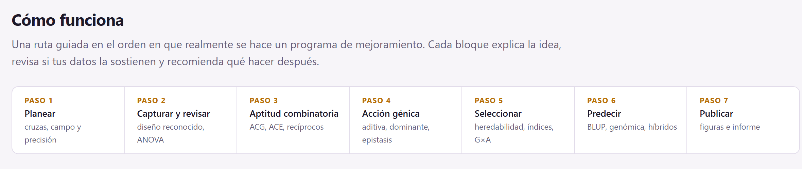
Figura 1.1. La sección Cómo funciona: siete pasos en el orden en que realmente se hace un programa de mejoramiento, del plan de cruzas al artículo.
Tabla 1.2. Los siete pasos de la portada y los bloques que los resuelven.
Paso
En la app
Qué se hace
Bloques
1
Planear
Plan de cruzas, semilla y polinizaciones, croquis del ensayo y potencia
2
2
Capturar y revisar
Carga de datos, diseño reconocido, calidad y análisis de campo
3
3
Aptitud combinatoria
Efectos y varianzas de ACG, ACE y recíprocos
46
4
Acción génica
Componentes genéticos, grado de dominancia, epistasis y heterosis
567
5
Seleccionar
Heredabilidad, respuesta esperada, índices y estabilidad
89
6
Predecir
Valores genéticos con pedigrí o marcadores e híbridos no probados
1011
7
Publicar
Informe, figuras y paquete de resultados
12
Qué incluye
Once tarjetas, una por bloque de análisis, muestran su número, una ilustración, la familia de métodos a la que pertenece y un párrafo con lo que calcula. Un clic en cualquier parte de la tarjeta abre el bloque; es la misma información de la tabla I.1 de la introducción, contada desde la app.
Para el material con el que trabajas
El tipo de material decide qué análisis tienen sentido: un dialelo de Hayman–Jinks exige líneas homocigóticas, la heterosis de Gardner–Eberhart se pensó para variedades y el modelo animal necesita pedigrí. La franja de la figura 1.2 lo resume en seis tarjetas y la tabla 1.3 añade los bloques que corresponden a cada una.
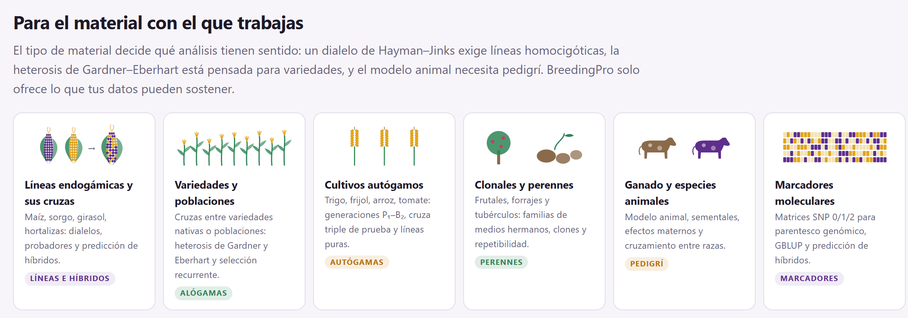
Figura 1.2. La sección Para el material con el que trabajas. Cada tarjeta lleva debajo una etiqueta con el tipo de material.
Tabla 1.3. Material, análisis que le convienen y bloques donde se hacen.
Material
Análisis que tienen sentido
Bloques
Líneas endogámicas y sus cruzas
Dialelos de Griffing y de Hayman–Jinks, línea × probador, predicción de híbridos
45611
Variedades y poblaciones
Heterosis de Gardner y Eberhart, diseños de Carolina del Norte, selección recurrente
568
Cultivos autógamos
Generaciones P1 a RC2, cruza triple de prueba, líneas puras en ensayos
678
Clonales y perennes
Familias de medios hermanos, clones en varios ambientes, repetibilidad
8910
Ganado y especies animales
Modelo animal, sementales, efectos maternos y cruzamiento de razas
10
Marcadores moleculares
Parentesco genómico, GBLUP y predicción de híbridos
11
Métodos que cubre
La galería muestra 32 métodos, cada uno con una ilustración propia. Los botones de arriba la filtran por familia y dicen cuántos métodos tiene cada una. La tabla 1.4 los reúne con el bloque donde se calculan.
Tabla 1.4. Los 32 métodos de la galería, por familia.
Familia
Métodos
Bloques
Dialelos · 9
Griffing, métodos 1, 2, 3 y 4; efectos recíprocos; gráfica Wr–Vr; ANOVA de Hayman; Gardner y Eberhart; dialelo parcial
456
Apareamiento · 5
Carolina del Norte I y II; Carolina del Norte III y cruza triple; línea × probador; prueba de epistasis
Heredabilidad; respuesta a la selección; índices de selección; correlaciones y senderos
8
G×A · 4
Regresión de estabilidad; ecovalencia y superioridad; AMMI; biplot GGE
9
Modelos mixtos · 3
REML y BLUP; modelo animal; cruzamiento entre razas
10
Genómica · 4
GBLUP; híbridos no probados; cruzas dobles y triples; cruzas entre dos grupos
11
Lo que reúne
Diez recuadros resumen lo que el programa junta en un solo flujo: del plan de cruzas al artículo; todos los diseños de apareamiento; cruzas perdidas y datos desbalanceados; supuestos puestos a prueba; interpretación en palabras; plantas, animales y marcadores; figuras listas para publicar; informe reproducible; español e inglés, y datos que no salen de tu computadora.
iNota · los cuatro botones de la presentación
Empezar con mis datos → abre el Bloque 3. Probar los laboratorios, Leer la teoría y Cómo citar bajan a su sección de la misma página; Leer la teoría además abre el primer tema. El nombre BreedingPro de la barra superior regresa a esta portada desde cualquier bloque.
1.2El laboratorio de dialelos
Frente a una gráfica Wr–Vr, todo estudiante de mejoramiento se pregunta qué genes producirían esos puntos. El laboratorio de dialelos recorre el camino al revés: tú decides cómo actúan los genes, y la app crea progenitores con esos genes, los cruza, «siembra» las parcelas con error experimental y analiza la tabla con las mismas fórmulas que aplicará a tus datos en los Bloques 4 y 5. Como conoces la verdad, puedes ver cuándo el análisis la recupera y cuándo se equivoca.
θTeoría en breve · el modelo aditivo–dominante de Hayman
Cada locus tiene dos alelos. El homocigoto AA suma +a al carácter, el aa resta a y el heterocigoto Aa aporta d; en el laboratorio a = 1, así que el control Dominancia d/a da directamente el grado de dominancia: 0 es acción aditiva, entre 0 y 1 dominancia parcial, 1 completa y más de 1 sobredominancia (Hayman, 1954b). Los progenitores son homocigóticos: en cada locus llevan el alelo que aumenta el carácter con probabilidad u y el que lo disminuye con probabilidad v = 1 − u. El valor de una cruza es la suma de sus loci, y cada parcela añade 20 unidades y un error normal.
Figura 1.3. Lo que hace el laboratorio cada vez que mueves un control. Los progenitores se sortean con genes concretos, se cruzan en un medio dialelo con progenitores, cada entrada se «siembra» en tres parcelas con error y la tabla de medias se analiza como si fueran datos reales. Los valores de las parcelas son ilustrativos; las medias son las del escenario de dominancia parcial.
Los siete controles de la tabla 1.5 están debajo de las gráficas. Cada uno cambia una pieza del modelo genético de la figura 1.3, y la app vuelve a crear, sembrar y analizar el dialelo en cuanto lo sueltas.
Tabla 1.5. Controles del laboratorio de dialelos.
Control
Intervalo
Inicial
Qué representa
Progenitores
4 a 12
7
Número de progenitores p; el dialelo tiene p(p + 1)/2 entradas.
Loci
1 a 30
12
Genes que pueden diferir entre progenitores.
Dominancia d/a
0 a 2
0.50
Grado de dominancia en cada locus.
Hacia valores altos
0 a 100 %
100 %
Fracción de loci en que el alelo dominante es el que aumenta el carácter; en los demás, domina el que lo disminuye.
Frecuencia u
0.10 a 0.90
0.50
Probabilidad de que un progenitor lleve, en cada locus, el alelo que aumenta el carácter.
Epistasis d×d
−3 a +3
0
Interacción dominancia × dominancia entre pares de loci: negativa, duplicada; positiva, complementaria.
Error de parcela σ
0 a 3
0.60
Desviación estándar del error de cada una de las tres parcelas por entrada.
Lo que ves en pantalla
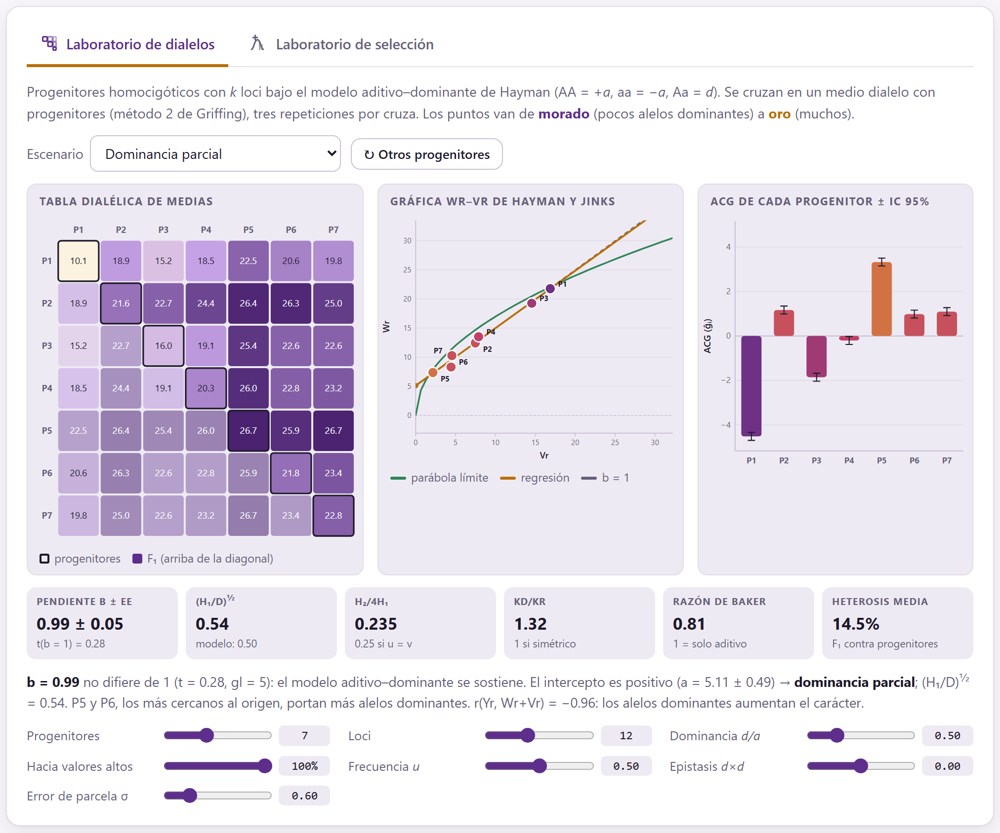
12345678
Figura 1.4. El laboratorio de dialelos con el escenario inicial, Dominancia parcial: siete progenitores, doce loci y d/a = 0.50.
1Las dos pestañas: laboratorio de dialelos y laboratorio de selección.
2Escenario, con ocho configuraciones listas (tabla 1.7), y ↻ Otros progenitores, que sortea un grupo nuevo con los mismos ajustes.
3Tabla dialélica de medias: progenitores en la diagonal, con borde negro; F1 arriba y su copia, más tenue, abajo. Al pasar el ratón se lee cada media.
4Gráfica Wr–Vr: parábola límite (verde), recta de regresión (ámbar) y recta de pendiente 1 por el punto medio (gris). Cada progenitor va de morado (pocos alelos dominantes) a oro (muchos).
5ACG de cada progenitor con su intervalo de confianza del 95 % (método 2 de Griffing, modelo I).
6Seis recuadros de resumen (tabla 1.6).
7La interpretación en palabras.
8Los siete controles del modelo genético (tabla 1.5).
Tabla 1.6. Los seis recuadros de resumen y lo que valen cuando el modelo se cumple.
Recuadro
Qué es
Sin epistasis y con poco error
Pendiente b ± EE
Regresión de Wr sobre Vr; debajo, la t de la prueba b = 1
Cercana a 1; si se aleja, hay epistasis u otro supuesto roto
(H1/D)½
Grado medio de dominancia; debajo, el d/a del modelo
Cercano al d/a que elegiste
H2/4H1
Proporción de alelos que aumentan y que disminuyen
¼ cuando u = v = ½; menor si las frecuencias difieren
KD/KR
Alelos dominantes contra recesivos en los progenitores
1 si están balanceados; mayor con más dominantes
Razón de Baker
2σ²ACG/(2σ²ACG + σ²ACE), del método 2 de Griffing
1 con acción aditiva; baja hacia 0 conforme pesa la dominancia
Heterosis media
Media de las F1 contra la media de los progenitores, en porcentaje
0 sin dominancia; crece con d/a si la dominancia va en una sola dirección
Sin dominancia, H2/4H1 y KD/KR no tienen sentido y sus recuadros muestran una raya con la leyenda sin dominancia. Los componentes D, H1, H2, F y h² que alimentan las razones se calculan como en el Bloque 5 y se explican en el capítulo de ese bloque.
θTeoría en breve · el error en un medio dialelo
Las correcciones por error clásicas de Hayman suponen un dialelo completo en el que cada cruza es el promedio de ella y su recíproca, con la mitad del error. En un medio dialelo cada cruza se observa una sola vez, y las correcciones cambian: H1 se corrige con −(5p − 4)E/p en vez de −(3p − 2)E/p; H2 con −4E + 4(p − 1)E/p² en vez de −2E, y h² con −4(p² − 1)E/p³ en vez de −4(p − 1)E/p². D y F no cambian. En 20 000 dialelos simulados durante la validación del programa, las correcciones clásicas inflaron H1 en cerca de 1.7E y H2 en 1.5E; las del medio dialelo no tuvieron sesgo. El laboratorio y el Bloque 5 usan estas últimas.
iNota · los mismos números cada vez
Cada escenario empieza con una semilla fija, por eso los valores de este capítulo se reproducen exactamente. Mover un control conserva la semilla: con los mismos progenitores y el mismo error, solo cambia lo que moviste. ↻ Otros progenitores cambia la semilla, y elegir de nuevo un escenario la regresa a la original.
✓Regla de decisión · cómo redacta la app la interpretación
Si b no difiere de 1 (|t| menor que el valor crítico al 5 % con p − 2 grados de libertad)…
entonces el modelo aditivo–dominante se sostiene.
Si b se aleja de 1…
entonces hay interacción no alélica u otro supuesto roto, y los componentes quedan sesgados.
Si (H1/D)½ < 0.25…
entonces la acción génica es prácticamente aditiva.
Si el intercepto de la recta es positivo y significativo…
entonces dominancia parcial.
Si es negativo y significativo…
entonces sobredominancia.
Si no difiere de cero y (H1/D)½ está entre 0.8 y 1.2…
entonces dominancia completa. Fuera de ese intervalo, la app avisa que la prueba del intercepto tiene poca potencia (práctica 4).
Si r(Yr, Wr + Vr) < −0.3 · > 0.3…
entonces los alelos dominantes · recesivos aumentan el carácter; entre ambos valores la dirección no es clara.
La app nombra además a los dos progenitores más cercanos al origen: son los que portan más alelos dominantes.
1.3Cinco prácticas con el laboratorio de dialelos
Los ocho escenarios del menú están pensados para recorrerse en orden. La tabla 1.7 dice qué cambia cada uno respecto del inicial y en qué práctica se usa.
Tabla 1.7. Escenarios del laboratorio de dialelos. Los no indicados conservan los valores iniciales (7 progenitores, 12 loci, d/a = 0.50, 100 % hacia valores altos, u = 0.50, sin epistasis, σ = 0.60).
Elige Solo acción aditiva y luego Dominancia parcial, Dominancia completa y Sobredominancia. Los cuatro escenarios usan los mismos progenitores y el mismo error; solo cambia d/a. Mira cómo baja la recta en la gráfica Wr–Vr (figura 1.5) y anota los recuadros (tabla 1.8).
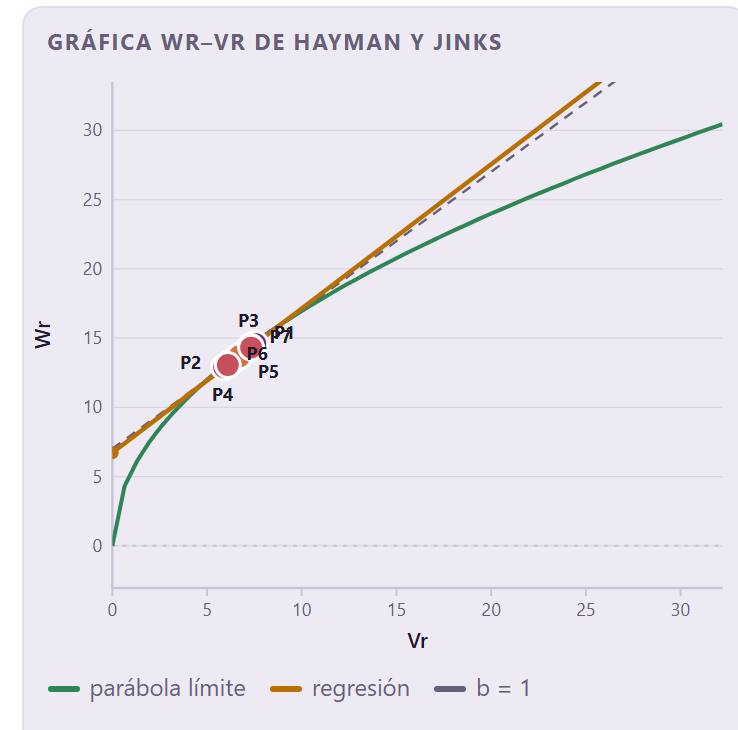
A · Solo acción aditiva, d/a = 0
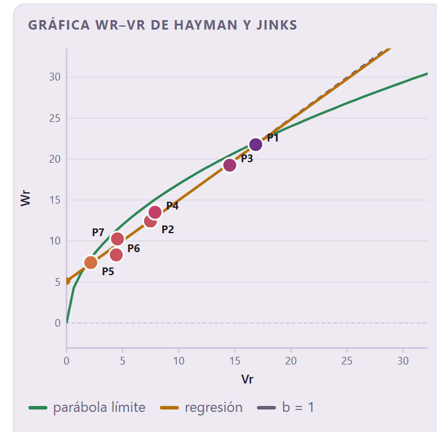
B · Dominancia parcial, d/a = 0.50
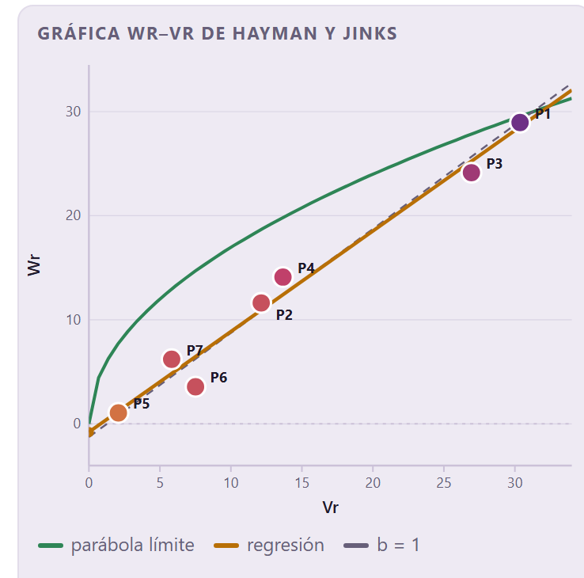
C · Dominancia completa, d/a = 1
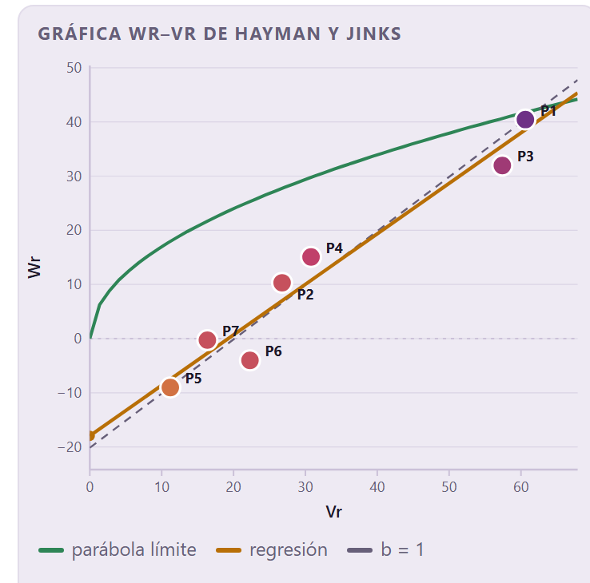
D · Sobredominancia, d/a = 1.80
Figura 1.5. La gráfica Wr–Vr de los mismos siete progenitores con cuatro grados de dominancia. La recta corta el eje Wr cada vez más abajo: por arriba del origen (A, B), casi en el origen (C) y por debajo (D). Observa que las escalas de los ejes cambian de un panel a otro.
Tabla 1.8. Lo que muestra el laboratorio en la práctica 1.
Escenario
d/a
(H1/D)½
Intercepto a ± EE
Baker
Heterosis media
Solo acción aditiva
0
0.11
6.73 ± 0.16
0.99
−1.1 %
Dominancia parcial
0.50
0.54
5.11 ± 0.49
0.81
14.5 %
Dominancia completa
1.00
1.08
−0.79 ± 1.14
0.45
30.1 %
Sobredominancia
1.80
1.95
−17.96 ± 3.49
0.07
55 %
Tres lecciones salen de esta práctica. La recta baja conforme crece la dominancia, y en los cuatro casos la pendiente no difiere de 1 (de 0.93 a 1.04), porque no hay epistasis. (H1/D)½ recupera el d/a del modelo con un error pequeño que se debe a tener solo siete progenitores; el 0.11 de la acción aditiva viene del error experimental. La razón de Baker cae de 0.99 a 0.07 y la heterosis media sube de −1.1 a 55 %: con acción aditiva el valor de una cruza se predice con la ACG de sus progenitores, y con sobredominancia hay que evaluar las cruzas.
Fíjate también en el orden de los progenitores sobre la recta. P5, que lleva el alelo dominante en 9 de los 12 loci, queda siempre cerca del origen, y P1, con uno solo, en el extremo lejano. Con acción aditiva la app omite esa lectura, porque sin dominancia no hay alelos dominantes que ordenar.
Práctica 2 · Dominancia que se cancela
El escenario Dominancia en ambas direcciones tiene d/a = 0.80 en todos los loci, pero en la mitad de ellos domina el alelo que aumenta el carácter y en la otra mitad el que lo disminuye. El laboratorio muestra (H1/D)½ = 0.60, es decir, dominancia clara en cada locus, y sin embargo la heterosis media es de −2.1 %: las desviaciones de dominancia se cancelan al sumar los loci. Es la situación en que un dialelo tiene mucha ACE y casi nada de heterosis promedio.
!Importante · la dirección de la dominancia
En este escenario la app lee r(Yr, Wr + Vr) = 0.77 y concluye que los alelos recesivos aumentan el carácter. Esa correlación refleja la dirección que predomina en estos ocho progenitores, no la del modelo, que va en ambos sentidos. Cuando la dominancia es ambidireccional, la señal más confiable es la combinación de un grado de dominancia claro con una heterosis media cercana a cero.
Práctica 3 · Cuando hay epistasis
Los escenarios Epistasis duplicada y Epistasis complementaria añaden una interacción dominancia × dominancia de −3 y +3 al modelo de dominancia parcial (d/a = 0.80). En los dos, la pendiente se aleja de 1: b = 0.68 ± 0.08 (t = 3.88 con 6 grados de libertad) en la duplicada y b = 0.66 ± 0.07 (t = 4.61) en la complementaria, y la app advierte que los componentes quedan sesgados. El sesgo es grande: en la complementaria, (H1/D)½ vale 2.51, lo que se leería como sobredominancia, aunque el modelo tiene dominancia parcial (figura 1.6 A).
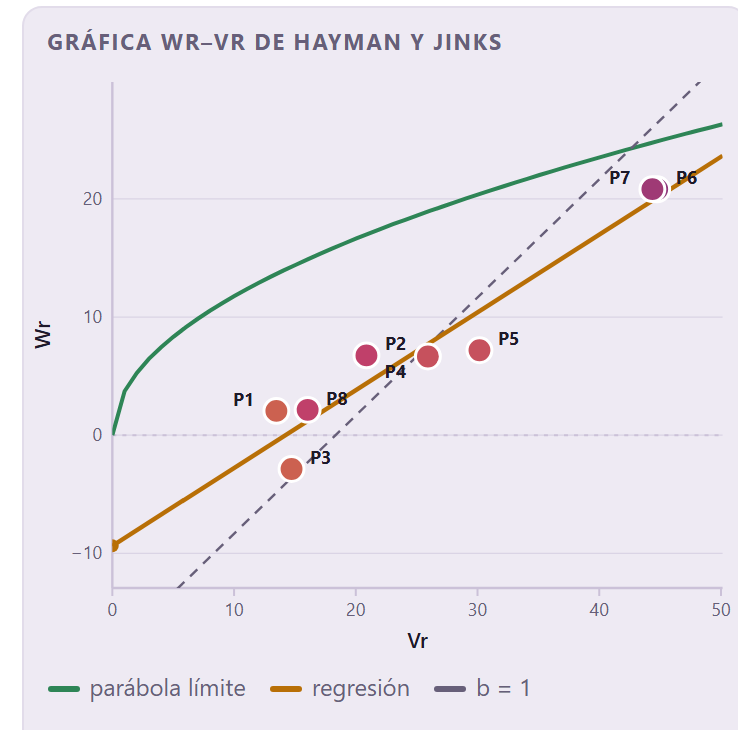
A · Epistasis complementaria (práctica 3)
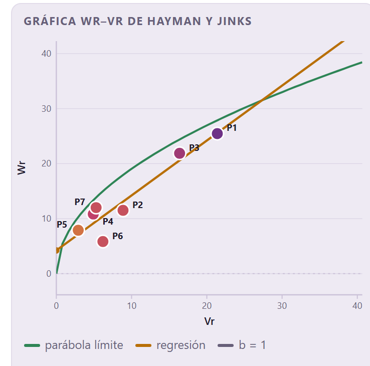
B · Mucho error experimental (práctica 4)
Figura 1.6. Dos maneras de que la gráfica Wr–Vr engañe. A: con epistasis, los puntos se salen de la recta de pendiente 1 (gris) y la regresión (ámbar) corta el eje Wr por debajo del origen, como si hubiera sobredominancia. B: con mucho error, los puntos se dispersan y el intercepto pierde significancia.
La prueba b = 1, sin embargo, no siempre detecta la epistasis. Pulsa ↻ Otros progenitores varias veces con la epistasis duplicada y verás muestras en que la pendiente no difiere de 1; entonces la app añade: «Ojo: aquí sí hay epistasis». La tabla 1.9 mide qué tan seguido ocurre.
Tabla 1.9. Porcentaje de muestras en que la prueba b = 1 se rechaza al 5 %, en 2000 dialelos simulados con el laboratorio (12 loci, d/a = 0.80, u = 0.50, σ = 0.30).
Modelo
6 prog.
8 prog.
10 prog.
12 prog.
Epistasis duplicada (−3)
27 %
41 %
51 %
60 %
Epistasis complementaria (+3)
38 %
60 %
71 %
79 %
Sin epistasis
5 %
6 %
10 %
11 %
41 %
Dato clave
Con ocho progenitores, la prueba b = 1 detecta la epistasis duplicada solo en 41 de cada 100 muestras. Una pendiente igual a 1 no demuestra que no haya epistasis. Para probarla directamente están la cruza triple de prueba (Bloque 6) y las pruebas de escala (Bloque 7).
La última fila de la tabla 1.9 tiene su propia lección: sin epistasis, la prueba se equivoca en 5 a 11 % de las muestras, algo más que el 5 % nominal cuando hay muchos progenitores para pocos loci, porque entonces los genes ya no se reparten al azar entre los progenitores, que es otro de los supuestos de Hayman.
Práctica 4 · Mucho error experimental
El escenario Mucho error experimental repite el de dominancia parcial con σ = 2.50 en lugar de 0.60. La pendiente sigue en 1 (1.00 ± 0.16), pero su error estándar se triplica, y el intercepto, 4.22 ± 1.78, ya no difiere de cero (t = 2.37, menor que el valor crítico de 2.57 con 5 grados de libertad). La app no concluye «dominancia completa»: avisa que (H1/D)½ = 0.61 apunta a dominancia parcial y que, con este error, la prueba del intercepto tiene poca potencia (figura 1.6 B).
El error afecta todo lo demás: H2/4H1 baja a 0.185 y KD/KR sube a 2.22, cuando el modelo tiene 0.25 y 1, y el error estándar de cada ACG pasa de 0.09 a 0.38. Antes de sembrar un dialelo real, el Bloque 2 calcula cuántas repeticiones hacen falta para detectar las diferencias que te interesan.
Práctica 5 · Frecuencias desiguales
Elige Dominancia completa y mueve Frecuencia u a 0.20 y luego a 0.80. Con u = 0.20 los alelos que aumentan el carácter, que aquí son los dominantes, escasean: H2/4H1 baja a 0.185 (la teoría da uv = 0.16) y KD/KR a 0.36 (la teoría, 0.25), y (H1/D)½ = 0.99 sigue en la dominancia completa. Con u = 0.80, KD/KR sube a 2.38, pero (H1/D)½ llega a 1.51 y el intercepto, −2.27 ± 0.87, se vuelve significativo: la app lee sobredominancia donde solo hay dominancia completa.
θTeoría en breve · la sobredominancia aparente
Con 80 % de alelos favorables, siete progenitores difieren en pocos loci y los genes ya no se reparten al azar entre ellos. Esa asociación infla H1 respecto de D y produce una sobredominancia aparente, un fenómeno conocido de los dialelos reales. Por eso conviene leer el grado de dominancia junto con el número de progenitores y, cuando sea posible, confirmarlo con el diseño III de Carolina del Norte (Bloque 6) o con las varianzas generacionales (Bloque 7).
1.4El laboratorio de selección
El segundo laboratorio pone a prueba la ecuación del criador, R = h²S. Una población con genes concretos se selecciona ciclo tras ciclo; en cada ciclo la app calcula lo que la ecuación predice con la varianza aditiva de ese momento y lo compara con lo que la población realmente avanza. Así se ve por qué la predicción sirve para uno o dos ciclos y no para veinte.
θTeoría en breve · lo que simula
Una población diploide de N plantas con k loci de igual efecto (AA = +1, Aa = d, aa = −1), recombinación libre y sin mutación; el error ambiental se fija al inicio para dar la heredabilidad pedida. Cada ciclo se seleccionan por fenotipo las mejores plantas, y sus N descendientes salen de parejas al azar entre ellas (c = 1) o de una madre seleccionada con cualquier padre (c = ½, polen libre). La respuesta predicha es R = c·h²·S, con h² = σ²A/σ²F y σ²A = Σ 2pqα², donde α = a + d(q − p) es el efecto medio de sustitución (Falconer y Mackay, 1996).
Los siete controles de la tabla 1.10 están debajo de las gráficas. Cualquier cambio crea una población nueva y la regresa al ciclo 0.
Tabla 1.10. Controles del laboratorio de selección.
Control
Intervalo
Inicial
Qué representa
Plantas N
40 a 1000
400
Tamaño de la población en cada ciclo.
Loci
1 a 100
40
Genes de igual efecto.
h² inicial
0.05 a 0.95
0.40
Heredabilidad inicial (amplia; sin dominancia es la estricta).
Seleccionadas
1 a 50 %
10 %
Fracción seleccionada; define la intensidad.
Frecuencia inicial
0.05 a 0.95
0.30
Frecuencia inicial del alelo favorable en cada locus.
Dominancia d/a
0 a 1
0
Grado de dominancia del alelo favorable.
Control parental
c = 1 o ½
1
Ambos progenitores seleccionados, o solo las hembras con polen libre.
Lo que ves en pantalla
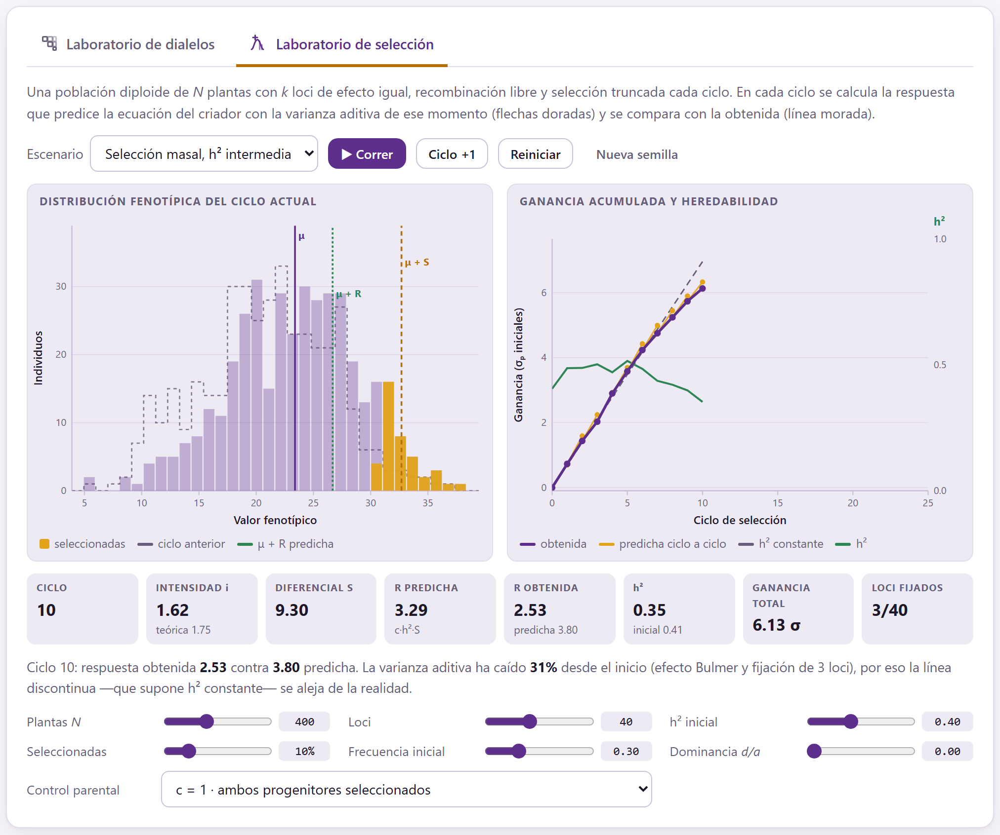
123456
Figura 1.7. El laboratorio de selección con el escenario Selección masal, h² intermedia tras diez ciclos.
1Escenario, con seis configuraciones (tabla 1.12), y los botones: ▶ Correr avanza un ciclo cada fracción de segundo y se vuelve ❚❚ Pausa; Ciclo +1 avanza uno; Reiniciar vuelve al ciclo 0; Nueva semilla sortea otra población.
2Distribución fenotípica del ciclo: seleccionadas en oro, el ciclo anterior en contorno gris y las líneas μ, μ + S y μ + R.
3Ganancia acumulada en desviaciones fenotípicas iniciales: obtenida (morado), predicha ciclo a ciclo (oro), la que supone h² constante (gris) y h² en el eje derecho (verde).
4Ocho recuadros (tabla 1.11).
5La interpretación del ciclo.
6Los siete controles (tabla 1.10).
Tabla 1.11. Los ocho recuadros del laboratorio de selección.
Recuadro
Qué es
Ciclo
Ciclos de selección completados, hasta 25.
Intensidad i
S/σF observada; debajo, la teórica para la fracción seleccionada (1.75 con 10 %).
Diferencial S
Media de las seleccionadas menos la media de la población.
R predicha
c·h²·S: lo que la ecuación espera para el ciclo siguiente.
R obtenida
Lo que avanzó la media en este ciclo; debajo, lo que se había predicho en el anterior.
h²
σ²A/σ²F del ciclo actual; debajo, la del ciclo 0.
Ganancia total
Avance acumulado, en desviaciones fenotípicas del ciclo 0 (σ).
Loci fijados
Loci en que uno de los alelos se perdió.
iNota · por qué la h² del recuadro no es exactamente la pedida
El control fija el error ambiental con la varianza genotípica de la población sorteada, mientras que el recuadro calcula σ²A con las frecuencias alélicas. Con 400 plantas la diferencia es mínima (0.41 contra 0.40); con 60, el muestreo pesa más (0.29). Con dominancia el recuadro muestra solo la parte aditiva: 0.35 cuando se pidió 0.40.
1.5Seis prácticas con el laboratorio de selección
Cada escenario empieza con la misma semilla, así que las seis poblaciones parten de genotipos comparables. Para cada uno, elige el escenario y pulsa ▶ Correr hasta el ciclo 25, o Ciclo +1 para ir paso a paso. La tabla 1.12 resume lo que ocurre.
Tabla 1.12. Los seis escenarios tras 5, 10 y 25 ciclos. La ganancia está en desviaciones fenotípicas del ciclo 0; la última columna es la varianza aditiva perdida al ciclo 25.
Escenario
Qué cambia
h² inicial
5
10
25 ciclos
Loci fijados
σ²A perdida
Selección masal, h² intermedia
N 400, 40 loci, h² 0.40, 10 %, p 0.30
0.41
3.58
6.13
8.63
37 / 40
99 %
Heredabilidad baja
h² 0.10
0.10
0.69
1.47
3.28
11 / 40
53 %
Pocos genes de efecto grande
4 loci, h² 0.50, p 0.20
0.41
3.58
3.62
3.69
4 / 4
100 %
Sin control del polen (c = ½)
c = ½
0.41
1.70
3.37
7.25
1 / 40
56 %
Población pequeña (deriva)
N 60
0.29
2.53
4.05
5.49
40 / 40
100 %
Dominancia completa
d/a 1
0.35
2.24
3.24
3.76
5 / 40
95 %
Práctica 1 · La ecuación del criador y sus límites
Con Selección masal, h² intermedia, el ciclo 0 selecciona el mejor 10 %: la intensidad observada es 1.72 (la teórica, 1.75), S = 11.03 y h² = 0.41, de modo que la ecuación predice R = 4.47. En el ciclo 1 la población avanza 4.67: la predicción funciona. En los ciclos siguientes la respuesta obtenida queda un poco por debajo de la predicha (4.55 contra 5.52 en el ciclo 2) porque la selección crea asociaciones negativas entre loci que reducen la varianza aditiva: es el efecto Bulmer (Bulmer, 1971).
La h² primero sube, de 0.41 a 0.52 en el ciclo 5, porque la frecuencia del alelo favorable pasa de 0.30 hacia 0.50, donde 2pq es máxima. Después cae: 0.35 en el ciclo 10, 0.15 en el 15 y 0.01 en el 25, con 37 de los 40 loci fijados. La ganancia acumulada se aplana en 8.63 σ, mientras que la línea que supone h² constante llega a 17.4 σ (figura 1.8 A).
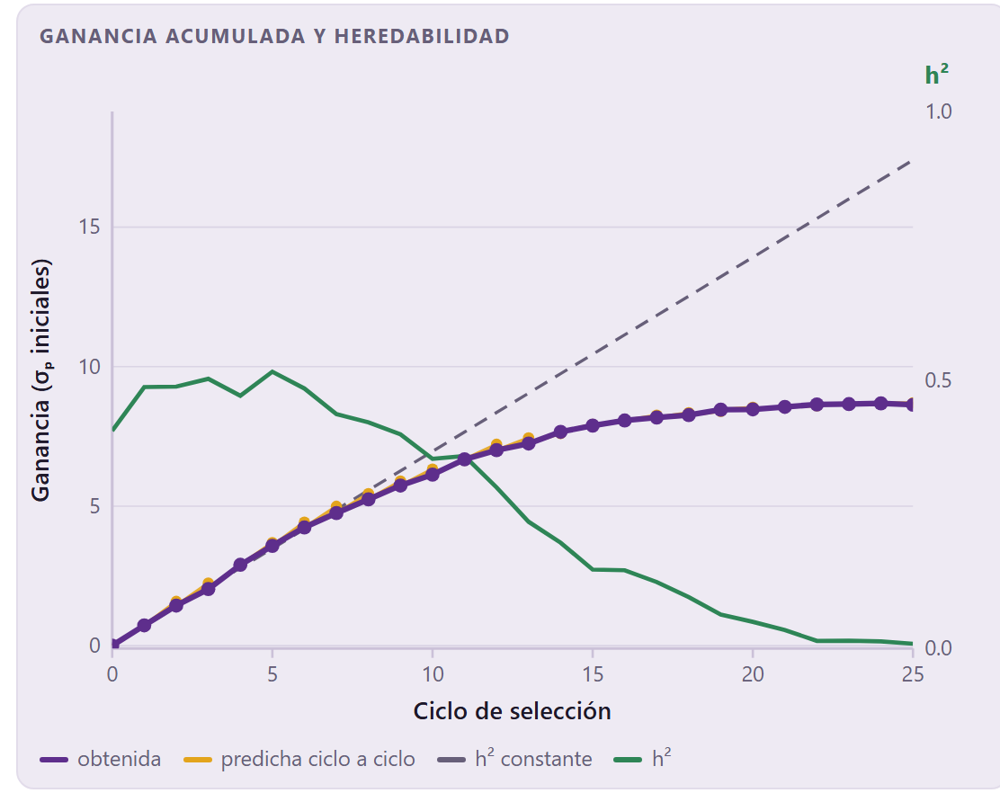
A · Selección masal, c = 1
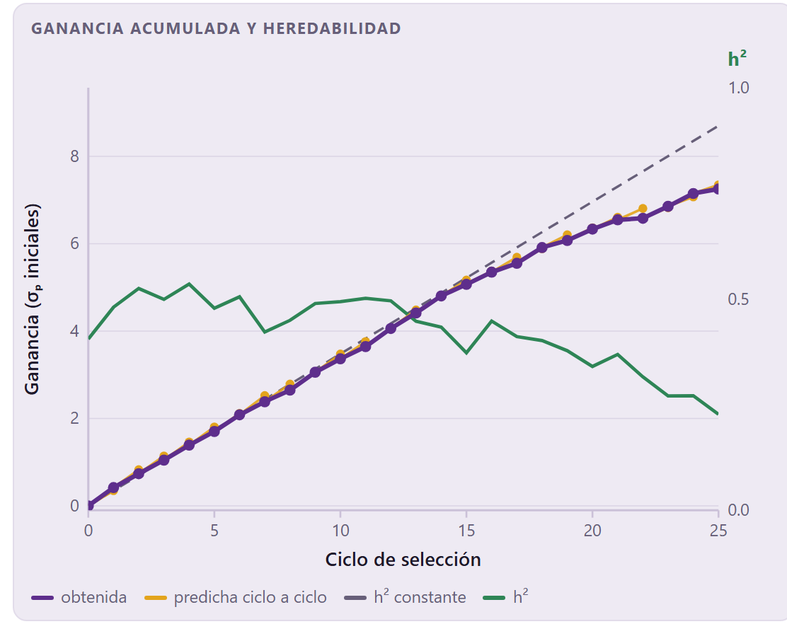
B · Sin control del polen, c = ½
Figura 1.8. Ganancia acumulada en 25 ciclos. Con ambos progenitores seleccionados (A) la población avanza el doble de rápido, pero la varianza aditiva se agota hacia el ciclo 20 y la ganancia se aplana; sin control del polen (B) avanza a la mitad del ritmo y conserva varianza. Las escalas verticales son distintas.
Práctica 2 · Heredabilidad baja
Con h² = 0.10 la ecuación predice poco (R = 2.15) y la respuesta de cada ciclo es errática: 2.93 en el ciclo 1, 0.95 en el 2 y 0.97 en el 3, contra predicciones de 2.15, 2.45 y 2.59. En 25 ciclos la población gana solo 3.28 σ, cuando la línea de h² constante prometía 4.2 σ. Por eso, con caracteres de baja heredabilidad, se selecciona sobre medias de familias o de repeticiones, cuya heredabilidad es mayor (Bloque 8).
Práctica 3 · Pocos genes de efecto grande
Con cuatro loci y frecuencia inicial de 0.20 la respuesta es rápida al principio (1.12 σ en el primer ciclo), pero en el ciclo 10 los cuatro loci están fijados, h² vale 0 y la población se detiene en 3.6 σ: es el límite de la selección. Con 40 loci el límite está más lejos y se alcanza más despacio (figura 1.9 A).
Práctica 4 · Sin control del polen
Con c = ½ solo las hembras son seleccionadas y el polen viene de toda la población: la R predicha baja a 2.24, la mitad de la selección masal, y a los 10 ciclos la ganancia es de 3.37 σ contra 6.13 σ. La contraparte es que la varianza se agota más despacio: en el ciclo 25 se ha perdido el 56 % de σ²A (contra 99 %) y h² todavía vale 0.23 (figura 1.8 B). Controlar el polen duplica la ganancia por ciclo: ese es el papel de c en la ecuación del criador.
Práctica 5 · Población pequeña
Con 60 plantas, seleccionar el 10 % deja seis progenitores por ciclo, y la deriva fija loci al azar: 7 en el ciclo 5, 24 en el 10 y los 40 en el 25. De ellos, 7 quedaron fijados en el alelo desfavorable, y la ganancia se detiene en 5.49 σ contra 8.63 σ con 400 plantas (figura 1.9 B). Un tamaño efectivo pequeño gasta la variabilidad que el programa necesitará en ciclos futuros.
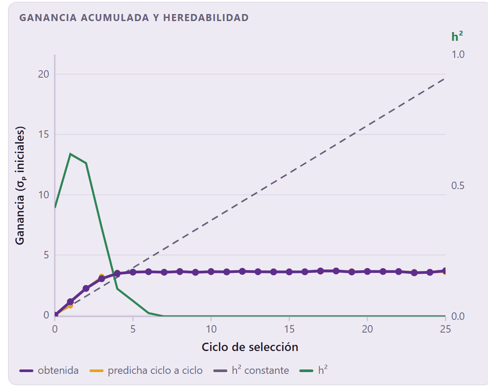
A · Pocos genes de efecto grande
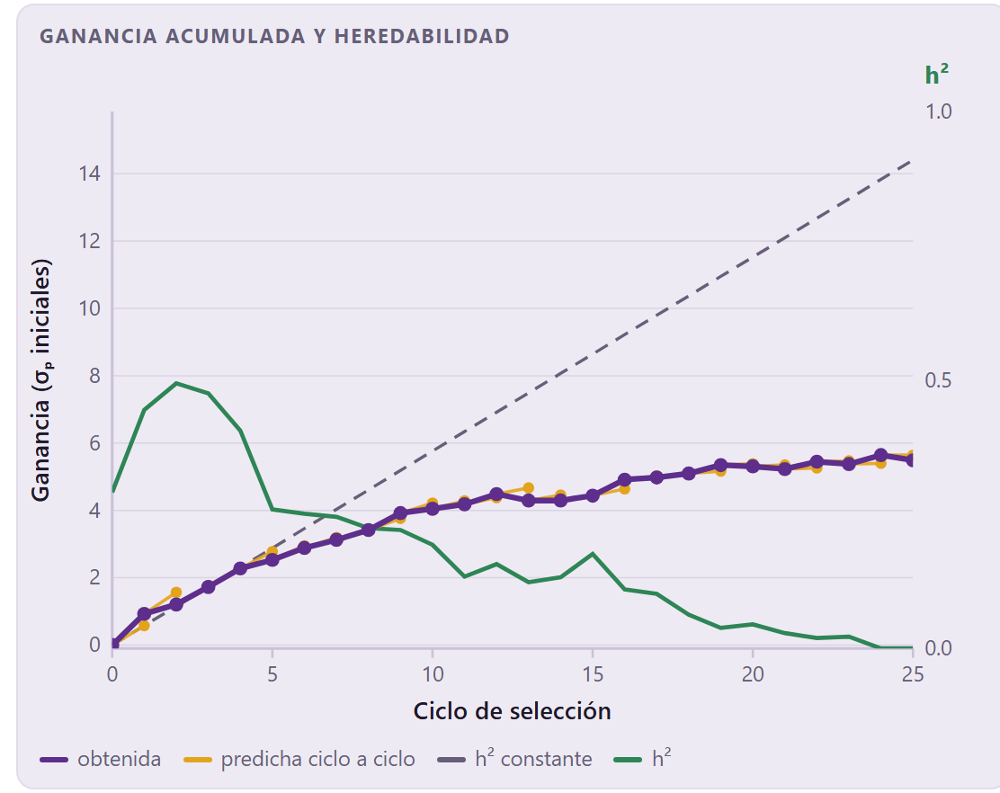
B · Población pequeña, N = 60
Figura 1.9. Dos maneras de agotar la respuesta. Con cuatro genes (A), la selección los fija en diez ciclos y la ganancia llega a su límite; con una población pequeña (B), la deriva fija los loci al azar, algunos en el alelo desfavorable, y el límite queda más bajo.
Práctica 6 · Dominancia completa
Con d/a = 1 la ganancia se frena pronto, 3.24 σ a los 10 ciclos y 3.76 σ a los 25, aunque solo 5 loci se fijaron: la varianza aditiva cayó 95 %. Cuando el alelo favorable es dominante y se vuelve común, el recesivo desfavorable que queda se esconde en los heterocigotos, donde la selección por fenotipo no lo ve; en la fórmula, α = a + d(q − p) se acerca a cero. La app lo explica en su interpretación, y es la razón para usar pruebas de progenie o autofecundación en los métodos de selección recurrente del Bloque 8.
▸Para la clase · una sesión de 50 minutos
10 min. Dialelos, práctica 1: predecir dónde cortará la recta antes de cambiar de escenario.
10 min. Práctica 3: diez veces ↻ Otros progenitores y comparar la detección con la tabla 1.9.
15 min. Selección, prácticas 1 y 4: la ganancia en 10 ciclos con y sin control del polen.
15 min. Prácticas 3 y 5: qué es un límite de selección y cómo proteger la variabilidad.
1.6La teoría, en lenguaje claro
La sección de teoría reúne lo necesario para correr los análisis y defenderlos en un seminario. Son quince temas plegados; un clic en el título abre cada uno. Nueve llevan una ilustración, las fórmulas aparecen en letra de ancho fijo y cada tema nombra los artículos de donde salen. La etiqueta a la derecha del título dice a qué bloque corresponde.
Tabla 1.13. Los quince temas de teoría y el capítulo de este manual que los desarrolla.
#
Tema en la app
Etiqueta
Se amplía en
1
Qué estima un programa de mejoramiento
empieza aquí
sección I.3
2
Aptitud combinatoria general y específica
Sprague & Tatum 1942
4
3
Las cuatro metodologías de Griffing y sus dos modelos
Bloque 4
4
4
Efectos recíprocos, maternos y no maternos
métodos 1 y 3
4
5
Hayman y Jinks: cómo actúan los genes
Bloque 5
5
6
Gardner y Eberhart: la heterosis entre variedades
Bloque 5
5
7
Comparación de las metodologías: supuestos y similitudes
cuál usar
45
8
Carolina del Norte, línea × probador y cruza triple de prueba
Bloque 6
6
9
Medias generacionales, epistasis y heterosis
Bloque 7
7
10
Heredabilidad y respuesta a la selección
Bloque 8 · laboratorio
8
11
Índices de selección: varios caracteres a la vez
Bloque 8
8
12
Interacción genotipo × ambiente y estabilidad
Bloque 9
9
13
Modelos mixtos, BLUP y el modelo animal
Bloque 10
10
14
Selección genómica y predicción de híbridos
Bloque 11
11
15
Qué análisis responde cada pregunta
guía de decisión
sección I.8
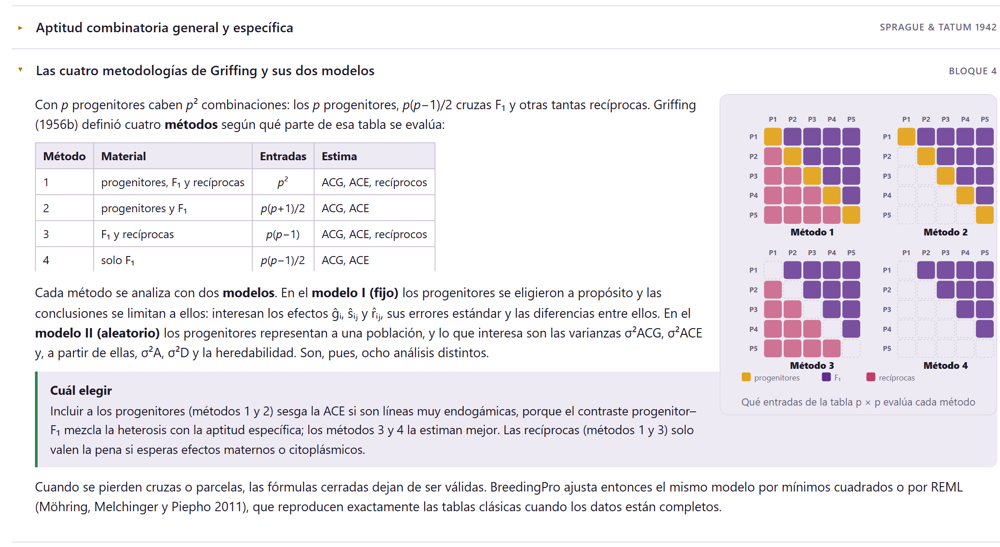
Figura 1.10. El tema Las cuatro metodologías de Griffing y sus dos modelos abierto: la tabla de los cuatro métodos, la ilustración de las entradas que evalúa cada uno, el recuadro Cuál elegir y la nota sobre las cruzas perdidas.
El tema 7 merece atención especial. Una tabla compara lado a lado el modelo I y el modelo II de Griffing, Hayman–Jinks y Gardner–Eberhart: la pregunta que responde cada uno, qué progenitores supone, qué métodos de Griffing admite, en qué especies vale, cómo trata los efectos recíprocos, la heterosis y la epistasis, qué estima y las equivalencias exactas entre ellos (tabla 1.14). El Bloque 5 aplica esas equivalencias a tus datos.
!Importante · un error frecuente
Interpretar σ²ACG y σ²ACE como σ²A y σ²D cuando los progenitores fueron elegidos a propósito (modelo I). Las varianzas genéticas solo tienen sentido si los progenitores son una muestra aleatoria de una población definida. La app lo recuerda al final de este tema y en el Bloque 4.
Tabla 1.14. La comparación de las metodologías del tema 7, como aparece en la app. ● sí; ◐ en parte o con condiciones; ○ no, o se supone ausente.
Griffing, modelo I (fijo)
Griffing, modelo II (aleatorio)
Hayman–Jinks
Gardner–Eberhart II y III
Pregunta que responde
¿Qué progenitores y cruzas son mejores en este grupo?
¿Cuánta varianza aditiva y de dominancia hay en la población de la que vienen los progenitores?
¿Cómo actúan los genes: grado y dirección de la dominancia, número de grupos de genes?
¿Cuánta heterosis hay y de qué tipo, entre variedades o poblaciones?
Progenitores
Elegidos a propósito; las conclusiones valen solo para ellos
Muestra aleatoria de una población de referencia
Líneas homocigóticas (endogámicas)
Variedades o poblaciones en equilibrio; también líneas
Métodos de Griffing aplicables
1, 2, 3 y 4
1, 2, 3 y 4; para la población ancestral, mejor 3 o 4
Requiere progenitores: 1 o 2
Medio dialelo con progenitores (como el 2)
Especies
Autógamas, alógamas y poliploides
Autógamas, alógamas y poliploides
◐ Solo diploides con progenitores endogámicos
Autógamas, alógamas y poliploides
Efectos recíprocos
● Se estiman, con partición materna y no materna (métodos 1 y 3)
● Varianza recíproca, materna y no materna (métodos 1 y 3)
○ Se suponen ausentes; se promedian
◐ Solo si se añaden al modelo
Heterosis
◐ Solo como contraste progenitores contra cruzas
◐ No se estima directamente
◐ Dirección y grado de dominancia (h², b1)
● Promedio, de cada variedad y específica
Epistasis y ligamiento
◐ No los separa: quedan dentro de ACG y ACE
◐ Sesgan σ²A y σ²D si existen
○ Supuestos ausentes; se prueban con b = 1 y t²
◐ Quedan dentro de la heterosis específica
Estima
ĝi, ŝij, r̂ij (m̂i, n̂ij) y sus errores estándar
σ²ACG, σ²ACE, σ²R → σ²A, σ²D, h², razón de Baker
D, H1, H2, F, h², E, (H1/D)½, H2/4H1, KD/KR, orden de dominancia
μv, vj, h, hj, sjj′ (II); ACG y ACE de las cruzas (III)
Equivalencias exactas
Método 1: ACG, ACE y recíprocos = ítems a, b y c + d de Hayman; método 2: ACG y ACE = variedades y heterosis total del análisis II
Con progenitores endogámicos: σ²ACG = ¼(D + H1 − H2 − F) y σ²ACE = ¼H2
b1, b2 y b3 del medio dialelo = h, hj y sjj′ de Gardner–Eberhart; c = materno, d = recíproco restante
ĝj (III) = ½v̂j + ĥj (II) = ĝj del método 4; sjj′ = ACE del método 4
1.7Cómo citar y referencias
Al final de la portada está la cita del programa, con la versión instalada, lista para copiar. Copiar la cita la copia en el idioma de la interfaz y el botón confirma con ✓ Copiada. El identificador de objeto digital (DOI) se añadirá cuando se archive la versión 1.0.
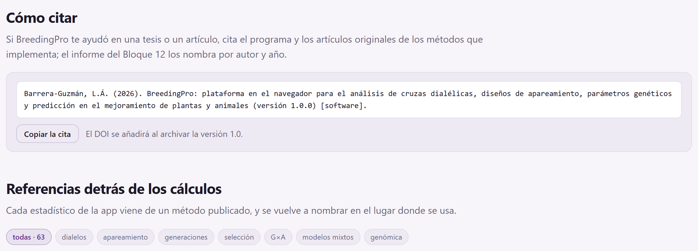
Figura 1.11. La sección Cómo citar y el inicio de Referencias detrás de los cálculos, con los botones que filtran las 63 referencias por familia.
Debajo están las 63 referencias de los métodos que el programa calcula, con autores, año, título y revista. Los mismos botones de familia de la galería de métodos filtran la lista (tabla 1.15). Cada estadístico vuelve a citarse en el lugar donde se usa: en la última tarjeta de su bloque y en el informe del Bloque 12.
Tabla 1.15. Las referencias de la portada, por familia.
Familia
Ref.
Algunos ejemplos
Dialelos
19
Sprague y Tatum (1942); Griffing (1956a, 1956b); Hayman (1954a, 1954b); Jinks (1954); Gardner y Eberhart (1966); Möhring, Melchinger y Piepho (2011)
Apareamiento
4
Comstock y Robinson (1948, 1952); Kempthorne (1957); Kearsey y Jinks (1968)
Generaciones
6
Mather (1949); Cavalli (1952); Hayman (1958); Jinks y Jones (1958); Lande (1981)
Selección
16
Smith (1936); Hazel (1943); Falconer y Mackay (1996); Holland y colaboradores (2003); Bulmer (1971)
G×A
7
Finlay y Wilkinson (1963); Eberhart y Russell (1966); Shukla (1972); Gauch (1988); Yan y colaboradores (2000)
Modelos mixtos
6
Henderson (1975, 1976); Patterson y Thompson (1971); Meuwissen y Luo (1992); Dickerson (1969)
Genómica
5
Jenkins (1934); Bernardo (1994); Meuwissen, Hayes y Goddard (2001); VanRaden (2008); Technow y colaboradores (2012)
!Importante · cita también los métodos
Si BreedingPro te ayudó en una tesis o un artículo, cita el programa y también los artículos originales de los métodos que usaste. No tienes que buscarlos en la lista completa: el informe del Bloque 12 redacta la sección de métodos con los ajustes que usaste e incluye en sus referencias solo las obras que cita.
B2
Capítulo dos · Bloque 2 · Planear
Planear cruzas, ensayo y potencia
Antes de hacer la primera polinización conviene saber cuántas cruzas hay que hacer, cuánta semilla hará falta, cómo quedará el ensayo en el campo y si el experimento tendrá la potencia necesaria para responder la pregunta. El Bloque 2 resuelve las cuatro cosas y entrega la libreta de campo que el Bloque 3 leerá después.
2.1Qué resuelve este bloque
2.2El diseño de apareamiento
2.3Semilla y polinizaciones
2.4El ensayo de campo
2.5La libreta de campo
2.6Precisión y potencia antes de sembrar
2.7Otros diseños, con sus números
2.8De la libreta al Bloque 3
2.1Qué resuelve este bloque
El Bloque 2 se recorre de arriba abajo en cuatro tarjetas. Cada una toma lo que definió la anterior, y todo se recalcula al momento: si cambias el número de progenitores, cambian las cruzas, la semilla, el croquis y la potencia.
Figura 2.1. Las cuatro tarjetas del Bloque 2. La libreta de campo de la tarjeta 3 se descarga o pasa directo al Bloque 3; si la tarjeta 4 muestra poca potencia, se regresa a la 1 o a la 2 y se ajusta el tamaño del experimento.
A lo largo del capítulo se usa un mismo ejemplo: un dialelo de ocho líneas de maíz, L1 a L8, con el método 4 de Griffing (solo las F1), dos testigos comerciales, tres repeticiones y dos localidades, en un látice α. Todos los números que se citan salen de la app con esos ajustes y con la semilla aleatoria que trae por omisión, 2026.
2.2El diseño de apareamiento
La tarjeta 1 · Diseño de apareamiento empieza con once mosaicos, uno por diseño, cada uno con su ilustración. Al elegir uno aparecen los datos que ese diseño necesita: la lista de progenitores, el número de machos y hembras, los dos progenitores de una cruza o las generaciones. Debajo, cuatro recuadros resumen el plan: progenitores o individuos, cruzas por hacer, entradas a evaluar y ciclos de cultivo hasta la evaluación.
Tabla 2.1. Los once diseños. p: progenitores; c: conjuntos; m y f: machos y hembras por conjunto; n: plantas F2 o líneas; l y t: líneas y probadores.
Diseño
Qué se cruza
Entradas
Bloques
Griffing 1
Cada par en las dos direcciones, más los progenitores
p²
45
Griffing 2
Cada par una vez, más los progenitores
p(p + 1)/2
45
Griffing 3
Cada par en las dos direcciones, sin progenitores
p(p − 1)
4
Griffing 4
Cada par una vez, sin progenitores
p(p − 1)/2
4
Dialelo parcial
Cada progenitor con s de los demás, en un esquema circulante
ps/2
6
Carolina del Norte I
Cada macho con f hembras propias, distintas de las de los otros machos
c·m·f
6
Carolina del Norte II
Todos los machos con todas las hembras de su conjunto
c·m·f
6
Carolina del Norte III
Cada planta F2 como macho con P1 y con P2
2n
6
Cruza triple de prueba
Cada planta F2 o línea como macho con P1, P2 y F1
3n
6
Línea × probador
Cada línea (hembra) con cada probador (macho)
l·t
6
Generaciones
P1, P2, F1, F2, BC1 = F1 × P1 y BC2 = F1 × P2; opcionales la F1 recíproca, la F3 y las retrocruzas autofecundadas
una por generación
7
El dialelo parcial, las Carolinas del Norte III y la cruza triple de prueba pueden añadir los progenitores (y la F1) como entradas; la línea × probador añade por omisión las líneas y los probadores; y cualquier diseño admite testigos, que se escriben separados por comas y se evalúan como una entrada más. Los nombres de los progenitores son libres; si la lista queda vacía, la app usa nombres genéricos (P1, P2… o L1, L2…) y el número que indiques. Al escribir nombres, ese número se ajusta solo a la cantidad escrita y se bloquea.
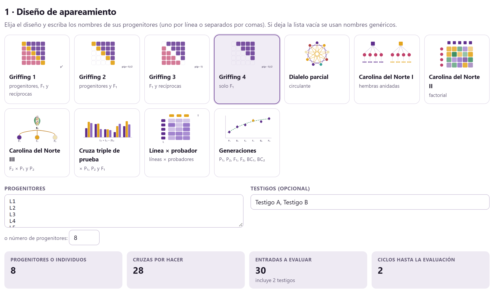
Figura 2.2. La tarjeta 1 con el ejemplo: Griffing 4, ocho líneas y dos testigos. Resultan 28 cruzas y 30 entradas, que se evalúan en el segundo ciclo de cultivo.
iNota · cómo se escriben las cruzas
Todas las cruzas se escriben hembra × macho. En los dialelos, las F1 directas van arriba de la diagonal (la hembra es la fila) y las recíprocas abajo, como en Griffing (1956b). En la Carolina del Norte III y la cruza triple de prueba, los probadores P1, P2 y F1 son las hembras y cada planta F2 da el polen. En la línea × probador, las líneas son hembras. Los nombres repetidos se ignoran con un aviso, porque los bloques siguientes identifican cada entrada por su nombre.
Reglas propias de algunos diseños
Métodos 3 y 4 necesitan al menos cuatro progenitores para estimar la ACE; los demás dialelos, al menos tres.
Dialelo parcial (Kempthorne y Curnow, 1961): el progenitor i se cruza con i + k, …, i + k + s − 1 (en círculo), con k = (p + 1 − s)/2. Así cada progenitor entra en exactamente s cruzas, pero solo si p y s tienen paridad opuesta y s < p − 1; el menú Cruzas por progenitor (s) ofrece únicamente esos valores. Con 10 progenitores son s = 3, 5 o 7 (15, 25 o 35 cruzas, en lugar de 45).
Carolinas del Norte I y II se organizan en conjuntos, cada uno con machos y hembras nuevos; se evalúan como experimentos separados. En la II, la casilla Machos y hembras son plantas de una población indica que son plantas no endogámicas: al elegir el diseño con ella activada, la tarjeta 4 toma F = 0 (lo mismo que en la I, la III y la cruza triple), y la tarjeta 2 revisa si cada planta alcanza para todas sus cruzas.
Carolina del Norte III y cruza triple de prueba: se recomiendan 20 o más plantas F2 (Kearsey, 1980). La casilla Ya tengo semilla F₂ (o las líneas) quita del calendario los ciclos para formarlas.
Línea × probador con un solo probador es una cruza de prueba: la app avisa que así no se estiman ni la ACE ni la ACG de los probadores.
Generaciones: sin P1, P2, F1 o F2 no hay pruebas de escala, y sin las dos retrocruzas solo se ajusta el modelo aditivo–dominante con la prueba C; la app lo advierte. Las retrocruzas llevan los códigos BC1 y BC2 (del inglés backcross); el Bloque 3 reconoce igual RC1 y RC2, y el Bloque 7 las muestra como RC1 y RC2.
El plan de cruzamientos y el calendario
Debajo de los recuadros aparecen dos figuras editables. El plan de cruzamientos es la tabla hembra × macho con cada cruza coloreada por tipo (progenitor, F1 directa, recíproca, familia de hermanos completos, retrocruza a cada probador); en las generaciones se sustituye por un esquema del origen de cada generación con sus plantas. El calendario por ciclos reparte el trabajo en ciclos de cultivo, del bloque de cruzamiento a la evaluación.
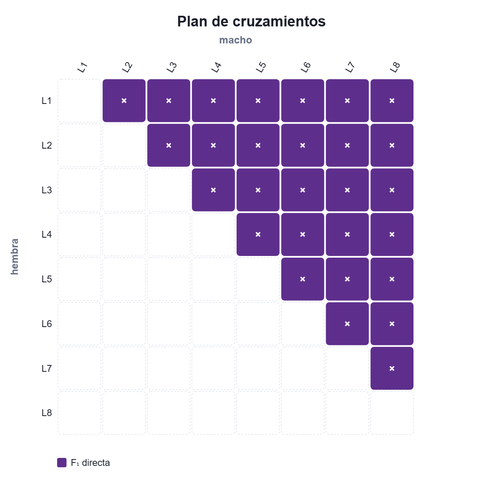
A · Plan de cruzamientos
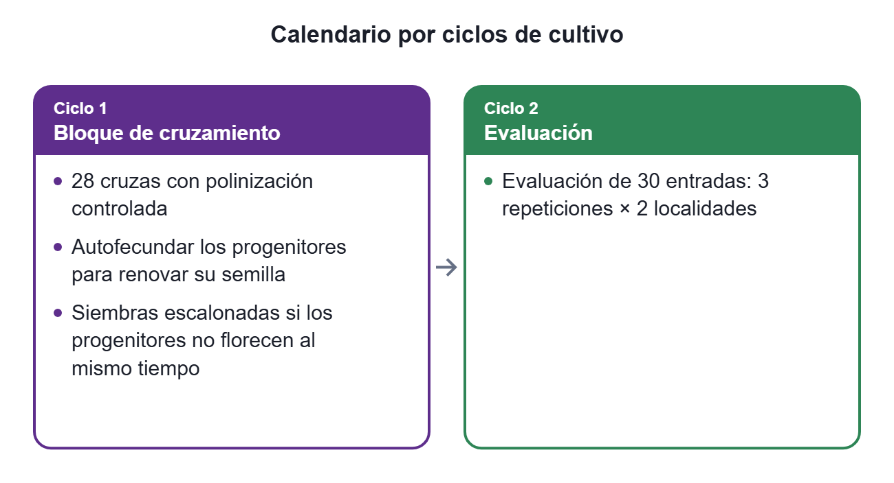
B · Calendario por ciclos
Figura 2.3. Las dos figuras de la tarjeta 1 con el ejemplo. En el método 4 solo se hacen las cruzas de arriba de la diagonal; los testigos no aparecen en el plan porque no se cruzan.
Tabla 2.2. Ciclos de cultivo hasta la evaluación, según el diseño.
Diseño
Ciclos
Total
Dialelos, parcial y línea × probador
Bloque de cruzamiento (con autofecundación de los progenitores y siembras escalonadas si no florecen juntos) · evaluación
2
Carolina del Norte I y II
Bloque de cruzamiento, con cada planta etiquetada · evaluación, un experimento por conjunto
2
Carolina del Norte III y cruza triple
Formar la F1 · formar la F2 · retrocruzas de prueba, cada macho con todos sus probadores el mismo día · evaluación
4
Generaciones
Formar la F1 · generaciones segregantes, rehaciendo la F1 e incrementando P1 y P2 · (tercera generación, si se pidió) · evaluación conjunta de todas
3 o 4
La lista completa de cruzas y entradas está plegada al final de la tarjeta, en Lista de cruzas y entradas, con su número, código, hembra, macho y tipo, y se descarga con ⬇ CSV.
Cuántas plantas por generación
En el diseño de generaciones cada generación se evalúa con un número de plantas. Las segregantes varían más que los progenitores y la F1, así que, con el mismo número de plantas, sus medias quedan más precisas o menos según su varianza. El botón Repartir para igualar la precisión distribuye un total de plantas en proporción a la varianza esperada de cada generación, para que todas las medias tengan el mismo error estándar (Kearsey, 1980).
V(P1) = V(P2) = V(F1) = E · V(F2) = ½D + ¼H + E · V(BC1) = V(BC2) = ¼D + ¼H + E con D y H deducidos de la heredabilidad en la F2 y del cociente (H/D)½ que indiques
Con los valores por omisión (600 plantas, H² = 0.5 en la F2 y (H/D)½ = 0.8) el reparto es 73 plantas de cada progenitor y de la F1, 146 de F2 y 118 de cada retrocruza, y los errores estándar de las seis medias quedan entre 0.079 y 0.080. Con el reparto inicial de 30 y 100 plantas iban de 0.086 a 0.124 (sección 2.7).
2.3Semilla y polinizaciones
La tarjeta 2 · Semilla y polinizaciones responde tres preguntas del bloque de cruzamiento: cuánta semilla necesita cada entrada para todo el ensayo, cuántas polinizaciones hay que hacer y cuántas plantas de cada progenitor hay que sembrar. El menú Cultivo llena los campos con valores orientativos (tabla 2.4) que puedes corregir con los de tu programa.
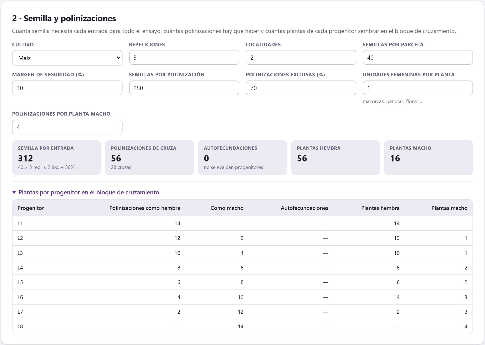
Figura 2.4. La tarjeta 2 con el ejemplo y la tabla Plantas por progenitor en el bloque de cruzamiento abierta.
θTeoría en breve · las cuentas de la tarjeta
semilla por entrada = semillas por parcela × repeticiones × localidades × (1 + margen) polinizaciones por entrada = semilla ÷ (semillas por polinización × fracción de polinizaciones exitosas) plantas hembra de un progenitor = (polinizaciones como hembra + autofecundaciones) ÷ unidades femeninas por planta plantas macho de un progenitor = polinizaciones como macho ÷ polinizaciones por planta macho
Todo se redondea hacia arriba. En el diseño de generaciones la semilla sale de las plantas de cada generación por el número de localidades, con el mismo margen. Las autofecundaciones son las que dan la semilla de los progenitores que se evalúan; en los métodos 3 y 4 no hay, porque los progenitores no entran al ensayo.
En el ejemplo, cada entrada necesita 40 × 3 × 2 × 1.3 = 312 semillas; con 250 semillas por polinización y 70 % de éxito, cada una rinde 175, así que se hacen dos polinizaciones por cruza: 56 en total para las 28 cruzas. Con una mazorca por planta y cuatro polinizaciones por planta macho, el bloque de cruzamiento necesita 56 plantas hembra y 16 plantas macho.
!Importante · quién es hembra y quién macho
En los métodos 2 y 4 la app escribe cada cruza con el progenitor que va antes en la lista como hembra. En el ejemplo, L1 es hembra en sus siete cruzas (14 plantas hembra y ninguna macho) y L8 es macho en todas (4 plantas macho). Como en estos métodos se supone que no hay efectos recíprocos, puedes invertir algunas cruzas en el bloque de cruzamiento para repartir el trabajo; conserva el código de la entrada tal como está en la libreta.
Tabla 2.3. Datos de la tarjeta 2 y sus valores iniciales (los de maíz).
Campo
Inicial
Qué es
Repeticiones · Localidades
3 · 2
Los de todo el bloque: los usan también las tarjetas 3 y 4
Semillas por parcela
40
Semillas que se siembran en cada parcela
Margen de seguridad (%)
30
Semilla de más, para resiembras y pérdidas
Semillas por polinización
250
Semilla que da una polinización exitosa
Polinizaciones exitosas (%)
70
Fracción de polinizaciones que forman semilla
Unidades femeninas por planta
1
Mazorcas, panojas o flores que pueden polinizarse en una planta
Polinizaciones por planta macho
4
Polinizaciones que puede dar el polen de una planta
Tabla 2.4. Valores orientativos del menú Cultivo. Otro (valores propios) deja los campos como estén.
Cultivo
Semillas por polinización
Unidades femeninas por planta
Polinizaciones por planta macho
Semillas por parcela
Maíz
250
1
4
40
Sorgo
400
1
3
80
Trigo
30
3
5
300
Arroz
20
3
6
200
Frijol
4
10
10
40
Jitomate
60
8
10
20
Chile
40
8
10
20
Calabaza
200
2
3
10
Girasol
300
1
3
30
Algodón
25
10
10
40
Cuando cada progenitor es una sola planta
En las Carolinas del Norte I y III, en la cruza triple de prueba y en la Carolina del Norte II con plantas de una población, cada progenitor es una planta que no puede multiplicarse. La tarjeta compara lo que se le pide con lo que puede dar y avisa cuando no alcanza. En la Carolina del Norte II con sus valores iniciales (tres conjuntos de 4 × 4), cada macho debe dar polen para 8 polinizaciones, más de las 4 supuestas, y cada hembra necesita 8 polinizaciones con una sola mazorca. La app sugiere reducir la semilla por parcela, escalonar las siembras de las hembras, usar varias espigas o flores por planta o, en la II, usar como hembras líneas o clones que puedan multiplicarse.
2.4El ensayo de campo
La tarjeta 3 · Diseño del ensayo de campo aleatoriza las entradas en cada localidad y dibuja el croquis. La aleatorización es reproducible: parte de la Semilla aleatoria, que queda escrita en la libreta, y cada localidad recibe su propia aleatorización derivada de ella. El botón ↻ sortea otra semilla.
Tabla 2.5. Los cuatro diseños de campo. v: entradas; r: repeticiones; s: bloques por repetición; b: bloques y c: testigos del aumentado.
Diseño
Cómo se forma
Grados de libertad del error
Bloques completos al azar
Cada repetición es un bloque con todas las entradas
(r − 1)(v − 1)
Látice alfa (bloques incompletos)
Cada repetición se divide en s bloques de k parcelas (Patterson y Williams, 1976)
vr − 1 − (v − 1) − (r − 1) − r(s − 1)
Completamente al azar
Todas las parcelas se sortean juntas
v(r − 1)
Aumentado (testigos repetidos)
Los testigos en cada bloque; las entradas nuevas una sola vez (Federer, 1956)
(b − 1)(c − 1)
✓Regla de decisión · qué diseño de campo usar
Si hay pocas entradas (hasta 15 o 20) y el terreno es uniforme en el tamaño de una repetición…
entonces bloques completos al azar.
Si hay muchas entradas y una repetición completa ya no cabe en suelo homogéneo…
entonces látice α, con bloques de un tamaño cercano a √v.
Si hay muchas entradas nuevas y semilla para una sola parcela de cada una…
entonces aumentado, con al menos dos testigos y 12 o más grados de libertad del error.
Si las parcelas son macetas o unidades homogéneas (invernadero, laboratorio)…
entonces completamente al azar.
La app exige al menos dos repeticiones, salvo en el aumentado, y advierte cuando el error queda con menos de 12 grados de libertad.
El látice α
Al elegir el látice, la app propone un tamaño de bloque k cercano a √v; con 30 entradas propone 5, es decir, seis bloques por repetición. Si v no es múltiplo de k, los bloques quedan de dos tamaños que difieren en una parcela.
θTeoría en breve · cómo se construye y qué es el factor de eficiencia
Cuando el número de bloques por repetición s es primo y r ≤ s y k ≤ s, un arreglo cíclico da un diseño α(0,1), en el que ningún par de entradas comparte bloque más de una vez: con 25 entradas en bloques de 5, o 49 en bloques de 7, alcanza la eficiencia máxima posible. En los demás casos, la app genera candidatos con arreglos generadores al azar y con un algoritmo de intercambio que reparte los encuentros entre pares, elige el de mayor factor de eficiencia E y, hasta 100 entradas, lo pule con intercambios que suben E directamente.
E compara la varianza de las diferencias entre entradas con la que tendría un diseño de bloques completos con el mismo error: E = 0.785 quiere decir que la información perdida por usar bloques incompletos equivale a un 21.5 %. Junto a E, la app muestra su cota superior para diseños resolubles y los encuentros máximos, el mayor número de veces que un par de entradas comparte bloque.
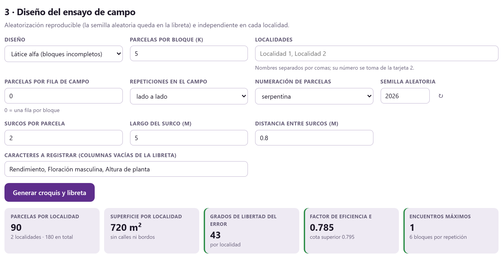
Figura 2.5. La tarjeta 3 con el látice α del ejemplo: 90 parcelas por localidad, 720 m², 43 grados de libertad del error y E = 0.785, con cota superior 0.795; ningún par de entradas comparte bloque más de una vez.
Tabla 2.6. El látice α del ejemplo (30 entradas, tres repeticiones) con distintos tamaños de bloque.
k
Bloques por repetición
E
Cota superior
Encuentros máximos
gl del error
3
10
0.591
0.682
1
31
5
6
0.785
0.795
1
43
6
5
0.823
0.829
2
46
10
3
0.905
0.906
3
52
30
1 (bloques completos)
1
—
—
58
!Importante · un E más alto no es un mejor diseño
E sube con el tamaño del bloque y llega a 1 con bloques completos, porque compara con un diseño que tuviera el mismo error. Pero el propósito de los bloques pequeños es que el error sea menor, porque cada bloque ocupa un pedazo de terreno más uniforme. Elige k por el tamaño del terreno homogéneo y usa E para comparar diseños con el mismo k. La cota superior tampoco siempre se alcanza: con bloques de tres parcelas, varias semillas dan E entre 0.591 y 0.592, lejos de 0.682, porque ningún diseño llega a ella.
6 de 7
Dato clave
En la validación del programa, los látices α generados igualaron o superaron la eficiencia de los de un generador independiente con el mismo número de entradas, repeticiones y tamaño de bloque en 6 de 7 casos; en el séptimo quedaron 0.03 % abajo. E se calcula exactamente, con los valores propios de la matriz de información.
Cómo se acomoda en el terreno
Tabla 2.7. Opciones de la tarjeta 3 que no cambian el diseño estadístico.
Campo
Qué hace
Parcelas por fila de campo
0 pone cada bloque en una fila; otro número parte los bloques en filas de ese largo.
Repeticiones en el campo
una debajo de otra o lado a lado, con una calle de una parcela entre ellas.
Numeración de parcelas
serpentina (cada fila en sentido contrario a la anterior, como se recorre el campo), por filas o repetición × 100 + parcela (101, 102… o ×1000 si una repetición tiene 100 o más parcelas).
Localidades
Sus nombres, separados por comas; su número se toma de la tarjeta 2.
Surcos por parcela, Largo del surco (m), Distancia entre surcos (m)
Calculan la superficie: parcelas × surcos × largo × distancia, sin calles ni bordos. En el ejemplo, 90 × 2 × 5 × 0.8 = 720 m² por localidad.
Caracteres a registrar
Nombres separados por comas; cada uno será una columna vacía de la libreta.
El croquis se dibuja para una localidad a la vez; si hay varias, un menú permite cambiarla. El editor de la figura colorea las parcelas por tipo de entrada o por repetición y muestra u oculta los códigos de las entradas y los números de parcela. Cuando el plan es pequeño, el croquis se rehace solo al cambiar el plan; si es grande (más de 2500 parcelas, o un látice α con más de 200 entradas), la app pide pulsar Generar croquis y libreta.
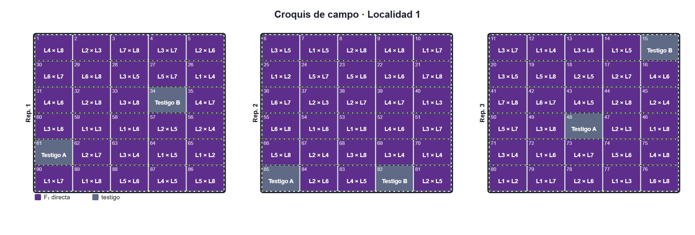
Figura 2.6. Croquis de la localidad 1 con las repeticiones lado a lado. Cada fila de una repetición es un bloque incompleto de cinco parcelas; la numeración en serpentina recorre las tres repeticiones fila por fila. Los testigos van en gris.
2.5La libreta de campo
Debajo del croquis está la libreta de campo: una fila por parcela de todas las localidades, lista para imprimirse o para capturar los datos. Tiene once columnas fijas y una más, vacía, por cada carácter que se escribió en la tarjeta. La vista muestra las primeras 60 filas; las descargas las incluyen todas.
Tabla 2.8. Las primeras filas de la libreta del ejemplo (180 parcelas en total). Las tres últimas columnas quedan vacías para los datos.
Localidad
Parcela
Repetición
Bloque
Fila
Columna
Entrada
Genotipo
Hembra
Macho
Tipo
Rendimiento
Floración m.
Altura
Localidad 1
1
1
1
1
1
22
L4 × L8
L4
L8
F₁ directa
Localidad 1
2
1
1
1
2
8
L2 × L3
L2
L3
F₁ directa
Localidad 1
3
1
1
1
3
28
L7 × L8
L7
L8
F₁ directa
Localidad 1
4
1
1
1
4
17
L3 × L7
L3
L7
F₁ directa
Localidad 1
5
1
1
1
5
11
L2 × L6
L2
L6
F₁ directa
Localidad 1
6
2
1
1
7
15
L3 × L5
L3
L5
F₁ directa
…
La parcela 6 ya pertenece a la repetición 2 y está en la columna 7: con las repeticiones lado a lado, la primera fila del campo cruza las tres repeticiones, y la columna 6 es la calle entre ellas.
Las descargas
⬇ Libro de cálculo (.xlsx) guarda cuatro hojas: Libreta; Entradas, con la semilla y las polinizaciones de cada una; Cruzamiento, con las plantas de cada progenitor; y Diseño, con el diseño de apareamiento y de campo, las repeticiones, las localidades, la semilla aleatoria, los grados de libertad del error, el factor de eficiencia y su cota (en el látice α) y la fecha.
⬇ CSV guarda solo la libreta, en texto con codificación UTF-8, que las hojas de cálculo abren con los acentos correctos.
Con la casilla Incluir la línea que describe el diseño activada, la primera línea de ambos archivos declara el plan. En el ejemplo dice:
El Bloque 3 lee de esa línea el diseño de apareamiento, el método y el diseño de campo, así que no tiene que adivinarlos; el resto queda como constancia. Captura los datos en las columnas vacías sin cambiar los nombres de las columnas fijas.
2.6Precisión y potencia antes de sembrar
La última tarjeta responde la pregunta que más a menudo se hace demasiado tarde: con este tamaño de experimento, ¿podré detectar lo que me interesa? Basta suponer una media, el coeficiente de variación del error y el tamaño de las varianzas genéticas; la app calcula todo a partir de los cuadrados medios esperados del análisis balanceado, antes de tener un solo dato.
Tabla 2.9. Los supuestos de la tarjeta 4 y sus valores iniciales.
Campo
Inicial
Qué es
Media del carácter
8
En las unidades del carácter; por ejemplo, t/ha de grano
CV del error (%)
12
Coeficiente de variación del error de parcela que suele tener el carácter
CV aditivo, σA/media (%)
10
Tamaño de la variación aditiva esperada, relativo a la media
CV de dominancia, σD/media (%)
8
Lo mismo para la dominancia
Endogamia de los progenitores (F)
1
1 para líneas; 0.875, 0.75 o 0.5 para S3, S2 o S1; 0 para plantas no endogámicas
α · Potencia deseada
0.05 · 80 %
Nivel de significancia y potencia que se busca
Curva de potencia según
progenitores
Número de progenitores (o familias) o número de repeticiones
θTeoría en breve · de los supuestos a las varianzas
σ²e = (CVe × media)² · σ²A = (CVA × media)² · σ²D = (CVD × media)² σ²ACG = ¼(1 + F) σ²A · σ²ACE = ¼(1 + F)² σ²D · error de una media de entrada: σ²e/(r·L) DMS = t1−α/2 × EE · diferencia detectable = (t1−α/2 + tpotencia) × EE
En el modelo I la potencia de cada prueba F sale de la distribución F no central; en el modelo II, de la F central escalada por el cociente de los cuadrados medios esperados. La precisión de las varianzas genéticas se calcula con la varianza de muestreo de los estimadores de momentos. Se supone que no hay interacción de los efectos genéticos con las localidades; si la hay, la potencia real será menor, y la app lo recuerda en un mensaje.
Con los valores iniciales, σ²A = 0.64 y σ²D = 0.41; como las líneas tienen F = 1, σ²ACG = 0.32 y σ²ACE = 0.41.
Tabla 2.10. Qué calcula la tarjeta 4 en cada diseño.
Diseño
Precisión
Potencia
Métodos de Griffing
EE de ĝi, ŝii, ŝij y r̂ij y de sus diferencias; DMS y diferencia detectable; EE y CV de σ²ACG, σ²ACE, σ²A y σ²D
ACG y ACE en los modelos I y II; en el método 1 la del modelo II es aproximada
Dialelo parcial
EE de ĝi − ĝj según la distancia de los progenitores en el círculo
ACG y ACE, modelos I y II
Línea × probador
EE exactos de la ACG de líneas y probadores y de la ACE, junto a los convencionales
Líneas, probadores y líneas × probadores, modelos I y II
Carolinas del Norte y cruza triple
EE y CV de σ²A y σ²D
Las pruebas de los componentes del diseño (modelo aleatorio)
Generaciones
EE de la media de cada generación con sus plantas
—
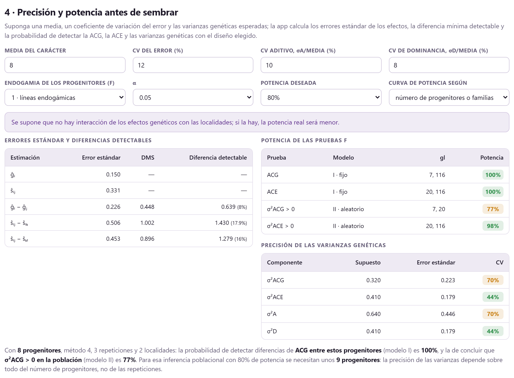
Figura 2.7. La tarjeta 4 con el ejemplo. A la izquierda, los errores estándar y las diferencias detectables; a la derecha, la potencia de cada prueba F y la precisión de las varianzas genéticas, en verde cuando alcanzan la meta.
Efectos. Dos ACG difieren significativamente si su diferencia pasa de 0.448 (la DMS), y una diferencia real de 0.639, el 8 % de la media, se detectaría con 80 % de probabilidad. Para las ACE, las diferencias detectables son del 16 al 18 %.
Pruebas. En el modelo I (estas ocho líneas) la ACG y la ACE se detectan casi con seguridad. En el modelo II (una población de la que las ocho líneas son una muestra), la probabilidad de concluir que σ²ACG > 0 es de 77 %, porque esa prueba tiene solo 7 y 20 grados de libertad.
Varianzas. σ²A se estimaría con un coeficiente de variación del 70 % y σ²D del 44 %: con ocho progenitores, las varianzas genéticas son estimaciones muy imprecisas.
El texto de abajo lo resume y calcula cuántos progenitores harían falta para la inferencia poblacional: unos 9.
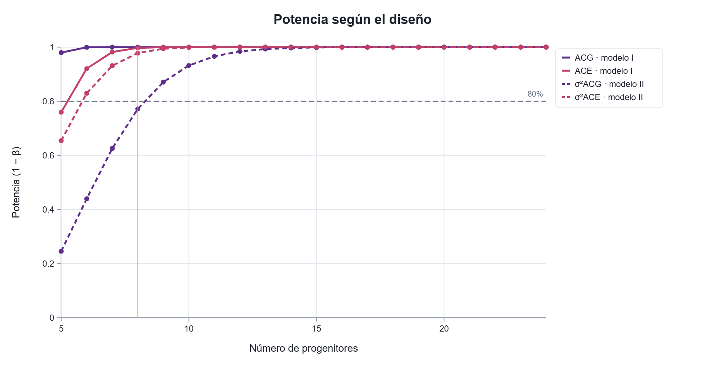
Figura 2.8. Potencia según el número de progenitores, con el mismo número de repeticiones y localidades. Las líneas continuas son el modelo I y las punteadas el modelo II; la línea vertical marca el diseño actual y la horizontal, la potencia deseada.
!Importante · progenitores, no repeticiones
Si en el menú Curva de potencia según eliges el número de repeticiones, verás que pasar de 3 a 8 repeticiones solo sube la potencia para σ²ACG de 77 a 83 %, mientras que un progenitor más la lleva a 87 % y dos más a 93 %. La precisión de las varianzas depende sobre todo del número de progenitores, porque son ellos, no las parcelas, la muestra de la población.
2.7Otros diseños, con sus números
Los valores iniciales de cada diseño bastan para ver sus diferencias. En todos los casos siguientes se usan tres repeticiones, dos localidades y los supuestos iniciales de la tarjeta 4.
Carolinas del Norte: cuál estima mejor la dominancia
Tabla 2.11. Las tres Carolinas del Norte con sus valores iniciales: I y II, tres conjuntos de 4 machos y 4 hembras (por macho en la I); III, 30 plantas F2. Plantas no endogámicas (F = 0).
Diseño
Entradas
Potencia de las pruebas
CV de σ²A
CV de σ²D
Carolina del Norte I
48
machos 58 %; hembras dentro de machos 98 %
79 %
171 %
Carolina del Norte II
48
machos 75 %; hembras 75 %; machos × hembras 58 %
48 %
69 %
Carolina del Norte III
60
plantas F2 99 %; F2 × probadores 100 %
39 %
36 %
Con el mismo número de entradas, la II estima σ²A y σ²D con mucha más precisión que la I, en la que σ²D se obtiene por diferencia y su CV pasa del 170 %. La III, pensada para el grado medio de dominancia, estima las dos varianzas con precisión parecida, y la app lo dice así en su texto. Recuerda que estas varianzas se estiman en un solo ambiente; la app advierte que, si se promedian localidades sin modelar la interacción, σ²A y σ²D quedan infladas por σ²GA.
Línea × probador: los errores estándar exactos
Con 20 líneas, 2 probadores y las líneas y probadores como entradas, hay 40 cruzas y 62 entradas. Los errores estándar de los efectos que usa la app incluyen los factores (l − 1)/l y (t − 1)/t; los convencionales los omiten y sobrestiman la incertidumbre, sobre todo cuando hay pocos probadores.
Tabla 2.12. Errores estándar exactos y convencionales en la línea × probador de 20 × 2.
Estimación
EE exacto
EE convencional
ĝ de una línea
0.270
0.277
ĝ de un probador
0.062
0.088
ŝij
0.270
0.392
ŝij − ŝkj (mismo probador)
0.392
0.554
En el modelo II, en cambio, la potencia para σ²ACG de líneas es de solo 49 %, porque se prueba contra la interacción con 19 grados de libertad. La app lo explica: con dos probadores, la ACG de cada línea se promedia sobre dos cruzas, y más probadores de base genética distinta dan una ACG más general.
Dialelo parcial
Con 10 progenitores y s = 5 se hacen 25 cruzas en lugar de 45. La ACG de cada progenitor se estima con cinco cruzas, y la precisión de una diferencia ĝi − ĝj depende de qué tan lejos están los dos progenitores en el círculo: su error estándar va de 0.256, para vecinos, a 0.324, para los opuestos. La potencia para la ACG en el modelo I es de 100 %, y para σ²ACG en el modelo II, de 67 %.
Generaciones
Tabla 2.13. Error estándar de cada media generacional, con el reparto inicial de plantas y con el del botón Repartir para igualar la precisión (600 plantas por localidad).
Generación
Plantas iniciales
EE
Plantas repartidas
EE
P1, P2, F1
30
0.124
73
0.079
F2
100
0.096
146
0.079
BC1, BC2
100
0.086
118
0.080
Las pruebas de escala comparan combinaciones de medias y ganan precisión cuando todas tienen errores estándar parecidos; por eso, en este diseño, la tarjeta 4 muestra esta tabla en lugar de la potencia. Con seis entradas y tres repeticiones, el error tiene solo 10 grados de libertad por localidad (la app lo marca en ámbar); una cuarta repetición los sube a 15.
2.8De la libreta al Bloque 3
El botón Continuar: Datos → al final del bloque lleva al Bloque 3. Ahí, la tarjeta de carga tiene un mosaico Libreta del Bloque 2 que muestra el resumen del plan actual; en el ejemplo, 2 localidades, 180 parcelas y un dialelo de Griffing. Hay dos maneras de usarlo.
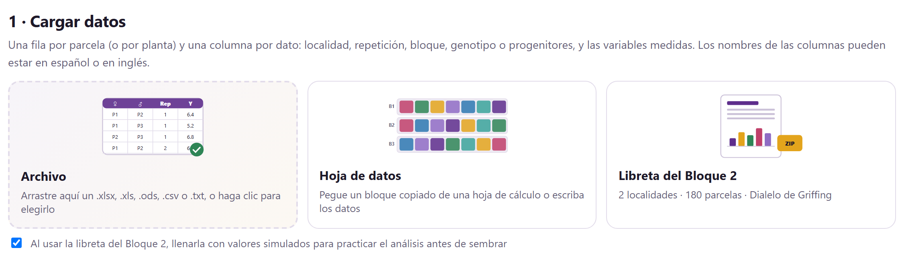
Figura 2.9. La tarjeta 1 · Cargar datos del Bloque 3 con el plan del ejemplo listo para cargarse.
Antes de sembrar, para ensayar. Con la casilla llenarla con valores simulados… activada, la libreta se carga con una columna de rendimiento simulado, con efectos de progenitores, de cruza, de localidad, de repetición y de bloque. Sirve para recorrer todo el análisis, del reconocimiento del diseño al informe, y comprobar que el experimento dará las tablas que necesitas. No son datos reales.
Después de la cosecha. Captura los datos en las columnas vacías de la libreta descargada y carga el archivo en el mosaico Archivo. La línea que describe el diseño le dice al Bloque 3 cuál es el diseño de apareamiento y de campo.
Como el resto de la app, el Bloque 2 no guarda nada al recargar la página: descarga el libro de cálculo, que además conserva la semilla aleatoria para regenerar el mismo croquis.
B3
Capítulo tres · Bloque 3 · Datos
Datos, diseño reconocido y análisis de campo
Todos los análisis genéticos empiezan aquí. El Bloque 3 lee los datos de un archivo, de su propia hoja de cálculo, de la libreta del Bloque 2 o de uno de los 21 ejemplos; averigua qué es cada columna; deduce el diseño de apareamiento y el diseño de campo; revisa la calidad de los datos y analiza el ensayo como corresponde a su diseño. Las medias ajustadas y el error que produce son la materia prima de los bloques 4 a 11.
3.1Qué hace este bloque
3.2Cargar los datos
3.3El papel de cada columna
3.4El diseño reconocido
3.5La calidad de los datos
3.6El análisis de cada ambiente
3.7El análisis combinado
3.8Casos especiales
3.9Descargas y paso a los bloques genéticos
3.1Qué hace este bloque
El Bloque 3 tiene cinco tarjetas que se recorren de arriba abajo. Basta con cargar los datos: las otras cuatro se llenan solas y se recalculan en cuanto corriges algo, sea el papel de una columna, el diseño o una observación que decides excluir.
Figura 3.1. Las cinco tarjetas del Bloque 3. Al final, el botón Continuar lleva al bloque que corresponde al diseño reconocido; los bloques 10 y 11 usan los mismos datos cuando hay pedigrí o marcadores.
A lo largo del capítulo se usa el ejemplo simulado dialelo en látice α en tres localidades: diez progenitores cruzados con el método 2 de Griffing (los 10 progenitores y sus 45 cruzas) más cinco testigos, en total 60 entradas, evaluadas en un látice α con bloques de seis parcelas, dos repeticiones y tres localidades (Chapultepec, Los Altos y Valle Verde). Es una libreta del Bloque 2 llenada con un modelo conocido: σ²ACG = 0.16, σ²ACE = 0.09, σ²bloques = 0.20 y σ²e = 0.36 (t/ha), de modo que se puede comparar lo estimado con lo verdadero. La calidad de los datos se ilustra con el dialelo de Nicotiana rustica de Hayman (1954), y la hoja de datos, con el dialelo de maíz 4 × 4.
3.2Cargar los datos
La tarjeta 1 · Cargar datos ofrece tres mosaicos y, debajo, la galería de ejemplos. La regla es la misma para cualquier fuente: una fila por parcela (o por planta) y una columna por dato. La primera fila con contenido lleva los nombres de las columnas, que pueden estar en español o en inglés.
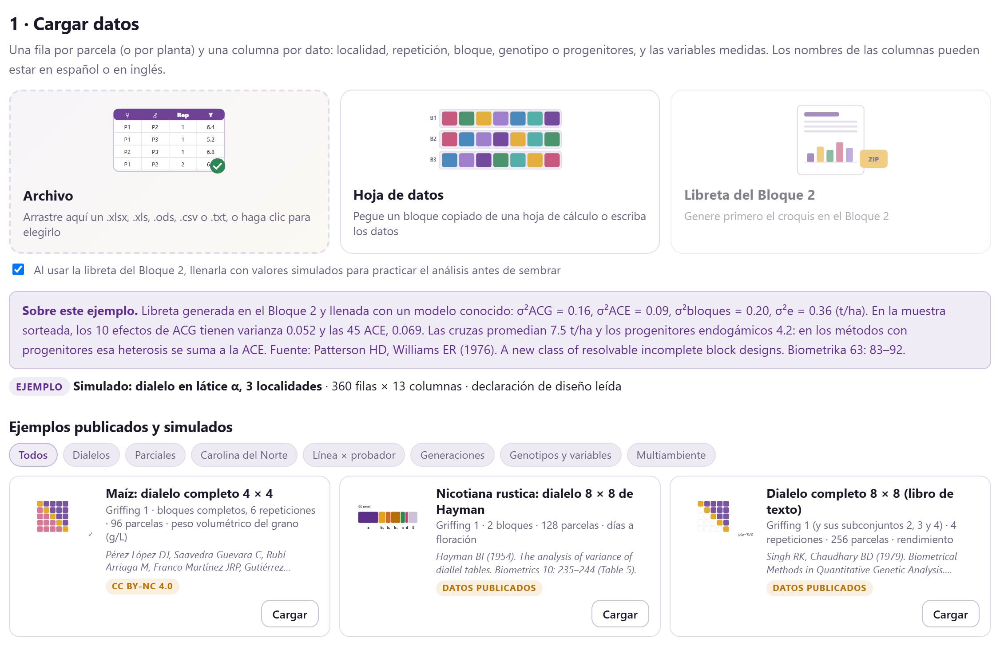
Figura 3.2. La tarjeta 1 después de cargar el ejemplo del látice α. El recuadro Sobre este ejemplo dice de dónde vienen los datos y, en los simulados, con qué valores se generaron; la línea de abajo resume la fuente: 360 filas × 13 columnas y la declaración de diseño leída.
Un archivo
Arrastra el archivo al mosaico Archivo o haz clic en él para elegirlo. Se leen libros .xlsx, .xls, .xlsm y .ods, y textos .csv, .tsv y .txt. En un libro con varias hojas se abre la que tiene más datos y aparece el menú Hoja del libro para cambiar a otra. En un texto, el separador (coma, punto y coma o tabulador) se deduce de las primeras 30 líneas. Las filas vacías se ignoran, lo mismo que los renglones que empiezan con # antes de los encabezados, salvo la línea de declaración del Bloque 2 (más abajo).
iNota · qué cuenta como dato faltante
Una celda vacía es un dato faltante, y también lo son NA, N/A, NaN, null, ., .., -, --, ?, *, missing, perdido, faltante, s/d, sd, nd, n.d. y los errores de hoja de cálculo #N/A, #VALUE! y #DIV/0!, con mayúsculas o sin ellas. Si en una variable aparece otro texto (por ejemplo, 12.5a), también se toma como faltante, y la tarjeta 2 avisa cuántos hubo y en qué fila está el primero.
La hoja de datos
El mosaico Hoja de datos abre una hoja de cálculo dentro de la app, para quien no tiene el archivo a la mano o prefiere pegar los datos. Se pega con Ctrl+V un bloque copiado de cualquier hoja de cálculo (o un texto separado por comas, punto y coma o tabuladores), o se escribe directamente. Las flechas, Tab y Intro mueven la selección; F2 o un doble clic editan la celda; Supr borra; Ctrl+Z deshace. Los botones de arriba insertan o borran filas y columnas, añaden cien filas y ajustan el ancho. La hoja admite hasta 20 000 filas y 5000 columnas.
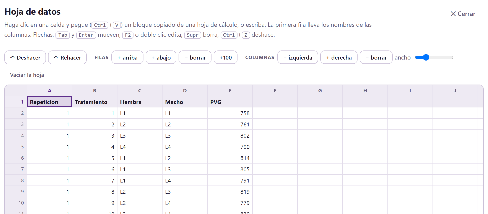
Figura 3.3. La hoja de datos con el dialelo de maíz 4 × 4, abierta con Corregir en la hoja de datos. La primera fila lleva los nombres de las columnas.
Debajo de la hoja, Guardar como descarga su contenido en .xlsx, .ods, .csv (con coma o con punto y coma) o .tsv, con el nombre que escribas en Nombre. El botón Usar estos datos → manda la hoja a las tarjetas 2 a 5 igual que un archivo. Si el navegador no deja pegar en la cuadrícula, abre ¿No funciona pegar en este navegador? y pega en el cuadro de texto que aparece.
!Importante · la hoja se guarda en este navegador
La hoja se guarda en el navegador cada vez que cambia (aparece un momento el aviso guardada en este navegador) y se recupera al abrirla de nuevo, aun después de cerrar la página. Es lo único de los datos que la app conserva: un archivo o un ejemplo cargado se pierde al recargar. Como el guardado es local, la hoja no pasa a otra computadora ni a otro navegador; para eso, descárgala. Cuando los datos vienen de la hoja, la tarjeta 4 marca en ella las filas de los valores atípicos, con el mismo número de renglón.
La libreta del Bloque 2
El mosaico Libreta del Bloque 2 toma el plan y el croquis del Bloque 2 sin descargar nada (sección 2.8). Con la casilla Al usar la libreta del Bloque 2, llenarla con valores simulados… activada llega con un rendimiento simulado para practicar; sin ella, con la columna de rendimiento vacía. Toda libreta del Bloque 2, también la descargada y llenada a mano, empieza con una línea de declaración como esta, la del ejemplo:
El Bloque 3 toma de ella el diseño de apareamiento, el método y el diseño de campo (mating, method y field) sin tener que deducirlos; los demás datos son informativos. Si la hoja de cálculo repartió la línea en varias celdas, se vuelve a unir. Conviene no borrarla.
Los ejemplos
La galería Ejemplos publicados y simulados tiene 21 conjuntos de datos. Los botones de arriba los filtran por familia (Dialelos, Parciales, Carolina del Norte, Línea × probador, Generaciones, Genotipos y variables y Multiambiente). Cada tarjeta muestra el título, el diseño, el tamaño, la primera cita y una etiqueta: CC BY-NC 4.0, datos publicados o simulado. Al cargar uno, el recuadro Sobre este ejemplo da todas sus fuentes y, en los simulados, los valores verdaderos. Los ejemplos se leen exactamente igual que un archivo del usuario; la tabla 3.4 resume lo que el Bloque 3 reconoce en cada uno.
21
Dato clave
conjuntos de datos listos para practicar: 17 publicados y 4 simulados. Los publicados salen de artículos de acceso abierto (CC BY-NC 4.0: uso no comercial y con atribución), de copias abiertas con licencia CC BY 4.0 o de transcripciones distribuidas con licencia GPL; el de las seis generaciones de N. rustica se reconstruyó planta por planta con el número, la media y la varianza publicados de cada generación. Si publicas algo hecho con un ejemplo, cita la obra original.
3.3El papel de cada columna
La tarjeta 2 · Columnas muestra las primeras ocho filas de la tabla con un menú encima de cada columna. La app propone el papel de cada una a partir de su nombre y su contenido; tú corriges el que haga falta y todo se recalcula al momento. Bajo cada nombre se lee si la columna es numérica o de texto, cuántos valores distintos tiene, cuántas celdas vacías y, si la detecta, la coma decimal. Una franja de color agrupa los papeles: azul para el diseño de campo, morado para el genotipo y el pedigrí, verde para las variables respuesta y gris claro para lo que se ignora.
Cómo propone los papeles
Por el nombre. Si el nombre coincide con uno de la tabla 3.1, la columna toma ese papel.
Por el contenido. Si no coincide, una columna con 90 % o más de números es una variable respuesta; las demás se ignoran.
Un papel, una columna. Salvo las variables, la localidad y el año, cada papel lo tiene una sola columna. Si dos lo piden, se queda la primera; en las entradas, la de texto, que suele ser el nombre (en el ejemplo, Genotipo sobre Entrada). La localidad y el año pueden ser varias columnas, que se unen para formar el ambiente.
Sin columna de entradas ni de progenitores, la primera columna de texto ignorada con dos o más valores pasa a nombrar las entradas.
Los ejemplos traen sus papeles fijados. En tus datos, revisa la lista antes de seguir: si falta la columna de entradas, la tarjeta lo dice en rojo y las tarjetas 3 a 5 no aparecen hasta corregirlo.
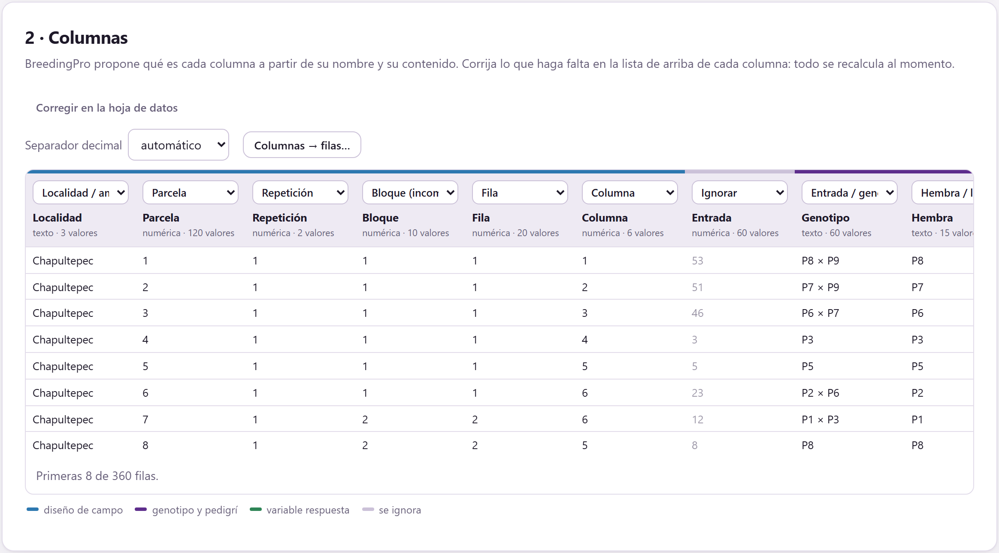
Figura 3.4. La tarjeta 2 con el ejemplo del látice α. Entrada, un número de orden, quedó en Ignorar porque Genotipo ya nombra las entradas; a la derecha, fuera del recorte, siguen Macho, Tipo y las dos variables.
Tabla 3.1. Los 16 papeles y algunos de los nombres que la app reconoce. Los nombres se comparan sin acentos, mayúsculas, espacios ni signos: Rep., REP y Repetición son lo mismo, y No. parcela equivale a NoParcela.
Papel
Nombres reconocidos (ejemplos)
Para qué sirve
Variable respuesta
cualquier columna con 90 % o más de números y sin otro papel
!Importante · un número de identificación se toma por variable
Una columna numérica con un nombre que la app no reconoce (Lote, Surco, Clave) se propone como variable respuesta y se analizaría como si fuera un carácter. Pásala a Ignorar o dale su papel. Lo mismo al revés: una variable con nombre de papel, como una columna Tipo que en realidad mide algo, hay que marcarla como Variable respuesta.
Progenitores, cruzas y tipos de entrada
El pedigrí puede venir de tres maneras, y la app las reconoce todas:
Columnas de hembra y macho. Cada fila dice sus dos progenitores. Si además hay una columna de entradas con números que corresponden uno a uno con el pedigrí, la entrada se nombra por su pedigrí (L1 × L2) y el número se conserva; así lee el Bloque 3 el dialelo de maíz 4 × 4 de la figura 3.3.
La cruza escrita en el nombre. Sin columnas de progenitores, nombres como A × B, A x B, A/B, A*B o códigos compactos como 1x3 se separan en hembra y macho, siempre que al menos la mitad de los nombres sean cruzas y los progenitores se repitan entre ellas; un nombre igual a un progenitor es ese progenitor. La tarjeta avisa: Los nombres de las cruzas se separaron en hembra y macho. Así se lee el dialelo parcial de maíz.
Una columna de generación (o de tipo, o los propios nombres de las entradas) con los códigos P1, P2, F1, F2, F3, BC1 y BC2 (también RC1, RC2, B1, B2), RF1 para la F1 recíproca y BC1S y BC2S para las retrocruzas autofecundadas.
El tipo de cada entrada sale de la columna Tipo de entrada cuando la hay (testigo, check o control; progenitor o parental; recíproca; línea; probador; F1, cruza o híbrido). Si no la hay, se deduce del pedigrí: hembra igual al macho es un progenitor, hembra distinta del macho es una F1, y una entrada sin progenitores en unos datos con cruzas es un testigo.
En las Carolinas del Norte y la línea × probador, hembras y machos son plantas o líneas distintas aunque compartan código (1 × 1 es una cruza, no un progenitor): la app los marca con ♀ y ♂ y lo avisa. Si los códigos se repiten entre conjuntos, se les antepone el conjunto (S1·3).
Separador decimal y reorganizar la tabla
El menú Separador decimal vale automático por omisión: cada columna usa coma decimal si tiene más valores del tipo 12,5 o 1.234,5 que del tipo 12.5. Elige punto (12.5) o coma (12,5) para imponerlo a todas.
Algunos datos llegan a lo ancho: una columna por repetición o por ambiente. El botón Columnas → filas… los pasa a lo largo. Marca las columnas que son repeticiones de una misma variable (las llamadas R1, Rep2, B3, E1 o Loc2 ya vienen marcadas), escribe el nombre del factor nuevo y el de la variable, y pulsa Apilar. Los nombres del tipo E1B2 o Loc1_Rep2 se separan en dos factores.
Genotipo
R1
R2
R3
A
5.2
4.9
5.6
B
6.1
6.4
5.8
…
→
Genotipo
Repetición
Rendimiento
A
1
5.2
A
2
4.9
A
3
5.6
…
Figura 3.5.Columnas → filas… apila las columnas R1 a R3 en una sola variable con el factor nuevo Repetición; la columna Genotipo se repite en cada fila.
Si la tabla es un dialelo en forma de matriz (un progenitor por fila, los mismos progenitores como encabezados de columna y un valor en cada celda), aparece además Tabla dialélica → filas, que la convierte en tres columnas: hembra, macho y valor. Deshacer la reorganización regresa a la tabla original. Por último, Corregir en la hoja de datos abre la tabla cargada en la hoja de datos para arreglar un valor en su origen; después, Usar estos datos → la vuelve a cargar.
3.4El diseño reconocido
La tarjeta 3 · Diseño reconocido dice qué experimento cree la app que tienes. Seis recuadros lo resumen: el diseño de apareamiento con su grado de confianza (alta, media o baja; declarado si vino en la línea de declaración y elegido si lo cambiaste tú), las entradas con sus progenitores y testigos, el diseño de campo, los ambientes, las repeticiones con las parcelas por ambiente y las variables. Debajo, una lista explica por qué se llegó a cada conclusión y señala lo que falta o sobra.
El diseño de apareamiento
La app revisa las reglas de la tabla 3.2 en orden y se queda con la primera que se cumple. En un dialelo, el método depende de si hay progenitores (al menos la mitad) y recíprocas (en al menos la mitad de los pares): con ambos, método 1; solo progenitores, 2; solo recíprocas, 3; ninguno, 4.
Tabla 3.2. Cómo se reconoce el diseño de apareamiento, regla por regla.
#
Si en los datos…
entonces
1
tres o más entradas, y al menos 60 % de ellas, son códigos de generación
Medias generacionales
2
no hay ninguna cruza con sus dos progenitores
Ensayo de genotipos
3
los probadores son P1 y P2 (o P1, P2 y F1) y hay cuatro o más plantas que se cruzan con ellos
Carolina del Norte III (con tres probadores, cruza triple de prueba)
4
no hay conjuntos y los mismos nombres aparecen como hembra y como macho, o hay tres o más progenitores autofecundados
Dialelo: de Griffing si están 90 % o más de los pares; parcial si no
5
cada macho tiene sus propias hembras (anidadas) y cada hembra un solo macho
Carolina del Norte I
6
hay tipos línea o probador, los encabezados dicen línea o probador, o hay hasta cinco machos y al menos el doble de hembras
Línea × probador
7
ninguna de las anteriores
Carolina del Norte II (factorial)
En el dialelo parcial, la app comprueba si cada progenitor entra en el mismo número s de cruzas y en el orden circulante de Kempthorne y Curnow (1961); si es así lo dice, y si no, advierte que el análisis será por mínimos cuadrados. La confianza baja a media cuando faltan entradas del diseño completo, cuando el parcial no es circulante, cuando faltan cruzas del factorial, cuando las hembras de una Carolina del Norte II repiten códigos entre machos (quizá sea una I) o cuando la Carolina del Norte III o la cruza triple tienen menos de 20 plantas.
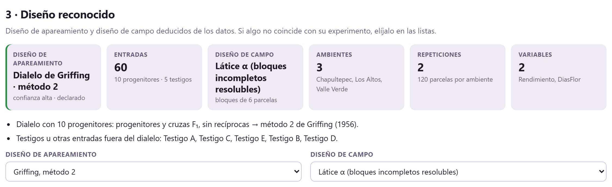
Figura 3.6. El diseño reconocido en el látice α. La línea de declaración fijó el método 2 (confianza alta · declarado); las razones dicen de dónde sale cada conclusión y los dos menús de abajo permiten cambiarla.
El diseño de campo
El diseño de campo se reconoce en cada ambiente por separado, con las reglas de la tabla 3.3. Si los ambientes difieren, el recuadro dice distinto entre ambientes y el análisis combinado usa solo las repeticiones.
Tabla 3.3. Cómo se reconoce el diseño de campo en un ambiente.
Situación
Si además…
entonces
Dos o más repeticiones
unas pocas entradas están en todas y el resto una sola vez (menos de 60 % de las celdas llenas)
Bloques aumentados
hay más bloques que repeticiones y el bloque mayor ocupa menos de 75 % de una repetición
Látice α (bloques incompletos resolubles)
en cualquier otro caso
Bloques completos al azar
Sin repeticiones, con dos o más bloques
todos los bloques tienen todas las entradas
Bloques completos al azar (los bloques hacen de repeticiones)
hay testigos en todos los bloques y el resto aparece una vez
Bloques aumentados
las entradas se repiten
Bloques incompletos
nada se repite
Sin repeticiones: no hay error
Sin repeticiones ni bloques
las entradas se repiten, o hay datos por planta
Completamente al azar
hay un solo valor por entrada
Medias por entrada
El diseño de filas y columnas nunca se elige solo: si las parcelas tienen fila y columna y quieres usarlas en el modelo, elígelo en el menú. La tarjeta también avisa de otros problemas de campo: combinaciones repetición × entrada que faltan (se usan mínimos cuadrados ajustados), una parcela que aparece varias veces sin ser datos por planta (se promedia) y una parcela con dos entradas distintas, que es un error y hay que corregir.
Cambiar lo reconocido
Si algo no coincide con tu experimento, cámbialo en los menús Diseño de apareamiento (automático, Griffing 1 a 4, dialelo parcial, las tres Carolinas del Norte, cruza triple, línea × probador, medias generacionales o ensayo de genotipos) y Diseño de campo (automático o uno de los siete diseños). El cambio se marca como elegido y todo lo que sigue se recalcula. Casos típicos: una Carolina del Norte II que en realidad es una I porque cada macho tiene sus propias hembras, o un ensayo con fila y columna que quieres analizar en filas y columnas.
Cruzas presentes, entradas que faltan y entradas reconocidas
La figura Cruzas presentes en los datos dibuja la tabla del diseño: hembra × macho en los dialelos y la Carolina del Norte II, macho × hembra en la I, planta F2 × probador en la III y la cruza triple, línea × probador en la línea × probador. Cada celda se colorea por el número de parcelas o, con Color según, por la media de la variable; los progenitores llevan un borde, y una cruza que el diseño espera pero no está en los datos se marca con una ×, con la leyenda falta en los datos.
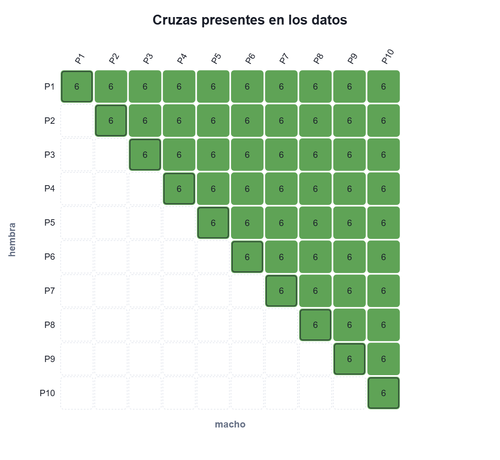
Figura 3.7. Las cruzas presentes en el látice α: el método 2 ocupa la diagonal (progenitores, con borde) y el triángulo de arriba. Cada cruza está en 6 parcelas: 2 repeticiones × 3 localidades.
Si el diseño está incompleto, el recuadro Entradas que faltan en el diseño enumera las cruzas, los progenitores, las recíprocas o las generaciones que faltan. Al final, Entradas reconocidas (plegado) lista cada entrada con su hembra, su macho, su tipo y su número de registros: es la forma más rápida de comprobar que el pedigrí se leyó bien.
Lo que se reconoce en los ejemplos
La tabla 3.4 sirve como comprobación del reconocimiento y como guía para elegir un ejemplo parecido a tus datos.
Tabla 3.4. Lo que el Bloque 3 reconoce en los 21 ejemplos. BCA: bloques completos al azar; CA: completamente al azar. Atípicos: en la primera variable.
Ejemplo
Apareamiento
Campo
Amb.
Atípicos
Sigue
Maíz: dialelo completo 4 × 4
Griffing, método 1
BCA
1
1
4
N. rustica: dialelo 8 × 8 de Hayman
Griffing, método 1
BCA
1
2
4
Dialelo completo 8 × 8 (libro de texto)
Griffing, método 1
BCA
1
0
4
Dialelo con progenitores en dos ambientes
Griffing, método 2
BCA
2
0
4
Maíz: medias de 36 cruzas simples
Griffing, método 4
medias
1
—
4
Cruzas entre variedades de maíz
Griffing, método 2
medias
1
—
4
Maíz: dialelo parcial de 8 líneas
parcial circulante, s = 5
BCA
1
0
6
Carolina del Norte I
Carolina del Norte I
BCA, por planta
1
0
6
Papa: Carolina del Norte II
Carolina del Norte II (♀ y ♂)
BCA
1
0
6
Carolina del Norte III
Carolina del Norte III, confianza media
BCA
1
0
6
Simulado: cruza triple de prueba
cruza triple de prueba
BCA
1
0
6
Línea × probador con progenitores
línea × probador
BCA
1
0
6
Maíz: 13 híbridos y 15 variables
ensayo de genotipos
BCA
1
1
8
Maíz: 13 híbridos en 4 ambientes
ensayo de genotipos
BCA
4
1
9
Avena: 10 genotipos en 14 ambientes
ensayo de genotipos
BCA
14
2
9
Papa: 28 clones en 6 localidades
ensayo de genotipos
BCA
6
2
9
Medias de 17 genotipos en 12 ambientes
ensayo de genotipos
medias
12
—
9
Simulado: líneas endogámicas con pedigrí
ensayo de genotipos
BCA
3
0
9
Simulado: dialelo en látice α
Griffing, método 2 (declarado)
látice α
3
0
4
N. rustica: seis generaciones
medias generacionales
CA, cada planta una unidad
1
0
7
Simulado: medias generacionales por planta
medias generacionales
BCA, por planta
1
0 (1 a revisar)
7
3.5La calidad de los datos
La tarjeta 4 · Calidad de los datos revisa una variable a la vez; el menú Variable de la esquina cambia de una a otra. Tiene cuatro partes: un resumen por ambiente, la distribución, el mapa de campo y la lista de valores atípicos. El resumen da, para cada ambiente (y para todos juntos si hay varios), los registros, los faltantes, los excluidos, la media, la desviación estándar, el coeficiente de variación, el mínimo, el máximo y la asimetría.
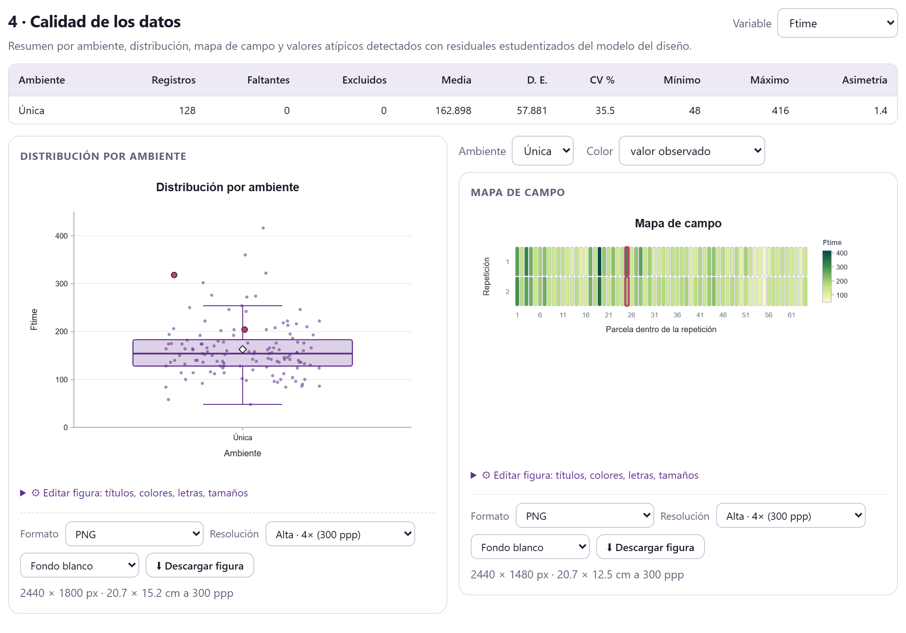
Figura 3.8. La tarjeta 4 con el dialelo de Hayman (días a floración). Los puntos rojos son las dos parcelas de D × A marcadas como atípicas; el recuadro rojo del mapa señala su posición, la misma en las dos repeticiones.
La distribución por ambiente es un diagrama de caja con las observaciones encima (se pueden ocultar) y un rombo en la media; los valores señalados como atípicos se pintan de rojo. El mapa de campo coloca cada parcela en su sitio: por fila y columna si los datos las tienen y, si no, en el orden de las filas dentro de cada repetición. El menú Color cambia entre el valor observado y el residual estandarizado del modelo del diseño; el segundo, en una escala divergente, deja ver manchas del terreno (residuales del mismo signo agrupados) que los bloques no absorbieron. Las parcelas sospechosas llevan un borde rojo en ambos.
Valores atípicos
Cada observación se compara con lo que predice el modelo del diseño (por ejemplo, repetición + entrada en bloques completos), por medio de su residual estudentizado externamente. Dos niveles: atípico, si la prueba de Bonferroni da p < 0.05, y revisar, si |t| ≥ 3.5 sin llegar a ese umbral. La tabla da el ambiente, la entrada, la repetición o el bloque, el valor, el valor ajustado, t, p y las filas del archivo donde está.
!Importante · con dos repeticiones los atípicos salen en pares
En bloques completos con dos repeticiones, los dos residuales de una entrada son iguales y de signo contrario: si una parcela es anormal, su pareja sale marcada con el mismo |t|. Es lo que pasa con D × A (t = −4.68 y +4.68). La estadística no puede decir cuál de las dos está mal; lo dice la libreta de campo.
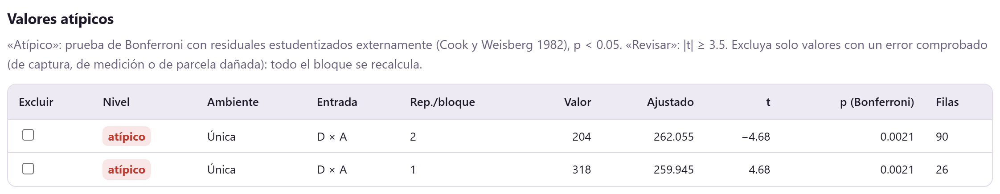
Figura 3.9. Los dos valores atípicos del dialelo de Hayman: la cruza D × A floreció a los 204 días en la repetición 2 y a los 318 en la 1, cuando el modelo esperaba unos 260.
θTeoría en breve · residuales estudentizados y Bonferroni
ti = ei / [s(i) √(1 − hii)] · pBonferroni = mín(1, n · pi)
ei es el residual de la parcela i, hii su palanca y s(i) la desviación estándar del error estimada sin esa parcela, de modo que un valor muy raro no infla la escala con que se le juzga. ti sigue una t con los grados de libertad del error menos uno; como se prueban las n parcelas a la vez, el valor p se multiplica por n (Cook y Weisberg, 1982). Así, en un ensayo de 128 parcelas se esperan, por puro azar, menos de 0.05 falsos atípicos en total, no seis.
La casilla Excluir saca la observación de todos los análisis: los de este bloque, los de los bloques genéticos y el informe, donde las filas excluidas aparecen en gris. Úsala solo cuando hay un error comprobado (de captura, de medición o una parcela dañada), no porque un valor estorbe. Restaurar todas las observaciones excluidas las regresa de una vez, y la nota de abajo dice cuántas hay fuera.
3.6El análisis de cada ambiente
La tarjeta 5 · Análisis del diseño de campo ajusta a cada ambiente el modelo que corresponde a su diseño (tabla 3.5) y entrega las medias ajustadas de las entradas. El menú Ambiente elige el ambiente o, si hay varios, el Análisis combinado (sección 3.7), que es lo que se muestra al cargar los datos.
Con conjuntos (Carolinas del Norte I y II), el modelo añade conjunto y repetición dentro de conjunto. En el látice α y los bloques incompletos, el análisis de varianza es intrabloque (sumas de cuadrados secuenciales, con las entradas ajustadas por bloques), pero las medias se estiman con los bloques como efectos aleatorios por máxima verosimilitud restringida (REML; Patterson y Thompson, 1971), que recupera la información entre bloques. Si el ajuste REML no es posible, las medias quedan intrabloque y la tarjeta lo avisa.
Tabla 3.5. El modelo de cada diseño de campo. y es el valor de la parcela (la media de sus plantas cuando hay datos por planta).
Diseño
Modelo
Medias ajustadas
Completamente al azar
y = μ + entrada + e
mínimos cuadrados
Bloques completos al azar
y = μ + repetición + entrada + e; prueba de no aditividad de Tukey (1949)
mínimos cuadrados
Látice α
y = μ + repetición + bloque(repetición) + entrada + e; entradas ajustadas por bloques
REML, bloques aleatorios
Bloques incompletos
y = μ + bloque + entrada + e
REML, bloques aleatorios
Bloques aumentados
y = μ + bloque + entrada + e, bloques fijos estimados con los testigos (Federer, 1956)
mínimos cuadrados, ajustadas por bloque
Filas y columnas
y = μ + repetición + fila(rep.) + columna(rep.) + entrada + e
REML, filas y columnas aleatorias
Medias por entrada
un valor por entrada; el error viene de fuera (sección 3.8)
las medias observadas
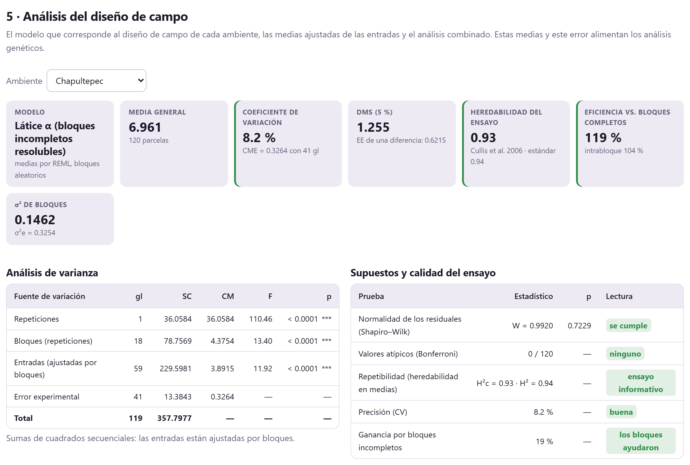
Figura 3.10. La tarjeta 5 en Chapultepec, una de las tres localidades del látice α: recuadros de resumen, análisis de varianza intrabloque y tabla de supuestos y calidad del ensayo.
Los recuadros
El recuadro Modelo dice el diseño y cómo se obtuvieron las medias; Media general, cuántas parcelas (o plantas, o medias) entraron. El Coeficiente de variación trae el cuadrado medio del error (CME) y sus grados de libertad; la DMS (5 %), el error estándar promedio de una diferencia entre dos medias. La Heredabilidad del ensayo da la de Cullis, Smith y Coombes (2006) y la estándar. En los diseños con bloques incompletos aparecen además la Eficiencia vs. bloques completos y la varianza de bloques (o de filas y de columnas) con la del error. El borde de color de algunos recuadros resume la lectura: verde si el valor es bueno, ámbar si es aceptable y rojo si es malo.
En Chapultepec, las 120 parcelas dan una media de 6.961 t/ha, un CV de 8.2 % (CME = 0.3264 con 41 gl) y una DMS de 1.255. Las entradas, ajustadas por bloques, difieren con claridad (F = 11.92 con 59 y 41 gl). La varianza de bloques estimada, 0.1462, y la del error, 0.3254, quedan cerca de los valores con que se simuló (0.20 y 0.36); con solo 20 bloques por localidad, la primera es poco precisa. La eficiencia de 119 % quiere decir que con bloques completos habría hecho falta alrededor de 19 % más repeticiones para comparar las entradas con la misma precisión; sin recuperar la información entre bloques (análisis intrabloque) la ganancia sería de solo 4 %.
θTeoría en breve · la heredabilidad del ensayo y la eficiencia
Las entradas se toman como aleatorias y los testigos como fijos (hacen falta al menos cinco entradas que no sean testigos); r es la media armónica de las repeticiones, vΔ la varianza promedio del error de predicción de una diferencia y EED el error estándar promedio de una diferencia. La de Cullis vale también con datos desbalanceados o bloques incompletos. Ambas son una repetibilidad: dicen qué tan bien el ensayo ordena las entradas. La heredabilidad en sentido estricto, con σ²A, se estima en los bloques 4 a 8.
Supuestos y calidad del ensayo
A la derecha del análisis de varianza, una tabla revisa los supuestos y da una lectura de cada prueba, con las reglas de la tabla 3.6. La prueba de Tukey solo se hace en bloques completos al azar balanceados, y la ganancia por bloques incompletos solo en el látice α y en filas y columnas.
Tabla 3.6. Las pruebas de la tabla de supuestos y cómo se leen.
Prueba
Bien
A revisar
Normalidad de los residuales (Shapiro–Wilk)
p ≥ 0.05: se cumple
p < 0.05: revisar el gráfico Q–Q
Aditividad repetición × entrada (Tukey, 1 gl)
p ≥ 0.05: aditivo
p < 0.05: no aditivo: pruebe una transformación
Valores atípicos (Bonferroni)
ninguno
los hay: revisar en la tarjeta 4
Repetibilidad (H²c)
≥ 0.5: ensayo informativo
0.3 a 0.5: moderada; < 0.3: baja
Precisión (CV)
≤ 12 %: buena
12 a 20 %: aceptable; > 20 %: baja
Ganancia por bloques incompletos
≥ 5 %: los bloques ayudaron
< 5 %: poca ganancia
En Chapultepec todo sale bien: residuales normales (W = 0.9920, p = 0.7229), ningún atípico, H²c = 0.93, CV de 8.2 % y una ganancia de 19 % por los bloques. El dialelo de Hayman es el caso contrario: residuales no normales (p = 0.0011) y no aditividad (p = 0.0006), lo que suele indicar que conviene transformar la variable (por ejemplo, con el logaritmo cuando la varianza crece con la media). Los límites del CV son orientativos: dependen del cultivo y de la variable.
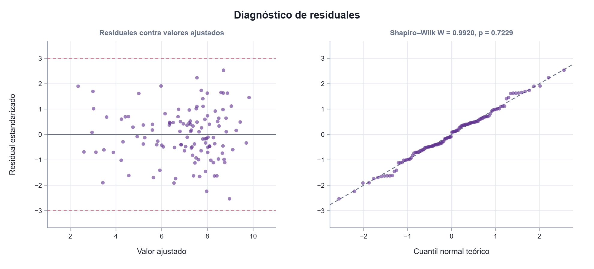
Figura 3.11. El diagnóstico de residuales de Chapultepec. A la izquierda, sin patrón contra los valores ajustados y dentro de ±3; a la derecha, los cuantiles siguen la recta normal.
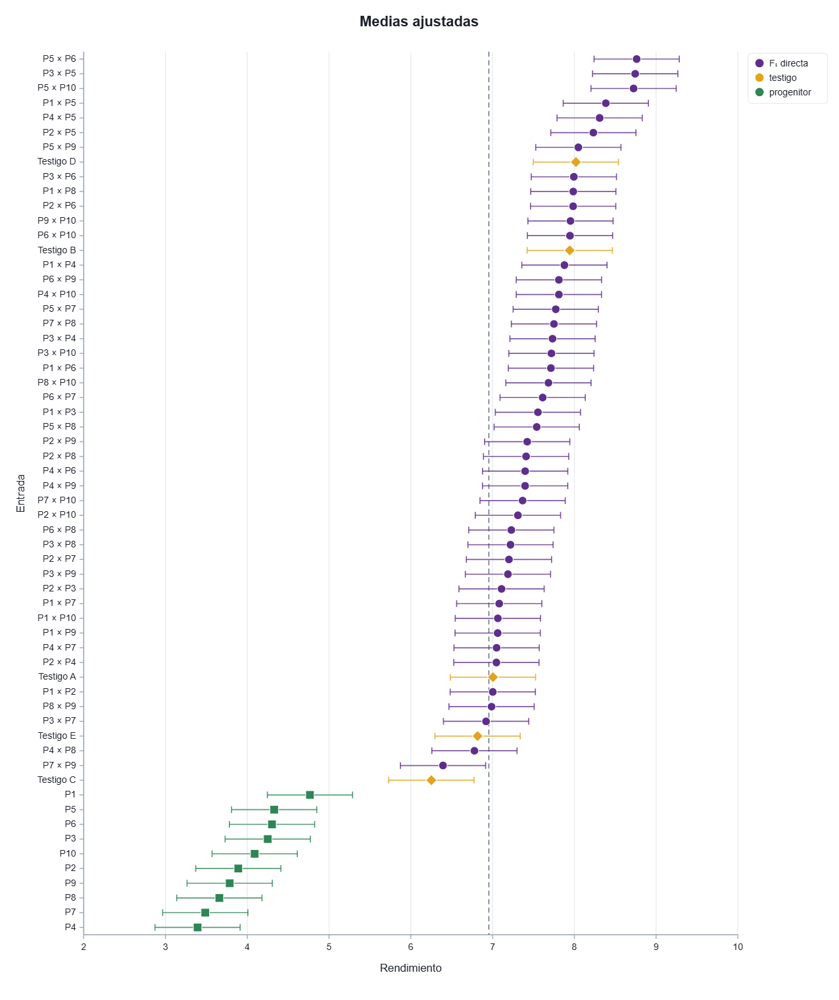
Figura 3.12. Las medias ajustadas del análisis combinado (sección 3.7): las 45 cruzas superan a los diez progenitores y los testigos quedan entre ellas. La línea discontinua es la media general.
Las medias ajustadas
Debajo aparece la tabla de Medias ajustadas, ordenada de mayor a menor, con el lugar, la entrada, su tipo, el número de parcelas, la media y su error estándar. Una daga (†) marca las medias que el diseño no permite estimar porque la entrada no está conectada con las demás. La figura de medias (figura 3.12, del análisis combinado) las muestra con intervalos de confianza de 95 % y colores por tipo; su panel permite ordenarlas por nombre, limitar el número de entradas (60 por omisión) y quitar los intervalos. En pantalla la tabla muestra hasta 300 filas; la descarga las incluye todas.
3.7El análisis combinado
Con dos o más ambientes, el menú Ambiente ofrece el Análisis combinado. Se ajusta en una etapa, con todas las parcelas:
y = μ + ambiente + repetición(ambiente) [+ bloque(repetición)] + entrada + entrada × ambiente + e
El término de bloques entra, como efecto fijo, solo si todos los ambientes son látice α. Los ambientes se prueban contra las repeticiones dentro de ambientes, y las entradas de dos maneras: contra la interacción entrada × ambiente, que es la prueba correcta si los ambientes son una muestra aleatoria de los posibles (columna F), y contra el error combinado, que lo es si los ambientes son fijos (columna F contra el error).
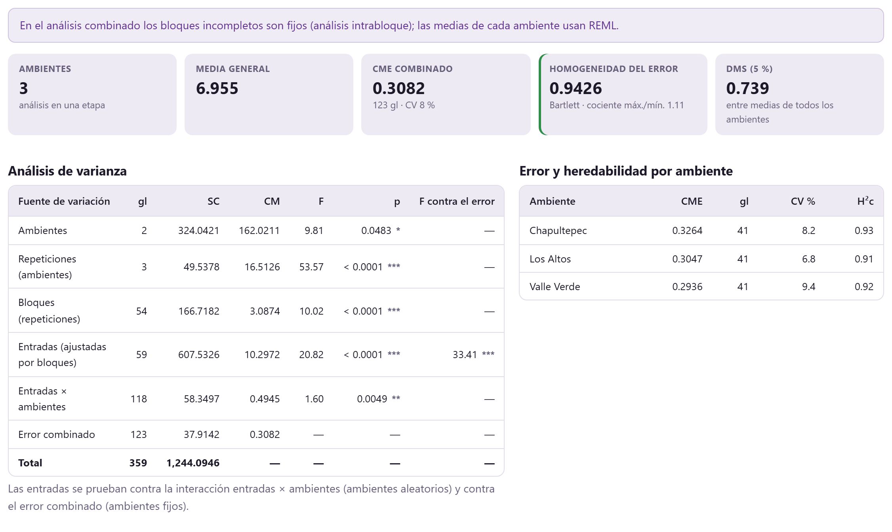
Figura 3.13. El análisis combinado de las tres localidades del látice α. La tabla de la derecha resume el error y la heredabilidad de cada ambiente.
Los recuadros dan el número de ambientes y si el análisis fue en una o en dos etapas, la media general, el CME combinado, la homogeneidad del error con la prueba de Bartlett (1937) y el cociente entre el CME mayor y el menor, y la DMS entre medias de todos los ambientes. En el ejemplo, los errores de las tres localidades son homogéneos (p = 0.9426, cociente 1.11), así que combinarlas no tiene problema. La interacción entrada × ambiente es significativa (F = 1.60, p = 0.0049) pero pequeña frente a las diferencias entre entradas (F = 20.82 contra la interacción): el orden de las cruzas cambia poco de una localidad a otra. La cruza P5 × P6 tiene la media más alta, 8.7622 t/ha (figura 3.12).
!Importante · cuando los errores no son homogéneos
Si la prueba de Bartlett da p < 0.05, la tarjeta avisa que las pruebas F combinadas son aproximadas. Para esos datos conviene un modelo con una varianza del error por ambiente, que está en el Bloque 9 (análisis en dos etapas con REML).
Si el modelo en una etapa tuviera más de 1400 parámetros (muchas entradas en muchos ambientes), el análisis se hace en dos etapas (Möhring y Piepho, 2009): primero las medias ajustadas de cada ambiente y después un análisis de la tabla entrada × ambiente, cuyo error es la varianza promedio de las medias ajustadas, en la escala de parcela. La tarjeta lo dice e indica cuántos parámetros habría tenido el modelo completo. Las entradas que no están en todos los ambientes se omiten en esa segunda etapa; en una etapa, si hay combinaciones entrada × ambiente vacías, las medias generales salen del modelo sin interacción.
3.8Casos especiales
Datos por planta
Cuando varias filas comparten la misma parcela (o hay una columna Planta / individuo), los datos son por planta. Cada parcela se resume con la media de sus plantas y el análisis de varianza se hace con esas medias; aparte se añade la fila Entre plantas dentro de parcelas, en la escala de plantas, con el error de muestreo (Steel, Torrie y Dickey, 1997). La nota bajo la tabla recuerda que las sumas de cuadrados de las parcelas están en la escala de medias (se multiplican por el número de plantas para pasarlas a la de plantas) y prueba el error experimental contra el de muestreo. En el ejemplo de la Carolina del Norte I, con tres plantas por parcela, la fila entre plantas tiene 48 gl y un CM de 0.074; F = 4.33 (p = 0.0002) dice que las parcelas difieren más de lo que explican las plantas: hay un error de parcela genuino.
Plantas sin parcelas
En los experimentos de medias generacionales es común medir plantas sueltas, sin repeticiones, bloques ni parcelas. Entonces cada planta es una unidad experimental y las plantas de cada generación son sus repeticiones: el diseño es completamente al azar y el recuadro de repeticiones da la mediana de plantas por entrada. Con las seis generaciones de N. rustica (160 plantas) resultan un CV de 12 %, un CME de 1.8503 con 154 gl, una DMS de 0.884 y una heredabilidad del ensayo de 0.98.
Medias por entrada y error externo
Con un solo valor por entrada, los datos son medias y el error no se puede estimar. La tarjeta 3 muestra entonces el recuadro Error del experimento original: para cada variable, el cuadrado medio del error, sus grados de libertad, su escala y las repeticiones (en la escala de parcelas, el CM se divide entre las repeticiones). Con él hay errores estándar, DMS y pruebas en los bloques genéticos; sin él, solo medias. Los ejemplos de medias traen su error: 21.05 con 2558 gl en la escala de medias en las 36 cruzas de maíz (DMS = 12.723), y 1.8 con 576 gl en la de parcelas, con cuatro repeticiones, en los 17 genotipos (0.45 para las medias).
Bloques aumentados
En el diseño aumentado, los testigos se repiten en cada bloque y las entradas nuevas aparecen una vez. Los bloques son fijos y se estiman con los testigos; cada entrada nueva se ajusta por el efecto de su bloque (Federer, 1956). Con dos o más testigos, la suma de cuadrados de las entradas se divide en Testigos y Nuevas y nuevas vs. testigos, y la nota da la de bloques eliminando entradas.
Otros casos
Un diseño que los datos no sostienen se sustituye por uno más simple, con aviso: un látice sin bloques incompletos reales pasa a bloques completos, y filas y columnas sin esas columnas, también.
Entradas sin repeticiones y sin testigos repetidos: el diseño es sin repeticiones y no hay error; la app lo marca en rojo.
Sin grados de libertad para el error, o con menos de tres parcelas con dato, el ambiente no se analiza y la tarjeta explica por qué.
3.9Descargas y paso a los bloques genéticos
Al pie de la tarjeta 5 hay tres descargas, que incluyen todas las variables y todos los ambientes, no solo lo que está en pantalla. Cada figura tiene además su propio panel de descarga (sección I.6).
Tabla 3.7. Las descargas del Bloque 3.
Botón
Contenido
Resultados (.xlsx)
Cinco hojas: Medias (por variable y ambiente, y combinadas); ANOVA (todas las fuentes, con gl, SC, CM, F y p); Calidad (diseño, parcelas, media, CV, CME, gl del error, DMS, H² de Cullis y estándar, σ²g, σ² de bloques, p de Shapiro–Wilk y de Tukey, atípicos); Datos (la tabla con la columna Excluido); Diseño (apareamiento, método, progenitores, diseño de campo, ambientes y fuente)
Medias ajustadas (.csv)
Variable, ambiente, entrada, tipo, parcelas, media ajustada y error estándar
Datos depurados (.csv)
La tabla original con una columna Excluido (1 si la observación quedó fuera)
Además, al final de la tarjeta 5, ¿Cómo se analiza cada diseño? resume los métodos de las secciones 3.5 a 3.7 con sus referencias, listos para la sección de materiales y métodos de un artículo; el informe del Bloque 12 los incluye redactados.
El botón Continuar del final cambia según el diseño de apareamiento reconocido (tabla 3.8); en el ejemplo dice Continuar: Griffing →. ← Planear regresa al Bloque 2. Los demás bloques están siempre a un clic en la barra superior.
Tabla 3.8. A dónde lleva el botón Continuar.
Diseño reconocido
Siguiente bloque
Dialelo de Griffing (completo)
4 Dialelos de Griffing (y luego el 5)
Dialelo parcial, Carolinas del Norte, cruza triple, línea × probador
6 Diseños de apareamiento
Medias generacionales
7 Generaciones
Ensayo de genotipos en un ambiente
8 Parámetros genéticos y selección
Ensayo de genotipos en varios ambientes
9 Genotipo × ambiente
Lo que pasa a los bloques siguientes es la tabla con sus papeles, los registros con su pedigrí, el diseño de apareamiento y el de campo, las observaciones excluidas, el error externo y, para cada variable, el análisis de esta tarjeta (medias ajustadas, CME y grados de libertad), que se calcula la primera vez que un bloque lo pide. Cualquier cambio en el Bloque 3 (un papel, el diseño, una exclusión) se refleja en ellos al volver a abrirlos. Como en el resto de la app, los datos cargados y los resultados no se guardan al recargar la página; solo la hoja de datos se conserva en el navegador.
✓Regla práctica · antes de pasar a los bloques genéticos
Si una columna quedó con un papel equivocado o en Ignorar…
entonces corrígela en la tarjeta 2: todo lo demás depende de ella.
Si el diseño de apareamiento tiene confianza media o baja…
entonces lee las razones y revisa Entradas reconocidas y la figura de cruzas presentes.
Si hay valores atípicos…
entonces compáralos con la libreta de campo y excluye solo los errores comprobados.
Si la normalidad o la aditividad fallan…
entonces considera transformar la variable antes de cargarla de nuevo.
Los bloques genéticos usan exactamente lo que queda en el Bloque 3: sus datos, su diseño, las observaciones excluidas y el error externo.
B4
Capítulo cuatro · Bloque 4 · Griffing
Dialelos de Griffing
El dialelo es el diseño clásico para elegir progenitores: cruza un grupo de líneas entre sí y separa lo que cada una transmite a todas sus cruzas (la aptitud combinatoria general) de lo que solo aparece en combinaciones particulares (la aptitud combinatoria específica). El Bloque 4 hace el análisis de Griffing (1956) con sus cuatro métodos y sus dos modelos, en uno o en varios ambientes, y ayuda a elegir los mejores progenitores y cruzas.
4.1Los cuatro métodos y los dos modelos
4.2Datos y modelo
4.3El análisis de varianza del dialelo
4.4Los efectos
4.5Componentes de varianza y parámetros genéticos
4.6Mejores progenitores y cruzas
4.7Los cuatro métodos sobre los mismos datos
4.8Varios ambientes
4.9Casos especiales, descargas y paso al Bloque 5
4.1Los cuatro métodos y los dos modelos
Griffing (1956) distinguió cuatro formas de hacer un dialelo con p progenitores, según se evalúen o no los propios progenitores y las cruzas recíprocas, y dos formas de interpretar los resultados, según los progenitores interesen por sí mismos o representen a una población.
Figura 4.1. Las celdas del dialelo que usa cada método, con cinco progenitores. Las filas son la hembra y las columnas el macho. El Bloque 4 reconoce el método en los datos y permite analizar los mismos datos con cualquiera de los métodos que contienen.
El modelo I trata a los progenitores como fijos: son los que interesan y lo que se busca son sus efectos (cuál transmite más, qué cruza sobresale). El modelo II los trata como una muestra aleatoria de una población: lo que interesa son las varianzas de esa población, de las que salen la varianza aditiva, la de dominancia y las heredabilidades. En los dos modelos se ajusta la misma ecuación; cambian las pruebas F y la lectura.
La media de la cruza i × j es la media general más la aptitud combinatoria general (ACG) de cada progenitor, gi y gj, más la aptitud combinatoria específica (ACE) de la pareja, sij, más el efecto recíproco rij, que solo existe en los métodos 1 y 3. El recíproco se divide en una parte materna, mi − mj, que depende solo de quién fue la hembra, y una no materna, nij (Cockerham, 1963). Las restricciones de Griffing (Σgi = 0 y la suma de las ACE de cada progenitor igual a cero) hacen que los efectos se lean como desviaciones del promedio del grupo.
A lo largo del capítulo se usa el dialelo completo 4 × 4 de maíz de Pérez López y colaboradores (2020): cuatro líneas, L1 a L4, con sus 12 cruzas directas y recíprocas y las propias líneas, en bloques completos con seis repeticiones; la variable es el peso volumétrico del grano (PVG, en g/L). Es un método 1, con todo lo que el bloque puede mostrar, y sus resultados publicados permiten comprobar la app. La sección 4.8 usa el látice α simulado del capítulo 4 para el análisis en varios ambientes.
4.2Datos y modelo
El Bloque 4 no lee archivos: toma las medias ajustadas de cada entrada y el error de cada ambiente del Bloque 3, con las observaciones que hayas excluido allí. Si los datos cargados no son un dialelo completo de Griffing, la tarjeta dice en qué bloque se analizan (los dialelos parciales, las Carolinas del Norte y la línea × probador en el 6; las generaciones en el 7; los ensayos de genotipos en el 8 o el 9). La tarjeta 1 · Datos y modelo resume los datos en una línea y ofrece los controles de la tabla 4.1.
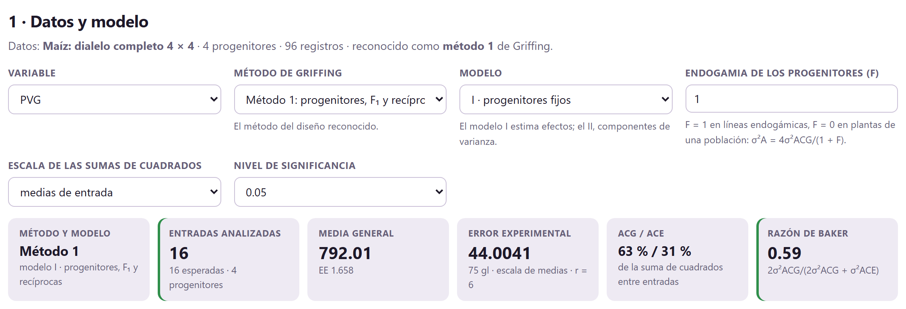
Figura 4.2. La tarjeta 1 con el maíz 4 × 4. Los recuadros resumen el método, las entradas, la media general, el error, el reparto de la suma de cuadrados entre ACG y ACE y la razón de Baker.
Tabla 4.1. Los controles de la tarjeta 1.
Control
Opciones
Para qué sirve
Variable
las del Bloque 3
Todo el bloque se recalcula para la variable elegida
Método de Griffing
los que los datos contienen
Analizar un subconjunto de las entradas, como si el experimento se hubiera diseñado con ese método; el reconocido va marcado
Al quitar las recíprocas
cruza directa · promedio de las dos orientaciones
Solo en los métodos 2 y 4 con datos que traen recíprocas: qué valor representa a cada pareja
Modelo
I · progenitores fijos · II · progenitores aleatorios
Qué pruebas F se muestran primero y cómo se leen los componentes
Ambientes
fijos · aleatorios
Con varios ambientes: contra qué se prueba cada efecto (sección 4.8)
Endogamia de los progenitores (F)
de 0 a 1; 1 por omisión
Convierte σ²ACG y σ²ACE en σ²A y σ²D: 1 para líneas endogámicas, 0 para plantas de una población
Escala de las sumas de cuadrados
medias de entrada · parcelas
Solo cambia la presentación; las pruebas F son las mismas
Nivel de significancia
0.05 · 0.01 · 0.10
Para las diferencias mínimas significativas y las lecturas
Con el maíz, el bloque analiza las 16 entradas esperadas del método 1, con una media general de 792.01 g/L y un error de 44.0041 (el cuadrado medio del error del Bloque 3 dividido entre las seis repeticiones) con 75 grados de libertad. La ACG reúne 63 % de la suma de cuadrados entre entradas y la ACE, 31 %; el resto son efectos recíprocos. El recuadro de las entradas se pone en ámbar si falta alguna del diseño completo.
iNota · un método distinto del diseño
Con los datos de un método 1 se pueden pedir los métodos 2, 3 o 4: el bloque toma solo las entradas que ese método usa (sin recíprocas, sin progenitores o sin ninguna de las dos), repite el análisis de campo del Bloque 3 con ellas y estima su propio error. Así se obtiene lo que habría dado un experimento diseñado con ese método. La sección 4.7 hace la comparación de los cuatro de una vez.
4.3El análisis de varianza del dialelo
La tarjeta 2 · Análisis de varianza del dialelo reparte la variación entre entradas en ACG, ACE y efectos recíprocos, y estos en maternos y no maternos. Tiene dos columnas F: la del modelo elegido, con su valor p y su denominador, y la del otro modelo, a la derecha, para comparar sin cambiar de modelo.
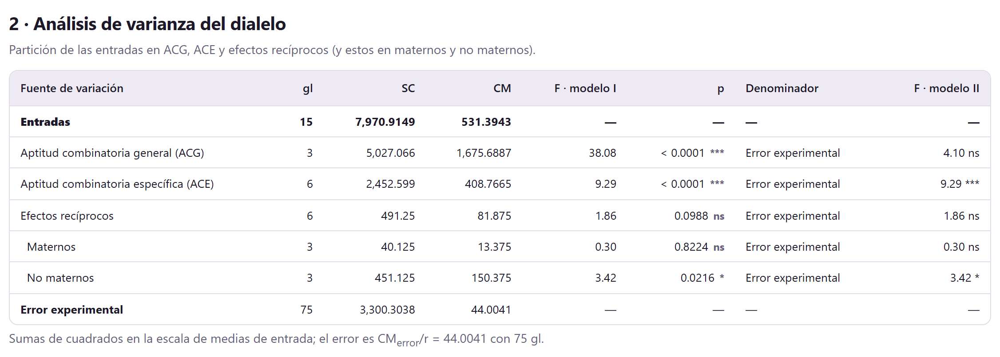
Figura 4.3. El análisis de varianza del maíz 4 × 4. La ACG y la ACE son muy significativas; los recíprocos no lo son en conjunto, pero su parte no materna sí (p = 0.0216).
Tabla 4.2. Contra qué se prueba cada fuente, según el modelo, en un ambiente.
Fuente
Modelo I (progenitores fijos)
Modelo II (progenitores aleatorios)
ACG
error experimental
ACE (aproximada en el método 1)
ACE
error experimental
error experimental
Recíprocos, maternos y no maternos
error experimental
error experimental
En el maíz, la ACG tiene F = 38.08 contra el error (modelo I), pero solo F = 4.10 contra la ACE (modelo II), que no es significativa con 3 y 6 grados de libertad: con cuatro progenitores hay muy poca información para hablar de la varianza de una población. Es la diferencia de fondo entre los modelos. Con el I, la pregunta es si estas cuatro líneas difieren (sí, claramente); con el II, si la población de la que salieron tiene varianza aditiva, y cuatro líneas no bastan para afirmarlo.
✓Comprobado · lo publicado
Con Escala de las sumas de cuadrados en parcelas, las sumas de cuadrados son las del artículo de origen: 30 162.40 para la ACG, 14 715.59 para la ACE, 2947.50 para los recíprocos, 240.75 para los maternos y 2706.75 para los no maternos, con F = 38.08, 9.29, 1.86, 0.30 y 3.42. Los efectos de ACG y sus errores estándar (2.0311) también coinciden hasta el último decimal.
Con entradas faltantes, las sumas de cuadrados son secuenciales, en el orden ACG, ACE y recíprocos, y la nota bajo la tabla lo avisa. Con varios ambientes, la tabla añade los ambientes y las interacciones de cada fuente con ellos, y el recuadro plegado Análisis dentro de cada ambiente repite el análisis ambiente por ambiente (sección 4.8).
4.4Los efectos
La tarjeta 3 · Efectos presenta las estimaciones con su error estándar y su prueba t. A la izquierda, los efectos de ACG ordenados de mayor a menor; a la derecha, los errores estándar y las diferencias mínimas significativas de cada tipo de comparación, porque no todas las diferencias tienen la misma precisión: comparar dos ACE que comparten un progenitor no es lo mismo que comparar dos sin progenitor común.
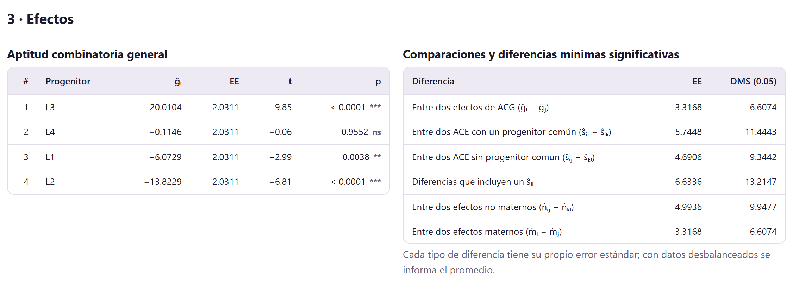
Figura 4.4. Los efectos de ACG del maíz y las diferencias mínimas significativas. L3 transmite a sus cruzas 20 g/L más que el promedio; L2, 13.8 menos. Dos efectos de ACG difieren si se separan más de 6.61 g/L.
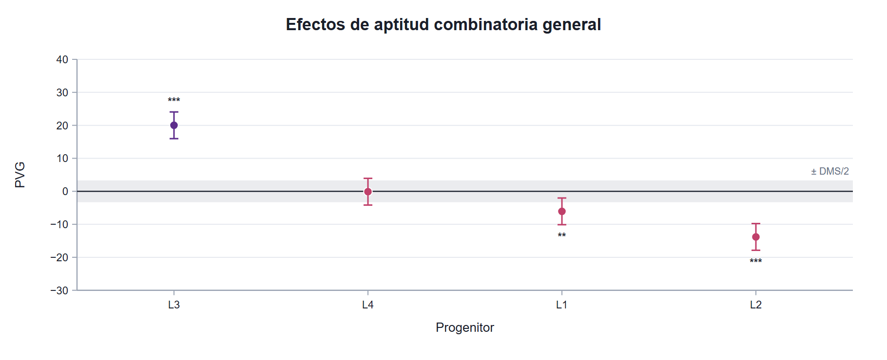
Figura 4.5. La figura de los efectos de ACG, con intervalos de confianza de 95 %, asteriscos de significancia y la banda gris de ± DMS/2 alrededor de cero. Los efectos positivos van en morado y los negativos en rosa; en el editor se pueden cambiar a barras, ordenar por nombre y quitar la banda o los intervalos.
La aptitud combinatoria específica se muestra como una matriz de colores: arriba de la diagonal, la ACE de cada cruza; en la diagonal, la de cada progenitor (ŝii, en los métodos 1 y 2); abajo, cuando existen, los efectos recíprocos. Rojo es positivo y azul negativo, con los asteriscos de significancia junto al valor. La tabla completa de ACE, con error estándar y p, está plegada bajo la figura.
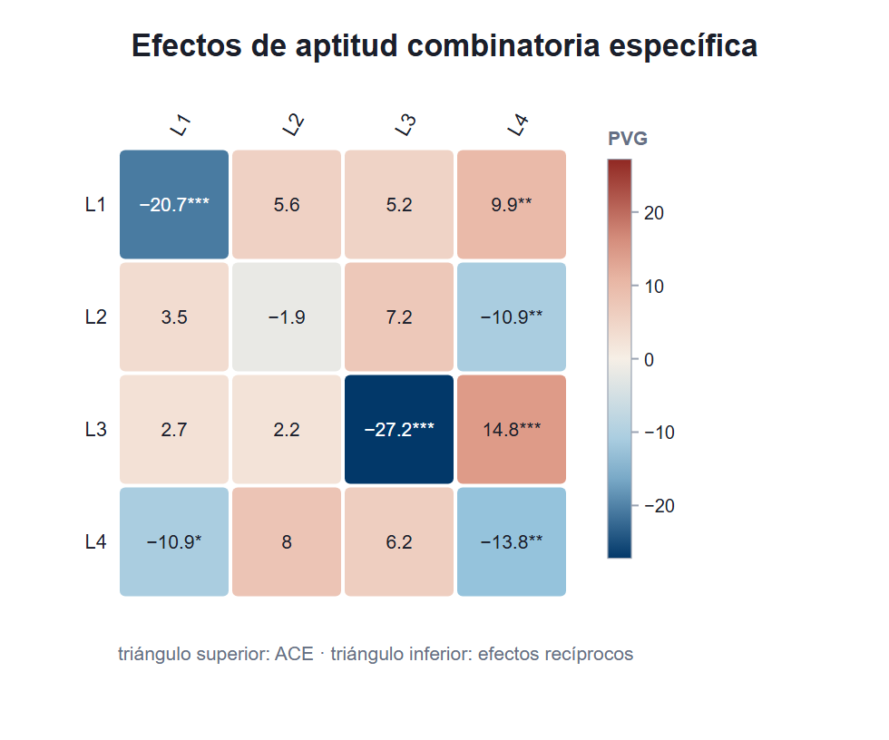
Figura 4.6. ACE (arriba) y efectos recíprocos (abajo) del maíz. La mejor combinación específica es L3 × L4 (ŝ = 14.8); los valores de la diagonal, todos negativos, dicen que cada línea rinde menos como progenitor de lo que predice su ACG.
Con recíprocas (métodos 1 y 3) aparece además el recuadro de efectos recíprocos, maternos y no maternos: a la izquierda el efecto materno de cada progenitor, mi; a la derecha, para cada pareja, el recíproco rij y su parte no materna nij, cada uno con su prueba.
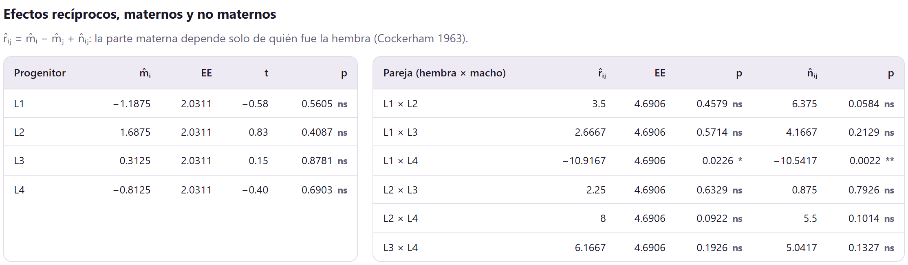
Figura 4.7. Efectos maternos y recíprocos del maíz. Ningún progenitor tiene efecto materno; la única diferencia entre recíprocas está en la pareja L1 × L4 (r = −10.92, p = 0.0226), y es no materna.
✓Regla de lectura · qué efecto sirve para qué
ACG alta y significativa (ĝi)
El progenitor transmite su valor a todas sus cruzas: sirve para formar poblaciones y sintéticos y para elegir progenitores de un programa.
ACE alta y significativa (ŝij)
La pareja rinde más de lo que predicen sus ACG: sirve para híbridos de esa combinación, no para elegir progenitores.
Efecto materno (mi)
Importa quién es la hembra: el progenitor debe usarse en la dirección favorable (citoplasma, endospermo, tamaño de semilla).
Recíproco no materno (nij)
La dirección importa solo en esa pareja; conviene confirmarlo antes de sacar conclusiones.
4.5Componentes de varianza y parámetros genéticos
La tarjeta 4 · Componentes de varianza y parámetros genéticos estima las varianzas del modelo II con los cuadrados medios esperados de Griffing (estimadores de momentos), con su error estándar y su porcentaje de la varianza genética. A la derecha las convierte en parámetros genéticos, y debajo los resume en cinco recuadros y una figura de barras con intervalos.
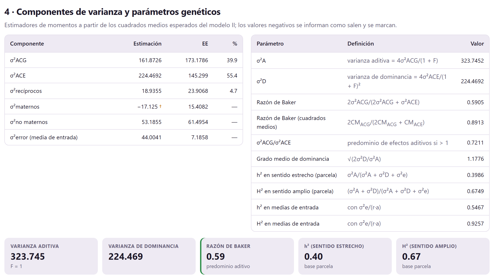
Figura 4.8. Los componentes y parámetros del maíz. σ²maternos sale negativa y lleva una daga: se informa tal como resulta.
θTeoría en breve · de los componentes a los parámetros
Las conversiones suponen que no hay epistasis, que los genes están en equilibrio de ligamiento y que los progenitores tienen la endogamia F indicada (Griffing, 1956; Wright, 1985). La razón de Baker (1978) va de 0 a 1: cerca de 1, la ACG predice bien las cruzas y domina la acción aditiva. Las heredabilidades se dan en base de parcela y en base de medias de entrada (con σ²e dividida entre las repeticiones y los ambientes). Los errores estándar de los componentes salen de la varianza de los cuadrados medios, 2CM²/gl.
En el maíz, σ²A = 323.75 y σ²D = 224.47; la razón de Baker es 0.59, con predominio aditivo, y el grado medio de dominancia, 1.18. La heredabilidad en sentido estrecho es 0.40 por parcela y 0.55 en medias de entrada. Pero los errores estándar dicen cuánto confiar en esos números: σ²ACG = 161.87 ± 173.18 no es distinta de cero. Con cuatro progenitores las varianzas son poco precisas, y los recuadros de mensajes lo recuerdan.
!Importante · lo que dicen los avisos de la tarjeta
Componentes negativos: son estimaciones de momentos y se informan como salen, marcadas con †. Indican un componente cercano a cero o un modelo que no describe bien los datos. Si σ²ACG o σ²ACE son negativas, las razones y las heredabilidades no se calculan.
Modelo I: los progenitores se eligieron a propósito, así que σ²ACG y σ²ACE describen solo a este grupo. Leerlas como σ²A y σ²D de una población exige que los progenitores sean una muestra aleatoria de ella.
Métodos 1 y 2: con los progenitores incluidos, los componentes describen la población descendiente; para la población ancestral de la que se tomaron los progenitores conviene usar los métodos 3 o 4 (Kuehl y colaboradores, 1968; Wright, 1985).
4.6Mejores progenitores y cruzas
La tarjeta 5 · Mejores progenitores y cruzas ordena progenitores y cruzas según lo que interese: el menú Interesa elige el valor más alto (rendimiento, peso del grano) o el valor más bajo (días a floración, altura, incidencia de una enfermedad), y Mostrar limita la tabla de cruzas a 10, 20 o 50 filas, o todas.
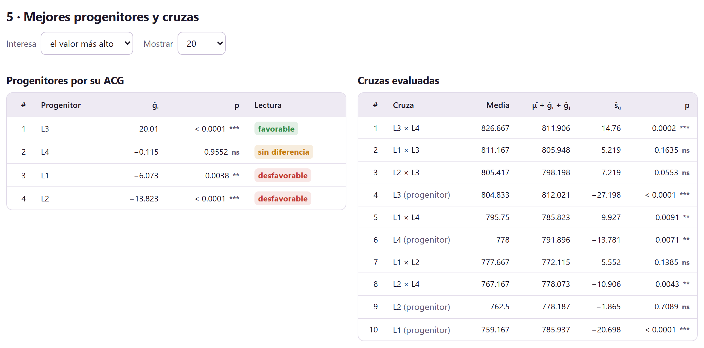
Figura 4.9. Los progenitores del maíz por su ACG, con una lectura en palabras, y las cruzas evaluadas con su media, la predicción por la ACG (μ + ĝi + ĝj) y su ACE. Los progenitores aparecen entre las cruzas con su ŝii.
La columna Lectura marca cada progenitor como favorable, desfavorable o sin diferencia, según el signo de su ACG y su significancia en la dirección buscada. En la tabla de cruzas, la diferencia entre la media observada y la predicha por las ACG es la ACE: L3 × L4 promedia 826.67 g/L, 14.76 más de lo que predicen L3 y L4.
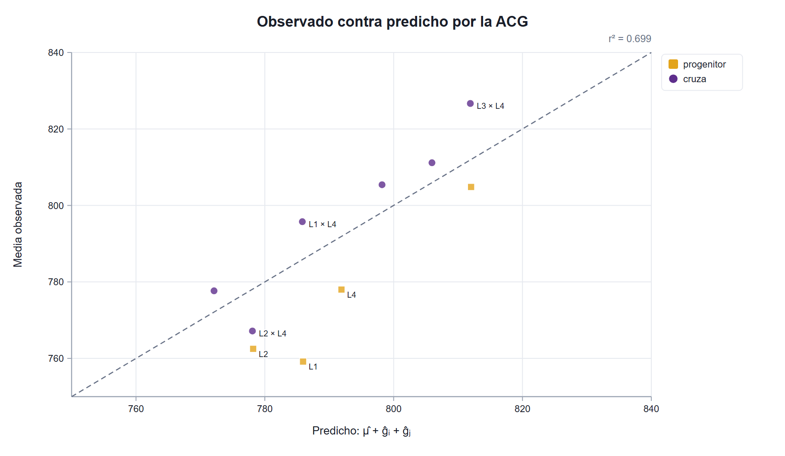
Figura 4.10. Media observada contra la predicha por la ACG. Los puntos sobre la diagonal tienen ACE positiva; los progenitores (cuadros), todos debajo, rinden menos que lo que predicen sus ACG. En el maíz, la ACG explica 70 % de la variación entre entradas (r² = 0.699).
Al final de la tarjeta, una lectura resume los resultados en palabras. Con el maíz dice que el progenitor con mejor ACG es L3, que las cruzas con el valor más alto son L3 × L4, L1 × L3 y L2 × L3, que las combinaciones específicas destacadas son L3 × L4 y L1 × L4 (interesan para híbridos, no para elegir progenitores) y que hay un efecto recíproco significativo, así que conviene cuidar qué progenitor se usa como hembra.
Si faltan cruzas del diseño, aparece además la tabla Cruzas no evaluadas: predicción con la ACG, con μ + ĝi + ĝj y su error estándar para cada cruza que no se hizo. Es el valor esperado promedio de la combinación, sin su ACE, que no se puede conocer sin evaluarla.
4.7Los cuatro métodos sobre los mismos datos
La tarjeta 6 · Los cuatro métodos sobre los mismos datos analiza los datos con cada método que contienen. Cada método usa su subconjunto de entradas y estima su propio error, como si el experimento se hubiera diseñado así. La tabla da el número de entradas, el error, las sumas de cuadrados de ACG, ACE y recíprocos, los componentes, la razón de Baker y qué estima cada método; la figura de debajo compara las sumas de cuadrados o los componentes.
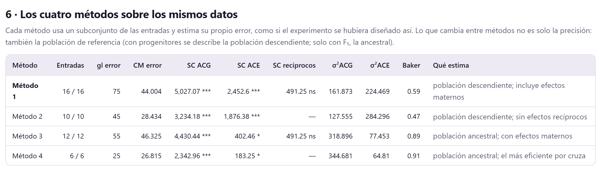
Figura 4.11. Los cuatro métodos con los datos del maíz. Sin los progenitores (métodos 3 y 4), σ²ACE baja de 224–284 a 65–77 y la razón de Baker sube de 0.47–0.59 a 0.89–0.91.
La comparación enseña algo que un solo análisis esconde. En los métodos 1 y 2, los progenitores entran al análisis con ACE propias (ŝii) muy negativas: las líneas rinden mucho menos que sus cruzas (depresión endogámica o, visto desde las cruzas, heterosis), y el modelo de Griffing carga esa diferencia en la ACE. Por eso σ²ACE resulta mayor y la razón de Baker menor. Entre las cruzas solas (métodos 3 y 4), la ACG explica casi todo. Ninguno de los resultados está mal: describen poblaciones distintas, la descendiente con progenitores y la ancestral sin ellos.
4
Dato clave · los cuatro métodos, comprobados
Con el dialelo 8 × 8 del libro de Singh y Chaudhary (1979), el Bloque 4 reproduce exactamente, en los cuatro métodos, las sumas de cuadrados, los errores, los componentes del modelo II y los ocho efectos de ACG de una implementación independiente. Esos datos dan σ²ACG negativa en los cuatro métodos, el caso típico en que las razones no se calculan.
4.8Varios ambientes
Con datos de varios ambientes, el Bloque 4 hace un análisis en dos etapas: toma las medias ajustadas de cada ambiente del Bloque 3 y analiza la tabla entradas × ambientes con el error combinado. La tabla de análisis de varianza añade los ambientes y la interacción de cada fuente con ellos (ACG × ambientes, ACE × ambientes y, en los métodos 1 y 3, recíprocos × ambientes). El control Ambientes decide contra qué se prueban los efectos: con ambientes fijos, contra el error; con ambientes aleatorios, cada efecto contra su interacción con los ambientes. En el modelo II con varios ambientes, la ACG se prueba con una cuasi-F y grados de libertad de Satterthwaite (Singh, 1973).
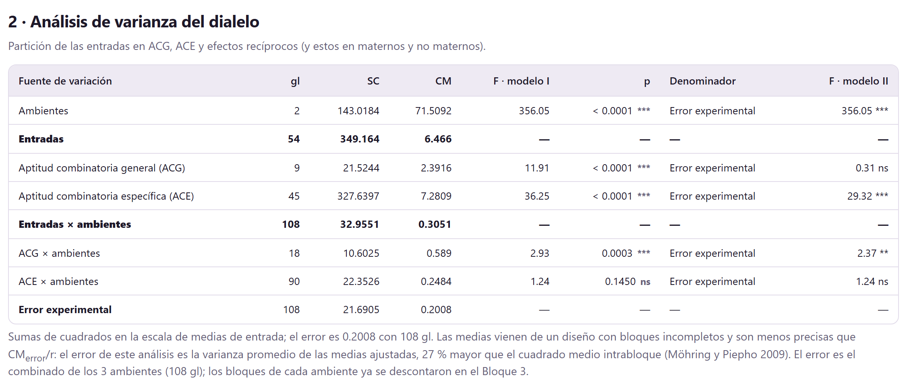
Figura 4.12. El látice α simulado (método 2) en tres localidades. La ACG cambia entre localidades (ACG × ambientes, p = 0.0003); la ACE, no (p = 0.145). La nota explica el error de la segunda etapa.
iNota · el error cuando hay bloques incompletos
Las medias ajustadas de un látice α son menos precisas que CMerror/r, así que el error de la segunda etapa es la varianza promedio de las medias ajustadas, en la escala de parcela (Möhring y Piepho, 2009): en el ejemplo, 0.2008 en lugar de 0.1583. Con bloques completos balanceados son iguales.
La figura ACG en cada ambiente muestra, para cada progenitor, su efecto en cada localidad. Líneas paralelas indican ACG estable; líneas que se cruzan, progenitores cuyo valor depende del ambiente. En el ejemplo, P5 es el mejor en Los Altos y en Valle Verde y el segundo en Chapultepec, mientras que P9 pasa de 0.15 en Los Altos a −0.55 en Valle Verde.
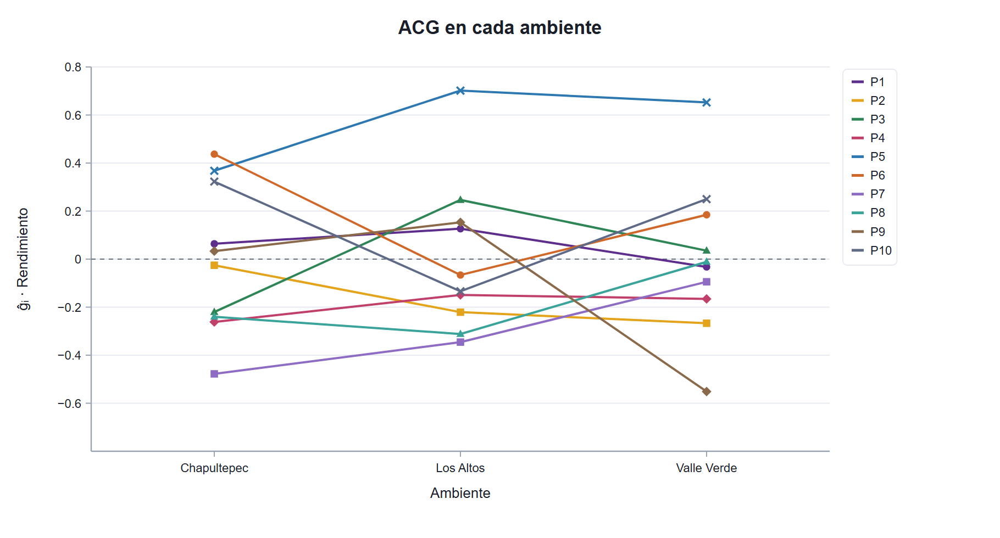
Figura 4.13. La ACG de los diez progenitores en cada localidad del látice α simulado.
Como los datos son simulados, el bloque compara solo las estimaciones con la verdad: bajo la tabla de ACG, una nota da la correlación entre los ĝi y los efectos verdaderos (0.863). Con el método 2, σ²ACG sale negativa (−0.145) y σ²ACE muy grande (2.34): las cruzas promedian 7.5 t/ha y los progenitores endogámicos 4.2, y esa heterosis se suma a la ACE, como en la sección 4.7. Con el método 4, solo con las cruzas, los componentes quedan cerca de lo simulado (tabla 4.3).
Tabla 4.3. Componentes del látice α simulado con el método 4 y valores con que se generaron los datos. σ²ACG se compara con la varianza de los diez efectos sorteados, no con la del modelo (0.16).
Componente
Estimación ± EE
Verdadero
σ²ACG
0.080 ± 0.051
0.052
σ²ACE
0.037 ± 0.032
0.069
σ²ACG × ambiente
0.037 ± 0.024
0.029
σ²ACE × ambiente
0.063 ± 0.053
0
Con diez progenitores, las varianzas de ACG y ACE se estiman con pocos grados de libertad y sus errores estándar son del mismo orden que las propias estimaciones; es la limitación de cualquier dialelo pequeño, no del programa.
4.9Casos especiales, descargas y paso al Bloque 5
Medias con error externo
Si el Bloque 3 recibió medias por entrada con el error del experimento original (sección 3.8), el Bloque 4 analiza esas medias con ese error. Es el caso del ejemplo de Griffing (1956), 36 cruzas simples de maíz de nueve líneas (método 4) con un error de 21.05 con 2558 grados de libertad en la escala de medias: la ACG tiene F = 110.49 y la ACE, 16.13; σ²ACG = 283.76 y σ²ACE = 318.39, con una razón de Baker de 0.64.
Diseños incompletos o desbalanceados
El bloque estima los efectos por mínimos cuadrados ponderados por el número de parcelas, con las restricciones de Griffing impuestas exactamente. Con datos completos y balanceados reproduce las fórmulas de Griffing; con cruzas faltantes o repeticiones desiguales sigue siendo válido y los errores estándar se ajustan a los datos que hay. Como el modelo de Griffing tiene tantos parámetros como celdas, algo tiene que suponerse para lo que falta, y los avisos de la tarjeta 1 lo dicen: se supone ACE = 0 en las cruzas que no se hicieron, y efecto no materno = 0 en las parejas evaluadas en un solo sentido. Con entradas de distinto número de parcelas, los componentes usan la media armónica de las repeticiones.
Descargas y siguiente bloque
Al final de la tarjeta 6, Supuestos, fórmulas y referencias resume el modelo, las restricciones, la estimación y las referencias, para la sección de métodos de un artículo. Las descargas son dos: Resultados (.xlsx), con seis hojas (análisis de varianza, efectos, componentes, parámetros, cruzas con su media, predicción y ACE, y comparación de métodos), y Efectos (.csv), con la media general y todos los efectos de ACG, ACE, maternos, recíprocos y no maternos con su error estándar, t y p. Cada figura tiene su propio panel de descarga.
El botón Continuar: Hayman–Jinks → lleva al Bloque 5, que analiza el mismo dialelo desde otro ángulo: el gráfico Wr–Vr, los parámetros genéticos de Hayman y Jinks y el análisis de Gardner y Eberhart para variedades y heterosis.
B5
Capítulo cinco · Bloque 5 · Hayman–Jinks
Hayman–Jinks y Gardner–Eberhart
El mismo dialelo admite otras dos lecturas. La de Hayman y Jinks pregunta por la acción de los genes: cuánta variación es aditiva y cuánta de dominancia, si la dominancia es parcial o sobredominancia y qué progenitores llevan los alelos dominantes. La de Gardner y Eberhart, pensada para cruzas entre variedades, reparte la heterosis en promedio, de variedad y específica. El Bloque 5 hace las dos, con el gráfico Wr–Vr, y comprueba en tus datos que ambas cuadran con Griffing.
5.1Tres lecturas de un dialelo
5.2Datos y supuestos
5.3La partición de Hayman
5.4Los componentes genéticos
5.5El gráfico Wr–Vr y el orden de dominancia
5.6Gardner y Eberhart: variedades y heterosis
5.7Las equivalencias
5.8Casos especiales, descargas y siguiente bloque
5.1Tres lecturas de un dialelo
Griffing (capítulo 5) describe cada progenitor por su aptitud combinatoria. Hayman y Jinks van más al fondo y describen los genes, con un modelo aditivo–dominante y una serie de supuestos. Gardner y Eberhart describen variedades y la heterosis de sus cruzas. Las tres reparten la misma variación entre entradas, así que sus sumas de cuadrados coinciden; cambian la pregunta y la lectura.
Tabla 5.1. Qué pregunta responde cada análisis del Bloque 5 y qué necesita.
Análisis
Pregunta
Necesita
Partición de Hayman (1954)
¿Hay efectos aditivos, dominancia media, dominancia que cambia entre progenitores, dominancia específica y efectos recíprocos?
Tabla completa con recíprocas (o media, con Morley Jones, 1965)
Componentes de Hayman y Jinks
¿Cuánto pesan la varianza aditiva (D) y la de dominancia (H1, H2)? ¿Hay sobredominancia? ¿Predominan los alelos dominantes?
Progenitores homocigóticos incluidos en el experimento
Gráfico Wr–Vr
¿Se cumple el modelo aditivo–dominante? ¿Qué progenitores tienen más genes dominantes?
Al menos cinco o seis progenitores para que las pruebas tengan potencia
Gardner y Eberhart (1966), análisis II y III
¿Cuánto rinde cada variedad, cuánta heterosis promedio hay, qué variedades aportan heterosis y qué cruzas tienen heterosis específica?
Las variedades (progenitores) y sus cruzas
Heterosis de cada cruza
¿Cuánto supera cada cruza a la media de sus progenitores y al mejor de ellos?
Progenitores y cruzas
El capítulo usa dos ejemplos publicados. Para Hayman y Jinks, el dialelo 8 × 8 de Nicotiana rustica de Hayman (1954) —ocho líneas, tabla completa con recíprocas, dos bloques, días a floración—, el caso clásico del gráfico Wr–Vr. Para Gardner y Eberhart, las cruzas entre seis variedades de maíz de Lonnquist y Gardner (1961), un medio dialelo con las variedades como progenitores. Los dos se reproducen exactamente con los valores publicados.
5.2Datos y supuestos
Como el Bloque 4, el 5 toma del Bloque 3 las medias ajustadas y el error. La tarjeta 1 · Datos y supuestos resume los datos en una línea (progenitores, tipo de tabla y E, la varianza de una media de entrada), muestra los avisos y ofrece los controles de la tabla 5.2. Los recuadros resumen el reparto de la variación entre efectos aditivos, dominancia y recíprocos, los principales cocientes de Hayman y Jinks y la regresión de Wr sobre Vr.
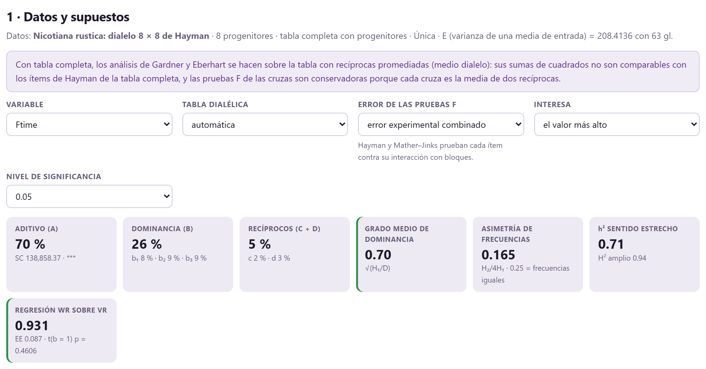
Figura 5.1. La tarjeta 1 con el dialelo de Hayman. Los efectos aditivos reúnen 70 % de la variación entre entradas; la dominancia, 26 %; los recíprocos, 5 %.
Tabla 5.2. Los controles de la tarjeta 1.
Control
Opciones
Para qué sirve
Variable
las del Bloque 3
Todo el bloque se recalcula para la variable elegida
Ambiente
cada ambiente · media de todos
Con varios ambientes: estos análisis se hacen sobre una sola tabla dialélica
Tabla dialélica
automática · completa · media
Usar la tabla con recíprocas (Hayman) o una cruza por pareja (Morley Jones)
Error de las pruebas F
error combinado · interacción de cada ítem con bloques
La segunda es la prueba de Hayman y de Mather y Jinks; necesita bloques completos
Correcciones por error (medio dialelo)
deducidas para cruzas únicas · clásicas
Solo en medio dialelo: cómo se descuenta el error de H1, H2 y h² (sección 5.4)
Interesa
el valor más alto · el más bajo
Qué progenitor cuenta como el mejor en la heterosis y cómo se ordenan las cruzas
Nivel de significancia
0.05 · 0.01 · 0.10
Para las lecturas y los intervalos
Los supuestos, uno por uno
El modelo aditivo–dominante de Hayman y Jinks supone segregación diploide, progenitores homocigóticos, ausencia de efectos recíprocos y de epistasis, un máximo de dos alelos por locus y genes repartidos de forma independiente entre los progenitores. La tabla de supuestos prueba los que los datos permiten probar y dice cuáles no.
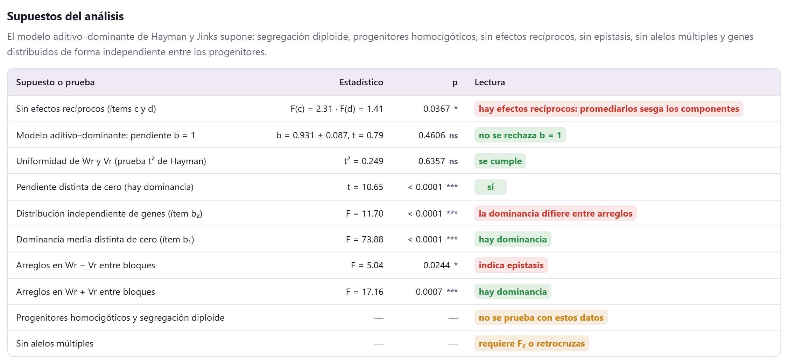
Figura 5.2. Los supuestos con el dialelo de Hayman. Hay efectos recíprocos (p = 0.037), la pendiente no se aparta de 1 y la dominancia es clara; los arreglos difieren en Wr − Vr entre bloques (p = 0.024), un indicio de epistasis.
Con estos datos las pruebas no concuerdan del todo, y es normal. La pendiente de Wr sobre Vr (b = 0.931 ± 0.087) no se aparta de 1 y la prueba t² de uniformidad se cumple, pero el análisis de Wr − Vr entre bloques sí encuentra diferencias entre arreglos; además, los recíprocos son significativos, así que promediarlos, como exige el modelo, sesga un poco los componentes. La lectura prudente es usar los componentes como una descripción aproximada y apoyarse en las pruebas de escala del Bloque 7 o en la cruza triple de prueba del Bloque 6 si la epistasis importa.
5.3La partición de Hayman
La tarjeta 2 · Partición de Hayman divide la variación entre entradas en seis ítems (tabla 5.3). Con la tabla completa se usan los seis; con un medio dialelo, los cuatro primeros, calculados con el método de Morley Jones (1965), que coincide con la partición de Gardner y Eberhart. La última fila, la variación entre progenitores, es la que Walters y Gale (1977) proponen para probar los efectos génicos cuando hay efectos recíprocos, porque el ítem a solo los prueba si no hay dominancia.
Tabla 5.3. Los ítems de Hayman y lo que miden. p: progenitores.
Ítem
gl
Mide
Equivale a
a
p − 1
Efectos aditivos: diferencias entre los arreglos (filas) de la tabla
ACG del método 1 de Griffing
b1
1
Dominancia media: las F1 contra los progenitores
heterosis promedio (h)
b2
p − 1
Dominancia que difiere entre arreglos: alelos dominantes concentrados en algunos progenitores
heterosis de variedad (hj)
b3
p(p − 3)/2
Dominancia específica de cada cruza
ACE del método 3 (tabla completa) o del 4
c
p − 1
Efectos maternos
maternos del método 1
d
(p − 1)(p − 2)/2
Diferencias recíprocas restantes
no maternos del método 1
Figura 5.3. La partición de Hayman de los días a floración de N. rustica. Las dos últimas columnas prueban cada ítem contra su interacción con bloques; con dos bloques, esas pruebas tienen muy pocos grados de libertad (b1, con F = 39.5, no llega a ser significativo).
Con el menú Error de las pruebas F en interacción de cada ítem con bloques, las pruebas F de la tabla pasan a ser las de las dos últimas columnas. Esas interacciones solo se calculan con bloques completos en un ambiente; su suma es el error de bloques × entradas del Bloque 3. La figura de debajo de la tabla muestra el porcentaje de la variación que reúne cada ítem, o sus cuadrados medios.
✓Comprobado · lo publicado
En la escala de parcelas (el doble, con dos bloques), los ítems son los de Hayman (1954): a = 277 716.73, b1 = 30 796.89, b2 = 34 152.70, b3 = 37 288.86, c = 6739.13 y d = 12 372.88, con F = 95.18 para a, 2.31 para c y 1.41 para d. La partición de un medio dialelo reproduce la tabla 1 de Morley Jones (1965).
5.4Los componentes genéticos
La tarjeta 3 · Componentes genéticos estima los seis parámetros del modelo de Hayman y Jinks con su error estándar y su prueba t (con p − 2 grados de libertad), y a la derecha los cocientes que se leen de ellos. Debajo, cinco recuadros y una lectura en palabras. La tarjeta solo aparece si el experimento incluye a los progenitores.
Figura 5.4. Los componentes del dialelo de Hayman. D domina sobre H1; el grado medio de dominancia es 0.70 y predominan los alelos dominantes (KD/KR = 2.87).
θTeoría en breve · los componentes y sus cocientes
V0L0 es la varianza de los progenitores; V1L1, la media de las varianzas de los arreglos; W0L01, la media de sus covarianzas con los progenitores; V0L1, la varianza de las medias de los arreglos, y ML1 − ML0, la diferencia entre la media de las cruzas y la de los progenitores. D es la variación aditiva; H1, la de dominancia; H2, la de dominancia ponderada por las frecuencias de los alelos; F, la covarianza entre efectos aditivos y de dominancia (positiva si predominan los alelos dominantes); h², el efecto neto de la dominancia sumado sobre los loci, y E, el error de una media de entrada (Hayman, 1954; Jinks, 1954). De ahí salen √(H1/D), el grado medio de dominancia (mayor que 1: sobredominancia); H2/4H1, que vale 0.25 si los alelos tienen frecuencias iguales; KD/KR, la razón de alelos dominantes a recesivos, y h²/H2, el número aproximado de grupos de genes con dominancia.
En N. rustica, D = 10 002 ± 352 y H1 = 4908 ± 810: la parte aditiva supera a la dominancia y el grado medio de dominancia, 0.70, indica dominancia parcial. H2/4H1 = 0.165 dice que los alelos no tienen frecuencias iguales; F positivo y KD/KR = 2.87, que los progenitores llevan más alelos dominantes que recesivos, y h²/H2 = 2.05, que al menos dos grupos de genes muestran dominancia en la misma dirección. La heredabilidad en sentido estrecho, en la forma de Mather y Jinks, es 0.71, y en sentido amplio, 0.94.
!Importante · las correcciones de un medio dialelo
Las correcciones clásicas por error de Hayman suponen que cada cruza es la media de dos recíprocas. En un medio dialelo cada cruza se evaluó una sola vez, así que su varianza es el doble y esas correcciones se quedan cortas: en simulaciones sin ninguna variación genética, con E = 4 y cinco progenitores, las clásicas dan H1 = 6.52 en lugar de cero. Por eso el bloque usa por omisión correcciones deducidas para cruzas únicas —H1 − (5p − 4)E/p, H2 − 4E + 4(p − 1)E/p² y h² − 4(p² − 1)E/p³—, comprobadas por simulación, y deja las clásicas en el menú para cuando las recíprocas se hayan promediado de verdad. La nota de la tarjeta dice cuáles se usaron.
5.5El gráfico Wr–Vr y el orden de dominancia
La tarjeta 4 · Gráfico Wr–Vr y orden de dominancia dibuja cada progenitor como un punto: Vr es la varianza de su arreglo (su fila de la tabla dialélica) y Wr, la covarianza de ese arreglo con los progenitores. Si el modelo aditivo–dominante se cumple, los puntos caen sobre una recta de pendiente 1, dentro de la parábola límite Wr² = Vr·V0L0. El capítulo 2 muestra con el laboratorio de dialelos cómo cambia el gráfico con cada tipo de dominancia y de epistasis.
Figura 5.5. El gráfico Wr–Vr de los días a floración. La recta ajustada (morada) casi coincide con la de pendiente 1 (verde) y corta el eje Wr arriba del origen: dominancia parcial. H, E y B, cerca del origen, tienen más genes dominantes; C, lejos, más recesivos. Los rombos marcan dónde caería un progenitor con todos los alelos dominantes o todos recesivos.
✓Regla de lectura · el gráfico Wr–Vr
Pendiente que no se aparta de 1
El modelo aditivo–dominante es adecuado; si se aparta, hay epistasis o genes correlacionados entre progenitores.
Intercepto positivo · cero · negativo
Dominancia parcial · completa · sobredominancia.
Distancia al origen de cada punto
Cerca: el progenitor lleva sobre todo alelos dominantes; lejos: recesivos.
Correlación entre el valor del progenitor y Wr + Vr
Positiva: los alelos dominantes disminuyen la variable; negativa: la aumentan.
La segunda figura ordena los progenitores por Wr + Vr (de más dominante a más recesivo) contra su propio valor. En N. rustica la correlación es 0.74: los progenitores con más alelos dominantes florecen antes, así que la precocidad es dominante. La recta predice que un progenitor completamente dominante floreciría a los 131 días y uno completamente recesivo, a los 407.
Figura 5.6. El orden de dominancia: días a floración de cada progenitor contra Wr + Vr, con los extremos predichos (rombos). G, muy precoz pero con valores intermedios de Wr + Vr, se aparta de la recta.Figura 5.7. La regresión de Wr sobre Vr con su lectura, y la tabla de arreglos: el valor propio de cada progenitor, Vr, Wr, Wr + Vr, Wr − Vr y su lugar en el orden de dominancia (1 = el más dominante, H).
La prueba t² de Hayman compara la varianza de Wr con la de Vr; si es significativa, los supuestos fallan. Con bloques completos, el recuadro plegado Análisis de varianza de Wr − Vr y Wr + Vr entre bloques repite el gráfico en cada bloque: arreglos no significativos en Wr − Vr indican que el modelo es adecuado, y significativos en Wr + Vr, que hay dominancia.
5.6Gardner y Eberhart: variedades y heterosis
El análisis II de Gardner y Eberhart (1966) describe cada cruza entre dos variedades como la media de sus variedades más una heterosis, que a su vez se divide en heterosis promedio (h), heterosis de cada variedad (hj) y heterosis específica de la pareja (sjj′). El análisis III separa a las variedades por sí mismas (spj) de su aptitud combinatoria entre las cruzas (gj), y se cumple gj = ½vj + hj. La tarjeta 5 · Gardner y Eberhart hace los dos, con sus estimaciones, una figura de los efectos de variedad y de heterosis, y la heterosis de cada cruza.
Figura 5.8. Los análisis II y III con las seis variedades de maíz de Lonnquist y Gardner (1961). La heterosis promedio es muy significativa; la de variedad y la específica, no.
En este ejemplo la heterosis promedio es h = 5.19 ± 1.29 (p = 0.0002): las cruzas rinden en promedio 5.2 unidades más que la media de sus variedades (μv = 92.45). Solo la variedad K2 aporta una heterosis propia significativa (ĥ = 4.50, p = 0.011), y solo la cruza B × G tiene heterosis específica (ŝ = 4.81 ± 2.06). En el análisis III, K2 es también la de mejor aptitud combinatoria entre las cruzas (ĝ = 6.375, p < 0.0001): ½ × 3.75 + 4.50. Todas estas cifras son las publicadas.
!Importante · variedades o líneas
El análisis de Gardner y Eberhart está hecho para variedades de polinización libre; el de Hayman y Jinks supone progenitores homocigóticos. Con variedades como progenitores, los componentes de Hayman y Jinks (aquí, un grado medio de dominancia de 2.49, que sugeriría sobredominancia) no deben leerse como parámetros genéticos. Con tabla completa, Gardner y Eberhart se calculan sobre la tabla con las recíprocas promediadas; el aviso de la tarjeta 1 lo recuerda.
Figura 5.9. La heterosis de cada cruza respecto a la media de sus progenitores y al mejor de ellos, con su error estándar y su prueba. Seis cruzas superan significativamente a la media de sus progenitores; solo H × K2 supera al mejor.
La tabla de heterosis no depende de ningún modelo: compara medias con la varianza exacta de cada contraste. La prueba contra el mejor progenitor no corrige por haberlo elegido como el mejor, y el encabezado lo advierte. El menú Interesa define qué progenitor es el mejor: con días a floración o altura, el valor más bajo.
Debajo de la tabla, una figura de barras muestra la heterosis de cada cruza en porcentaje, con color sólido si es significativa, respecto a la media de los progenitores o al mejor. El Bloque 7 hace lo mismo con la F1 de un experimento de generaciones y añade la depresión endogámica de la F2.
5.7Las equivalencias
La tarjeta 6 · Equivalencias entre las metodologías calcula las tres sobre tus datos y comprueba, fila por fila, que las sumas de cuadrados que deben coincidir coinciden. No es un adorno: si una fila dice «no», algo está mal en los datos o en el cálculo, y así se encontró y corrigió un error durante la validación del bloque.
Figura 5.10. Las equivalencias con el dialelo de Hayman: con la tabla completa, a, b, c, d y b3 son la ACG, la ACE, los maternos y los no maternos del método 1 y la ACE del método 3; con las recíprocas promediadas, los ítems de Morley Jones son las fuentes del análisis II y los métodos 2 y 4 de Griffing.
Las sumas de cuadrados coinciden, pero los efectos no: la ACG del método 2 de Griffing incluye a los progenitores, y la gj del análisis III no. Por eso un mismo progenitor puede tener un orden distinto en el Bloque 4 y en el 5 sin que ninguno esté mal. Debajo de la tabla se comprueba además la identidad de Gardner y Eberhart b2 = SC(progenitores) + ACG(método 4) − ACG(método 2).
5.8Casos especiales, descargas y siguiente bloque
Sin progenitores (métodos 3 y 4): no hay componentes de Hayman y Jinks ni análisis de Gardner y Eberhart, porque necesitan a los progenitores por sí mismos; la partición sí se calcula.
Entradas faltantes: Wr, Vr y los componentes necesitan la tabla completa; la tarjeta 1 avisa cuántas faltan.
Pocos progenitores: con menos de seis, la regresión Wr–Vr tiene tres grados de libertad o menos, y el bloque advierte que las pruebas tienen poca potencia.
Varios ambientes: el menú Ambiente elige uno o la media de todos. Con bloques incompletos, E es la varianza de las medias ajustadas, como en el Bloque 4 (sección 4.8).
Las descargas son Resultados (.xlsx), con seis hojas (ítems de Hayman, componentes y cocientes, arreglos, Gardner y Eberhart, heterosis y la tabla dialélica), y Tabla dialélica (.csv), la tabla de medias progenitor × progenitor. Supuestos, fórmulas y referencias, al final de la tarjeta 6, reúne las fórmulas y las fuentes.
El Bloque 5 es el último específico de los dialelos. Su botón Continuar lleva al Bloque 8 (parámetros genéticos y selección entre las cruzas) o, con varios ambientes, al 9 (genotipo × ambiente); el Bloque 6 es para los otros diseños de apareamiento.
B6
Capítulo seis · Bloque 6 · Apareamiento
Diseños de apareamiento
Los dialelos no son la única forma de estimar varianzas genéticas. Las Carolinas del Norte de Comstock y Robinson, la cruza triple de prueba de Kearsey y Jinks, la línea × probador y los dialelos parciales organizan las cruzas de otra manera, casi siempre para evaluar más familias con menos trabajo. El Bloque 6 analiza los seis diseños con un mismo motor: calcula los cuadrados medios esperados del experimento real, elige contra qué probar cada fuente y convierte los componentes en σ²A, σ²D y heredabilidades.
6.1Seis diseños, una misma idea
6.2Datos y supuestos
6.3El análisis de varianza
6.4Los efectos
6.5Componentes y parámetros genéticos
6.6Carolina del Norte I
6.7Carolina del Norte III y cruza triple de prueba
6.8Línea × probador
6.9Dialelo parcial
6.10Varios ambientes, descargas y siguiente bloque
6.1Seis diseños, una misma idea
Todos estos diseños se basan en lo mismo: los parientes se parecen en proporción a los genes que comparten. Los medios hermanos (un progenitor en común) comparten una cuarta parte de la varianza aditiva; los hermanos completos, la mitad de la aditiva y una cuarta parte de la de dominancia. Cada diseño organiza las cruzas para que el análisis de varianza separe esas dos covarianzas.
Tabla 6.1. Los diseños del Bloque 6, qué estiman y el ejemplo del capítulo que los ilustra.
Diseño
Cómo se cruza
Estima
Ejemplo
Carolina del Norte I
Cada macho con varias hembras propias (jerárquico)
σ²A de los machos; σ²D de las hembras dentro de machos
2 conjuntos × 3 machos × 2 hembras
Carolina del Norte II
Todos los machos con todas las hembras de su conjunto (factorial)
σ²A de machos y de hembras; σ²D de su interacción
papa: 2 conjuntos de 5 × 5
Carolina del Norte III
Cada planta F2 con los dos progenitores de la F1
σ²A de las sumas; σ²D de las diferencias
16 plantas F2 en 4 conjuntos
Cruza triple de prueba
Como la III, más la F1 como tercer probador
Lo mismo y, además, epistasis
simulado: 30 plantas F2
Línea × probador
Cada línea con cada probador; opcionalmente, los progenitores
ACG de líneas y probadores; ACE; heterosis
5 líneas × 3 probadores
Dialelo parcial
Cada progenitor con s de los demás (circulante)
ACG y ACE como un dialelo, con menos cruzas
maíz: 8 líneas, s = 5
El Bloque 3 reconoce el diseño y decide qué columna es la hembra, el macho, el probador o la planta F2. Si los datos no son de ninguno de estos diseños, la tarjeta 1 dice dónde se analizan: los dialelos completos, en los Bloques 4 y 5; las generaciones, en el 7.
6.2Datos y supuestos
La tarjeta 1 · Datos y modelo toma los valores de parcela del Bloque 3 (con el análisis de campo que corresponda al diseño y las observaciones que hayas excluido), resume el experimento en una línea y da los principales resultados en recuadros. La tabla Qué supone el diseño, debajo, dice qué supone cada diseño y qué pasa si no se cumple.
Figura 6.1. La tarjeta 1 con la Carolina del Norte II de papa: dos conjuntos de cinco machos × cinco hembras, tres repeticiones y 150 parcelas de rendimiento. Los recuadros dan σ²A, σ²D, el grado de dominancia, la heredabilidad y el error.
Tabla 6.2. Los controles de la tarjeta 1.
Control
Para qué sirve
Variable
Todo el bloque se recalcula para la variable elegida.
Ambiente
Con varios ambientes, uno de ellos o todos juntos, que añade los ambientes y sus interacciones al modelo (sección 6.10).
Endogamia de los progenitores (F)
0, 0.5, 0.75 o 1. Por omisión, 1 en línea × probador y dialelos parciales (líneas endogámicas) y 0 en las Carolinas del Norte y la cruza triple (plantas de una población); si la libreta del Bloque 2 declaró otro valor, se usa ese. F cambia los coeficientes de las covarianzas, no las sumas de cuadrados.
Probador F₁ (L₃)
Solo en la cruza triple de prueba: cuál de los tres probadores es la F1 de los otros dos. La app lo adivina por el nombre.
Interesa · Nivel de significancia
La dirección favorable para ordenar la heterosis, y el nivel de las pruebas.
!Importante · el valor de F cambia σ²A y σ²D
Con los mismos cuadrados medios, σ²A = 4Cov(MH)/(1 + F) y σ²D = 4σ²ACE/(1 + F)². Pasar de F = 0 a F = 1 divide σ²A entre 2 y σ²D entre 4. En el ejemplo de línea × probador, con F = 0 σ²D saldría 1679 y el grado de dominancia 8.76; con F = 1, que es lo correcto para líneas endogámicas, σ²D = 420 y el grado de dominancia 6.19. Revisa siempre este control.
6.3El análisis de varianza
La tarjeta 2 · Análisis de varianza del apareamiento ajusta el modelo del diseño a los valores de parcela: los estratos del campo (conjuntos, repeticiones, bloques) y la partición de las entradas propia de cada diseño. Además de gl, sumas de cuadrados y cuadrados medios, la tabla da el cuadrado medio esperado de cada fuente, contra qué se prueba y su valor p.
Figura 6.2. El análisis de varianza de la Carolina del Norte II. Machos y hembras se prueban contra su interacción; la interacción, contra el error; los conjuntos, con una cuasi-F de 12.9 grados de libertad.
θTeoría en breve · cuadrados medios esperados calculados, no copiados
Los libros traen tablas de cuadrados medios esperados para cada diseño balanceado. El Bloque 6 los calcula para el experimento que tienes: el coeficiente de cada varianza en el cuadrado medio de cada fuente es una traza, tr(AtZkZk′)/glt, que se obtiene ajustando cada columna de efectos aleatorios como si fuera la respuesta. Con datos balanceados reproduce los coeficientes de los libros (en la figura 6.2, 15 = r·f y 3 = r); con cruzas faltantes o repeticiones desiguales los coeficientes dejan de ser enteros y siguen siendo exactos. Cada fuente se prueba contra el cuadrado medio cuya esperanza difiere solo en el término probado; si no hay uno así, contra una combinación de cuadrados medios con grados de libertad de Satterthwaite (cuasi-F).
Debajo de la tabla, la figura Aporte de cada fuente muestra qué parte de la variación entre entradas corresponde a cada término del apareamiento.
6.4Los efectos
La tarjeta 3 · Efectos de progenitores y cruzas estima el efecto de cada progenitor (su aptitud combinatoria general) y el de cada cruza (la específica), con su error estándar y su prueba t. En la Carolina del Norte II, los machos y las hembras tienen su tabla y la interacción otra, más una figura de puntos de los efectos generales y una matriz de colores de la interacción, conjunto por conjunto.
Figura 6.3. Los efectos de los diez machos y las diez hembras de papa. Como machos y hembras comparten números pero son plantas distintas, la app los marca con ♂ y ♀.Figura 6.4. Los efectos de la interacción machos × hembras del primer conjunto. En rojo, las cruzas que rinden más de lo que predicen sus progenitores; en azul, las que rinden menos.
Los efectos se estiman por mínimos cuadrados con las restricciones del modelo (los efectos de cada conjunto suman cero), así que su error estándar es el del contraste completo: para una línea, σ²(1/rt − 1/rlt) y no σ²/rt, como imprimen algunos libros. En línea × probador, el error estándar de una ACG de línea es 2.464, no 2.755.
6.5Componentes y parámetros genéticos
La tarjeta 4 · Componentes de varianza y parámetros genéticos despeja los componentes de los cuadrados medios esperados (a la izquierda) y los convierte en covarianzas de parentesco, σ²A, σ²D, grado de dominancia y heredabilidades (a la derecha). Cada componente es una combinación de cuadrados medios, así que su error estándar sale de ellos: Var(ΣciMi) = Σci²·2Mi²/gli.
Figura 6.5. Los componentes y parámetros de la papa. La prueba de que un componente vale cero es la F de su fuente: σ²m es claramente mayor que cero (p = 0.0014) aunque su error estándar sea grande.
En la papa, σ²A = 16 407 ± 8579 y σ²D = 8862 ± 9138, con un grado medio de dominancia de 1.04 y una heredabilidad de 0.37 por parcela y 0.52 en medias de familia. La Carolina del Norte II da dos estimaciones de σ²A, una de los machos (21 975) y otra de las hembras (10 840), y la app las promedia; cuando difieren mucho, como aquí, conviene pensar en efectos maternos o en que machos y hembras no vienen de la misma población.
!Importante · componentes negativos
Un componente negativo se informa como sale: suele indicar que la varianza verdadera es cercana a cero o que hay pocas repeticiones. Una σ²D negativa se toma como cero en el denominador de h² en sentido estrecho, y con ella no se calculan el grado de dominancia, H² ni la razón de Baker; con σ²A negativa no se calcula ninguna heredabilidad. El aviso de la tarjeta lo explica cada vez.
6.6Carolina del Norte I
En el diseño jerárquico cada macho se cruza con hembras que no se cruzan con ningún otro macho. La varianza entre machos es la covarianza de medios hermanos, y la de hembras dentro de machos es la de hermanos completos menos la de medios hermanos: σ²A = 4σ²m/(1 + F) y σ²D = 4(σ²h − σ²m)/(1 + F)². Los machos se prueban contra las hembras dentro de machos, y estas contra el error.
Figura 6.6. La Carolina del Norte I del ejemplo, con tres plantas medidas por parcela: la última fila es el error de muestreo entre plantas, en la escala de plantas.
En el ejemplo los machos difieren (F = 6.89, p = 0.020), pero las hembras dentro de machos no (p = 0.096), y σ²D sale negativa (−1.26 ± 1.39): con seis machos y dos hembras por macho la dominancia no se puede estimar bien. La tabla de supuestos recuerda una limitación propia del diseño: como cada hembra tiene un solo macho, los efectos maternos quedan dentro del componente de hembras y sobrestiman σ²D cuando existen. Con datos por planta, la heredabilidad se da también en base de planta, separando el error de muestreo entre plantas del error de parcela.
6.7Carolina del Norte III y cruza triple de prueba
En la Carolina del Norte III cada planta F2 se cruza con los dos progenitores de la F1, L1 y L2. Para cada planta, la suma de sus dos cruzas refleja su valor aditivo y la diferencia, su dominancia: la varianza de las sumas estima σ²A y la de las diferencias, 2σ²D, las dos después de restar el error de un par (Comstock y Robinson, 1952). La cruza triple de prueba añade la F1 como tercer probador, L3, y el contraste L1 + L2 − 2L3, que vale cero si no hay epistasis (Kearsey y Jinks, 1968).
θTeoría en breve · sumas, diferencias y epistasis
Var(L1 + L2) − 2CMe/r = σ²A · ½[Var(L1 − L2) − 2CMe/r] = σ²D · D = 2σ²A, H = 4σ²D, grado de dominancia √(H/D)
Un locus de la F2 cruzado con los dos progenitores da diferencias a − d, a y a + d con frecuencias ¼, ½ y ¼, de modo que la varianza de las diferencias es H/2 = 2σ²D. La correlación entre sumas y diferencias dice hacia qué progenitor va la dominancia. En la cruza triple, la media del contraste L1 + L2 − 2L3 prueba la epistasis global (tipo i) y su variación entre individuos, la de tipos j y l.
Figura 6.7. La Carolina del Norte III del ejemplo: 16 plantas F2 en cuatro conjuntos, cruzadas con P1 y P2. Las plantas se prueban contra el error y la interacción plantas × probadores también: los probadores son fijos.
Los probadores son dos líneas fijas, no una muestra, así que la interacción de cada planta con ellos no entra en el cuadrado medio esperado de las plantas (el modelo restringido de Comstock y Robinson). Por eso las plantas se prueban contra el error (F = 2.40, p = 0.028), y el componente de plantas, 0.255, es exactamente σ²A/4 = 1.019/4. La interacción plantas × probadores es significativa (p = 0.006): hay dominancia, con σ²D = 0.80 ± 0.49 y un grado de dominancia de 1.25.
La tarjeta 5 · Sumas, diferencias y epistasis reúne esos cálculos. Con la cruza triple simulada de la galería de ejemplos —ocho loci sin epistasis, D = 11.52 y H = 8 (σ²A = 5.76, σ²D = 2)—, el bloque estima σ²A = 4.97 ± 2.20 y σ²D = 1.86 ± 0.94, con un grado de dominancia de 0.87 (verdadero, 0.83).
Figura 6.8. Sumas y diferencias de la cruza triple simulada. La media de las diferencias mide la diferencia aditiva entre los probadores; la correlación entre sumas y diferencias (−0.55, p = 0.001) dice que la dominancia va hacia P1.
iNota · el orden de los probadores
El contraste de epistasis solo tiene sentido si L3 es la F1 de L1 y L2. La app ordena los probadores por el nombre (la F1, al final); si los nombres no lo dicen, elige el correcto en Probador F₁ (L₃). Con el orden equivocado, datos sin epistasis la mostrarían muy significativa.
Figura 6.9. Cada individuo F2 por su suma y su diferencia. La pendiente negativa indica que los individuos con más alelos que aumentan el valor tienen diferencias menores: la dominancia va hacia el progenitor de valor alto.Figura 6.10. La prueba de epistasis. En los datos simulados sin epistasis, ni la media del contraste (p = 0.90) ni su variación entre individuos (p = 0.95) son significativas, como debe ser. Debajo, una figura muestra el contraste de cada individuo con su intervalo.
6.8Línea × probador
La línea × probador (Kempthorne, 1957) cruza cada línea con unos cuantos probadores. Si también se evaluaron los progenitores, las entradas se parten en progenitores, cruzas y el contraste entre ambos grupos; las cruzas, en líneas, probadores y su interacción. La ACG de líneas y probadores sale de sus efectos, y la ACE, de la interacción.
Figura 6.11. Cinco líneas × tres probadores más ocho progenitores. Líneas y probadores se prueban contra su interacción; la interacción es muy significativa (F = 19.44). El contraste progenitores contra cruzas lleva una cuasi-F porque la media de las cruzas contiene los efectos aleatorios de líneas y probadores.
En el ejemplo, las líneas difieren en su ACG (L3, con +23.8, es la mejor; L4, con −13.9, la peor) y dos probadores también (T7, +6.4; T8, −6.7), pero con cinco líneas y tres probadores sus varianzas no llegan a ser significativas contra la interacción, que domina. La varianza de los probadores sale negativa, y σ²A, que se calcula con el promedio de las varianzas de líneas y probadores, queda en 21.9 ± 197: casi toda la variación entre cruzas es específica. El aviso de la tarjeta 4 explica por qué: unos pocos probadores elegidos a propósito no estiman la covarianza de medios hermanos de una población.
Figura 6.12. Con los progenitores en el experimento, la tarjeta 5 da la heterosis de cada cruza respecto a la media de sus progenitores y al mejor de ellos. L3 × T8 supera a la media de sus progenitores en 51 % y al mejor en 44 %.
6.9Dialelo parcial
En un dialelo parcial cada progenitor se cruza con s de los demás, normalmente en el orden circulante de Kempthorne y Curnow (1961) que prepara el Bloque 2. El Bloque 6 ajusta yij = μ + gi + gj + sij por mínimos cuadrados sobre las cruzas que se hicieron, así que sirve para el arreglo circulante y para cualquier conjunto incompleto de cruzas, y da la ACG de cada progenitor y la ACE de cada cruza como un dialelo del método 4.
Figura 6.13. El dialelo parcial de ocho líneas de maíz con s = 5 (20 cruzas y cuatro repeticiones). El coeficiente de σ²ACG, 17.14 = 120/7, no es entero: el cálculo por trazas lo obtiene sin tablas.
Aquí ni la ACG (p = 0.085) ni la ACE (p = 0.52) son significativas en conjunto, aunque dos líneas se apartan: la 2 (ĝ = +0.59, p = 0.009) y la 7 (ĝ = −0.49, p = 0.028). σ²ACE sale negativa, así que no hay razón de Baker ni grado de dominancia; con F = 1, σ²A = 0.13 ± 0.12 y la heredabilidad es 0.13 por parcela.
6.10Varios ambientes, descargas y siguiente bloque
Con datos de varios ambientes, el menú Ambiente permite analizar uno o todos juntos. En el segundo caso el modelo añade los ambientes y la interacción de cada término genético con ellos (machos × ambientes, hembras × ambientes, líneas × probadores × ambientes…), y los cuadrados medios esperados y las pruebas se recalculan por trazas para ese modelo; σ²A y σ²D descuentan entonces su interacción con los ambientes.
La tarjeta 6 · Supuestos, fórmulas y referencias resume el modelo y las fórmulas de cada diseño con sus referencias. Resultados (.xlsx) descarga el análisis de varianza, los componentes, los parámetros, los efectos y, según el diseño, las sumas y diferencias o la heterosis. Cada figura tiene su panel de descarga.
El botón Continuar lleva al Bloque 8 (parámetros genéticos, correlaciones e índices de selección entre las familias) o, con varios ambientes, al 9 (genotipo × ambiente). ← Datos regresa al Bloque 3.
B7
Capítulo siete · Bloque 7 · Generaciones
Generaciones y heterosis
Una cruza entre dos líneas puras y sus descendientes —la F1, la F2 y las retrocruzas— bastan para saber cómo se hereda un carácter. Sus medias dicen si los genes actúan de forma aditiva, con dominancia o con epistasis; sus varianzas separan la parte aditiva de la de dominancia y del ambiente. El Bloque 7 hace las pruebas de escala de Mather, la prueba conjunta de Cavalli con la secuencia de modelos, los componentes D, H, F y E con sus heredabilidades, el número mínimo de factores efectivos, la heterosis y la depresión endogámica.
7.1Las generaciones y lo que esperan
7.2Datos y controles
7.3La varianza de cada media
7.4Pruebas de escala
7.5Prueba conjunta de escala
7.6Varianzas generacionales: D, H, F y E
7.7Heterosis y depresión endogámica
7.8Número mínimo de factores efectivos
7.9Varios ambientes, descargas y siguiente paso
7.1Las generaciones y lo que esperan
Cada generación mezcla en proporciones conocidas los tres genotipos de cada locus: AA, Aa y aa. Por eso su media es una combinación fija de unos cuantos parámetros —la media m, los efectos aditivos [d], los de dominancia [h] y las tres epistasis de dos loci [i], [j] y [l]— y su varianza, otra de D, H, F y E. Con seis generaciones o más, esas combinaciones se pueden despejar.
Tabla 7.1. Las generaciones que reconoce el Bloque 7, los nombres que acepta en la columna de generación, su media esperada en la métrica F∞ y su varianza esperada sin epistasis ni ligamiento. P1 es el progenitor que lleva los alelos que aumentan el valor.
Generación
Nombres que acepta
Media esperada
Varianza esperada
P1, P2
P1, P2
m ± [d] + [i]
E
F1 y su recíproca
F1; F1R, RF1, F1rec
m + [h] + [l]
E
F2
F2
m + ½[h] + ¼[l]
½D + ¼H + E
F3
F3
m + ¼[h] + 1⁄16[l]
¾D + 3⁄16H + E
RC1 (F1 × P1)
RC1, BC1, B1, retrocruza1
m + ½[d] + ½[h] + ¼[i] + ¼[j] + ¼[l]
¼D + ¼H − ½F + E
RC2 (F1 × P2)
RC2, BC2, B2, retrocruza2
m − ½[d] + ½[h] + ¼[i] − ¼[j] + ¼[l]
¼D + ¼H + ½F + E
RC autofecundadas
BC1S, B11, BS1 (y las de P2)
m ± ½[d] + ¼[h] + ¼[i] ± ⅛[j] + 1⁄16[l]
½D + 3⁄16H ∓ ¼F + E
El Bloque 3 reconoce el diseño de generaciones cuando la columna de generación (o el nombre de las entradas) tiene al menos tres de estos códigos y son la mayoría de las entradas. Los datos pueden ser plantas medidas una por una, con o sin parcelas y bloques, o un valor por parcela. Las pruebas de escala usan P1, P2, F1, F2 y las retrocruzas; los modelos, todas las que haya. Los coeficientes de la F3 y de las retrocruzas autofecundadas se dedujeron de las frecuencias genotípicas y se comprobaron por simulación.
7.2Datos y controles
La tarjeta 1 · Generaciones y modelo toma los datos del Bloque 3 (sin las observaciones que hayas excluido), resume en una línea las generaciones, el número de plantas o parcelas y la métrica, y reúne los resultados principales en recuadros: la heterosis sobre la media de progenitores, la heterosis estándar si hay un testigo, [d] y [h] del modelo elegido, el grado de dominancia, la heredabilidad en sentido estrecho (o D, si sale negativa) y el número mínimo de factores efectivos. Los que no se pueden calcular no aparecen.
Los controles son seis:
Variable y, si hay varios ambientes, Ambiente.
Métrica de los parámetros: la F∞ de Mather y Jinks o la F2 de Hayman (sección 7.5).
Varianza de cada media: automática según el diseño (sección 7.3), o forzada a error de parcela o a varianza entre individuos.
Modelo en tablas y figura: el elegido por la secuencia o la solución de ajuste perfecto con los seis parámetros.
Interesa: el valor más alto o el más bajo. Solo define cuál es el mejor progenitor para la heterosis; en días a floración o en altura de planta, donde se busca lo bajo, conviene cambiarlo.
Nivel de significancia: 0.05, 0.01 o 0.10. Decide qué modelo «ajusta» y qué parámetros cuentan como significativos.
Figura 7.1. La tarjeta 1 con el ejemplo de Nicotiana rustica: seis generaciones y 160 plantas medidas una por una. D sale negativa y el recuadro lo dice en lugar de dar una heredabilidad.
La tabla Estadísticas de cada generación es la base de todo lo demás: número de plantas, media, error estándar y grados de libertad de la media, varianza entre individuos con sus grados de libertad, el peso 1/V(media) y la base de ese peso. El ejemplo de N. rustica viene de Gale, Mather y Jinks (1977), que publicaron para cada generación el número de plantas, la media y la varianza; las 160 plantas se reconstruyeron con exactamente esos valores, que son todo lo que usan estos análisis.
7.3La varianza de cada media
Todas las pruebas del bloque comparan medias, y cada media pesa según su precisión. De dónde sale su varianza depende de cómo se sembró el experimento, y en automático el menú Varianza de cada media distingue tres casos.
Plantas aleatorizadas una por una (el ejemplo de N. rustica, o una planta por parcela): V(y) = s²/n, la varianza entre individuos entre su número. La base dice individuos.
Parcelas repetidas de varias plantas: la media de una parcela varía por el error de parcela, común a todas las generaciones, y por las plantas que contiene, que en una F2 varían mucho más que en un progenitor. La base dice medias de r parcelas.
Un valor por parcela: el cuadrado medio residual de las medias de parcela, igual para todas las generaciones. Sin plantas no hay varianza entre individuos, así que el bloque no calcula D, H, F, E ni factores efectivos y lo avisa.
V(yg) = (σ²p + s²g/k)/r · σ²p = CMres − promedio(s²/k) · CMres: medias de parcela ajustadas por generación y bloque
Aquí s²g es la varianza entre las plantas de una misma parcela de la generación g, k el número de plantas por parcela y r el de parcelas. El error de parcela σ²p sale del cuadrado medio residual de las medias de parcela una vez quitados los efectos de generación y de bloque, menos la parte que ya aportan las plantas (Hayman, 1958). Como es una combinación de cuadrados medios, los grados de libertad de cada media son los de Satterthwaite (1946) y no son enteros.
Figura 7.2. El ejemplo simulado de la galería: seis generaciones y un testigo en tres bloques, con una parcela de cada una por bloque (10 plantas de los progenitores, la F1 y el testigo, 40 de la F2 y 20 de cada retrocruza). Las medias de las generaciones tienen errores estándar de 0.64 a 0.69 con 8.7 a 12.1 grados de libertad; la última fila es el testigo, que solo entra en la heterosis estándar (sección 7.7).
En el simulado, el cuadrado medio residual de las 18 medias de parcela es 1.303 con 10 grados de libertad; las plantas aportan 0.375, así que σ²p = 0.928. Un modelo mixto ajustado por máxima verosimilitud restringida, con efecto de parcela y una varianza residual para cada generación, da prácticamente las mismas varianzas de las medias (0.445 contra 0.445 en P1, 0.407 contra 0.408 en la F2).
!Importante · los bloques no entran en la varianza de las medias
Cada generación está en todos los bloques, así que un bloque bueno sube todas las medias por igual y el efecto se cancela en cualquier comparación entre ellas. Si la varianza de cada media se calculara con las medias de parcela tal como salen, con los bloques dentro, los errores estándar crecerían sin razón y las pruebas perderían casi toda su potencia. En 1000 simulaciones como la del ejemplo, la varianza real de la prueba de escala C fue 4.96; el cálculo del bloque la estimó en 4.96 en promedio, mientras que con los bloques dentro habría sido 15.9.
El menú permite forzar la base. error de parcela (sin bloques) aplica la fórmula anterior siempre que haya más de una parcela por generación; entre individuos / n usa s²/n, que es correcto con plantas aleatorizadas una por una pero ignora el error de parcela cuando hay parcelas: los errores estándar salen demasiado pequeños y cualquier diferencia parece significativa. Si las generaciones no tienen todas la misma base, un aviso lo señala.
7.4Pruebas de escala
Las pruebas de escala de Mather (1949) son contrastes entre medias que valen cero cuando basta el modelo aditivo–dominante. Cada una combina generaciones distintas y, por eso, es sensible a un tipo distinto de epistasis; la última columna de la tabla dice qué estima cada prueba en la métrica F∞.
A = 2RC1 − P1 − F1 · B = 2RC2 − P2 − F1 · C = 4F2 − 2F1 − P1 − P2 D = 2F2 − RC1 − RC2 · D′ = P1 + P2 + 2F2 − 4F3
Figura 7.3. Las pruebas de escala de N. rustica. Solo A se aparta de cero; la nota de debajo recuerda que D prueba [i] sola, que C − 4D estima −[l] y que A − B prueba [j].
En N. rustica, A = 1.681 ± 0.709 (t = 2.37, p = 0.022) y las otras tres no son significativas. Una sola prueba significativa basta para decir que el modelo aditivo–dominante no alcanza. Como A − B = [j] vale 2.39 y D = −½[i] es casi cero, la sospecha recae en la epistasis aditiva × dominancia, que la prueba conjunta confirma. D′ aparece cuando hay F3.
La varianza de cada prueba es Σc²V(y), con los coeficientes al cuadrado. Sus grados de libertad son los de Satterthwaite para esa combinación: 45.4 para A, menos que los 67 que resultarían de sumar los de sus tres generaciones, porque un tercio de la varianza de A viene de P1, que tiene solo 9 grados de libertad. Debajo de la tabla, una figura muestra cada prueba con su intervalo de confianza; las barras significativas van en color pleno.
7.5Prueba conjunta de escala
La prueba conjunta de Cavalli (1952) ajusta las medias de todas las generaciones a la vez por mínimos cuadrados ponderados, con peso 1/V(y). Si el modelo describe las medias, la suma ponderada de las desviaciones al cuadrado sigue una χ² con tantos grados de libertad como generaciones menos parámetros.
Figura 7.4. La tarjeta 3 con N. rustica. El modelo m, [d], [h] se rechaza; m, [d], [h], [i], [j] ajusta, pero [h] no es significativo, y al quitarlo queda m, [d], [i], [j], el elegido (χ²2 = 0.146, p = 0.93). A la derecha, cada media observada, la esperada por el modelo y su aporte al χ².
✓Comprobado · lo publicado
El modelo m, [d], [h] con los datos de Gale, Mather y Jinks (1977) da χ²3 = 9.438 con P = 2.40 % y m = 11.0036 ± 0.1914, [d] = 3.6349 ± 0.1924, [h] = 0.5937 ± 0.2813, los valores del artículo; el segundo conjunto de datos del mismo artículo da χ²3 = 12.5731, también el publicado.
El bloque ajusta seis modelos de complejidad creciente y elige el más sencillo que no se rechaza y tiene todos sus parámetros significativos; si ninguno lo logra, toma el primero que no se rechaza y le quita uno a uno los parámetros no significativos, empezando por el menos significativo, mientras el ajuste se mantenga (Jayasekara y Jinks, 1976).
El modelo elegido dice que la altura de N. rustica en esta cruza depende de efectos aditivos ([d] = 3.20 ± 0.24), de epistasis aditiva × aditiva ([i] = −0.78 ± 0.28) y, sobre todo, aditiva × dominancia ([j] = 2.30 ± 0.77); la dominancia sola no es significativa. La figura de debajo pone las medias observadas con su intervalo junto a las esperadas, con la línea de la media de progenitores como referencia.
Figura 7.5. Medias observadas (círculos, con intervalo de confianza) y esperadas por el modelo elegido (rombos). A la derecha, el modelo y sus estimaciones.
Con Modelo en tablas y figura en ajuste perfecto, las tablas y la figura muestran la solución de seis parámetros, que con seis generaciones no deja grados de libertad para el χ²: solo quedan las pruebas t de cada parámetro. Si el modelo incluye [h] y [l], la nota clasifica la epistasis como complementaria (mismo signo) o duplicada (signos opuestos), según Jinks y Jones (1958). La clasificación solo tiene sentido si los dos parámetros son significativos, y depende de la métrica.
Tabla 7.2. La solución de ajuste perfecto de N. rustica en las dos métricas. El χ² de cualquier modelo es el mismo en las dos; los parámetros no.
Métrica
m
d
h
i
j
l
F∞ de Mather y Jinks: [d], [h]…
11.125
3.190
1.059
−0.360
2.388
−0.614
F2 de Hayman: d, h…
11.501
4.384
0.445
−0.360
1.194
−0.614
Las dos métricas describen lo mismo con distinto origen: la F∞ mide desde la media de las líneas puras que puede dar la cruza, y la de Hayman desde la F2. Se pasa de una a otra con mF∞ = m − ½h + ¼l, [d] = d − j, [h] = h − l, [i] = i, [j] = 2j y [l] = l. Muchos artículos que citan a Hayman (1958) usan en realidad la convención de Jinks y Jones, con [j] = 2j; con la métrica de Hayman, la nota da ese valor y la equivalencia completa. Al comparar con un artículo, conviene fijarse primero en la métrica.
Con medias de parcela. Cuando la varianza de cada media se estima con pocos grados de libertad, como en un experimento con tres bloques, el χ² rechaza de más: en simulaciones sin epistasis, alrededor del 9 % de las veces al 5 %. Entonces la p de cada modelo es la de la aproximación de Welch–James (Johansen, 1980), que compara χ²/c con una F cuyos grados de libertad dependen de los de cada varianza; con ella, los rechazos bajan a cerca del 6 %. Con plantas individuales se conserva el χ² de Cavalli, que es el de los artículos.
Figura 7.6. El ejemplo simulado, cuyo modelo verdadero es m = 50, [d] = 8, [h] = 6, [i] = 3, [j] = 0 y [l] = −2. La secuencia elige m, [d], [h], [i] (p = 0.11 por Welch–James) con estimaciones cercanas a las verdaderas.
En el simulado, [d] = 7.98 ± 0.42, [h] = 5.68 ± 1.82 e [i] = 4.00 ± 1.46, frente a los verdaderos 8, 6 y 3. La epistasis de dominancia × dominancia ([l] = −2) es demasiado pequeña para detectarla con tres bloques: el modelo con [l] también ajusta, pero la secuencia se queda con el más sencillo. Las pruebas de escala ya lo anunciaban: C = −9.64 ± 3.02 y D = −4.84 ± 1.59 son significativas, y las dos contienen [i].
7.6Varianzas generacionales: D, H, F y E
La tarjeta 4 · Varianzas generacionales ajusta las varianzas entre individuos de cada generación a sus valores esperados (tabla 7.1) por mínimos cuadrados ponderados. D = Σd² es la varianza aditiva, H = Σh² la de dominancia, F = Σdh la asociación entre ambas (positiva cuando la dominancia va hacia P1; entonces la retrocruza con P1 varía menos que la otra) y E la ambiental. Los progenitores y la F1, que no segregan, estiman E; la F2 y las retrocruzas, lo demás. Cada varianza pesa gl/(2V²), con V su valor ajustado, y los pesos se recalculan hasta que no cambian (Mather y Jinks).
Figura 7.7. Los componentes del ejemplo simulado (verdaderos: D = 10, H = 6, F = 2, E = 4) y, a la derecha, lo que se deriva de ellos: σ²A y σ²D en la F2, el grado medio de dominancia y cuatro heredabilidades.
En el simulado, D = 13.07 ± 7.67, H = 6.02 ± 11.30, F = 3.80 ± 2.30 y E = 3.70 ± 0.58; el ajuste de las varianzas no se rechaza (χ²2 = 0.53, p = 0.77). Los errores estándar de D y H son grandes: separar la varianza aditiva de la de dominancia con seis varianzas exige muchas plantas segregantes. De ahí salen un grado medio de dominancia √(H/D) = 0.68 (dominancia parcial; el verdadero es 0.77), una h² en sentido estrecho de 0.557 y una H² en sentido amplio de 0.685, ambas en la F2 y por planta.
Figura 7.8. Varianzas observadas y esperadas del simulado. Los progenitores y la F1 comparten el valor esperado E; la F2 y las retrocruzas se ajustan exactamente.
La h² de Warner (1952), [2V(F2) − V(RC1) − V(RC2)]/V(F2), usa solo tres varianzas. Con las seis generaciones básicas coincide exactamente con la h² estrecha, porque D, H y F se ajustan sin residuo a la F2 y a las retrocruzas; difiere cuando hay más generaciones, como la F3. La H² amplia desde la F2, [V(F2) − E]/V(F2), es la otra lectura directa.
!Importante · componentes negativos
En N. rustica, D = −0.28 ± 2.44 y F = −1.78 ± 0.76, y el ajuste de las varianzas queda al límite (χ²2 = 5.41, p = 0.067). Con D negativa no se calculan el grado de dominancia ni las heredabilidades que usan D y H; la h² de Warner (−0.066) y la H² desde la F2 (0.596) sí, porque usan las varianzas directamente. Un D negativo suele indicar pocas plantas, ligamiento o epistasis.
7.7Heterosis y depresión endogámica
La tarjeta 5 · Heterosis, depresión endogámica y factores efectivos compara la F1 con la media de sus progenitores y con el mejor de ellos, y la F2 con la F1. Se prueba la diferencia, no el porcentaje, con su error estándar y grados de libertad de Satterthwaite; el porcentaje se da para leerla.
Figura 7.9. La heterosis de N. rustica. La F1 supera en 7.5 % a la media de sus progenitores, pero queda 17.1 % por debajo del más alto; la F2 casi no pierde altura respecto a la F1.
En el ejemplo, la heterosis sobre la media de progenitores es 0.805 ± 0.294 (p = 0.011) y sobre el mejor progenitor, −2.385 ± 0.442 (p = 0.0002): la F1 es intermedia, más cerca del progenitor alto. La relación de potencia, (F1 − MP)/(½|P1 − P2|) = 0.252 ± 0.101, lo resume: 0 es herencia intermedia, ±1 dominancia completa hacia un progenitor y más de 1, sobredominancia aparente. La depresión endogámica, F1 − F2 = 0.069, no es significativa; sin epistasis la F2 conservaría la mitad de la heterosis (11.167) y se observó 11.501, otra señal de la epistasis que encontró la prueba conjunta.
θTeoría en breve · la heterosis no es la dominancia
En la métrica F∞, la heterosis sobre la media de progenitores es F1 − MP = [h] + [l] − [i]. Una epistasis aditiva × aditiva positiva sube a los dos progenitores y resta heterosis; una [l] negativa (epistasis duplicada) también. En el simulado, con [h] = 6, [i] = 3 y [l] = −2, la heterosis esperada es solo 1: se observó 1.49 ± 0.81, que no es significativa aunque haya dominancia clara. Cuando el modelo elegido incluye [h], la nota de la tarjeta da esta cuenta con sus estimaciones (5.68 − 4.00 = 1.68 en el simulado).
Debajo de la nota, una figura dibuja cada medida con su intervalo, en diferencia o en porcentaje. Si en Interesa eliges el valor más bajo, el mejor progenitor pasa a ser el de valor más bajo y la heterosis útil es la negativa.
Heterosis estándar
Para un programa de mejoramiento, la pregunta práctica no es si la F1 supera a sus progenitores, sino si supera a la variedad o al híbrido que se siembra hoy. Esa es la heterosis estándar: F1 − testigo, en porcentaje de la media del testigo. Para calcularla basta sembrar el testigo en el mismo ensayo y ponerlo en los datos como una entrada más que no sea generación: con su nombre en la columna de entradas, o escrito en la misma columna de generación (Testigo, H-520), que el Bloque 3 lee como testigo. Con varios testigos, la tabla agrega una fila por cada uno.
heterosis estándar = F1 − testigo · EE = √[V(F1) + V(testigo)] · % = 100 × diferencia/testigo
Las varianzas de las dos medias salen del mismo modelo de parcelas de la sección 7.3, pero ajustado con el testigo, así que los efectos de bloque y el error de parcela son los de todo el ensayo. Los testigos no entran en las pruebas de escala, en los modelos ni en la heterosis sobre los progenitores, que quedan igual que sin ellos.
Figura 7.10. La heterosis del ejemplo simulado. La F1 no supera a su mejor progenitor, pero sí al testigo, una variedad uniforme de media verdadera 51, por 3.25 ± 0.91 (6.4 %, p = 0.0038).
En el simulado, la F1 (54.06) queda 6.29 por debajo del progenitor alto y apenas 1.49 sobre la media de sus progenitores, sin significancia; frente al testigo (50.81) gana 3.25 con 12.4 grados de libertad. Las tres lecturas no se contradicen: responden preguntas distintas. La heterosis sobre los progenitores habla de la acción génica; la estándar, de si la F1 vale la pena frente a lo que ya se siembra.
✓Comprobado · reconstrucción independiente
Con el testigo del ejemplo simulado, la diferencia, su error estándar, los grados de libertad de Satterthwaite (12.404) y el valor p coinciden hasta 10−8 con una reconstrucción que ajusta las medias de parcela por mínimos cuadrados. Un modelo mixto por máxima verosimilitud restringida, con parcelas aleatorias y una varianza entre plantas para cada entrada, da 3.247 ± 0.919 contra 3.247 ± 0.914.
7.8Número mínimo de factores efectivos
¿Cuántos genes separan a los dos progenitores? La fórmula de Castle y Wright compara la diferencia entre ellos con la varianza de segregación σ²S, la varianza genética que aparece al cruzarlos. Si todos los alelos que aumentan están en un progenitor y los genes tienen el mismo efecto, nE = (P2 − P1)²/(8σ²S). Lande (1981) propuso cuatro maneras de estimar σ²S con distintas generaciones, cada una con su error estándar.
Figura 7.11. El número mínimo de factores efectivos de N. rustica. La estimación con 2V(F2) − V(RC1) − V(RC2) no aparece porque esa varianza, que es ½D, sale negativa.
En el ejemplo, las tres estimaciones van de 1.9 a 4.1 factores y la corrección de Cockerham (1986), que quita del numerador el error de muestreo de las medias de los progenitores y combina todas las varianzas en una sola σ²S, da 3.58. Es un mínimo: la dominancia, la epistasis, el ligamiento y los genes de efecto desigual lo hacen menor que el número real. Aun así dice algo útil: el gen de mayor efecto no puede explicar más de 1/√nE de la diferencia entre progenitores, aquí alrededor de la mitad.
✓Comprobado · lo publicado
Con las estadísticas del peso del fruto de tomate que usó Lande (1981, tabla 3), el bloque da 9.78 ± 0.65, 10.03 ± 0.66, 9.12 ± 1.15 y 11.14 ± 0.77 factores; el artículo publica 9.8 ± 0.6, 10.0 ± 0.7, 9.1 ± 1.1 y 11.1 ± 0.8.
7.9Varios ambientes, descargas y siguiente paso
Con datos de varios ambientes, el menú Ambiente permite analizar uno o todos juntos. Juntos, los bloques de cada ambiente cuentan como bloques distintos y la interacción de las generaciones con los ambientes queda en el error de parcela; con plantas sin parcelas, cada ambiente hace de parcela.
La tarjeta 6 · Supuestos, fórmulas y referencias resume los supuestos (progenitores homocigóticos, herencia diploide, sin efectos maternos, sin ligamiento entre los genes que interactúan, escala adecuada) con las fórmulas y las referencias. Si las pruebas de escala fallan, antes de añadir epistasis conviene probar una transformación de la variable: la epistasis puede ser un efecto de escala. Resultados (.xlsx) descarga todas las tablas del bloque, cada una en su hoja, y cada figura tiene su panel de descarga.
Como los Bloques 8 a 11 trabajan con genotipos y no con generaciones, Continuar lleva al Bloque 12, el informe; ← Datos regresa al Bloque 3.
B8
Capítulo ocho · Bloque 8 · Selección
Parámetros genéticos y selección
Antes de seleccionar hay que saber cuánto de lo que se ve es genético, cómo se relacionan las variables entre sí y cuánto se puede ganar. El Bloque 8 calcula la heredabilidad de cada variable con su intervalo exacto, los coeficientes de variación y el avance genético; las correlaciones genotípicas, fenotípicas y ambientales con el análisis de sendas; cinco índices de selección y los genotipos que eligen; y la ganancia esperada de los métodos de selección recurrente.
8.1Qué hace el bloque
8.2Parámetros genéticos de cada variable
8.3Heredabilidad e intensidad de selección
8.4Varios ambientes
8.5Correlaciones
8.6Análisis de sendas
8.7Índices de selección
8.8Los genotipos seleccionados
8.9Métodos de selección recurrente
8.10Descargas y siguiente paso
8.1Qué hace el bloque
El Bloque 8 trabaja con genotipos evaluados en un ensayo: líneas, híbridos, clones, familias o las cruzas de un dialelo tratadas como entradas. Toma del Bloque 3 el análisis de campo de cada variable, con el diseño que corresponda (bloques completos, látice α, bloques aumentados o solo medias con un error externo), y lo reduce a los cuadrados medios y productos cruzados que necesitan los parámetros genéticos. Las generaciones de una cruza se analizan en el Bloque 7, no aquí.
Tabla 8.1. Las cinco tarjetas del Bloque 8 y lo que dan.
Tarjeta
Qué da
1 · Parámetros genéticos de cada variable
σ²G, σ²GA, σ²e, heredabilidad por parcela y por medias con su intervalo exacto, coeficientes de variación y avance genético
2 · Correlaciones y análisis de sendas
Correlaciones genotípicas, fenotípicas y ambientales con su error estándar; efectos directos e indirectos sobre una variable
3 · Índices de selección
Smith–Hazel, base, restringido, de ganancias proporcionales, de ganancias deseadas y propio, con la ganancia esperada en cada variable
4 · Genotipos seleccionados
El orden de los genotipos con el índice elegido, la suma de rangos o el índice de Elston, y la ganancia realizada
5 · Métodos de selección recurrente
La ganancia por ciclo y por año de siete métodos a partir de σ²A, σ²D y el error
El hilo del capítulo es el ensayo de 13 híbridos de maíz de la galería de ejemplos: tres repeticiones en bloques completos y 15 variables de planta y mazorca (datos distribuidos por su autor con licencia libre). Las correlaciones, las sendas y los índices usan cinco de ellas: altura de planta (PH), altura de mazorca (EH), peso de grano por mazorca (KW), peso de mil granos (TKW) y granos por mazorca (NKE). Las capturas usan una proporción seleccionada de 20 %.
8.2Parámetros genéticos de cada variable
La tarjeta 1 · Parámetros genéticos de cada variable tiene tres controles: Proporción seleccionada (de 1 a 50 %), Intensidad de selección (la de una población infinita o la exacta para los genotipos del ensayo) y Nivel de significancia, que fija el intervalo de confianza. Con varios ambientes aparece además Ambiente, con la opción de combinarlos todos (sección 8.4).
Figura 8.1. Los parámetros de las 15 variables del maíz. Cada fila da los componentes de varianza, las dos heredabilidades, el intervalo de Knapp, la heredabilidad de Cullis, los coeficientes de variación, el avance genético y la prueba F de genotipos.
Los componentes salen de los cuadrados medios esperados del modelo aleatorio: σ²G = (CMG − CMe)/r, con su error estándar. De ahí se leen dos heredabilidades en sentido amplio: la de una parcela y la de la media de un genotipo, que es la que importa cuando se selecciona por medias de r repeticiones.
El peso de grano por mazorca (KW) tiene σ²G = 180.97 ± 115.24 y σ²e = 280.41: su heredabilidad es 0.392 por parcela y 0.659 en medias de tres repeticiones, con un intervalo de 0.135 a 0.887. El largo del olote (CL), el porcentaje de grano (PERK) y el peso del olote (CW) superan 0.88; el largo de mazorca (EL), con 0.126, casi no tiene varianza genética en estos híbridos (p = 0.37).
El intervalo es el exacto de Knapp, Stroup y Ross (1985), que usa la distribución F del cociente de cuadrados medios en lugar de suponer normalidad. Su límite inferior puede ser negativo cuando la varianza genética es pequeña; se muestra tal como sale, porque truncarlo en cero cambiaría su cobertura, y un aviso lo recuerda. Los coeficientes de variación genético, fenotípico y ambiental (CVg, CVf y CVe) siguen a Burton y DeVane (1953); CVf se da en base de medias, igual que la heredabilidad. El avance genético AG (Johnson, Robinson y Comstock, 1955) es lo que subiría la media si se seleccionara la proporción elegida por su media fenotípica: en KW, 15.29 g, un 10.4 %.
✓Comprobado · dos cálculos independientes
Los componentes, heredabilidades, intervalos y coeficientes de variación de las 15 variables, en un ambiente y en cuatro, son iguales a los de una reconstrucción independiente hasta 3.5 × 10−10, y los de KW coinciden con los de otra implementación por máxima verosimilitud restringida (σ²G = 180.97188, σ²e = 280.40877). En 3000 simulaciones con H² = 0.75, el intervalo de Knapp al 95 % cubrió el valor verdadero el 95.07 % de las veces.
La columna H² Cullis (REML) es la heredabilidad de Cullis, Smith y Coombes (2006), que el Bloque 3 calcula con la varianza promedio de las diferencias entre medias. En bloques completos balanceados es igual a H² en medias; con bloques incompletos, en los que los componentes por momentos son aproximados, es la recomendable, y un aviso lo dice. Con solo medias y un error externo, la varianza entre medias hace el papel de CMG.
8.3Heredabilidad e intensidad de selección
Debajo de la tabla, una figura muestra la heredabilidad en medias de cada variable con su intervalo, sobre las clases habituales: baja por debajo de 0.3 y alta por encima de 0.6 (la franja gris). Los intervalos que bajan de −1 terminan en una flecha en el borde.
Figura 8.2. Heredabilidad en medias de las 15 variables. Con 13 genotipos y tres repeticiones los intervalos son anchos: el de KW va de 0.13 a 0.89.
La intensidad de selección i es la superioridad de los seleccionados en desviaciones estándar. Para una población infinita, i = φ(xp)/p, donde p es la proporción seleccionada. Con pocos genotipos la intensidad real es menor: la opción exacta para N de M genotipos usa la media esperada de los N mejores de M valores normales. El recuadro plegado Intensidad de selección exacta y finita da la tabla de valores y compara, para el ensayo cargado, la intensidad exacta con las aproximaciones de Burrows (1972) y Bulmer (1980).
Tabla 8.2. Intensidad de selección de una población infinita. Algunos libros la llaman k y llaman «intensidad» al porcentaje seleccionado.
Proporción seleccionada
1 %
2 %
5 %
10 %
15 %
20 %
30 %
50 %
Intensidad i
2.6652
2.4209
2.0627
1.7550
1.5544
1.3998
1.1590
0.7979
Con 13 híbridos y 20 % seleccionado se eligen 3 genotipos: la intensidad exacta es 1.2273, contra 1.3183 de una población infinita con la misma fracción (3 de 13). Para elegir uno de 20 genotipos, la app da 1.8675 exacta, 1.8434 de Burrows y 1.8880 de Bulmer, los valores del ejemplo de Walsh y Lynch (2018).
8.4Varios ambientes
Con datos de varios ambientes, el menú Ambiente permite analizar uno o todos combinados. En el análisis combinado la tabla añade σ²GA, la interacción genotipo × ambiente, y la heredabilidad en medias se vuelve H² = σ²G/(σ²G + σ²GA/e + σ²e/re) = 1 − CMGA/CMG, con e ambientes: los genotipos se prueban contra su interacción con los ambientes, no contra el error.
El contraste con un solo ambiente es la lección de la figura 8.3. KW pasa de H² = 0.659 a 0.204: su σ²G entre ambientes es 30.3 ± 66.6 y su σ²GA, 343.0. Lo que en una localidad parecía genético era, en buena parte, respuesta de cada híbrido a esa localidad. Con σ²G negativa la heredabilidad se informa tal cual, pero el avance genético se toma como cero y el aviso de la tarjeta enumera las variables afectadas. El Bloque 9 analiza esa interacción a fondo.
Figura 8.3. Los mismos 13 híbridos en cuatro ambientes. La interacción con el ambiente supera a la varianza genética en todas las variables, y diez de ellas tienen σ²G negativa.
8.5Correlaciones
La tarjeta 2 · Correlaciones y análisis de sendas empieza con las casillas de las variables que entran en las correlaciones y en los índices; al cargar un ensayo vienen marcadas las seis primeras. La tabla reúne dos matrices: arriba de la diagonal, las correlaciones genotípicas; abajo, en cursiva, las fenotípicas en base de medias, cada una con su error estándar.
Figura 8.4. Las correlaciones de las cinco variables elegidas. Arriba de la diagonal, genotípicas; abajo, fenotípicas en base de medias.
Las covarianzas se obtienen del análisis de la suma de cada par de variables, en el mismo diseño que las variables: el producto cruzado medio es PCM = (CMx+y − CMx − CMy)/2, y de él salen las covarianzas genotípica, fenotípica y ambiental como de los cuadrados medios salen las varianzas. Los errores estándar se calculan por el método delta, con los momentos de los cuadrados medios y productos cruzados. Las correlaciones ambientales (residuales) están en un recuadro plegado.
En el maíz, las dos alturas van casi juntas (rG = 0.96) y las dos se asocian con el peso de grano por mazorca (0.87 y 0.86): los híbridos altos rinden más por mazorca. El peso de mil granos y los granos por mazorca se oponen (−0.49): las mazorcas con muchos granos los tienen más chicos, el clásico intercambio entre componentes del rendimiento.
Figura 8.5. Las correlaciones genotípicas como mapa de calor. El menú Figura cambia a las fenotípicas o a las ambientales.
Con pocos genotipos, una correlación genotípica puede salir fuera de [−1, 1]: los estimadores por momentos no están acotados cuando σ²G es pequeña. La app no la trunca; la marca y lo avisa. Si σ²G es negativa, la correlación genotípica no existe y la casilla queda vacía. Los registros a los que les falta alguna de las variables elegidas quedan fuera, para que todas las covarianzas usen las mismas parcelas.
8.6Análisis de sendas
El análisis de sendas de Wright descompone la correlación de cada variable con una variable dependiente en un efecto directo y efectos indirectos a través de las demás: riy = pi + Σrijpj. Los efectos directos resuelven p = R−1r. Se elige la variable dependiente, la base (correlaciones genotípicas o fenotípicas) y, si hace falta, una constante de cresta k (Carvalho y Cruz, 1996).
Figura 8.6. Sendas del peso de grano por mazorca (KW) con correlaciones fenotípicas. En negritas, los efectos directos; a la derecha, la correlación total y el factor de inflación de la varianza (VIF).
El resultado se lee casi como una identidad: el peso de grano por mazorca es el número de granos por el peso de cada uno, y NKE y TKW tienen efectos directos de 0.94 y 0.90, con R² = 0.997. Sus correlaciones totales con KW son menores (0.56 y 0.49) porque cada una arrastra un efecto indirecto negativo a través de la otra (−0.41 y −0.42). La altura de planta, en cambio, se correlaciona con KW (0.71) casi solo a través de los granos por mazorca (0.59): su efecto directo es 0.04. El número de condición, 41.1, indica colinealidad débil.
Figura 8.7. Las mismas sendas con correlaciones genotípicas. R² saldría mayor que 1, y la app muestra el aviso en lugar de la tabla.
!Importante · cuándo las sendas no tienen sentido
Los efectos directos solo significan algo si la matriz de correlaciones es posible, es decir, definida positiva. Con correlaciones genotípicas de pocos genotipos eso falla a menudo, de dos maneras: entre las explicativas hay correlaciones imposibles (fuera de [−1, 1], o incompatibles entre sí), o las correlaciones con la variable dependiente no concuerdan con las que hay entre las explicativas, y R² sale mayor que 1. En el maíz ocurre lo segundo: R² = 1.044. En los dos casos la app no muestra la tabla y dice qué hacer: usar las correlaciones fenotípicas, quitar variables con σ²G pequeña o aumentar la constante de cresta. Con colinealidad fuerte (número de condición mayor que 100 o VIF grandes), los efectos directos son inestables aunque la matriz sea válida.
8.7Índices de selección
Un índice de selección combina las variables en un solo valor, I = b′y, para elegir los genotipos que más mejoran el valor genético agregado H = w′g, donde w son los pesos económicos. La tarjeta 3 · Índices de selección empieza con una tabla para definir el objetivo: la dirección de cada variable, su peso económico, si debe quedar sin cambio (índice restringido) y la ganancia deseada. Los pesos por omisión valen ±1/σF: la misma importancia para una desviación estándar fenotípica de cada variable.
Todos los índices trabajan en base de medias, con la matriz fenotípica P = PCMG/r y la genotípica G. Para cada uno, la tabla da σI, la respuesta en H, la correlación ρHI entre el índice y el valor agregado, la heredabilidad del índice, su eficiencia frente a Smith–Hazel y la ganancia esperada en cada variable, ΔG = i·Gb/σI.
Smith–Hazel con las ganancias en la proporción pedida
Cuando importa la proporción entre ganancias, con su θ
Ganancias deseadas (Pesek y Baker, 1969)
b = P−1G(G′P−1G)−1d
Sin pesos económicos: se pide la ganancia de cada variable
Propio, ESIM (Cerón-Rojas y colaboradores, 2006)
Gb = λ²Pb con el mayor λ²
Sin pesos: la combinación más heredable
Figura 8.8. El objetivo del ejemplo: bajar la altura de planta y de mazorca y subir el peso de grano, el peso de mil granos y los granos por mazorca, con la altura de planta restringida. Debajo, la comparación de los índices.
En el ejemplo, Smith–Hazel logra ρHI = 0.778 y el índice base, 0.576 (eficiencia 0.740). Con la altura de planta restringida, el índice pierde casi nada (eficiencia 0.999): la altura apenas cambiaba con Smith–Hazel (+0.006 m).
Los dos índices suben TKW en 33 g y KW en 8 a 9 g, pero bajan los granos por mazorca en 19 a 21: por la correlación negativa entre TKW y NKE, el índice prefiere granos más pesados a más granos. El índice propio, que no usa los pesos, busca otra cosa (su precisión respecto a su propio objetivo es λ = 0.923); respecto al objetivo de los pesos, ρHI = 0.319.
Figura 8.9. Ganancia esperada en cada variable, en porcentaje de su media, con cada índice.
Al escribir una ganancia deseada en alguna variable aparecen los índices de ganancias proporcionales y deseadas. Si θ, que mide si el índice de ganancias proporcionales mueve las variables en la dirección pedida, sale negativa o cero, un aviso lo dice (Itoh y Yamada, 1987).
θTeoría en breve · G tiene que caber dentro de P
La varianza genética de cualquier combinación de variables no puede superar su varianza fenotípica. En la escala en que P es la identidad, los valores propios de G son heredabilidades canónicas y deben estar entre 0 y 1. Con pocos genotipos o con variables casi redundantes salen fuera: en el ejemplo, una vale −5.95. Si no se corrige, Smith–Hazel da precisiones mayores que 1. La app lleva esas heredabilidades al intervalo [0, 1] antes de calcular los índices, la idea de Hayes y Hill (1981), y dice cuántas cambió; si P misma no es definida positiva, antes la dobla con el método de Schaeffer (2014). Una variable con σ²G ≤ 0 conserva su información fenotípica, pero su fila y su columna genotípicas valen cero.
El recuadro plegado Coeficientes de cada índice y detalle de Smith–Hazel da los coeficientes b de todos los índices y, para Smith–Hazel, la parte del valor económico que aporta cada variable y lo que se perdería de precisión si se quitara.
Figura 8.10. Coeficientes de los índices y detalle de Smith–Hazel. TKW aporta 89 % del valor económico y KW 49 %; NKE resta 33 %. Quitar cualquiera de las cinco variables cuesta menos de 1 % de precisión.
Un coeficiente puede tener signo contrario a su peso: el de KW es negativo aunque se quiera subir el peso de grano, porque TKW y NKE ya llevan esa información y el índice corrige lo que KW añade. Por eso los coeficientes no se interpretan uno por uno; lo que importa son las ganancias esperadas.
✓Comprobado · lo publicado
Con las matrices del libro de Cerón-Rojas y Crossa (2018), el índice de Smith–Hazel da b = (0.555, −1.063, 1.087), R = 19.21 y ρ = 0.894; el restringido y el de ganancias proporcionales reproducen sus ejemplos (R = 6.87 y 16.717, θ = 6.213). Los índices del maíz, incluido el propio medido contra el mismo H, coinciden con una reconstrucción independiente, y ninguno de 2000 índices al azar supera la precisión de Smith–Hazel.
8.8Los genotipos seleccionados
La tarjeta 4 · Genotipos seleccionados ordena los genotipos con el índice que se elija en Ordenar con: cualquiera de los de la tarjeta anterior, la suma de rangos de Mulamba y Mock (1978) o el índice multiplicativo de Elston (1963), que no necesitan P ni G. Se seleccionan tantos como indique la proporción elegida; los testigos no entran en la selección.
Figura 8.11. Los 13 híbridos ordenados con Smith–Hazel. Con 20 %, se seleccionan H1, H7 y H2. Debajo, el diferencial de selección y la ganancia realizada en cada variable.
Los tres híbridos elegidos tienen mazorcas con granos pesados (358 g por mil granos contra 318 de la media) y altura promedio. H13, el de mayor peso de grano por mazorca (181.6 g), queda séptimo porque es el más alto (2.60 m de planta y 1.31 m de mazorca): el índice cobra la altura que se quiso bajar. La tabla de debajo da, para cada variable, el diferencial de selección y la ganancia realizada DS·H²: KW sube 7.1 g (4.8 %) y TKW 28.4 g (8.9 %), mientras NKE baja 17.0 granos.
Estas ganancias son empíricas: el diferencial de los genotipos que de verdad se eligieron, multiplicado por la heredabilidad. No son las predicciones del índice, que suponen una población normal e infinita; con 13 genotipos es normal que difieran.
8.9Métodos de selección recurrente
La tarjeta 5 · Ganancia esperada de los métodos de selección recurrente compara siete métodos de selección recurrente en una población alógama con la fórmula general Gc = i·c·Cov/σF (Sprague y Eberhart, 1977; Fehr, 1987): la covarianza entre la unidad que se evalúa y la que se recombina, sobre la desviación estándar fenotípica de la unidad de selección, con el control parental c (½ si solo se selecciona un progenitor, 2 si se recombina semilla autofecundada de los seleccionados).
Figura 8.12. La tarjeta 5 con los valores del ejemplo de Fehr (1987) para rendimiento de maíz y 10 % seleccionado. Cada método es una secuencia de estaciones: M en el ambiente de evaluación, A en cualquier estación.
Los valores de entrada son σ²A, σ²D, sus interacciones con el ambiente, el error de parcela, la varianza fenotípica entre parcelas y la varianza entre plantas dentro de parcela, con las repeticiones, los ambientes, la endogamia de los progenitores de las líneas y las estaciones de recombinación. Si el Bloque 6 estimó σ²A y σ²D, la tarjeta los toma de ahí; los demás valores iniciales son los del ejemplo de Fehr y conviene cambiarlos por los propios. Volver a los valores iniciales los restituye.
La ganancia por año resulta de acomodar la secuencia de cada método, ciclo tras ciclo, en el calendario: una estación al año, dos estaciones iguales, dos distintas (una en el ambiente de evaluación y otra de contraestación) o tres. Por ciclo ganan más los métodos con autofecundación (16.2 las líneas de progenitores con F = 0.875, 10.8 las S0:1), pero necesitan más estaciones; por año, con dos estaciones distintas, gana más la selección de hermanos completos (6.86).
Figura 8.13. La ganancia por año de cada método con dos estaciones distintas; en otro color, la mayor. El panel de la figura cambia a la ganancia por ciclo.
✓Comprobado · lo publicado
Con 10 % seleccionado, las ganancias por ciclo son 1.97, 2.39, 4.79, 9.58, 6.86, 10.83 y 16.21 q/ha; Fehr (1987, cuadro 17-9) publica 2.0, 2.4, 4.8, 9.6, 6.8, 10.8 y 16.2 con k = 1.75 (la app usa 1.7550). Las ganancias por año con una, dos iguales, dos distintas y tres estaciones concuerdan con las del mismo cuadro.
Es una predicción. La respuesta real es menor si hay epistasis, efecto Bulmer (la selección reduce la varianza aditiva), deriva en poblaciones pequeñas o interacción con el ambiente que no se estimó.
8.10Descargas y siguiente paso
La tarjeta 6 · Supuestos, fórmulas y referencias resume las fórmulas de cada tarjeta con sus referencias. Resultados (.xlsx) descarga los parámetros, las matrices de correlaciones y las P y G, los índices, el orden de selección y los métodos de selección recurrente, cada uno en su hoja. Cada figura tiene su panel de descarga.
Continuar lleva al Bloque 9 (genotipo × ambiente) si hay varios ambientes, o al 10 (BLUP) si hay uno solo. El botón de regreso vuelve al bloque que analizó el diseño: Hayman–Jinks en los dialelos de Griffing, Apareamiento en las Carolinas, la cruza triple, la línea × probador y los dialelos parciales, y Datos en los ensayos de genotipos.
B9
Capítulo nueve · Bloque 9 · Genotipo × ambiente
Interacción genotipo × ambiente
Un genotipo que gana en una localidad puede perder en otra. El Bloque 9 mide esa interacción y la describe de todas las formas que usa la literatura: el análisis de varianza de la tabla de medias con un modelo en dos etapas para errores distintos, las regresiones sobre el índice ambiental, las varianzas de estabilidad, la superioridad y la confiabilidad, las estadísticas de rangos, AMMI con sus índices de estabilidad y las vistas del biplot GGE, más un resumen que las compara.
9.1Qué hace el bloque
9.2La tabla y su análisis de varianza
9.3Errores distintos: el análisis en dos etapas
9.4Regresión sobre el índice ambiental
9.5Varianzas de estabilidad, superioridad y confiabilidad
9.6Rangos y rendimiento–estabilidad
9.7AMMI
9.8El biplot GGE
9.9Resumen de las estadísticas
9.10Descargas y siguiente paso
9.1Qué hace el bloque
El Bloque 9 necesita los mismos genotipos evaluados en dos o más ambientes: localidades, años o fechas de siembra. Del Bloque 3 toma la media ajustada de cada genotipo en cada ambiente, con el diseño de campo de ese ambiente, y el error de cada uno; con esa tabla calcula todo lo demás. Si los datos tienen un solo ambiente, la tarjeta 1 explica cómo marcar la columna que los distingue.
Tabla 9.1. Las tarjetas del Bloque 9.
Tarjeta
Qué da
1 · Tabla genotipo × ambiente
Análisis de varianza de la tabla, mapa de calor y análisis en dos etapas con el error de cada ambiente
2 · Regresión sobre el índice ambiental
Finlay y Wilkinson, Eberhart y Russell, Perkins y Jinks
3 · Varianzas de estabilidad, superioridad y confiabilidad
Wricke, Shukla, Lin y Binns, Annicchiarico
4 · Estadísticas de rangos y rendimiento–estabilidad
Huehn con las pruebas de Nassar y Huehn; YSi de Kang
5 · AMMI
Ejes de la interacción con las pruebas de Gollob y de Cornelius; ASV, YSI, WAAS y WAASY; ganadores por ambiente
6 · Biplot GGE
Quién ganó dónde, media contra estabilidad, genotipo y ambiente ideales, discriminación, comparación de dos genotipos
7 · Resumen de las estadísticas
Todas las estadísticas con el lugar de cada genotipo y sus correlaciones de rangos
El hilo del capítulo es el ensayo de avena de la galería: 10 genotipos en 14 ambientes con tres repeticiones en bloques completos (420 parcelas), con el rendimiento de grano (GY). La sección de AMMI usa el ejemplo clásico de 28 clones de papa en seis localidades de Perú, y las comprobaciones, la tabla de 17 genotipos en 12 ambientes con la que Kang (1993) ilustró su estadística.
9.2La tabla y su análisis de varianza
La tarjeta 1 · Tabla genotipo × ambiente tiene tres controles: la Variable; el Mejor valor, que se cambia a el menor en días a floración o en incidencia de una enfermedad y reorienta todas las estadísticas que dependen de «lo mejor»; y cómo se llenan las celdas vacías, por EM-AMMI con el modelo aditivo o con uno o dos ejes de interacción (Gauch y Zobel, 1990).
Figura 9.1. La tarjeta 1 con la avena. Los ambientes reúnen 86 % de la suma de cuadrados, los genotipos 4 % y la interacción casi 10 %.
El análisis de varianza es el de la tabla de medias multiplicado por r, en escala de parcela, con el error combinado de todos los ambientes (0.0967 con 252 grados de libertad). Tiene dos pruebas para los genotipos: contra la interacción (F = 5.41), si los ambientes son una muestra de la región en la que se va a recomendar, y contra el error (F = 14.93), si son los únicos que interesan. La interacción es muy significativa (F = 2.76, p < 0.0001): el orden de los genotipos cambia de un ambiente a otro. Que los ambientes se lleven la mayor parte de la suma de cuadrados es lo normal y no dice nada de la interacción.
Figura 9.2. La tabla como mapa de calor, con los genotipos de mayor a menor media y los ambientes de menor a mayor índice. Su panel la cambia a la interacción (los residuos del modelo aditivo).
El recuadro plegado Medias de cada genotipo en cada ambiente tiene la tabla completa; las celdas estimadas llevan un asterisco. En el análisis de varianza, la interacción pierde un grado de libertad por cada celda estimada.
9.3Errores distintos: el análisis en dos etapas
El análisis de la tabla supone que todos los ambientes tienen el mismo error, algo que casi nunca pasa. Debajo del análisis de varianza, la tabla Varianza del error de cada ambiente y análisis en dos etapas da el cuadrado medio del error de cada ambiente con la prueba de Bartlett, y ajusta un modelo en dos etapas (Smith, Cullis y Thompson, 2005; Möhring y Piepho, 2009): cada media lleva la varianza de su propio ambiente y la interacción es aleatoria, con σ²GA estimada por máxima verosimilitud restringida.
Figura 9.3. El error de cada ambiente de la avena. El mayor es 6.7 veces el menor y la prueba de Bartlett rechaza la igualdad (p = 0.0004); la nota da el resultado del modelo en dos etapas.
En la avena, σ²GA = 0.0541 y la razón de verosimilitudes la declara distinta de cero (127.3, p < 0.0001, con la mezcla ½χ²0 + ½χ²1 que corresponde a una varianza en el borde). La prueba de Wald de medias iguales da F = 5.99. El recuadro plegado de debajo compara las medias en dos etapas con las simples: aquí G7 y G2 intercambian el tercer y el cuarto lugar. Con errores muy distintos entre ambientes, las diferencias pueden ser mayores; en la papa, por ejemplo, el primer lugar cambia de clon.
9.4Regresión sobre el índice ambiental
El índice ambiental Ij es la media del ambiente menos la media general: mide lo bueno que fue cada ambiente. La tarjeta 2 · Regresión sobre el índice ambiental ajusta, para cada genotipo, la recta de su media en cada ambiente sobre ese índice (Finlay y Wilkinson, 1963). La pendiente b dice cómo responde el genotipo a la mejora del ambiente (b = 1, como el promedio; mayor, aprovecha más los buenos ambientes; menor, se defiende mejor en los pobres) y las desviaciones de la recta, S²d, si esa respuesta es predecible (Eberhart y Russell, 1966).
Figura 9.4. La regresión de los 10 genotipos de avena, de mayor a menor media. Una barra al margen señala los que tienen b o S²d significativos; la última columna los lee en palabras.
G3 es el ejemplo de estabilidad en el sentido de Eberhart y Russell: media alta (2.955), b = 1.031 ± 0.046 y S²d sin diferencia de cero, con R² = 0.977. G8, el de mayor media, responde como el promedio (b = 1.034), pero sus desviaciones son significativas (p = 0.013): gana casi siempre, aunque no siempre por lo mismo. G6 es el único con b significativamente menor que 1 (0.861, p = 0.044), adaptado a ambientes pobres, y G10 el más impredecible (S²d = 0.177).
El menú Error estándar de b ofrece tres fuentes: las desviaciones del propio genotipo (12 grados de libertad aquí), las desviaciones combinadas o el error experimental. El recuadro plegado Análisis de varianza de Eberhart y Russell parte la interacción en la heterogeneidad de pendientes (aquí no significativa, p = 0.13) y las desviaciones de cada genotipo.
✓Comprobado · lo publicado
Con los 17 genotipos en 12 ambientes de Kang (1993), las sumas de cuadrados de genotipos, ambientes e interacción son 186.9082, 2284.0116 y 493.2518, la heterogeneidad de pendientes 44.8576 y las desviaciones 448.3942; las pendientes de los genotipos A a E, 0.8617, 1.1505, 0.9755, 1.2230 y 0.9641; y sus S²d, las ecovalencias, las varianzas de Shukla y la superioridad de Lin y Binns también son las publicadas.
Figura 9.5. Las rectas de respuesta de los genotipos, con las cinco de mayor media resaltadas y sus medias observadas; la línea discontinua es la respuesta promedio (b = 1).Figura 9.6. Media contra b. Los cuadrantes separan la adaptación amplia (alta media, b cercano a 1) de la específica a buenos o a malos ambientes; los rombos tienen S²d significativa.
iNota · dos correcciones a la cuenta clásica
Las desviaciones de todos los genotipos suman cero en cada ambiente, así que las desviaciones combinadas tienen (g − 1)(e − 2) grados de libertad, 108 en la avena, y no los g(e − 2) = 120 de Eberhart y Russell; la nota de la tabla da también el cuadrado medio con su cuenta. Además, como el índice ambiental contiene al propio genotipo, la F de S²d tiene esperanza (g − 1)/g sin interacción: con pocos genotipos la prueba es algo conservadora.
9.5Varianzas de estabilidad, superioridad y confiabilidad
La tarjeta 3 · Varianzas de estabilidad, superioridad y confiabilidad empieza con dos medidas de cuánto contribuye cada genotipo a la interacción. La ecovalencia de Wricke (1962), Wi, es la suma de sus residuos del modelo aditivo al cuadrado, con su porcentaje del total. La varianza de estabilidad de Shukla (1972), σ²i, es la misma información en forma de varianza, que se puede probar contra el error; s²i es lo que queda de ella al quitar la regresión sobre el índice.
Figura 9.7. Ecovalencia y varianzas de estabilidad, de menor a mayor σ²i. G3 aporta 2.3 % de la interacción y G10, 25.5 %.
Debajo, la superioridad de Lin y Binns (1988), Pi, mide la distancia de cada genotipo al mejor de cada ambiente: cuanto menor, mejor. Combina media y estabilidad, y la tabla la parte en su fracción genética y de interacción y la calcula aparte en los ambientes favorables y desfavorables. La confiabilidad de Annicchiarico (1992), Wi, es el desempeño relativo (en porcentaje de la media de cada ambiente) que el genotipo supera con probabilidad 1 − α; el riesgo α se elige arriba de la tabla.
Figura 9.8. Superioridad y confiabilidad, de menor a mayor Pi. G3 y G8 casi empatan en superioridad, por caminos distintos: G3 por estable, G8 por su media.
La tabla enseña cosas que la media sola no dice. La superioridad de G8 viene sobre todo de la interacción (solo 27 % es genética): es casi imbatible en los ambientes desfavorables (Pi = 0.006) y menos en los favorables (0.088). Con α = 0.25, G3 supera 108 % de la media de cada ambiente con 75 % de probabilidad, y G8 llega a 112.5 % en los desfavorables. La confiabilidad solo se calcula cuando el mayor valor es el mejor.
9.6Rangos y rendimiento–estabilidad
Las estadísticas de Huehn (1979, 1990) trabajan con el lugar de cada genotipo en cada ambiente, no con sus valores, y por eso no dependen de la normalidad ni de valores extremos. S(1) es la diferencia media entre los lugares del genotipo en cada par de ambientes y S(2), su varianza, ambas con los datos corregidos por el efecto del genotipo; S(3) y S(6) usan los datos sin corregir y combinan rendimiento y estabilidad. Las pruebas Z de Nassar y Huehn (1987) marcan con un asterisco los genotipos inestables.
Figura 9.9. Rangos de Huehn, de menor a mayor S(1). Solo G10 es significativamente inestable; la suma de las Z(2) dice que los genotipos difieren en estabilidad (p = 0.022).
La estadística de rendimiento y estabilidad de Kang (1993), YSi, suma dos calificaciones. La de rendimiento es el lugar por la media, ajustado con la diferencia mínima significativa respecto a la media general (+1 a +3 si la supera, −1 a −3 si queda abajo). La de estabilidad castiga la varianza de Shukla significativa (−2, −4 u −8 al 10, 5 o 1 %). Se seleccionan los genotipos con YSi mayor que el promedio.
Figura 9.10. YSi de Kang. G3 queda primero (12) por su media alta sin castigo; G8, el de mayor media, pierde 8 puntos por su inestabilidad y queda segundo. Se seleccionan siete genotipos.
✓Comprobado · lo publicado
Con la tabla de Kang (1993), los YSi de los genotipos A, B, C y D son 14, 3, 12 y 3, y se seleccionan A, C, E, G, H, J, N y O, como en el artículo. Para lograrlo, dos valores iguales hasta 12 cifras significativas se tratan como empate: con datos redondeados, dos genotipos pueden tener la misma media y diferir solo en el último bit.
9.7AMMI
AMMI (efectos principales aditivos e interacción multiplicativa; Gollob, 1968; Gauch, 1988) ajusta la media general y los efectos de genotipos y ambientes, y descompone la interacción en valores singulares: unos cuantos ejes (IPCA) resumen casi todo el patrón y el resto es ruido. La tarjeta 5 · AMMI decide cuántos ejes retener, calcula los índices de estabilidad que salen de ellos y predice los mejores genotipos de cada ambiente. Esta sección usa los 28 clones de papa en seis localidades.
Figura 9.11. Los ejes de la interacción de la papa. Arriba, cada eje con la prueba de Gollob; abajo, la prueba residual de Cornelius, que prueba lo que queda de la interacción después de n ejes.
El primer eje recoge 56.3 % de la interacción y los dos primeros, 83.3 %. La prueba de Gollob declara significativos tres ejes; la residual de Cornelius, Seyedsadr y Crossa (1992) dice que después de dos ejes todavía queda interacción (p = 0.019) y después de tres ya no (p = 0.53): basta AMMI3.
!Importante · la prueba de Gollob es liberal
En 10 000 tablas simuladas sin ninguna interacción, la F de Gollob declaró significativo el primer eje 38 % de las veces, cuando debería hacerlo 5 %; la F residual mantuvo su nivel. Por eso la residual es la regla por omisión del menú Número de ejes por la prueba (Piepho, 1995), con la de Gollob como opción. Ejes para WAAS permite fijar el número a mano.
Con los ejes retenidos se calculan cuatro índices, en la tabla Estabilidad de los genotipos: ASV, la distancia de cada genotipo al origen en los dos primeros ejes, ponderados por su suma de cuadrados (Purchase y colaboradores, 2000); YSI, la suma de los lugares por ASV y por la media (Farshadfar, 2008); WAAS, el promedio de los valores absolutos de sus puntuaciones en los ejes retenidos, ponderado por la parte de la interacción que explica cada uno (Olivoto y colaboradores, 2019); y WAASY, que reescala la media y WAAS de 0 a 100 y los combina con el peso que se elija.
WAAS separa dos tipos de clones de media alta (figura 9.14). 319.20 tiene la tercera media (38.8), pero la mayor interacción después de Desiree (WAAS = 2.54): rinde mucho en unas localidades y poco en otras. 364.21 y 427.7 tienen medias algo menores (34.1 y 36.2) y mucha más estabilidad, y por eso encabezan WAASY. El 402.7 es el más estable de todos (WAAS = 0.10), pero con una media baja. La tabla Mejores genotipos de cada ambiente, al final de la tarjeta, da los tres mejores de cada localidad predichos por AMMI3; en La Molina 2003 (LM-03), el ganador es precisamente 319.20.
Figura 9.12. AMMI1: la media de cada clon y de cada localidad contra su primer eje de interacción. Los clones cerca de cero en el eje vertical son estables; los que comparten signo con una localidad tienen interacción positiva con ella.Figura 9.13. AMMI2: los dos primeros ejes. San Ramón (SR-02, SR-03) y Ayacucho quedan juntas del lado negativo del primer eje; Huancayo (Hyo-02) y La Molina 2003 (LM-03) apuntan en direcciones opuestas del segundo: los clones que ganan en una no son los que ganan en la otra.Figura 9.14. WAAS contra la media. El cuadrante IV (alta media, estable) tiene a los clones deseables: 364.21, 427.7 y 506.2 encabezan WAASY.
✓Comprobado · lo publicado
Las sumas de cuadrados de los cinco ejes de la papa son 13 368.60, 6427.58, 2241.94, 1027.58 y 696.10; las F de Gollob, 11.645, 5.985, 2.242, 1.110 y 0.817; y las residuales, 4.753, 2.699, 1.428 y 0.970, los valores del ejemplo clásico. Los índices ASV y WAAS coinciden con una implementación independiente; WAAS difiere en la cuarta cifra decimal de otra que redondea los porcentajes de los ejes a un decimal.
Figura 9.15. Los tres mejores clones de cada localidad según AMMI3, de la localidad más pobre a la mejor.
9.8El biplot GGE
El biplot GGE (Yan y colaboradores, 2000; Yan y Kang, 2003) descompone la tabla centrada por ambiente, que contiene el efecto de los genotipos más su interacción (G + G×A), y dibuja genotipos como puntos y ambientes como vectores. La tarjeta 6 · Biplot GGE tiene tres controles: la Vista, la Escala de los ambientes (sin escalar, o divididos entre su desviación estándar para que pesen igual) y la Partición de los valores singulares, que por omisión es la que conviene a cada vista.
Figura 9.16. Quién ganó dónde. El polígono une los genotipos más alejados; las rectas perpendiculares a sus lados dividen el plano en sectores, y el genotipo del vértice gana en los ambientes de su sector.
En la avena, los dos primeros componentes explican 41.7 % y 22.7 % de G + G×A. Si juntos explican menos de 60 %, un aviso recomienda leer el biplot con cautela, porque deja fuera buena parte del patrón.
G8 gana en nueve de los 14 ambientes; G9 en E3 y E4, G7 en E7 y E14, y G4 en E9. La tabla de debajo de la figura enumera los ambientes de cada ganador. Esos grupos son megaambientes posibles si el patrón se repite en otros años; con un solo año, pueden ser solo ruido. La vista de media contra estabilidad proyecta cada genotipo sobre el eje del ambiente promedio (la flecha): la proyección aproxima su media y la distancia al eje, su inestabilidad.
Tabla 9.2. Las vistas del biplot GGE y la pregunta que responde cada una.
Vista
Pregunta
Partición
Quién ganó dónde
¿Qué genotipo gana en cada grupo de ambientes? ¿Hay megaambientes?
simétrica
Media contra estabilidad
¿Qué genotipos rinden más y cuáles son estables?
centrada en genotipos
Genotipos comparados con el ideal
¿Cuál se acerca más al genotipo ideal (alto y estable)?
centrada en genotipos
Discriminación y representatividad
¿Qué ambientes distinguen bien a los genotipos y cuáles representan a la región?
centrada en ambientes
Ambientes comparados con el ideal
¿Qué ambiente sirve mejor para evaluar?
centrada en ambientes
Comparar dos genotipos
¿En qué ambientes gana cada uno de los dos?
simétrica
En las vistas de ambientes, la longitud del vector mide cuánto discrimina el ambiente entre genotipos y el ángulo con el eje del ambiente promedio, cuánto se parece a los demás. Un ambiente largo y con ángulo grande sirve para descartar genotipos inestables, no para elegir los de adaptación amplia. La vista comparar dos genotipos añade dos menús para elegirlos y una tabla que dice, para cada ambiente, cuál favorece el biplot y si coincide con las medias observadas.
Figura 9.17. Media contra estabilidad. G8 y G3 tienen las mayores proyecciones; G3, además, casi no se aparta del eje. G9 y G4 son los menos estables.Figura 9.18. Discriminación y representatividad. E13 y E5, largos y cerca del eje del ambiente promedio, son buenos ambientes de prueba; E9 discrimina, pero casi perpendicular al eje, no representa a los demás.
9.9Resumen de las estadísticas
La tarjeta 7 · Resumen de las estadísticas reúne en una tabla las 16 estadísticas de cada genotipo con su lugar entre paréntesis (1 = mejor) y el rango medio. El rango medio sirve para ordenar la discusión, no para decidir: suma sin pesos estadísticas que miden cosas distintas, y algunas repiten la misma información.
Figura 9.19. El resumen de la avena, ordenado por el rango medio. G3 es primero por casi todas las estadísticas (rango medio 1.06); G8, el de mayor media, queda segundo (3.5), y G10 último (9.81).Figura 9.20. Correlaciones de Spearman entre las estadísticas de la avena.
Las estadísticas caen en dos familias (Lin, Binns y Lefkovitch, 1986; Becker y Léon, 1988): las de estabilidad estática, en que el genotipo rinde igual en todos los ambientes, y las dinámicas, en que sigue el patrón promedio de los ambientes; las que combinan media y estabilidad (Pi, YSi, WAASY, S(3), S(6)) forman un grupo aparte. En la avena (figura 9.20), la media va con Pi, la confiabilidad y WAASY, y las medidas de interacción (S²d, W, σ², ASV, WAAS) forman otro grupo. Wi y σ²i ordenan siempre igual, porque σ²i es una función lineal de Wi. La estabilidad estática rara vez conviene en rendimiento: un genotipo que no cambia no aprovecha los buenos ambientes.
9.10Descargas y siguiente paso
La tarjeta 8 · Supuestos, fórmulas y referencias resume los modelos, las fórmulas y las referencias. Resultados (.xlsx) descarga, cada una en su hoja, la tabla genotipo × ambiente con las celdas estimadas, el análisis de varianza, las regresiones, las varianzas, los rangos, los ejes y las puntuaciones de AMMI, las coordenadas del biplot GGE y el análisis en dos etapas. Cada figura tiene su panel de descarga.
Continuar lleva al Bloque 10 (BLUP y modelos mixtos con parentesco) y ← Selección regresa al Bloque 8, que con varios ambientes calcula la heredabilidad con la interacción genotipo × ambiente.
B10
Capítulo diez · Bloque 10 · BLUP y cruzamiento
Modelos mixtos, BLUP y cruzamiento
El parentesco dice cuánto se parecen dos individuos, y con él un registro informa también sobre sus padres, sus hermanos y su descendencia. El Bloque 10 lee el pedigrí, calcula la consanguinidad y la matriz de parentesco, predice valores genéticos con el modelo animal o el de padres, estima los componentes de varianza por REML, predice los genotipos de un ensayo con su parentesco y, para el cruzamiento de razas, estima los parámetros de Dickerson y predice cruzas, rotaciones y compuestas.
10.1Qué hace el bloque
10.2Registros y pedigrí
10.3El modelo animal
10.4Padres, registros repetidos y otros efectos
10.5BLUP de los genotipos de un ensayo
10.6Cruzamiento de razas
10.7Descargas y siguiente paso
10.1Qué hace el bloque
A diferencia de los bloques anteriores, el Bloque 10 trabaja casi siempre con datos propios: registros de individuos con su padre y su madre en las tarjetas 1 y 2, y medias de razas y de sus cruzas en la tarjeta 4. Solo la tarjeta 3 usa el ensayo cargado en el Bloque 3, al que le agrega el pedigrí de la tarjeta 1. Sirve para animales y para plantas: acepta autofecundación, progenitores que ya son líneas puras y líneas derivadas por varias generaciones de autofecundación.
Tabla 10.1. Las tarjetas del Bloque 10.
Tarjeta
Qué da
1 · Registros y pedigrí
Lectura y revisión del pedigrí, consanguinidad, varianza del muestreo mendeliano y matriz de parentesco A
2 · Modelo animal: valores genéticos (BLUP) y componentes (REML)
Modelo animal o de padres, con ambiente permanente, efecto materno y otros factores aleatorios; valores genéticos con su confiabilidad; tendencia genética
3 · BLUP de los genotipos del ensayo (Bloque 3) con el pedigrí
Predicción de las entradas de un ensayo con genotipos independientes, con el parentesco o con una parte aditiva y otra no aditiva
4 · Cruzamiento: parámetros de Dickerson y predicción de sistemas
Efectos directos y maternos de raza, heterosis y pérdida por recombinación; predicción de cruzas, rotaciones y compuestas
5 · Supuestos, fórmulas y referencias
Los modelos, sus fórmulas y las referencias
El hilo del capítulo es un rebaño ovino simulado: 439 corderos nacidos en tres años, hijos de 60 carneros y 320 ovejas, pesados al destete. Se simuló con σ²a = 30 y σ²e = 70 (h² = 0.30), un efecto de sexo y otro de año, y los reemplazos de cada año se tomaron al azar entre los corderos, sin selección. Los ejemplos de Mrode (2014) y de Schaeffer (2019) sirven para las comprobaciones; las plantas entran con el pedigrí de las 60 líneas del ensayo simulado del Bloque 3, y el cruzamiento, con un experimento simulado de tres razas y cuatro ejemplos publicados.
10.2Registros y pedigrí
La tarjeta 1 · Registros y pedigrí espera una fila por registro con el individuo, su padre y su madre; un progenitor desconocido se escribe 0, NA o se deja vacío. Los progenitores que no tienen fila propia se agregan como fundadores: en el rebaño son 170, los 20 carneros y las 150 ovejas del primer año. Registros (archivo) lee archivos .xlsx, .xls, .xlsm, .ods, .csv, .tsv y .txt; Pedigrí aparte (opcional) agrega un segundo archivo con ancestros que no tienen registros, para que el parentesco llegue más atrás. Siete ejemplos cargan datos listos (tabla 10.2).
Figura 10.1. La tarjeta 1 con el rebaño simulado: 609 individuos en cuatro generaciones, 21 de ellos consanguíneos, con F máxima de 0.1563.
Tabla 10.2. Los ejemplos de las tarjetas 1 y 2.
Ejemplo
Datos
Muestra
Mrode: modelo animal (ej. 3.1)
5 terneros con registro, 8 individuos; σ²a = 20 y σ²e = 40
El modelo animal
Mrode: modelo de padres (ej. 3.2)
Los mismos datos, σ²s = 5 y σ²e = 55
El modelo de padres
Schaeffer: grupos contemporáneos aleatorios
15 registros, 29 individuos; año fijo, grupo contemporáneo aleatorio
Otros factores aleatorios
Schaeffer: registros repetidos
22 registros de 12 individuos
El ambiente permanente
Mrode: efecto de camada (ej. 5.2)
10 lechones de tres camadas, 15 individuos
La camada como efecto aleatorio
Simulado: rebaño ovino, h² = 0.3
439 corderos, 609 individuos
REML y el hilo del capítulo
Simulado: pedigrí de líneas endogámicas
8 progenitores y 60 líneas F6
Autofecundación; la tarjeta 3
El recuadro plegado Papel de cada columna tiene un menú para cada columna con los papeles de la tabla 10.3. La app los propone por el nombre: Animal, ID, Individuo o Genotipo es el individuo; Padre, Sire o Toro, el padre; Madre o Dam, la madre; CG, Camada, Litter o Grupo, un efecto aleatorio; una columna numérica con pocos valores enteros, un efecto fijo, y una con muchos valores, la variable respuesta. En plantas, el progenitor que da la semilla va como madre y el que da el polen como padre.
Tabla 10.3. Los papeles de las columnas.
Papel
Para qué
Individuo
El identificador; se repite si el individuo tiene varios registros
Padre (o progenitor 1) · Madre (o progenitor 2)
Los progenitores
Variable respuesta
Las variables que se analizan; la tarjeta 2 elige una
Efecto fijo (factor)
Sexo, año, hato, época o tipo de parto
Covariable
Edad al pesaje o peso al nacer, con una regresión lineal
Efecto aleatorio (factor)
Grupo contemporáneo o camada, con su propia varianza
Generaciones de autofecundación
Las t generaciones de cada línea desde la cruza de sus progenitores
Consanguinidad del fundador
La F de un fundador: 1 para una línea pura
Año de nacimiento (tendencia)
Solo para la tendencia genética
Ignorar
La columna no entra
La tarjeta revisa el pedigrí antes de usarlo y avisa de cada problema: un individuo que aparece dos veces con padres distintos (se conserva la primera fila), un individuo que es su propio progenitor (se borra ese progenitor), un ciclo en que alguien resulta ser su propio ancestro, y el mismo individuo como padre y como madre, que es normal en plantas monoicas y no en animales. Luego ordena el pedigrí de modo que los progenitores vayan antes que su descendencia y da un resumen, la consanguinidad por generación y, cuando el pedigrí tiene hasta 60 individuos, la matriz de parentesco A como mapa de calor.
Figura 10.2. Consanguinidad del rebaño por generación: las barras son la F media y los rombos, la máxima. La consanguinidad aparece en la segunda generación, por apareamientos entre medios hermanos.
El recuadro plegado Individuos, consanguinidad y muestreo mendeliano lista cada individuo con su generación, sus autofecundaciones, su F y su b, la varianza del muestreo mendeliano relativa a σ²a; un asterisco marca a los fundadores agregados. La consanguinidad sale de los vectores de trayectoria de Meuwissen y Luo (1992), y la inversa A−1 se arma directamente con las reglas de Henderson (1976) y Quaas (1976): a cada individuo se le suma 1/b en su diagonal, −1/(2b) en las celdas con sus padres y 1/(4b) en la de los padres entre sí. Así, el modelo nunca necesita invertir A.
b = ½ − ¼(Fs + Fd) con los dos padres conocidos, ¾ − ¼Fs con uno y 1 con ninguno; log|A| = Σ log b
Figura 10.3. La matriz A del ejemplo de Schaeffer con grupos contemporáneos: 29 individuos, los 14 fundadores primero. Padre e hijo y los hermanos completos 15 y 16 tienen parentesco 0.5; los medios hermanos, como 22 y 23, 0.25.
En plantas se marca Plantas: se permite autofecundación, y un individuo con el mismo padre y madre es una autofecundación y no un error. El ejemplo de líneas trae el pedigrí de las 68 entradas del ensayo simulado del Bloque 3: 8 progenitores que son líneas puras (consanguinidad del fundador = 1) y 60 líneas, cinco de cada una de 12 cruzas simples, con cinco generaciones de autofecundación. Una línea con t autofecundaciones desde la cruza de sus progenitores s y d conserva el parentesco de su F1 con todos los demás y tiene
F = 1 − (½)t(1 − fsd), con fsd el coeficiente de coancestría de sus progenitores; su b = (1 + F) − ¼(ass + add + 2asd) entra sin cambios en las reglas de Quaas.
Con progenitores puros y no emparentados, fsd = 0 y cada línea F6 tiene F = 1 − 1/32 = 0.9688; la F media de las 68 entradas es 0.9724 (figura 10.4).
Figura 10.4. El pedigrí de las líneas: 8 fundadores con F = 1 y 60 líneas con F = 0.9688.
✓Comprobado · lo publicado
En el pedigrí de siete animales de Schaeffer (2019, cuadros 2.9 a 2.14), las F son 0, 0, 0, 0, 0.125, 0.25 y 0.28125, b7 = 0.40625, y A y A−1 coinciden con las publicadas; en el de Mrode (2014, cuadro 2.1), F5 = F6 = 0.125 y A·A−1 es la identidad hasta 10−12. Para las 68 líneas, la A−1 de la app es la inversa de la A calculada aparte por el método tabular, hasta 1.8 × 10−15.
10.3El modelo animal
La tarjeta 2 · Modelo animal: valores genéticos (BLUP) y componentes (REML) tiene tres menús: la Variable; el Modelo, animal (todos los individuos) o de padres, y las Varianzas, estimarlas por REML o darlas (conocidas). Dos casillas agregan el Ambiente permanente (registros repetidos) y el Efecto genético materno. La línea de debajo dice qué efectos fijos y aleatorios entran; se cambian en la tabla de papeles de la tarjeta 1. Ajustar el modelo resuelve.
y = Xb + Za + e, con var(a) = Aσ²a y var(e) = Iσ²e; ecuaciones del modelo mixto de Henderson con A−1σ²e/σ²a sumada al bloque de a; PEV = σ²eCaa
El modelo animal da valor genético a todos los individuos del pedigrí, tengan o no registros. Las ecuaciones se resuelven de forma exacta, con matrices densas, hasta 2600 incógnitas; con más, la app lo dice y sugiere reducir el pedigrí a los ancestros de los individuos con registros. Los componentes se estiman por máxima verosimilitud restringida con iteraciones de información promedio (Gilmour, Thompson y Cullis, 1995), unos pasos EM al inicio y límites en cero.
Figura 10.5. La tarjeta 2 con el rebaño: REML convergió en 9 iteraciones. σ²a = 20.79 ± 9.47 y σ²e = 84.32 ± 9.43, con h² = 0.198 ± 0.086; la razón de verosimilitudes dice que σ²a no es cero.
La heredabilidad estimada, 0.198, queda a 1.2 errores estándar de la verdadera, 0.30: con 439 registros de un solo pesaje, la varianza aditiva se estima con poca precisión. La nota lo advierte: en muestras pequeñas, el intervalo de ±1.96 errores estándar de una varianza cubre menos de lo que dice (en simulaciones con unos 150 registros, 90 % en lugar de 95 %). La tabla ¿Hace falta cada efecto aleatorio? compara la verosimilitud restringida con y sin cada efecto; la razón, 8.20, se compara con la mezcla ½χ²0 + ½χ²1 de una varianza en el borde (Self y Liang, 1987) y da p = 0.0021. Esa comparación solo vale entre modelos con los mismos efectos fijos.
El recuadro plegado Efectos fijos (medias de mínimos cuadrados) da la media de cada nivel con su error estándar. En el rebaño, los machos pesan 31.49 ± 0.96 y las hembras 30.03 ± 0.96; los años, 30.63, 30.16 y 31.48.
Figura 10.6. Los primeros 12 valores genéticos del rebaño. Los menús eligen el orden (mayor o menor valor genético, mayor confiabilidad o identificador) y cuántas filas se ven (25, 50, 100 o todas).
El valor genético es una desviación de la base del pedigrí, los fundadores, cuya media esperada es 0. Combina el registro propio con los de todos los parientes, en la proporción que dicta su parentesco. A0282 tiene el registro más alto de la tabla (64.26), pero queda segundo; A0294 es tercero con apenas 46.20 porque es padre del primero, A0386, y tiene más descendencia: su confiabilidad, 0.377, es la más alta de las 12 filas. Los 170 fundadores sin registros también reciben valor genético, solo por su progenie: el carnero S4 es el 16.º (4.34, con confiabilidad 0.389).
La fórmula de varios textos, 1 − PEV/σ²a, sobrestima la confiabilidad de los individuos consanguíneos; la app incluye 1 + F. En el rebaño, las confiabilidades van de 0.05 a 0.47: con una heredabilidad de 0.2, un solo registro dice poco. Como el rebaño es simulado, la nota da la correlación entre el valor genético estimado y el verdadero de los 609 individuos: 0.619.
Figura 10.7. Los 20 mejores valores genéticos con ± EEP. El color distingue a los individuos con registros de los que no los tienen, y la intensidad, la exactitud. Su panel cambia la vista a valor contra exactitud.
Los bigotes de la figura 10.7 son anchos: el EEP de casi 4 kg es del tamaño de las diferencias entre los primeros lugares. Aun así, el valor genético es la mejor apuesta: ya descuenta esa incertidumbre, y elegir a los de mayor valor genético da la mayor respuesta esperada aunque el orden exacto de los primeros sea incierto.
Figura 10.8. La tendencia genética del rebaño: el valor genético medio por generación del pedigrí. Como los reemplazos se eligieron al azar, no hay tendencia real; −0.24 en la tercera generación es poco frente a un EEP de 3.8.
El menú Tendencia por agrupa por la generación del pedigrí, por el año de nacimiento o por cualquier factor fijo o aleatorio. En un programa con selección, la pendiente de esa línea es la respuesta genética lograda.
✓Comprobado · lo publicado
Con el ejemplo 3.1 de Mrode (2014) y σ²a = 20, σ²e = 40, los efectos de sexo son 4.3585 (machos) y 3.4044 (hembras), y los valores genéticos de los animales 1 a 8, 0.0984, −0.0188, −0.0411, −0.0087, −0.1857, 0.1769, −0.2495 y 0.1826, iguales a los publicados hasta 10−7; el animal 1 tiene PEV 18.84 y confiabilidad 0.058. El REML del rebaño coincide con una maximización independiente de la verosimilitud restringida (log L = −1634.0949).
10.4Padres, registros repetidos y otros efectos
El modelo de padres. Con Modelo: de padres, el efecto aleatorio es la habilidad de transmisión de cada padre, la mitad de su valor genético, con el parentesco de los padres y de sus ancestros. Su varianza es σ²s = ¼σ²a, así que h² = 4σ²s/σ²P, y la columna VG (2 × HT) da el doble de la habilidad de transmisión para que se lea en la escala del modelo animal. Las columnas de registros y de media pasan a ser las de la progenie de cada padre, y los registros de individuos sin padre conocido no aportan al efecto de padre (la app los cuenta en un aviso). Es un modelo más pequeño que el animal, pero ignora a las madres y supone que sus parejas son una muestra al azar.
Registros repetidos. La casilla Ambiente permanente (registros repetidos) agrega un efecto de cada individuo, sin parentesco, que se repite en todos sus registros: lo que un individuo tiene de bueno o de malo por su historia y no por sus genes. La repetibilidad es t = (σ²a + σ²ep)/σ²P. Si ningún individuo tiene más de un registro, el efecto no es estimable y la app lo omite con un aviso.
Figura 10.9. El ejemplo de registros repetidos de Schaeffer con sus varianzas: h² = 0.209, repetibilidad 0.302 y grupo contemporáneo 0.116 de la varianza fenotípica.
En ese ejemplo, la tabla de valores genéticos agrega la columna Ambiente permanente. El animal 21, con dos registros de media 83.50, tiene el mayor valor genético (6.86) y un ambiente permanente de 3.05: parte de lo que rinde de más no pasa a su descendencia.
El efecto materno. La casilla Efecto genético materno agrega el valor genético materno de la madre de cada individuo, también con A, sin covarianza con el directo (Willham, 1963). Los recuadros dan m² y la heredabilidad total (σ²a + ½σ²m)/σ²P, y la tabla, el Valor materno de cada individuo. Si la covarianza entre directo y materno existe, la heredabilidad total es (σ²a + 1.5σam + 0.5σ²m)/σ²P (Willham, 1972), y la nota lo advierte.
Otros factores aleatorios. Cada columna con el papel Efecto aleatorio (factor) entra con su propia varianza, independiente de las demás, y su recuadro da la fracción de la varianza fenotípica que explica: el grupo contemporáneo en los ejemplos de Schaeffer y la camada en el de Mrode (σ²a = 20, camada 15 y σ²e = 65, con h² = 0.20 y camada 0.15). Un grupo contemporáneo aleatorio conviene cuando hay muchos grupos pequeños: con el grupo fijo, en un grupo de dos o tres animales casi todo el registro se lo lleva el efecto del grupo; con el grupo aleatorio, ese efecto se encoge hacia cero y el registro informa más sobre el animal.
Varianzas dadas o estimadas. Con darlas (conocidas) aparece una casilla para cada varianza; se usa cuando vienen de una población más grande o de la literatura, y las soluciones son las de las ecuaciones de Henderson con esos valores, sin errores estándar ni pruebas. Con pocos registros, como los cinco terneros de Mrode, REML no puede estimar nada útil; con el rebaño sí.
✓Comprobado · lo publicado
Modelo de padres de Mrode (2014, ej. 3.2): sexo 4.3357 y 3.3820, y habilidades de transmisión de los padres 1, 3 y 4 iguales a 0.0220, 0.0140 y −0.0430. Schaeffer (2019), cuadro 3.1: años 94.82 y 87.14, grupos contemporáneos ±2.0653 y ±3.6688, y valores genéticos de los animales 25, 28 y 17 iguales a 7.8180, 7.3074 y −6.4880. Cuadros 6.1 y 6.2: valores genéticos de los animales 7, 11 y 21 iguales a 1.3535, 3.2348 y 6.8624, con ambientes permanentes de −0.0910, 2.5214 y 3.0512. Schaeffer imprime confiabilidades de 0.2442 y 0.1980 calculadas con valores redondeados; las exactas son 0.24414 y 0.1986.
10.5BLUP de los genotipos de un ensayo
La tarjeta 3 · BLUP de los genotipos del ensayo (Bloque 3) con el pedigrí junta el ensayo cargado en el Bloque 3 con el pedigrí de la tarjeta 1; las entradas deben llevar el mismo nombre en los dos. El aviso de arriba cuenta cuántas lo cumplen (aquí, las 68). Sin un ensayo en el Bloque 3, la tarjeta pide cargarlo; si ningún nombre coincide, lo dice, y con el ensayo simulado de líneas sugiere cargar su pedigrí. Ese pedigrí no tiene variable respuesta, así que la tarjeta 2 avisa que solo sirve para la tarjeta 3.
El menú Efecto genético tiene tres modelos: genotipos independientes (K = I), el BLUP de siempre; aditivo con el pedigrí (K = A), en que los parientes comparten información, y aditivo (A) + no aditivo (I), con una parte heredable por el pedigrí y otra propia de cada genotipo (Oakey y colaboradores, 2006). Los ambientes y las repeticiones dentro de ambientes son fijos y la interacción genotipo × ambiente, aleatoria; con un solo ambiente, solo las repeticiones son fijas. El valor predicho es la media de los efectos fijos más el BLUP genotípico, y la heredabilidad es la generalizada de Cullis, Smith y Coombes (2006).
H² = 1 − v/(2σ²G), con v la PEV media de una diferencia entre dos entradas; con A, σ²G = (1 + F)σ²a, y con A + I se le suma σ²i
Figura 10.10. Las líneas simuladas con K = A: σ²a = 0.333 (la verdadera es 0.3), H² de Cullis 0.889, y un log L mayor que con K = I.
Tabla 10.4. Los tres modelos con las líneas simuladas (verdaderos: σ²a = 0.3, σ²i = 0.1, σ²GA = 0.1 y σ²e = 0.4).
Modelo
σ²a
σ²i o σ²G
σ²GA
H² de Cullis
Correlación con lo verdadero
K = I
—
σ²G = 0.386
0.060
0.799
0.897
K = A
0.333
—
0.061
0.889
0.896
A + I
0.091
σ²i = 0.239
0.060
0.819
0.899
Con K = A, el recuadro log L: A contra I vale 1.386: los dos modelos tienen los mismos parámetros, así que el mayor log L dice que el parentesco ajusta mejor. Las dos σ²G no se comparan: con K = A se refiere a la población de los fundadores, (1 + F)σ²a = 0.657; con K = I, a las 68 entradas tal como son, 0.386, que vienen de solo 8 progenitores.
Figura 10.11. Las 10 mejores entradas con K = A. L51 tiene la segunda mejor media observada, pero queda tercera: su familia (P3 × P7) es peor que la de L57 (P4 × P8).
La tabla da, para cada entrada, sus progenitores, su F, sus parcelas, la media observada, la parte aditiva, el valor predicho, el EEP y la confiabilidad; con A + I agrega la parte no aditiva. El progenitor P8 es sexto con una confiabilidad de 0.804, mayor que la de las líneas (0.754), porque tiene 15 líneas descendientes que informan sobre él.
Figura 10.12. Valor predicho contra media observada. El BLUP encoge las medias extremas hacia la media de los efectos fijos (la línea horizontal); la diagonal discontinua es 1 : 1 y las 10 mejores están resaltadas.
Aquí el ensayo está balanceado y la heredabilidad es alta, así que el BLUP y la media observada ordenan casi igual (correlaciones con lo verdadero de 0.896 y 0.897). El BLUP gana cuando faltan parcelas, cuando las entradas tienen distinto número de repeticiones o cuando la heredabilidad es baja; el parentesco, cuando hay familias con pocas parcelas cada una.
!Importante · aditivo y no aditivo en un solo ensayo
Con A + I, la prueba de la parte aditiva es significativa (χ² = 3.24, p = 0.036), pero el reparto no es confiable: σ²a = 0.091 y σ²i = 0.239 para unas verdaderas de 0.3 y 0.1. Separar las dos partes exige muchas familias con parentescos variados; con 12 cruzas se confunden, y conviene mirar también el modelo solo aditivo, como dice la nota de la tarjeta.
10.6Cruzamiento de razas
La tarjeta 4 · Cruzamiento: parámetros de Dickerson y predicción de sistemas trabaja con medias de grupos. Cada grupo se escribe como una cruza, con el padre primero: A, A×B, C×(A×B), (A×B)×(A×B). Para predecir se agregan rot(A,B) y rot(A,B,C), las rotaciones de dos y tres razas en equilibrio promediadas sobre el ciclo, y comp(A,B,C), la compuesta con partes iguales después del apareamiento al azar; comp(A:0.5,B:0.25,C:0.25) acepta otras proporciones.
media de un grupo = μ + Σ pkgIk + Σ pmadre,kgMk + hIHI + hMHM + rIRI, con hI = 1 − Σ ppadre,kpmadre,k, hM la hI de la madre y rI = (hpadre + hmadre)/4
Es el modelo de Dickerson (1969, 1973): gI y gM son los efectos aditivos directo y materno de cada raza, HI y HM la heterosis del individuo y la de su madre, y RI la pérdida por recombinación, lo que se pierde cuando se separan las combinaciones favorables de genes de cada raza. El menú Qué hacer tiene tres opciones: estimar los parámetros con medias de grupos, predecir con parámetros conocidos o predecir con medias de razas y heterosis en porcentaje. Cinco ejemplos las cubren (tabla 10.5).
Tabla 10.5. Los ejemplos de cruzamiento.
Ejemplo
Datos
Qué hace
Simulado: tres razas
16 grupos de 30 animales: puras, F1, retrocruzas, F2 y cruzas de tres razas
Estima todos los parámetros
Simulado: dialelo de cuatro razas
4 razas puras y sus 12 F1 recíprocas
Heterosis de cada par de razas
Dialelo de dos razas (van der Werf)
Las 4 medias de un dialelo de dos razas
Ajuste exacto
Cabras Boer × locales (Tesema y colaboradores, 2023)
Parámetros publicados
Predice con parámetros
Heterosis en porcentaje (Buchanan y Northcutt)
Medias de tres razas, heterosis de 4.7 y 4.2 %
Predice en porcentaje
Figura 10.13. La tarjeta 4 con el experimento de tres razas: una fila por grupo con su cruza, su número de animales, su media y el error estándar de la media. Debajo van la lista de lo que se quiere predecir y el botón Calcular.
Para estimar, cada fila de Grupos lleva la cruza, n, la media y su error estándar. Si todos los grupos tienen error estándar, los pesos son 1/EE² y hay una prueba de falta de ajuste; si no, los pesos son n, o iguales si tampoco hay n. Los efectos de raza se estiman con ΣgI = ΣgM = 0, como desviaciones del promedio de las razas. Las casillas quitan o ponen los efectos maternos de raza, la heterosis materna, la pérdida por recombinación y la heterosis propia de cada par de razas; un parámetro que los grupos no separan se marca como no estimable, y también las predicciones que dependen de él.
Figura 10.14. Los parámetros del experimento de tres razas junto a los verdaderos de la simulación. La falta de ajuste no es significativa (χ² = 10.81 con 8 grados de libertad, p = 0.21).
Los efectos directos y maternos quedan cerca de los verdaderos. La heterosis directa, 10.40 ± 1.20 contra 8, queda apenas fuera de su intervalo de 95 % (8.05 a 12.75); en 1000 experimentos simulados esos intervalos cubren entre 93 y 95 % de las veces, como deben. La pérdida por recombinación, −4.11, tiene un error estándar de 6.06: solo la separan los grupos cuyos padres ya son cruzas, y con 30 animales por grupo no alcanza. Es lo habitual en los experimentos reales.
Figura 10.15. Las predicciones con sus errores estándar y sus coeficientes de heterosis y recombinación. La cruza terminal A×(B×C) es la mejor (115.36).
A×(B×C) combina el mejor efecto directo, el de A, con una madre cruzada que aporta heterosis materna y los efectos maternos favorables de B y C. Las rotaciones retienen ⅔ (dos razas) y 6/7 (tres razas) de la heterosis; la compuesta de tres razas retiene ⅔, pero su coeficiente de recombinación, ⅓, es mayor que el de las rotaciones. El recuadro plegado Coeficientes de cada grupo da las proporciones de raza de cada grupo y de su madre con sus coeficientes, útil para comprobar que una cruza se escribió como se quería.
Figura 10.16. El desempeño predicho con ± EE, por colores: razas puras, cruzas y sistemas.
El dialelo de razas. Con la casilla Heterosis propia de cada par de razas, cada par tiene su heterosis directa, y si los grupos forman un dialelo, la tabla Dialelo de razas la descompone en heterosis media, de raza y específica (Eisen y colaboradores, 1983). En el dialelo simulado de cuatro razas, con heterosis verdaderas de 4, 6, 2, 3, 5 y 4, las estimadas son 4.15, 4.70, 2.83, 0.77, 5.37 y 2.85 (falta de ajuste p = 0.18).
Figura 10.17. La heterosis media es 3.44 ± 0.57; A es la raza que más heterosis da en sus cruzas y C la que menos. Con cuatro razas, la heterosis específica tiene solo dos grados de libertad y sus valores van en pares iguales.
Parámetros conocidos. Con predecir con parámetros conocidos, la tarjeta pide una lista de parámetros con su valor (mu, gI:B, gM:B, hI, hM, rI) y predice cualquier cruza; los que no se escriben valen cero, así que la raza sin efecto escrito es la de referencia. El ejemplo de Tesema y colaboradores (2023) usa sus estimaciones para el peso al destete de la camada en cabras Boer × Central Highland: μ = 14.3 (la raza local), gI de Boer = −3.18, heterosis −0.04 y pérdida por recombinación −6.20. Las predicciones son 12.67 para la F1, 10.35 para la retrocruza a Boer, 11.94 para la retrocruza a la local y 9.59 para la F2.
Heterosis en porcentaje. La tercera opción parte de la media de cada raza y de los porcentajes de heterosis individual y materna y de pérdida por recombinación, y predice de forma multiplicativa: promedio de razas × (1 + HIhI) × (1 + HMhM) × (1 − R·rI). Así se enseña en las guías de extensión.
Figura 10.18. El ejemplo de Buchanan y Northcutt: razas de 460, 480 y 500 con heterosis individual de 4.7 % y materna de 4.2 %. La F1 A×B pesa 470 × 1.047 = 492.09.
∑Teoría · dos escalas de la pérdida por recombinación
El menú Pérdida por recombinación tiene dos convenciones: (hpadre + hmadre)/4, en que la F2 tiene rI = ½ (Kinghorn, 1980; es la que usan Tesema y colaboradores), y (hpadre + hmadre)/2, en que tiene 1 (Dickerson, 1973). Las predicciones son las mismas con las dos; solo cambia la escala del parámetro, que con la segunda es la mitad. Al tomar un valor publicado hay que usar la convención del artículo.
✓Comprobado · lo publicado
El dialelo de dos razas de van der Werf da gI1 − gI2 = 20, gM = ∓2.5 y heterosis directa 20, exactos. Las predicciones de Tesema y colaboradores (2023, cuadros 3 y 4) son 14.30, 12.67, 10.35, 11.94 y 9.59, como las publicadas; las de Buchanan y Northcutt, 492.09 para A × B y 507.80 para C × (A × B) con solo la heterosis individual; con la materna, el artículo da 529.13 porque redondea el paso intermedio, y la app, 529.12. Los parámetros del experimento de tres razas y del dialelo de cuatro coinciden con un ajuste independiente hasta 3.6 × 10−13.
10.7Descargas y siguiente paso
La tarjeta 5 · Supuestos, fórmulas y referencias resume el pedigrí y el parentesco, BLUP y REML, los modelos y el cruzamiento, con sus referencias. Resultados (.xlsx) descarga, cada uno en su hoja, el pedigrí con F y b, los componentes de varianza, los valores genéticos, las medias de cada factor fijo, el BLUP de las entradas del ensayo, los parámetros de Dickerson, la descomposición del dialelo de razas y las predicciones. Cada figura tiene su panel de descarga.
Continuar lleva al Bloque 11 (genómica), donde el parentesco sale de los marcadores en lugar del pedigrí. El botón de regreso vuelve al Bloque 9 (← G×A) cuando los datos del Bloque 3 tienen varios ambientes, y al Bloque 8 (← Selección) cuando no.
B11
Capítulo once · Bloque 11 · Genómica
Selección genómica y predicción de híbridos
Los marcadores miden el parentesco real entre dos individuos, no el que se espera del pedigrí, y con él se puede predecir el valor de un individuo que nunca se evaluó. El Bloque 11 revisa los marcadores, construye la matriz de parentesco genómico, ajusta GBLUP con la heredabilidad genómica y los efectos de los marcadores, mide por validación cruzada qué tan bien predice y cuánto se gana por año, y predice todas las cruzas simples posibles entre dos grupos heteróticos.
11.1Qué hace el bloque
11.2Marcadores y control de calidad
11.3Parentesco genómico
11.4GBLUP: valores genómicos
11.5Validación cruzada y respuesta por año
11.6Predicción de híbridos
11.7Descargas y siguiente paso
11.1Qué hace el bloque
El Bloque 11 trabaja con un archivo de marcadores y, según la pregunta, con fenotipos de individuos o con híbridos evaluados. Los fenotipos pueden venir con el ejemplo, de un archivo propio o del ensayo del Bloque 3, si sus entradas tienen marcadores. Todo se calcula en el navegador: con 600 líneas y 1200 marcadores, GBLUP tarda unos segundos, y una validación cruzada de 5 grupos con 2 repeticiones, unos quince.
Tabla 11.1. Las tarjetas del Bloque 11.
Tarjeta
Qué da
1 · Marcadores
Lectura de cualquier codificación común, control de calidad, imputación, frecuencias alélicas y estructura de la población
2 · Parentesco genómico
Matriz G de VanRaden (métodos 1 y 2), cresta para invertirla y mezcla opcional con el pedigrí del Bloque 10
3 · GBLUP: valores genómicos
Componentes por REML, heredabilidad genómica, valor genómico de cada individuo y efectos de los marcadores
4 · Validación cruzada y respuesta por año
Capacidad predictiva de individuos nuevos y ganancia genética por año, fenotípica contra genómica
5 · Predicción de híbridos
ACG de dos grupos heteróticos (y ACE), todas las cruzas simples, validación T2, T1 y T0, cruzas triples y dobles
6 · Supuestos, fórmulas y referencias
Los modelos, sus fórmulas y las referencias
Tabla 11.2. Los ejemplos del Bloque 11.
Ejemplo
Datos
Sirve para
Trigo CIMMYT: 599 líneas, 1279 DArT, 4 ambientes
Rendimiento estandarizado de 599 líneas en cuatro ambientes (Crossa y colaboradores, 2010)
Tarjetas 1 a 4: el hilo del capítulo
Maíz dentado × cristalino: 1254 híbridos
123 líneas dentadas y 86 cristalinas con 2000 SNP; 1254 de sus 10 578 cruzas evaluadas (Technow y colaboradores, 2014)
Tarjeta 5
Simulado: 300 líneas, 1000 SNP, h² = 0.4
Líneas doble haploides con 60 QTL fuera del panel; se conoce el valor verdadero
Comprobar GBLUP y la validación
Simulado: híbridos de dos grupos, 200 de 750
30 × 25 líneas, 100 QTL con dominancia; se conoce el valor verdadero de las 750 cruzas
Comprobar la predicción de híbridos
11.2Marcadores y control de calidad
La tarjeta 1 · Marcadores lee una fila por individuo, con su identificador en la primera columna y una columna por marcador; si el archivo viene al revés, la casilla Marcadores en filas lo traspone. Acepta las codificaciones de la tabla 11.3 y reconoce sola cuál es; un dato vacío, NA, «-» o «N» es un faltante.
Tabla 11.3. Las codificaciones que lee la tarjeta 1. Todas se convierten a dosis 0, 1 y 2 del alelo contado.
Codificación
Cómo se lee
Dosis 0/1/2
Tal cual
−1/0/1
Se suma 1
Presencia/ausencia 0/1
El menú Un archivo 0/1 significa decide: líneas puras (0 → 0, 1 → 2) o dosis que se dejan igual
Letras (AA/AB/BB, A/C/G/T)
Se cuenta el segundo alelo de cada marcador; los códigos IUPAC de dos bases (R, Y, S, W, K, M) son heterocigotos
Figura 11.1. La tarjeta 1 con el trigo: de 1279 marcadores DArT quedan 1183, porque 96 tienen frecuencia del alelo menor por debajo de 0.05. Las líneas son puras, así que la heterocigosis es 0.
El control de calidad tiene tres límites: el faltante máximo por marcador y por individuo (20 % cada uno) y la frecuencia mínima del alelo menor (MAF, 0.05). Se quitan además los marcadores monomórficos, y los datos que faltan se reemplazan por la dosis media del marcador, 2p. Los recuadros dicen cuántos individuos y marcadores quedaron, por qué se quitó cada uno, qué fracción se imputó, y la MAF y la heterocigosis medias.
Figura 11.2. Frecuencia del alelo menor de los 1183 marcadores del trigo. Un panel con muchos marcadores raros informa poco sobre el parentesco.
La segunda figura de la tarjeta es la de los componentes principales de la matriz G, que muestran la estructura de la población. Cuando hay híbridos cargados, cada línea se colorea por su grupo heterótico (figura 11.3). En el trigo, los tres primeros componentes explican 15.4, 6.2 y 4.5 % de la variación.
Figura 11.3. Componentes principales de G en el maíz de Technow: el primero, con 26.8 % de la variación, separa por completo las líneas dentadas de las cristalinas.
11.3Parentesco genómico
La tarjeta 2 · Parentesco genómico construye la matriz G de VanRaden (2008). El menú Matriz ofrece el método 1, con los marcadores centrados, y el método 2, con cada marcador estandarizado, que da más peso a los raros. Como las frecuencias alélicas salen de los propios datos, cada fila de G suma cero y G no se puede invertir; la Cresta λ suma una pequeña cantidad a la diagonal (por omisión, 0.001 veces la diagonal media).
método 1: G = ZZ′/(2Σpjqj), con Z = M − 2P · método 2: G = Z*Z*′/m, con cada columna dividida entre √(2pjqj) · K = G + λI
Figura 11.4. La tarjeta 2 con el trigo. En líneas puras codificadas 0/2 la diagonal media vale 2 = 1 + F, la misma escala que la matriz A del pedigrí.
Si el Bloque 10 tiene un pedigrí que incluye a todos los individuos con marcadores, aparece el menú Peso del pedigrí (Bloque 10), que mezcla (1 − w)G + wA, y una figura que compara G contra A par por par. La mezcla suaviza G cuando hay pocos marcadores (VanRaden, 2008; Aguilar y colaboradores, 2010); la comparación descubre errores de pedigrí, como un individuo cuyo parentesco genómico con su supuesto padre es cercano a cero.
Figura 11.5. La matriz G del trigo, con las líneas ordenadas por el primer componente y promediada en bloques de 5 para que quepa. Se ven dos grandes grupos de líneas emparentadas.
11.4GBLUP: valores genómicos
La tarjeta 3 · GBLUP: valores genómicos tiene dos menús. Fenotipos dice de dónde salen: los cargados con el ejemplo, los de un archivo (Fenotipos (archivo: identificador y variables), con el identificador en la primera columna) o el ensayo del Bloque 3. Con el ensayo, el modelo se ajusta en una etapa sobre las parcelas, con ambientes y repeticiones fijos y la interacción con el ambiente aleatoria si hay repeticiones dentro de cada ambiente. La tarjeta avisa cuántas entradas tienen marcadores; las demás se omiten. Variable elige el carácter, y Ajustar GBLUP resuelve.
y = μ + g + e, con g ~ N(0, Kσ²g) · h²genómica = σ²g·SM/(σ²g·SM + σ²e), con SM = tr(K)/n − 1′K1/n²
SM es la semivarianza media de K (Legarra, 2016; Feldmann y colaboradores, 2022): convierte σ²g en la varianza genética entre los individuos que se analizan. En líneas puras vale casi 2, porque la varianza entre líneas es el doble de la de una población no endogámica.
Figura 11.6. GBLUP del rendimiento del trigo en el ambiente E1: σ²g = 0.294 ± 0.055, σ²e = 0.555 ± 0.046 y una heredabilidad genómica de 0.515 ± 0.059.
La heredabilidad genómica es la que capturan los marcadores. Si parte de los QTL no está en desequilibrio de ligamiento con el panel, sale menor que la verdadera: en el ejemplo simulado, con 60 QTL fuera del panel y h² = 0.40, da 0.385 ± 0.088.
Figura 11.7. Los 10 mejores valores genómicos del trigo. Como el rendimiento viene estandarizado en cada ambiente (media 0, varianza 1), la media estimada es 0 y el valor predicho coincide con el genómico.
La tabla ordena a los individuos por su valor genómico y da el fenotipo, el valor predicho (media más valor genómico), el error estándar de predicción y la confiabilidad, 1 − PEV/(Kiiσ²g); en el trigo va de 0.60 a 0.96. Un individuo sin fenotipo también recibe su valor, por su parentesco con los que sí lo tienen, y su fila se resalta: así se predicen las líneas que todavía no se siembran.
Figura 11.8. Fenotipo contra valor predicho en el trigo. La correlación de 0.806 es optimista: cada línea se predice con su propio dato; la validación cruzada mide la de líneas nuevas.
Efectos de los marcadores. GBLUP equivale a la regresión en cresta de todos los marcadores (RR-BLUP; Meuwissen, Hayes y Goddard, 2001), y el efecto de cada marcador se recupera de los valores genómicos: β̂ = Z′K−1ĝ/(2Σpq). La figura los dibuja en valor absoluto en el orden del archivo, y el recuadro plegado Los 15 efectos más grandes los lista con su frecuencia alélica.
Figura 11.9. Los efectos de los marcadores del trigo. Ninguno sobresale: el mayor mide 0.034 desviaciones estándar, lo que corresponde a un carácter con muchos genes de efecto pequeño.
!Importante · un efecto grande no es un gen encontrado
GBLUP reparte el efecto de un QTL entre todos los marcadores en desequilibrio con él, y encoge a todos por igual. Un marcador con efecto grande merece una mirada, no una conclusión: la asociación se prueba con otros métodos. Por la cresta λ, los efectos reproducen los valores genómicos casi exactamente: Zβ̂ = ĝ − λK−1ĝ.
11.5Validación cruzada y respuesta por año
Lo que importa de un modelo genómico es qué tan bien predice individuos que no se evaluaron. La tarjeta 4 · Validación cruzada y respuesta por año reparte los individuos con fenotipo en Grupos (2, 5 o 10), predice cada grupo con un modelo ajustado sin él y repite el reparto las veces que diga Repeticiones. Es el esquema CV1 de Burgueño y colaboradores (2012): individuos nuevos. La casilla Reestimar las varianzas en cada entrenamiento, marcada por omisión, vuelve a ajustar REML sin el grupo de prueba; estimarlas antes con todos los datos infla la capacidad predictiva. Comparar con el pedigrí (A) agrega el mismo ejercicio con A, si el Bloque 10 tiene el pedigrí.
Figura 11.10. La validación del trigo, con 5 grupos y 2 repeticiones: capacidad predictiva 0.488, una exactitud aproximada de 0.680 y una pendiente de 0.983.
La tabla da la capacidad predictiva r(predicho, observado), con su desviación entre repeticiones; la exactitud aproximada, r/√h², que corrige por el ruido del fenotipo con el que se compara; la pendiente de la regresión del observado sobre el predicho, cuyo valor cercano a 1 indica que las predicciones no exageran ni encogen las diferencias; y el error cuadrático medio. Una figura dibuja cada repetición.
✓Comprobado · con el valor verdadero
En las líneas simuladas, la validación da r = 0.320 y r/√h² = 0.516; la correlación con el valor genético verdadero, que en datos reales no se conoce, es 0.510. En 15 poblaciones simuladas, r/√h² sobrestimó la exactitud verdadera apenas en 0.015 en promedio.
Respuesta por año. Debajo, la tarjeta compara la selección fenotípica con la genómica en ganancia por año, que es donde la genómica gana: su ciclo es más corto aunque su exactitud sea menor (Heffner y colaboradores, 2010). Los campos se llenan con el ajuste de GBLUP y se pueden cambiar: Proporción seleccionada, σA (por omisión, √(σ²g·SM)), Exactitud fenotípica (h) (por omisión, √h²) y los años por ciclo de cada esquema. La exactitud genómica sale de la validación.
ΔG por año = i·r·σA/L, con r = h en la selección fenotípica y r = exactitud de la validación en la genómica
Figura 11.11. Con 10 % seleccionado, ciclos de 4 años para la fenotípica y de 1.5 para la genómica, la genómica gana 2.5 veces más por año en el trigo.
El cociente depende casi por completo de los años por ciclo: con ciclos iguales, la genómica ganaría menos (0.680 contra 0.718 de exactitud). Por eso el cálculo tiene sentido solo con los ciclos reales del programa.
11.6Predicción de híbridos
En un programa de híbridos se evalúa una pequeña parte de las cruzas posibles entre dos grupos heteróticos. La tarjeta 5 · Predicción de híbridos predice todas las demás. Recibe una tabla con una fila por híbrido evaluado: la línea del grupo 1, la del grupo 2 y las variables (medias ajustadas); los nombres de las dos primeras columnas son los de los grupos. Los marcadores de todas las líneas van en la tarjeta 1.
y = μ + ACG1 + ACG2 [+ ACE] + e, con Var(ACG1) = K1σ²1, Var(ACG2) = K2σ²2 y Var(ACE) = (K1 ⊗ K2)σ²ACE
K1 y K2 son los parentescos genómicos dentro de cada grupo, calculados con las frecuencias de ese grupo (Bernardo, 1994; Technow y colaboradores, 2014). Un híbrido no evaluado se predice con las ACG de sus dos líneas, y con la ACE si la casilla Incluir la ACE (K₁ ⊗ K₂) está marcada. Con más de 700 híbridos evaluados, esa casilla se desactiva: el núcleo de la ACE sería demasiado grande para resolverlo de forma exacta en el navegador.
Figura 11.12. El maíz de Technow: 1254 híbridos evaluados de 10 578 posibles. La varianza de ACG de las líneas dentadas es 16.7 ± 2.7, la de las cristalinas 10.6 ± 2.1, y la residual 17.8 ± 0.8.
La variable es GY, el rendimiento de grano. Las varianzas de ACG están en la escala de K; la varianza entre líneas es σ²·SM, y la nota da SM de cada grupo. La tabla Mejores cruzas simples no evaluadas ordena las 9324 cruzas que no se sembraron.
Figura 11.13. Las 10 mejores cruzas no evaluadas. D3606 y D3607 casi no se distinguen (ACG de 17.2748 y 17.2740): son líneas hermanas casi idénticas, y la lista las alterna con cada línea cristalina.
El error estándar de la tabla incluye solo la parte de ACG. Cuando dos líneas son casi idénticas, como D3606 y D3607, conviene quedarse con una: sus cruzas darán prácticamente lo mismo.
Figura 11.14. El desempeño predicho de las 10 578 cruzas, con las líneas ordenadas por su ACG. Los recuadros son los híbridos evaluados; las mejores cruzas nuevas están en la esquina superior izquierda.
Una segunda figura, que no se muestra aquí, compara lo observado con lo predicho en los híbridos evaluados. En el ejemplo simulado, con ACE, su varianza se estima como 0 (en la frontera), y la correlación de lo predicho con el valor verdadero de las 550 cruzas no evaluadas es 0.780.
Validación cruzada de híbridos
Validar híbridos hace dos esquemas de 5 grupos, repetidos las veces que diga Repeticiones de 5 grupos (1, 2 o 5). En el primero se apartan híbridos al azar; en el segundo, líneas con todos sus híbridos (Technow y colaboradores, 2014). Las predicciones se agrupan por cuántos progenitores del híbrido de prueba tenían otros híbridos en el entrenamiento: T2 (los dos), T1 (uno) y T0 (ninguno). T0 es el caso más difícil y el más útil: predecir cruzas de líneas nuevas, solo por su parentesco con las evaluadas.
Figura 11.15. La validación de los híbridos de maíz: 0.868 en T2, 0.812 en T1 y 0.804 en T0. La caída es pequeña, probablemente porque muchas líneas tienen hermanas casi idénticas entre las evaluadas, como D3606 y D3607.
En el ejemplo simulado la caída es fuerte, como se espera cuando las líneas nuevas no tienen parientes cercanos entre las evaluadas: 0.668 en T2, 0.328 en T1 y −0.074 en T0, con solo 35 híbridos en esa clase. Con los valores verdaderos, 0.802, 0.454 y −0.094. La ACG predice bien cuando las líneas ya tienen híbridos evaluados; para líneas nuevas, depende de cuánto se parezcan a las que sí los tienen.
Cruzas triples y dobles
El último recuadro predice cruzas de tres y cuatro líneas con las reglas de Jenkins (1934): una cruza triple (A×B)×C con ½(AC + BC) y una doble (A×B)×(C×D) con el promedio de las cuatro cruzas simples no progenitoras AC, AD, BC y BD. Se escribe una cruza por renglón, con las líneas de cada lado de grupos distintos; al ajustar el modelo, la app propone tres con las mejores líneas.
Figura 11.16. Dos cruzas triples y una doble con las mejores líneas de cada grupo. Una cruza que necesita cruzas dentro de un mismo grupo no se predice: el modelo solo conoce cruzas entre grupos.
✓Comprobado · reconstrucción independiente
Con el trigo, G (métodos 1 y 2), sus componentes principales, los componentes por REML y los 599 valores genómicos coinciden con una reconstrucción que maximiza la verosimilitud restringida con un optimizador general y resuelve las ecuaciones de Henderson directamente (diferencias de 10−8 o menores). Con el maíz, las varianzas de ACG 16.6942 y 10.6027 y la residual 17.7859, las 12 cruzas no evaluadas que se comprobaron y las reglas de Jenkins coinciden igual. En 40 poblaciones simuladas con una heredabilidad verdadera de 0.40, la genómica promedió 0.344: los marcadores capturaron 85 % de la varianza genética, como advierte la nota de la tarjeta 3.
11.7Descargas y siguiente paso
La tarjeta 6 · Supuestos, fórmulas y referencias resume el parentesco genómico, GBLUP y RR-BLUP, la validación cruzada y la predicción de híbridos, con sus referencias. Resultados (.xlsx) descarga, cada uno en su hoja, las frecuencias y la calidad de cada marcador, la matriz G (hasta 1500 individuos), los valores genómicos, los efectos de los marcadores, la validación de cada repetición y la predicción de todas las cruzas simples. Cada figura tiene su panel de descarga.
Continuar lleva al Bloque 12, el informe, que reúne los análisis de todos los bloques; ← BLUP regresa al Bloque 10.
B12
Capítulo doce · Bloque 12 · Informe
Informe, figuras y paquete de resultados
El último bloque reúne lo que hicieron los demás. Arma un informe con las tablas y figuras de cada bloque tal como quedaron, una sección de métodos redactada con los ajustes que realmente se usaron y la lista de referencias de cada procedimiento. El informe se imprime como PDF desde el navegador, y un paquete ZIP guarda todo por separado: tablas en CSV, figuras en SVG y en imagen de alta resolución, libros de resultados y datos.
12.1Qué hace el bloque
12.2El contenido del informe
12.3Vista previa, PDF y HTML
12.4Los métodos redactados
12.5Tablas y figuras
12.6El paquete ZIP
12.7Cómo citar y fin del recorrido
12.1Qué hace el bloque
El Bloque 12 no calcula nada nuevo: toma los resultados que ya están en pantalla en los otros bloques y los ordena en un documento. La regla es sencilla y conviene tenerla presente: cada bloque entra con lo que muestra en este momento. Si cambias una variable, un método o una figura en un bloque, vuelve aquí y arma el informe otra vez.
Tabla 12.1. Las tarjetas del Bloque 12.
Tarjeta
Qué da
1 · Contenido del informe
Los bloques que entran, título, autores, notas y las partes opcionales
2 · Vista previa, PDF y HTML
El informe armado, para imprimirlo como PDF, descargarlo en HTML, abrirlo en otra pestaña o copiar sus métodos
3 · Paquete ZIP
El informe y cada una de sus piezas por separado, listas para un artículo o una tesis
4 · Cómo citar
La cita del programa, lista para copiar
El ejemplo del capítulo es el dialelo de maíz 4 × 4 de Pérez López y colaboradores (2020), cargado en el Bloque 3 y analizado en los Bloques 4 (Griffing), 5 (Hayman–Jinks y Gardner–Eberhart) y 8 (parámetros genéticos). Con esos cuatro bloques, el informe tiene 28 tablas, 16 figuras y 17 referencias, y se arma en una fracción de segundo.
12.2El contenido del informe
La tarjeta 1 · Contenido del informe presenta un recuadro por cada bloque de análisis, del 2 al 11. Los que ya tienen resultados dicen con resultados y vienen marcados; los demás, sin resultados: abra el bloque y analice, y no se pueden elegir. Desmarcar un recuadro deja ese bloque fuera.
Figura 12.1. La tarjeta 1 después de analizar el dialelo de maíz en los Bloques 3, 4, 5 y 8.
Un bloque cuenta como analizado solo si sus resultados corresponden a los datos cargados ahora: si cambias de archivo en el Bloque 3, los bloques que no has vuelto a abrir aparecen sin resultados, aunque conserven los de antes. Hay dos casos especiales. El Bloque 10 ejecuta un ejemplo de cruzamiento la primera vez que se abre, y el Bloque 8 llena su tabla de selección recurrente con el ejemplo de Fehr (1987); el informe los toma solo si tú corriste el cruzamiento o si la tabla usa valores del Bloque 6 o que escribiste. El Bloque 2 aporta el plan de cruzas y del ensayo, si lo armaste.
Debajo van el Título, los Autor(es) y unas Notas al inicio (opcional), que aparecen tal cual al principio del informe. Cinco casillas deciden las partes opcionales:
Métodos redactados con los ajustes usados (marcada): la sección de métodos de la sección 12.4.
Incluir las tablas plegadas: las tablas que en la app están dentro de recuadros plegados, como las de cada entrada o las de coeficientes.
Fundamentos de los métodos: un apéndice con las tarjetas de supuestos, fórmulas y referencias de cada bloque incluido.
Cómo citar (marcada): la cita del programa al final.
Apéndice con los datos: la tabla de datos completa, como se analizó.
El informe sale en el idioma de la app. Para tenerlo en el otro, cambia el idioma con los botones ES · EN de la barra superior y ármalo de nuevo: tablas, figuras, métodos y referencias cambian juntos.
12.3Vista previa, PDF y HTML
Armar el informe abre la tarjeta 2 · Vista previa, PDF y HTML. Sus recuadros cuentan los bloques, las tablas, las figuras y las referencias, y dan el tamaño del informe; debajo, el informe completo se puede recorrer dentro de la tarjeta.
Figura 12.2. El informe del dialelo de maíz: título, autor, fecha, índice y la sección de datos, con el origen del ejemplo y un párrafo que describe el ensayo.
Los cuatro botones hacen lo siguiente:
Imprimir o guardar como PDF abre el diálogo de impresión del navegador; para el PDF se elige Guardar como PDF. Las figuras van como vectores y no pierden resolución a ningún tamaño.
Descargar HTML guarda el informe como un solo archivo que se abre en cualquier navegador, sin conexión y sin la app.
Abrir en otra pestaña lo muestra a pantalla completa, para leerlo o imprimirlo desde ahí.
Copiar los métodos copia al portapapeles la sección de métodos con sus referencias, en texto simple, lista para pegarla en un manuscrito.
Tabla 12.2. Las secciones del informe.
Sección
Qué contiene
Encabezado e índice
Título, autores, fecha, archivo de datos, número de tablas y figuras, tus notas y los enlaces a cada sección
1. Datos
El archivo, el origen de los datos si es un ejemplo y un párrafo que describe el ensayo
2. Métodos
Un párrafo por bloque, con los ajustes usados y la cita original de cada procedimiento
Una sección por bloque
Sus tablas y figuras, en el orden de la app, numeradas y con su título
Referencias
Solo las obras citadas en los métodos, por autor y año
Fundamentos de los métodos
Opcional: las tarjetas de supuestos, fórmulas y referencias de los bloques incluidos
Cómo citar y datos
La cita del programa y, si se pidió, el apéndice con los datos analizados
12.4Los métodos redactados
La sección de métodos no es una plantilla con huecos: cada bloque redacta su párrafo a partir de lo que realmente hizo. Dice qué diseño reconoció, qué método y qué modelo usó, cómo estimó cada cosa, qué nivel de significancia aplicó y qué comprobaciones hizo, y cita a cada autor por su nombre y año.
Figura 12.3. Los métodos del dialelo de maíz: un párrafo para cada uno de los cuatro bloques, con el método 1 de Griffing, el modelo I, la partición de Hayman con el ítem de Walters y Gale, y la proporción seleccionada del Bloque 8.
Las referencias se registran a medida que el texto las cita, así que la lista del final tiene exactamente las obras nombradas, ni una más; las pruebas del programa comprueban que ninguna quede sin citar. Cuando se citan dos obras del mismo autor y año, como Hayman (1954a) y Hayman (1954b), llevan letra; si solo se cita una, va el año solo. En español, dos autores se unen con «y» y tres o más se abrevian con «et al.», la forma usual en los artículos; en inglés, con «&». Si algún bloque se quedara sin párrafo, la tarjeta lo avisa.
!Importante · revisa los métodos antes de usarlos
El texto describe lo que hizo la app con los datos, pero no puede saber lo que pasó en el campo: la localidad, las fechas, el manejo del cultivo o cómo se midió cada variable. Complétalo con esa información y léelo con cuidado antes de pegarlo en un manuscrito; eres tú quien firma el artículo.
12.5Tablas y figuras
Cada sección de bloque reúne las tablas y figuras de sus tarjetas, en el orden en que aparecen en la app. Las tablas se numeran de corrido en todo el informe y llevan como título el encabezado bajo el que están; cuando una tarjeta tiene dos tablas bajo el mismo encabezado, se distinguen como «parte 1 de 2» y «parte 2 de 2». Los botones, menús, editores de figuras y el texto del otro idioma se quitan.
Figura 12.4. La aptitud combinatoria general en el informe: la tabla 7 y la figura 6, tal como estaban en el Bloque 4 (entre ambas va la tabla 8, de diferencias mínimas significativas, que aquí se omite).
Las figuras entran como las dejaste en su editor: con tus títulos, colores, tamaños de letra y proporciones. Si quieres una figura distinta en el informe, cámbiala en su bloque antes de armarlo. Van como gráficos vectoriales (SVG), de modo que se imprimen nítidas a cualquier tamaño.
12.6El paquete ZIP
La tarjeta 3 · Paquete ZIP guarda el informe y todas sus piezas por separado, que es lo que pide una revista o lo que conviene archivar con una tesis. El menú Figuras además de SVG agrega cada figura en PNG, en TIFF (el formato que piden muchas revistas) o en ningún otro; Resolución va de 150 a 900 ppp. Dos casillas agregan el libro de resultados (.xlsx) de cada bloque y los datos analizados.
Figura 12.5. La tarjeta 3. La nota calcula cuántos píxeles tendrán las imágenes con la resolución elegida: aquí, 94 millones para 16 figuras a 300 ppp.
Tabla 12.3. Lo que contiene el paquete.
Archivo o carpeta
Contenido
informe.html
El mismo informe de la vista previa
tablas/
Cada tabla en CSV, con su número y su título en el nombre del archivo
figuras/svg/ y figuras/png/ (o tiff/)
Cada figura en vector y en imagen a la resolución elegida
resultados/
El libro de resultados de cada bloque, el mismo de su botón de descarga
datos/
La tabla de datos como se analizó
metodos.txt
La sección de métodos y las referencias en texto simple
LEAME.txt
Qué es cada archivo, con la versión del programa y la fecha
El TIFF va sin compresión y pesa unos 3 bytes por píxel: las 16 figuras del ejemplo a 600 ppp sumarían más de 1 GB. Para una revista suele bastar con descargar en TIFF, desde el panel de cada figura, solo las que se van a enviar. Si una figura es demasiado grande para la resolución pedida, se guarda a la mayor que permite el navegador y la nota lo advierte. Con muchas figuras, la conversión tarda unos segundos y un aviso muestra el avance.
12.7Cómo citar y fin del recorrido
La tarjeta 4 · Cómo citar da la cita del programa con su versión, y Copiar la cita la lleva al portapapeles. La misma cita aparece al final del informe y en la portada de la app.
Figura 12.6. La cita de BreedingPro, versión 1.0.0.
Además del programa, cita los artículos originales de los métodos que usaste: la sección de métodos los nombra y la lista de referencias los reúne, de modo que basta con conservarlos al editar el texto.
✓Comprobado · la fidelidad del informe
En una sesión con seis bloques, una rutina independiente recorrió la página de la app y comparó cada celda con el informe: 40 tablas y 4052 celdas, ninguna distinta; las 26 figuras, idénticas a las de la app; sin restos de botones, menús, editores, textos del otro idioma ni valores vacíos. El paquete, abierto con el lector de ZIP del sistema operativo, tenía sus 103 archivos completos y sin errores, y el informe impreso como PDF conservó todas las figuras como vectores.
Con esto termina el recorrido por los bloques. ← Genómica regresa al Bloque 11 y Volver al inicio, a la portada. Los apéndices que siguen reúnen los formatos de archivo, las reglas de decisión, un glosario, la solución de problemas y las referencias.
A–F
Apéndices · material de consulta
Apéndices
Los apéndices no se leen de corrido: se consultan. Aquí están las reglas exactas con que la app lee y escribe cada archivo, las reglas de decisión de todo el manual reunidas en un solo lugar, un glosario de términos, siglas y símbolos, las soluciones a los problemas más comunes, las referencias completas de los métodos y de los datos, y los componentes de terceros con sus licencias.
AFormatos de archivo
BResumen de reglas de decisión
CGlosario
DSolución de problemas
EReferencias
FComponentes de terceros
AFormatos de archivo
El capítulo 3 explica cómo acomodar una tabla de parcelas y cómo reconoce la app el papel de cada columna y el diseño (tablas 3.1 a 3.3); los capítulos 10 y 11 describen las tablas propias de sus bloques. Este apéndice reúne las reglas exactas en un solo lugar: qué archivos se leen, qué cuenta como faltante, la línea que declara el diseño, los códigos de generación, las tablas de los Bloques 10 y 11 y el formato de cada archivo que la app descarga.
A.1 Archivos que se leen
Tabla A.1. Formas de dar los datos a la app y cómo se leen.
Fuente
Cómo se lee
Qué conviene saber
Hoja de cálculo .xlsx .xls .xlsm .ods
En el Bloque 3 se abre la hoja que tiene más datos, y el menú Hoja del libro cambia a otra.
Los números se guardan como números, así que el separador decimal no importa.
Texto delimitado .csv .tsv .txt
El separador se deduce de las primeras 30 líneas: tabulador si aparece al menos la mitad de veces que el punto y coma; si no, punto y coma si hay más que comas; si no, coma.
Codificación UTF-8, con o sin marca inicial. Admite comillas dobles. Los espacios no separan columnas. Las filas vacías se ignoran, y también los renglones que empiezan con # antes de los encabezados, salvo la línea de declaración (sección A.3).
Hoja de datos de la app
Se pega con Ctrl+V un bloque copiado de cualquier hoja de cálculo o un texto separado por comas, punto y coma o tabuladores.
Hasta 20 000 filas y 5000 columnas. Se guarda en el navegador cada vez que cambia (sección 3.2).
Libreta del Bloque 2
Pasa al Bloque 3 sin descargar nada, vacía o con un rendimiento simulado.
Trae la línea de declaración, así que el diseño no se deduce: se lee (sección 2.8).
iFaltantes
Son faltantes la celda vacía, NA, N/A, NaN, null, ., .., -, --, ?, *, missing, perdido, faltante, s/d, sd, nd, n.d. y los errores #N/A, #VALUE! y #DIV/0!, con mayúsculas o sin ellas. En una variable, cualquier otro texto (12.5a) también se vuelve faltante, y la tarjeta 2 dice cuántos hubo y en qué fila está el primero.
iSeparador decimal
En automático, cada columna usa coma decimal si tiene más valores del tipo 12,5 o 1.234,5 que del tipo 12.5. El menú Separador decimal impone punto o coma a todas. En un CSV separado por comas, un 12,5 sin comillas parte la fila en dos columnas: guarda ese archivo con punto y coma.
A.2 La tabla de parcelas
Una fila por parcela (o por planta) y una columna por dato; la primera fila con contenido lleva los nombres de las columnas, en español o en inglés. Los nombres se comparan sin acentos, mayúsculas, espacios ni signos, y la tabla 3.1 da los que se reconocen para cada uno de los 16 papeles. Dos nombres de columna iguales se distinguen añadiendo (2), (3)… Lo demás se resume en la tabla A.2.
Tabla A.2. Cómo se escriben el pedigrí, el tipo de cada entrada y las generaciones.
Dato
Cómo se escribe
Ver
Pedigrí en dos columnas
Hembra (o línea, planta F2, progenitor 1) y macho (o probador, progenitor 2). Si además hay una columna de entradas con números que corresponden uno a uno con el pedigrí, la entrada se nombra por su pedigrí (L1 × L2) y el número se conserva.
3.3
Pedigrí en el nombre
A × B, A x B, A/B, A*B o códigos compactos como 1x3, siempre que al menos la mitad de los nombres sean cruzas y los progenitores se repitan entre ellas. Un nombre igual a un progenitor es ese progenitor.
3.3
Tipo de entrada
testigo, check, control o comercial; progenitor o parental; recíproca; línea; probador; F1, cruza o híbrido. Sin esa columna se deduce: hembra igual al macho es un progenitor, hembra distinta del macho una F1, y una entrada sin progenitores en datos con cruzas, un testigo.
3.3
Generaciones
P1, P2, F1, F2, F3; la F1 recíproca RF1, F1R o F1rec; las retrocruzas BC1, RC1, B1, retrocruza1 (y las de P2); las retrocruzas autofecundadas BC1S, BC11, B11, BS1 (y BC2S, B22, BS2). Van en la columna de generación, en la de tipo o en el nombre de la entrada.
7.1
Testigo de un ensayo de generaciones
Una entrada más que no es generación: su nombre en la columna de entradas, o escrito en la misma columna de generación (Testigo, H-520), que el Bloque 3 lee como testigo. Solo entra en la heterosis estándar.
7.7
Datos por planta
Varias filas con la misma parcela, o una columna Planta. Cada parcela se resume con la media de sus plantas y el error de muestreo va aparte.
3.8
Medias sin repeticiones
Un valor por entrada. El error del experimento original (cuadrado medio, grados de libertad, escala y repeticiones) se escribe en la tarjeta 3 del Bloque 3.
3.8
!Importante · detalles que confunden al cargar una tabla
Números de identificación. Una columna numérica con un nombre que la app no reconoce (Lote, Surco, Clave) se toma por variable respuesta. Pásala a Ignorar.
Hembras y machos que comparten código. En las Carolinas del Norte y la línea × probador, 1 × 1 es una cruza entre dos plantas distintas, no un progenitor; la app las marca con ♀ y ♂. Si los códigos se repiten entre conjuntos, les antepone el conjunto (S1·3).
Nombres de las entradas. Se comparan exactos entre tablas: para unir el ensayo con el pedigrí del Bloque 10 o con los marcadores del Bloque 11, cada entrada debe llevar el mismo nombre en los dos archivos.
A.3 La línea de declaración de la libreta
Toda libreta del Bloque 2 empieza, si se deja marcada la casilla Incluir la línea que describe el diseño, con una línea como esta:
Son pares clave=valor separados por comas. Si la hoja de cálculo repartió la línea en varias celdas, el Bloque 3 la vuelve a unir. Las claves distinguen mayúsculas; un valor numérico se lee como número.
Tabla A.3. Claves de la línea de declaración y quién las usa.
Clave
Valores
Uso
mating
griffing, partial (dialelo parcial), nc1, nc2, nc3 (Carolinas del Norte), ttc (cruza triple de prueba), lxt (línea × probador), generations; el menú del Bloque 3 añade none (ensayo de genotipos).
El Bloque 3 toma el diseño de apareamiento sin deducirlo (confianza declarado).
method
1 a 4; solo con griffing.
El método de Griffing.
field
rcbd (bloques completos al azar), alpha (látice α), crd (completamente al azar), augmented (aumentado); el Bloque 3 acepta además ibd (bloques incompletos), rowcol (filas y columnas) y means (medias).
El diseño de campo.
F
Endogamia de los progenitores: 0, 0.5, 0.75 o 1.
El Bloque 6 la toma como valor inicial del control Endogamia de los progenitores (F).
reps, k, blocks, locations, entries, seed
Repeticiones, tamaño del bloque del látice, bloques del aumentado, localidades, entradas y semilla aleatoria.
Constancia del plan. Con la semilla, el Bloque 2 regenera el mismo croquis.
Debajo de la línea van los encabezados de once columnas fijas —Localidad, Parcela, Repetición, Bloque, Fila, Columna, Entrada, Genotipo, Hembra, Macho y Tipo— y una columna vacía por cada carácter escrito en la tarjeta 3 del Bloque 2 (tabla 2.8). Con la app en inglés, los encabezados salen en inglés; el Bloque 3 los entiende en los dos idiomas. Los datos se capturan en las columnas vacías sin cambiar los nombres de las fijas.
A.4 Las tablas del Bloque 10
Tabla A.4. Lo que leen las tarjetas del Bloque 10. Los papeles de las columnas se describen en la tabla 10.3.
Tabla
Cómo se escribe
Ver
Registros tarjeta 1
Una fila por registro con el individuo, su padre y su madre; un progenitor desconocido se escribe 0, NA o se deja vacío. Se proponen los papeles por el nombre: Animal, ID, Individuo o Genotipo es el individuo; Padre, Sire o Toro, el padre; Madre o Dam, la madre; CG, Camada, Litter o Grupo, un efecto aleatorio; una columna numérica con pocos valores enteros, un efecto fijo, y una con muchos valores, la variable respuesta. En plantas, el progenitor que da la semilla va como madre.
10.2
Pedigrí aparte opcional
Columnas de individuo, padre y madre con ancestros que no tienen registros, para que el parentesco llegue más atrás. Los progenitores sin fila propia se agregan como fundadores.
10.2
Grupos tarjeta 4, estimar
Una fila por grupo: cruza, n, media, EE. El número y el error estándar pueden quedar vacíos (1×2, , 309); con todos los EE, los pesos son 1/EE² y hay prueba de falta de ajuste.
10.6
Cruzas
El padre primero: A, A×B, C×(A×B), (A×B)×(A×B). El signo puede ser ×, *, · o una x entre espacios. Para predecir, además, rot(A,B) y rot(A,B,C) (rotaciones) y comp(A,B,C) (compuesta con partes iguales) o comp(A:0.5,B:0.25,C:0.25).
10.6
Parámetros predecir con parámetros conocidos
Una fila por parámetro con su valor: mu, 14.3, gI:B, -3.18, gM:B, …, hI, -0.04, hM, …, rI, -6.20. Los que no se escriben valen cero: la raza sin efecto escrito es la de referencia.
10.6
Medias de razas heterosis en porcentaje
Una fila por raza pura (A, 460) y, aparte, los porcentajes de heterosis individual y materna y de pérdida por recombinación.
10.6
A.5 Las tablas del Bloque 11
Tabla A.5. Lo que leen las tarjetas del Bloque 11. Las codificaciones de los marcadores están en la tabla 11.3.
Tabla
Cómo se escribe
Ver
Marcadores tarjeta 1
Una fila por individuo, con su identificador en la primera columna y una columna por marcador; si el archivo viene al revés, la casilla Marcadores en filas lo traspone. Dosis 0/1/2, −1/0/1, presencia o ausencia 0/1 (el menú Un archivo 0/1 significa decide si son líneas puras o dosis) o letras (AA/AB/BB, A/C/G/T, y los códigos de dos bases R Y S W K M como heterocigotos). Faltantes: vacío, NA, - o N.
11.2
Fenotipos tarjeta 3
El identificador en la primera columna y una columna por variable. También sirven los del ejemplo o el ensayo del Bloque 3, si sus entradas tienen marcadores.
11.4
Híbridos tarjeta 5
Una fila por híbrido evaluado: la línea del grupo 1, la del grupo 2 y las variables (medias ajustadas). Los nombres de las dos primeras columnas son los de los grupos. Los marcadores de todas las líneas van en la tarjeta 1.
11.6
Cruzas triples y dobles
Una por renglón, (A×B)×C o (A×B)×(C×D), con las líneas de cada lado de grupos distintos.
11.6
A.6 Archivos que produce la app
Todas las tablas CSV se escriben separadas por comas, con punto decimal y hasta 12 cifras significativas, en UTF-8 con marca inicial (las hojas de cálculo las abren con los acentos correctos) y con fin de línea de Windows. Un campo que contiene coma, punto y coma, comillas o un salto de línea va entre comillas dobles. En los libros .xlsx, cada tabla ocupa su hoja; los nombres de las hojas siguen el idioma de la app, y algunos encabezados de columna usan símbolos o abreviaturas fijas (sigma2A, SE, GEBV). El nombre del archivo se forma con el bloque y la variable, sin acentos ni signos (griffing_Rendimiento.xlsx).
Tabla A.6. Lo que descarga cada bloque. Las figuras, el informe y el paquete se describen en las secciones I.6, 12.3 y 12.6.
Hojas Parámetros, rG, rP, rE, P, G, Índices, Selección y Métodos.
B9
interaccion_gxa_….xlsx
Hojas Tabla GxA (con las celdas estimadas), ANOVA, Regresión, Varianzas, Rangos, AMMI ejes, AMMI genotipos, AMMI ambientes, GGE y Dos etapas.
B10
blup_y_cruzamiento.xlsx
Hojas Pedigrí (con F y b), Componentes, Valores genéticos, una por cada factor fijo, Ensayo BLUP, Dickerson, Dialelo de razas y Predicciones.
B11
genomica.xlsx
Hojas Marcadores, G (hasta 1500 individuos), GEBV, Efectos, Validación e Híbridos.
B12
Informe .html · paquete .zip
El nombre sale del título del informe. El paquete trae informe.html, tablas/, figuras/, resultados/, datos/, metodos.txt y LEAME.txt (tabla 12.3).
Figuras
Panel de cada figura
PNG, JPG, WEBP y TIFF (sin compresión) hasta 900 ppp, o SVG, que es vectorial; el panel da el tamaño en píxeles y en centímetros.
Solo se incluyen en un libro las hojas que tienen resultados: un Bloque 6 con una Carolina del Norte II no trae Sumas y diferencias, y un Bloque 10 sin cruzamiento no trae Dickerson.
BResumen de reglas de decisión
Las reglas de decisión del manual, en el orden de la app. Las de la introducción y de los capítulos 1 a 5 se repiten tal como aparecen en ellos; las de los Bloques 6 a 12, cuyos capítulos dan los criterios dentro del texto, se resumen aquí en el mismo formato. Cada recuadro indica la sección que explica la teoría en que se apoya. Son guías para interpretar, no leyes: el conocimiento de tu especie y de tu programa siempre manda.
InIntroducciónI.8Qué bloque usarI.9Lectura de un valor P
B1Inicio, laboratorios y teoría1.2Cómo redacta la app la interpretación
B2Planear cruzas, ensayo y potencia2.4Qué diseño de campo usar
B3Datos y análisis de campo3.6La calidad del ensayo3.9Antes de pasar a los bloques genéticos
B4Dialelos de Griffing4.4Qué efecto sirve para qué
B5Hayman–Jinks y Gardner–Eberhart5.5El gráfico Wr–Vr
B6Diseños de apareamiento6.2La endogamia F de los progenitores6.5Componentes y pruebas
B7Generaciones y heterosis7.3La varianza de cada media7.4Escala, modelos y heterosis
B8Parámetros genéticos y selección8.2Leer una heredabilidad8.6Cuándo confiar en las sendas8.7Qué índice usar
B9Interacción genotipo × ambiente9.2Interacción y estabilidad9.7AMMI y biplot GGE
B10Modelos mixtos, BLUP y cruzamiento10.3El modelo mixto10.5Valores genéticos y cruzamiento
B11Genómica y predicción de híbridos11.2Marcadores y GBLUP11.5Validación e híbridos
B12Informe, figuras y paquete12.3Qué salida usar
InIntroducción a BreedingPro
✓Regla de decisión · qué bloque usarSección I.8
Si la tabla tiene hembra y macho de un grupo de progenitores cruzados entre sí…
entonces Griffing (4), Hayman–Jinks (5) y parámetros (8).
Si los machos y las hembras son grupos distintos (CN, L × P) o el dialelo es parcial…
entonces diseños de apareamiento (6) y parámetros (8).
Si hay una columna de generación (P₁, P₂, F₁, F₂…)…
entonces generaciones (7).
Si son genotipos en varias localidades o años…
entonces parámetros (8), estabilidad (9) y, con pedigrí, BLUP (10).
Si tienes pedigrí o marcadores…
entonces BLUP (10) o genómica (11).
El Bloque 3 hace esta elección por ti al reconocer el diseño y lo indica en la tarjeta 3 · Diseño reconocido.
✓Regla de lectura · un valor PSección I.9
Si P < 0.001 (***)…
entonces evidencia muy fuerte.
Si 0.001 ≤ P < 0.01 (**)…
entonces evidencia fuerte.
Si 0.01 ≤ P < 0.05 (*)…
entonces evidencia moderada.
Si P ≥ 0.05 (ns)…
entonces no significativo al 5 %.
Un valor P no mide la importancia de un efecto: mira también su magnitud y su error estándar.
B1Inicio, laboratorios y teoría
✓Regla de decisión · cómo redacta la app la interpretaciónSección 1.2
Si b no difiere de 1 (|t| menor que el valor crítico al 5 % con p − 2 grados de libertad)…
entonces el modelo aditivo–dominante se sostiene.
Si b se aleja de 1…
entonces hay interacción no alélica u otro supuesto roto, y los componentes quedan sesgados.
Si (H1/D)½ < 0.25…
entonces la acción génica es prácticamente aditiva.
Si el intercepto de la recta es positivo y significativo…
entonces dominancia parcial.
Si es negativo y significativo…
entonces sobredominancia.
Si no difiere de cero y (H1/D)½ está entre 0.8 y 1.2…
entonces dominancia completa. Fuera de ese intervalo, la app avisa que la prueba del intercepto tiene poca potencia (práctica 4).
Si r(Yr, Wr + Vr) < −0.3 · > 0.3…
entonces los alelos dominantes · recesivos aumentan el carácter; entre ambos valores la dirección no es clara.
La app nombra además a los dos progenitores más cercanos al origen: son los que portan más alelos dominantes.
B2Planear cruzas, ensayo y potencia
✓Regla de decisión · qué diseño de campo usarSección 2.4
Si hay pocas entradas (hasta 15 o 20) y el terreno es uniforme en el tamaño de una repetición…
entonces bloques completos al azar.
Si hay muchas entradas y una repetición completa ya no cabe en suelo homogéneo…
entonces látice α, con bloques de un tamaño cercano a √v.
Si hay muchas entradas nuevas y semilla para una sola parcela de cada una…
entonces aumentado, con al menos dos testigos y 12 o más grados de libertad del error.
Si las parcelas son macetas o unidades homogéneas (invernadero, laboratorio)…
entonces completamente al azar.
La app exige al menos dos repeticiones, salvo en el aumentado, y advierte cuando el error queda con menos de 12 grados de libertad.
B3Datos, diseño reconocido y análisis de campo
✓Regla de lectura · la calidad del ensayoSección 3.6
Prueba
Bien
A revisar
Normalidad de los residuales (Shapiro–Wilk)
p ≥ 0.05: se cumple
p < 0.05: revisar el gráfico Q–Q
Aditividad repetición × entrada (Tukey, 1 gl)
p ≥ 0.05: aditivo
p < 0.05: no aditivo; pruebe una transformación
Valores atípicos (Bonferroni)
ninguno
los hay: revisar en la tarjeta 4
Repetibilidad (H²c)
≥ 0.5: ensayo informativo
0.3 a 0.5: moderada; < 0.3: baja
Precisión (CV)
≤ 12 %: buena
12 a 20 %: aceptable; > 20 %: baja
Ganancia por bloques incompletos
≥ 5 %: los bloques ayudaron
< 5 %: poca ganancia
Los límites del CV son orientativos: dependen del cultivo y de la variable. Si la prueba de Bartlett del análisis combinado da p < 0.05, usa el análisis en dos etapas del Bloque 9.
✓Regla práctica · antes de pasar a los bloques genéticosSección 3.9
Si una columna quedó con un papel equivocado o en Ignorar…
entonces corrígela en la tarjeta 2: todo lo demás depende de ella.
Si el diseño de apareamiento tiene confianza media o baja…
entonces lee las razones y revisa Entradas reconocidas y la figura de cruzas presentes.
Si hay valores atípicos…
entonces compáralos con la libreta de campo y excluye solo los errores comprobados.
Si la normalidad o la aditividad fallan…
entonces considera transformar la variable antes de cargarla de nuevo.
Los bloques genéticos usan exactamente lo que queda en el Bloque 3: sus datos, su diseño, las observaciones excluidas y el error externo.
B4Dialelos de Griffing
✓Regla de lectura · qué efecto sirve para quéSección 4.4
ACG alta y significativa (ĝi)
El progenitor transmite su valor a todas sus cruzas: sirve para formar poblaciones y sintéticos y para elegir progenitores de un programa.
ACE alta y significativa (ŝij)
La pareja rinde más de lo que predicen sus ACG: sirve para híbridos de esa combinación, no para elegir progenitores.
Efecto materno (mi)
Importa quién es la hembra: el progenitor debe usarse en la dirección favorable (citoplasma, endospermo, tamaño de semilla).
Recíproco no materno (nij)
La dirección importa solo en esa pareja; conviene confirmarlo antes de sacar conclusiones.
La razón de Baker resume el balance: cerca de 1, la ACG predice bien las cruzas y domina la acción aditiva (sección 4.5).
B5Hayman–Jinks y Gardner–Eberhart
✓Regla de lectura · el gráfico Wr–VrSección 5.5
Pendiente que no se aparta de 1
El modelo aditivo–dominante es adecuado; si se aparta, hay epistasis o genes correlacionados entre progenitores.
Intercepto positivo · cero · negativo
Dominancia parcial · completa · sobredominancia.
Distancia al origen de cada punto
Cerca: el progenitor lleva sobre todo alelos dominantes; lejos: recesivos.
Correlación entre el valor del progenitor y Wr + Vr
Positiva: los alelos dominantes disminuyen la variable; negativa: la aumentan.
B6Diseños de apareamiento
✓Regla de decisión · la endogamia F de los progenitoresSección 6.2
Si los progenitores son líneas endogámicas (línea × probador, dialelos parciales de líneas)…
entonces F = 1.
Si son plantas de una población (Carolinas del Norte, cruza triple de prueba)…
entonces F = 0.
Si son líneas de pocas generaciones de autofecundación…
entonces F = 0.5 o 0.75, según la generación.
Si la libreta del Bloque 2 declaró otro valor…
entonces la app usa ese: confírmalo.
Con los mismos cuadrados medios, pasar de F = 0 a F = 1 divide σ²A entre 2 y σ²D entre 4.
✓Regla de lectura · componentes y pruebas de un diseñoSecciones 6.5 a 6.8
Si un componente sale negativo…
entonces la varianza verdadera es cercana a cero o faltan repeticiones. Se informa como sale; con σ²D negativa no hay grado de dominancia, H² ni razón de Baker.
Si las dos σ²A de una Carolina del Norte II, la de machos y la de hembras, difieren mucho…
entonces sospecha efectos maternos o que machos y hembras no vienen de la misma población.
Si en la cruza triple de prueba el contraste L1 + L2 − 2L3 es significativo…
entonces hay epistasis, siempre que L3 sea de verdad la F1: revisa Probador F₁ (L₃).
Si en la línea × probador la interacción domina y σ²A sale imprecisa…
entonces casi toda la variación entre cruzas es específica; unos pocos probadores elegidos a propósito no estiman la σ²A de una población.
La prueba de que un componente vale cero es la F de su fuente, no su error estándar.
B7Generaciones y heterosis
✓Regla de decisión · la varianza de cada mediaSección 7.3
Si las plantas se aleatorizaron una por una (o hay una planta por parcela)…
entonces la varianza entre individuos entre su número, s²/n.
Si hay parcelas repetidas de varias plantas…
entonces el error de parcela sin bloques, que es lo que hace automático.
Si hay un solo valor por parcela…
entonces el cuadrado medio residual; no hay D, H, F, E ni factores efectivos.
Si hay parcelas y se fuerza entre individuos / n…
entonces los errores estándar salen demasiado pequeños y cualquier diferencia parece significativa: no lo hagas.
Los bloques no entran en la varianza de las medias: cada generación está en todos ellos y su efecto se cancela en las comparaciones.
✓Regla de lectura · escala, modelos y heterosisSecciones 7.4 a 7.7
Si una sola prueba de escala es significativa…
entonces el modelo aditivo–dominante no alcanza; la prueba conjunta dice qué epistasis hace falta.
Si las pruebas de escala fallan…
entonces antes de añadir epistasis prueba una transformación de la variable: puede ser un efecto de escala.
Si [h] y [l] son significativos con el mismo signo · con signos opuestos…
entonces epistasis complementaria · duplicada (en la métrica elegida).
Si D sale negativa…
entonces hay pocas plantas, ligamiento o epistasis; lee la h² de Warner y la H² desde la F2.
Si la pregunta es la acción génica · si la F1 vale la pena…
entonces lee la heterosis sobre los progenitores · la heterosis estándar contra el testigo.
Se prueba la diferencia, con su error estándar y grados de libertad de Satterthwaite; el porcentaje solo ayuda a leerla.
B8Parámetros genéticos y selección
✓Regla de lectura · una heredabilidadSecciones 8.2 a 8.4
Si H² en medias < 0.3 · 0.3 a 0.6 · > 0.6…
entonces baja · media · alta (la franja gris de la figura 8.2).
Si el intervalo de Knapp es ancho (pocos genotipos)…
entonces la clase es incierta: reporta el intervalo, no solo el valor.
Si hay varios ambientes…
entonces usa la H² combinada, con σ²GA; la de un ambiente mezcla la interacción con lo genético.
Si el ensayo tiene bloques incompletos o está desbalanceado…
entonces la H² de Cullis.
Con σ²G negativa la heredabilidad se informa tal cual, pero el avance genético se toma como cero.
✓Regla de decisión · cuándo confiar en las sendasSección 8.6
Si la app no muestra la tabla (la matriz no es definida positiva o R² > 1)…
entonces usa las correlaciones fenotípicas, quita variables con σ²G pequeña o aumenta la constante de cresta.
Si el número de condición pasa de 100 o hay VIF grandes…
entonces los efectos directos son inestables aunque la matriz sea válida.
Si un efecto directo es pequeño y la correlación total grande…
entonces la variable actúa a través de otras: sus efectos indirectos lo dicen.
✓Regla de decisión · qué índice de selección usarSecciones 8.7 y 8.8
Si P, G y los pesos económicos están bien estimados…
entonces Smith–Hazel.
Si G y P son poco confiables…
entonces el índice base (b = w).
Si una variable no debe cambiar…
entonces el restringido.
Si importa la proporción entre ganancias…
entonces el de ganancias proporcionales, con θ > 0.
Si no hay pesos económicos…
entonces el de ganancias deseadas, o el propio (ESIM) para la combinación más heredable.
Si no hay P ni G…
entonces la suma de rangos de Mulamba y Mock o el índice de Elston.
Los coeficientes no se interpretan uno por uno: lo que importa son las ganancias esperadas en cada variable.
B9Interacción genotipo × ambiente
✓Regla de lectura · interacción y estabilidadSecciones 9.2 a 9.6
Si los ambientes son una muestra de la región · son los únicos que interesan…
entonces prueba los genotipos contra la interacción · contra el error.
Si la prueba de Bartlett rechaza que los errores sean iguales…
entonces lee el análisis en dos etapas.
Si b no difiere de 1 y S²d no es significativa…
entonces adaptación amplia y predecible; b > 1, aprovecha los buenos ambientes; b < 1, se defiende en los pobres.
Si S²d es significativa…
entonces la respuesta del genotipo es impredecible, aunque su media sea alta.
Si se ordena por el rango medio del resumen…
entonces úsalo para ordenar la discusión, no para decidir: suma estadísticas que miden cosas distintas.
La estabilidad estática, en que el genotipo rinde igual en todos los ambientes, rara vez conviene en rendimiento: un genotipo que no cambia no aprovecha los buenos ambientes.
✓Regla de decisión · AMMI y biplot GGESecciones 9.7 y 9.8
Si hay que decidir cuántos ejes AMMI retener…
entonces la prueba residual de Cornelius; la de Gollob es liberal.
Si un genotipo tiene media alta y WAAS bajo…
entonces es deseable: cuadrante IV de WAAS contra la media.
Si los dos primeros componentes del GGE explican menos del 60 %…
entonces lee el biplot con cautela.
Si la vista quién ganó dónde forma sectores…
entonces son megaambientes solo si el patrón se repite en otros años.
Si buscas un ambiente de prueba…
entonces uno largo y cerca del eje del ambiente promedio; uno largo con ángulo grande sirve para descartar genotipos inestables.
B10Modelos mixtos, BLUP y cruzamiento
✓Regla de decisión · el modelo mixtoSecciones 10.3 y 10.4
Si hay cientos de registros · unos pocos…
entonces estima las varianzas por REML · dalas conocidas, de la literatura o de una población mayor.
Si quieres saber si hace falta un efecto aleatorio…
entonces lee la razón de verosimilitudes contra la mezcla ½χ²0 + ½χ²1; solo compara modelos con los mismos efectos fijos.
Si hay muchos grupos contemporáneos pequeños…
entonces el grupo como efecto aleatorio.
Si hay individuos con varios registros…
entonces agrega el ambiente permanente.
Si el modelo pasa de 2600 incógnitas…
entonces reduce el pedigrí a los ancestros de los individuos con registros.
✓Regla de lectura · valores genéticos y cruzamientoSecciones 10.3, 10.5 y 10.6
Si el error estándar de predicción es del tamaño de las diferencias…
entonces aun así elige por valor genético: ya descuenta esa incertidumbre.
Si faltan parcelas, las repeticiones son desiguales o la heredabilidad es baja…
entonces el BLUP del ensayo aventaja a la media; con familias de pocas parcelas, el parentesco (K = A) ayuda más.
Si separas la parte aditiva y la no aditiva con pocas familias…
entonces el reparto no es confiable: mira también el modelo solo aditivo.
Si tomas de un artículo la pérdida por recombinación…
entonces usa su misma convención, /4 o /2.
Si un parámetro sale no estimable…
entonces los grupos no lo separan: agrega retrocruzas, F2 o cruzas de tres razas.
B11Selección genómica y predicción de híbridos
✓Regla de decisión · marcadores y GBLUPSecciones 11.2 a 11.4
Si no tienes otro criterio para el control de calidad…
entonces los valores iniciales: hasta 20 % de faltantes por marcador y por individuo, y MAF de 0.05 o más.
Si hay pocos marcadores y el Bloque 10 tiene el pedigrí…
entonces mezcla G con A (Peso del pedigrí).
Si un individuo casi no se parece genómicamente a su supuesto padre…
entonces sospecha un error de pedigrí.
Si la heredabilidad genómica sale menor que la del ensayo…
entonces parte de los QTL no está en desequilibrio con el panel.
Si un marcador tiene un efecto grande…
entonces merece una mirada, no una conclusión: la asociación se prueba con otros métodos.
✓Regla de lectura · validación y predicción de híbridosSecciones 11.5 y 11.6
Si quieres saber qué tan bien predice el modelo…
entonces lee la validación cruzada, no la correlación con el propio dato, y deja marcada Reestimar las varianzas en cada entrenamiento.
Si la pendiente de la validación es cercana a 1…
entonces las predicciones no exageran ni encogen las diferencias.
Si comparas la genómica con la fenotípica por año…
entonces usa los años por ciclo reales del programa: el cociente depende casi por completo de ellos.
Si T0 cae mucho frente a T2…
entonces las líneas nuevas no tienen parientes cercanos entre las evaluadas.
Si dos líneas son casi idénticas…
entonces quédate con una: sus cruzas darán prácticamente lo mismo.
B12Informe, figuras y paquete de resultados
✓Regla de decisión · qué salida usarSecciones 12.3 y 12.6
Si vas a leer, revisar o imprimir…
entonces la vista previa y Imprimir o guardar como PDF.
Si lo compartes con quien no tiene la app…
entoncesDescargar HTML: se abre en cualquier navegador, sin conexión.
Si escribes un manuscrito…
entoncesCopiar los métodos, y complétalos con lo que pasó en el campo.
Si envías a una revista o archivas una tesis…
entonces el paquete ZIP; el TIFF, solo de las figuras que se envían.
Si lo necesitas en el otro idioma…
entonces cambia ES · EN y ármalo de nuevo.
Cada bloque entra con lo que muestra en ese momento: si cambias algo en un bloque, arma el informe de nuevo.
CGlosario
Los términos, siglas y símbolos del manual con una definición breve y la sección donde se explican con calma. Debajo de cada término va su nombre en inglés, tal como aparece en la app con el botón EN o en la literatura.
C.1 Siglas
Tabla C.1. Siglas del manual y de la app. Entre paréntesis, la sigla inglesa cuando la literatura la usa.
Sigla
Significado
Sigla
Significado
ACE
Aptitud combinatoria específica (SCA)
G×A
Interacción genotipo × ambiente (G×E)
ACG
Aptitud combinatoria general (GCA)
GBLUP
BLUP genómico: BLUP con la matriz de parentesco de los marcadores
AG
Avance genético esperado
GGE
Genotipo más genotipo × ambiente: lo que dibuja el biplot GGE
AMMI
Efectos principales aditivos e interacción multiplicativa
gl
Grados de libertad (df)
ANOVA
Análisis de varianza
HT
Habilidad de transmisión: la mitad del valor genético
ASV
Valor de estabilidad AMMI
IC
Intervalo de confianza
BCA
Bloques completos al azar (RCBD)
IPCA
Eje de componentes principales de la interacción, en AMMI
BLUP
Mejor predictor lineal insesgado
L × P
Línea × probador (line × tester)
CA
Completamente al azar (CRD)
MAF
Frecuencia del alelo menor
CM · CME
Cuadrado medio · cuadrado medio del error (MS · MSE)
PEV
Varianza del error de predicción
CN I, II, III
Diseños de Carolina del Norte (NC I, II, III)
ppp
Puntos por pulgada (dpi)
CV
Coeficiente de variación; CVg, CVf y CVe: genético, fenotípico y ambiental
QTL
Locus de un carácter cuantitativo
CV1
Esquema de validación cruzada que predice individuos nuevos
RC
Retrocruza (BC): RC1 con P1, RC2 con P2
DArT
Marcadores de micromatrices de diversidad (Diversity Arrays Technology)
REML
Máxima verosimilitud restringida
DE · EE
Desviación estándar · error estándar (SD · SE)
RR-BLUP
BLUP de regresión en cresta sobre los marcadores
DMS
Diferencia mínima significativa (LSD)
SC
Suma de cuadrados (SS)
EEP
Error estándar de predicción: √PEV
SNP
Polimorfismo de un solo nucleótido
EM
Algoritmo de esperanza-maximización
T0, T1, T2
Clases de la validación de híbridos: ninguno, uno o los dos progenitores con híbridos en el entrenamiento
ESIM
Índice de selección propio, de valores propios (eigen selection index)
VG
Valor genético (EBV)
F1, F2, F3
Primera, segunda y tercera generación filial
VIF
Factor de inflación de la varianza
GEBV
Valor genético genómico, en las hojas de resultados
WAAS · WAASY
Promedio ponderado de las puntuaciones absolutas de AMMI · combinado con la media
C.2 Términos
Tabla C.2. Glosario en orden alfabético.
Término
Definición
Sección
A
Ambiente permanente permanent environment
Efecto propio de un individuo, sin parentesco, que se repite en todos sus registros: lo que tiene de bueno o de malo por su historia y no por sus genes.
10.4
AMMI
Modelo que ajusta los efectos de genotipos y ambientes y descompone la interacción en unos cuantos ejes multiplicativos (IPCA); el resto se toma como ruido.
9.7
Análisis combinado combined analysis
El análisis de todos los ambientes juntos, con la interacción entrada × ambiente. Se ajusta en una etapa o, si el modelo es muy grande, en dos.
3.7
Análisis en dos etapas two-stage analysis
Primero las medias ajustadas de cada ambiente con su error; después, un modelo de la tabla genotipo × ambiente en que cada media pesa según la precisión de su ambiente.
9.3
Análisis de sendas path analysis
Descompone la correlación de cada variable con una dependiente en un efecto directo y efectos indirectos a través de las demás.
8.6
Aptitud combinatoria general (ACG) general combining ability
Desempeño medio de un progenitor en sus cruzas, como desviación de la media general. Depende sobre todo de la varianza aditiva.
I.3, 4.4
Aptitud combinatoria específica (ACE) specific combining ability
Lo que una cruza rinde de más o de menos respecto de lo que predicen las ACG de sus progenitores. Refleja dominancia y epistasis.
I.3, 4.4
Avance genético (AG) genetic advance
Lo que subiría la media si se seleccionara la proporción elegida por su media fenotípica: i·σF·H².
8.2
B
Bloques aumentados augmented design
Diseño en que unos testigos se repiten en cada bloque y las entradas nuevas aparecen una sola vez; los testigos estiman el efecto de los bloques.
2.4, 3.8
BLUP
Predicción de un efecto aleatorio que encoge los valores extremos hacia la media según su precisión y aprovecha el parentesco.
10.3
C
Carolina del Norte I, II y III North Carolina designs
Diseños de apareamiento de Comstock y Robinson: jerárquico (cada macho con sus hembras), factorial (machos × hembras) y cada planta F2 con los dos progenitores de la F1.
6.1
Coancestría coancestry
Probabilidad de que dos alelos tomados al azar, uno de cada individuo, sean idénticos por descendencia. La consanguinidad de un hijo es la coancestría de sus padres.
10.2
Confiabilidad reliability
Cuadrado de la correlación entre el valor genético verdadero y el predicho: 1 − PEV/[(1 + F)σ²a]. Su raíz es la exactitud.
10.3
Confiabilidad de Annicchiarico reliability index
Desempeño relativo, en porcentaje de la media de cada ambiente, que un genotipo supera con probabilidad 1 − α.
9.5
Consanguinidad (F) inbreeding coefficient
Probabilidad de que los dos alelos de un locus de un individuo sean idénticos por descendencia. Vale 1 en una línea pura.
10.2
Cresta ridge
Pequeña cantidad que se suma a la diagonal de una matriz para poder invertirla o estabilizarla: la constante k de las sendas y la λ de la matriz G.
8.6, 11.3
Cruza triple de prueba triple test cross
Cada planta F2 se cruza con los dos progenitores y con su F1; además de σ²A y σ²D, prueba la epistasis.
6.7
Cruzas triples y dobles three-way and double crosses
Cruzas de tres o cuatro líneas; se predicen con las reglas de Jenkins a partir de las cruzas simples no progenitoras.
11.6
Cuadrado medio esperado expected mean square
Combinación de varianzas que estima un cuadrado medio. El Bloque 6 la calcula para el experimento real, por trazas, en vez de copiarla de una tabla.
6.3
Cuasi-F quasi-F
Prueba F cuyo denominador es una combinación de cuadrados medios, con grados de libertad de Satterthwaite; se usa cuando ninguna fuente sola sirve de denominador.
6.3
D
Depresión endogámica inbreeding depression
Lo que pierde la F2 respecto de la F1: F1 − F2. Sin epistasis, la F2 conserva la mitad de la heterosis.
7.7
Dialelo diallel cross
Todas las cruzas posibles entre un grupo de progenitores. Griffing distinguió cuatro métodos, según entren o no los progenitores y las recíprocas.
4.1
Dialelo parcial partial diallel
Cada progenitor se cruza solo con s de los demás, casi siempre en el orden circulante de Kempthorne y Curnow.
6.9
Diferencia mínima significativa (DMS) least significant difference
La menor diferencia entre dos medias que resulta significativa al nivel elegido.
I.9, 3.6
Doblado de una matriz bending
Corrección de una matriz de covarianzas que no es posible (valores propios negativos) para que lo sea, cambiándola lo menos posible.
8.7
E
Ecovalencia ecovalence
Suma de los residuos al cuadrado de un genotipo en el modelo aditivo: su contribución a la interacción (Wricke).
9.5
Efecto materno maternal effect
Parte del valor de un individuo que depende de su madre y no de sus propios genes. En un dialelo, la diferencia sistemática entre cruzas recíprocas; en el modelo animal, el valor genético materno de la madre.
4.4, 10.4
Efectos recíprocos reciprocal effects
Diferencias entre A × B y B × A. Se parten en maternos (de la hembra) y no maternos (propios de la pareja).
4.4
Eficiencia efficiency
Cuánto mejora un diseño con bloques incompletos a los bloques completos en la precisión de las comparaciones entre entradas.
2.4, 3.6
Epistasis epistasis
Interacción entre genes de loci distintos. En medias generacionales: aditiva × aditiva [i], aditiva × dominancia [j] y dominancia × dominancia [l]; complementaria o duplicada según los signos de [h] y [l].
7.1, 7.5
Error de muestreo sampling error
Variación entre las plantas de una misma parcela; se separa del error de parcela cuando hay datos por planta.
3.8
Error de parcela plot error
Variación entre parcelas de una misma entrada que no explican sus plantas; en el Bloque 7, σ²p.
7.3
Estabilidad estática y dinámica static, dynamic stability
Rendir igual en todos los ambientes, o seguir el patrón promedio de los ambientes. Las estadísticas de estabilidad miden una u otra.
9.9
Exactitud accuracy
Correlación entre el valor verdadero y el predicho. En la validación cruzada se aproxima con r/√h².
10.3, 11.5
F
Factores efectivos effective factors
Número mínimo de genes que separan a dos progenitores, estimado con la fórmula de Castle y Wright. Es una cota inferior.
7.8
Frontera boundary
Una varianza estimada por REML que queda en cero. Se informa así, sin error estándar, y su prueba usa una mezcla de χ².
I.9, 10.3
Fundador founder
Individuo del pedigrí sin padres conocidos; los fundadores forman la base, cuyo valor genético medio es 0.
10.2
G
GBLUP
BLUP con la matriz de parentesco genómico G. Equivale a la regresión en cresta de todos los marcadores (RR-BLUP).
11.4
Genotipo ideal ideal genotype
Punto del biplot GGE con la media más alta y la mayor estabilidad; sirve de referencia para comparar los demás.
9.8
Grado medio de dominancia average degree of dominance
√(H1/D) o √(2σ²D/σ²A): 0 sin dominancia, entre 0 y 1 parcial, 1 completa y más de 1 sobredominancia aparente.
4.5, 5.4
Grupo contemporáneo contemporary group
Animales criados juntos, en el mismo manejo y época; se ajusta como efecto fijo o aleatorio.
10.4
Grupo heterótico heterotic group
Conjunto de líneas que se cruzan con las de otro grupo y no entre sí, como las dentadas y las cristalinas del maíz.
11.6
H
Heredabilidad en sentido amplio (H²) broad-sense heritability
Fracción genética de la varianza fenotípica, σ²G/σ²F, por parcela o en medias de genotipo.
I.3, 8.2
Heredabilidad en sentido estrecho (h²) narrow-sense heritability
Fracción aditiva de la varianza fenotípica, σ²A/σ²F: la que determina la respuesta a la selección.
4.5, 7.6
Heredabilidad de Cullis generalised heritability
1 − vΔ/(2σ²g), con la varianza promedio de una diferencia entre dos medias; vale con datos desbalanceados y bloques incompletos.
3.6
Heredabilidad genómica genomic heritability
La parte de la varianza que capturan los marcadores. Es menor que la verdadera si parte de los QTL no está en desequilibrio con el panel.
11.4
Heterosis heterosis
Superioridad de la F1 sobre la media de sus progenitores o sobre el mejor de ellos. En un dialelo de variedades se parte en media, de variedad y específica.
5.6, 7.7
Heterosis estándar standard heterosis
Diferencia entre la F1 y un testigo sembrado en el mismo ensayo, en porcentaje de la media del testigo.
7.7
Heterosis individual y materna individual, maternal heterosis
En el cruzamiento de razas, la ventaja del individuo cruzado y la de tener una madre cruzada.
10.6
I
Índice ambiental environmental index
Media de un ambiente menos la media general: mide lo bueno que fue el ambiente.
9.4
Índice de selección selection index
Combinación lineal de variables, I = b′y, para elegir los genotipos que más mejoran un valor genético agregado.
8.7
Intensidad de selección (i) selection intensity
Superioridad de los seleccionados en desviaciones estándar. Algunos libros la llaman k.
Cambio del orden o de las diferencias entre genotipos de un ambiente a otro.
9.2
L
Látice α alpha lattice
Diseño de bloques incompletos resolubles: cada repetición se divide en bloques pequeños, que absorben la heterogeneidad del terreno.
2.4
Línea × probador line × tester
Cada línea se cruza con unos cuantos probadores; da la ACG de líneas y probadores y la ACE de sus cruzas.
6.8
M
Máxima verosimilitud restringida (REML) restricted maximum likelihood
Método para estimar componentes de varianza que descuenta los grados de libertad de los efectos fijos; con datos balanceados coincide con los momentos cuando estos no son negativos.
3.6, 10.3
Media ajustada adjusted mean
Media de una entrada corregida por los efectos del diseño (bloques, repeticiones), comparable entre entradas.
3.6
Megaambiente mega-environment
Grupo de ambientes con el mismo genotipo ganador, que se repite a lo largo de los años.
9.8
Métrica F∞ y F2 F∞, F₂ metric
Dos orígenes para los parámetros de las medias generacionales: la media de las líneas puras que puede dar la cruza (Mather y Jinks) o la F2 (Hayman).
7.5
Modelo animal animal model
Modelo mixto en que cada individuo del pedigrí tiene su valor genético, tenga o no registros.
10.3
Modelo de padres sire model
Modelo en que el efecto aleatorio es la habilidad de transmisión de cada padre; más pequeño, pero ignora a las madres.
10.4
Modelo I y modelo II fixed, random model
Progenitores o ambientes fijos (solo interesan esos) o aleatorios (una muestra de una población). Cambia el denominador de algunas pruebas.
I.9, 4.1
Muestreo mendeliano Mendelian sampling
La parte del valor genético de un hijo que no es el promedio de sus padres; su varianza relativa, b, entra en la inversa de A.
10.2
N
Número de condición condition number
Cociente entre el mayor y el menor valor propio de la matriz de correlaciones; más de 100 indica colinealidad fuerte.
8.6
P
Parentesco (A, G) relationship matrix
El doble de la coancestría entre dos individuos: A desde el pedigrí, G desde los marcadores.
10.2, 11.3
Pérdida por recombinación recombination loss
Lo que se pierde cuando se separan las combinaciones favorables de genes de cada raza; aparece en las cruzas cuyos padres ya son cruzas.
10.6
Potencia power
Probabilidad de que una prueba detecte una diferencia que existe. El Bloque 2 la calcula antes de sembrar.
2.6
Prueba conjunta de escala joint scaling test
Ajuste de las medias de todas las generaciones por mínimos cuadrados ponderados; su χ² dice si el modelo basta (Cavalli).
7.5
Pruebas de escala scaling tests
Contrastes A, B, C y D entre medias generacionales que valen cero si basta el modelo aditivo–dominante (Mather).
7.4
R
Razón de Baker Baker's ratio
2σ²ACG/(2σ²ACG + σ²ACE): cerca de 1, la ACG predice bien las cruzas.
4.5
Relación de potencia potence ratio
(F1 − MP)/(½|P1 − P2|): 0 herencia intermedia, ±1 dominancia completa, más de 1 sobredominancia aparente.
7.7
Repetibilidad repeatability
Correlación entre registros repetidos de un individuo, (σ²a + σ²ep)/σ²P. La heredabilidad del ensayo del Bloque 3 es también una repetibilidad.
3.6, 10.4
Residual estudentizado studentized residual
Residual de una parcela dividido entre su desviación estándar estimada sin ella; se usa para señalar valores atípicos.
3.5
Respuesta a la selección response to selection
Avance de la media en la generación siguiente: R = h²S = i·h·σA.
I.3, 8.9
Rotación y compuesta rotation, composite
Sistemas de cruzamiento: en la rotación se usan machos de dos o tres razas por turno; la compuesta es una población formada por varias razas que se aparea al azar.
10.6
S
Semivarianza media (SM) average semivariance
tr(K)/n − 1′K1/n²: convierte σ²g en la varianza genética entre los individuos analizados.
11.4
Superioridad de Lin y Binns superiority measure
Distancia media de un genotipo al mejor de cada ambiente; cuanto menor, mejor. Combina media y estabilidad.
9.5
T
Testigo check
Variedad o híbrido conocido que se siembra con las entradas para compararlas; no entra en la selección.
3.3, 7.7
V
Validación cruzada cross-validation
Predecir un grupo de individuos con un modelo ajustado sin ellos y comparar con lo observado; mide la capacidad predictiva real.
11.5
Valor genético breeding value
Valor de un individuo como progenitor: el doble de la desviación media de su progenie respecto de la población.
10.3
Varianza aditiva y de dominancia (σ²A, σ²D) additive, dominance variance
Varianza de los valores genéticos y de las desviaciones de dominancia. La selección aprovecha σ²A; los híbridos, también σ²D.
I.3, 4.5
Varianza de estabilidad stability variance
La contribución de un genotipo a la interacción en forma de varianza, que se puede probar contra el error (Shukla).
9.5
W
WAAS
Promedio de los valores absolutos de las puntuaciones de un genotipo en los ejes AMMI retenidos, ponderado por la interacción que explica cada eje; cuanto menor, más estable.
9.7
Wr–Vr, gráfico Wr–Vr graph
Covarianza de cada arreglo con los progenitores contra su varianza; su recta dice el grado de dominancia y la posición de cada progenitor, cuántos alelos dominantes lleva.
5.5
C.3 Símbolos con más de un significado
Tabla C.3. La literatura usa las mismas letras para cantidades distintas; el bloque y la sección aclaran cuál es.
Símbolo
Significados (sección)
F
Consanguinidad del individuo o endogamia de los progenitores (6.2, 10.2) · componente F de las varianzas, Σdh (5.4, 7.6) · estadístico F (I.9) · generaciones F1, F2, F3 (7.1).
D, H
Componentes aditivo y de dominancia de Hayman, D, H1 y H2 (5.4), y de las varianzas generacionales (7.6) · prueba de escala D (7.4) · valor genético agregado H = w′g del índice (8.7).
E
Componente ambiental (5.4, 7.6) · factor de eficiencia de un látice (2.4).
h, H²
Heredabilidad en sentido estrecho h² y amplio H² (4.5, 8.2) · efecto de dominancia [h] de las medias (7.1) · h² de Hayman, la dominancia neta (5.4) · coeficientes de heterosis hI y hM (10.6) · exactitud fenotípica h (11.5).
Pendiente sobre el índice ambiental (9.4) · pendiente de la recta Wr–Vr (5.5) · varianza del muestreo mendeliano (10.2) · coeficientes de un índice de selección (8.7).
r
Número de repeticiones (3.6) · correlación (8.5) · confiabilidad r² (10.3) · capacidad predictiva (11.5) · pérdida por recombinación rI (10.6).
A
Matriz de parentesco del pedigrí (10.2) · prueba de escala A (7.4) · varianza aditiva σ²A (4.5).
G
Matriz de parentesco genómico (11.3) · matriz de covarianzas genotípicas de un índice (8.7) · efecto de los genotipos en el biplot GGE (9.8).
P
Matriz de covarianzas fenotípicas (8.7) · progenitores P1 y P2 (7.1) · valor P (I.9).
W
Ecovalencia Wi de Wricke (9.5) · confiabilidad Wi de Annicchiarico (9.5) · covarianza Wr de Hayman (5.5).
S
Diferencial de selección (I.3, 8.8) · desviaciones de la regresión S²d (9.4) · estadísticas de rangos S(1) a S(6) de Huehn (9.6) · semivarianza media SM (11.4).
d
Efectos aditivos [d] de las medias (7.1) · ganancias deseadas de un índice (8.7) · desviación de dominancia en un locus, d/a (1.2).
k
Plantas por parcela (7.3) · constante de cresta de las sendas (8.6) · tamaño del bloque de un látice (A.3) · intensidad de selección en algunos libros (8.3).
λ
Cresta de la matriz G (11.3) · valor propio λ² del índice propio (8.7).
s
Cruzas por progenitor en un dialelo parcial (6.9) · efecto de ACE ŝij (4.4) · varianza entre plantas s² (7.3).
m
Media de las medias generacionales (7.1) · efecto materno mi de un dialelo (4.4) · fracción m² del efecto genético materno (10.4).
σ²p, σ²P
Error de parcela del Bloque 7 (7.3) · varianza fenotípica del modelo animal (10.3).
DSolución de problemas
Los problemas más comunes, agrupados por el momento en que aparecen. Los mensajes van entre comillas, como se ven en pantalla con la app en español; {n} marca una parte que cambia. Los mensajes en rojo detienen el análisis; los ámbar solo advierten.
D.1 Abrir la app y conservar el trabajo
Tabla D.1. Problemas al abrir la app y al volver a ella.
Síntoma o mensaje
Causa
Qué hacer
Ver
La página se ve sin colores ni botones, o no responde.
Faltan carpetas junto a index.html (js/, css/, vendor/) o el navegador es antiguo.
Copia la carpeta BreedingPro completa y usa un navegador actualizado.
I.5
La institución no deja abrir páginas como archivo local.
Una política del navegador o de la red.
Usa Open BreedingPro.bat: abre la misma app con un servidor en tu propia computadora (puerto 9200). Nada sale del equipo.
I.5
Al recargar la página desaparecen los datos y los resultados.
La app solo recuerda el idioma, el tema, el estilo de las figuras y la hoja de datos del Bloque 3.
Descarga Resultados (.xlsx) de cada bloque o el paquete del Bloque 12 antes de cerrar, y vuelve a cargar el archivo.
I.5
La hoja de datos no aparece en otra computadora, en otro navegador o en una ventana privada.
Se guarda en el navegador donde se escribió, y por separado para cada forma de abrir la app (doble clic o servidor local).
Abre la app siempre de la misma manera; para llevar la hoja a otro lado, Guardar como.
3.2
El croquis del Bloque 2 salió distinto al volver a armarlo.
Otra semilla aleatoria.
Escribe la semilla guardada en la hoja Diseño del libro o en la línea de declaración.
2.5
D.2 Cargar los datos
Tabla D.2. Problemas al leer una tabla en el Bloque 3.
Síntoma o mensaje
Causa
Qué hacer
Ver
«Falta la columna de entradas (genotipo, cruza o progenitores).» Las tarjetas 3 a 5 no aparecen.
Ninguna columna tiene el papel de entrada ni los de hembra y macho.
En la tarjeta 2, da el papel Entrada / genotipo a la columna de nombres, o Hembra y Macho a las del pedigrí.
3.3
«No hay ninguna variable respuesta: marque al menos una columna numérica como “Variable respuesta”.»
Las columnas de datos se leyeron como texto o se les dio otro papel.
Revisa el separador decimal y los textos dentro de los números; marca las variables.
3.3
Una columna de números de lote, surco o clave aparece como variable.
Su nombre no se reconoce y el 90 % o más de sus celdas son números.
Pásala a Ignorar.
3.3
La tarjeta 2 avisa de valores no numéricos en una variable.
Celdas como 12.5a o notas escritas junto al dato: se toman como faltantes.
Corregir en la hoja de datos, arreglar el valor y Usar estos datos →.
3.2
Los decimales se leen mal: 12,5 como texto o como 125.
La columna mezcla coma y punto decimal, o un CSV separado por comas trae comas decimales.
Elige el Separador decimal, o guarda el CSV con punto y coma.
3.3
Se abrió la hoja equivocada del libro.
Se abre la que tiene más datos.
Elige otra en Hoja del libro.
3.2
«El libro no tiene hojas con datos.»
El libro está vacío o sus hojas no tienen valores.
Revisa el archivo en la hoja de cálculo y guárdalo con los valores.
3.2
Los datos vienen a lo ancho: una columna por repetición o por ambiente.
La app necesita una fila por parcela.
Columnas → filas…; un dialelo en forma de matriz, con Tabla dialélica → filas.
3.3
Pegar no funciona en la cuadrícula de la hoja de datos.
El navegador no deja leer el portapapeles.
Abre ¿No funciona pegar en este navegador? y pega en el cuadro de texto.
3.2
D.3 Diseño reconocido y análisis de campo
Tabla D.3. Problemas con el diseño y el análisis de cada ambiente.
Síntoma o mensaje
Causa
Qué hacer
Ver
El diseño de apareamiento sale con confianza media o baja.
Faltan entradas del diseño completo, el parcial no es circulante, faltan cruzas del factorial, las hembras de una Carolina del Norte II repiten códigos entre machos o hay menos de 20 plantas F2.
Lee las razones, revisa Entradas reconocidas y, si hace falta, elige el diseño en el menú Diseño de apareamiento.
3.4
Una Carolina del Norte I se reconoce como II.
Las hembras de cada macho repiten códigos con las de otros machos.
Elige Carolina del Norte I en el menú, o da a las hembras códigos únicos.
3.4
«{n} parcelas tienen más de una entrada (p. ej., parcela {k}).»
Un error de captura en la columna de parcela o de entrada.
Corrige los datos: una parcela no puede tener dos entradas.
3.4
El diseño de filas y columnas no se usa aunque los datos tienen fila y columna.
Nunca se elige solo.
Elige Filas y columnas en el menú Diseño de campo.
3.4
Un látice o un diseño de filas y columnas se analizó como bloques completos.
Los datos no tienen bloques incompletos reales, o les faltan las columnas de fila y columna.
Es correcto; si no lo es, revisa los papeles de las columnas de bloque, fila y columna.
3.8
El ambiente queda sin error, sin pruebas ni DMS.
Un solo valor por entrada: son medias.
Escribe el Error del experimento original: cuadrado medio, grados de libertad, escala y repeticiones.
3.8
Dos parcelas de la misma entrada salen como atípicas con el mismo |t|.
Con dos repeticiones, los dos residuales de una entrada son iguales y de signo contrario.
Decide con la libreta de campo cuál está mal; excluye solo errores comprobados.
3.5
Una media ajustada lleva una daga (†).
La entrada no está conectada con las demás en el diseño.
Revisa que esté en bloques que compartan entradas con otros.
3.6
El análisis combinado dice que se hizo en dos etapas.
El modelo en una etapa tendría más de 1400 parámetros.
Es normal; las entradas que no están en todos los ambientes se omiten en la segunda etapa.
3.7
El análisis combinado avisa que las pruebas F son aproximadas.
La prueba de Bartlett rechaza que los errores de los ambientes sean iguales.
Usa el análisis en dos etapas del Bloque 9.
3.7
D.4 Bloques genéticos y de selección
Tabla D.4. Mensajes y resultados que faltan en los Bloques 4 a 9.
Síntoma o mensaje
Causa
Qué hacer
Ver
Un bloque dice que los datos no son de su diseño.
El Bloque 3 reconoció otro diseño de apareamiento.
Ve al bloque que indica la tarjeta 1, o corrige el diseño en el Bloque 3.
3.9
Un componente de varianza sale negativo y lleva una daga.
La varianza verdadera es cercana a cero, o hay pocas repeticiones o progenitores.
Se informa como sale; los parámetros que lo usan no se calculan. Más progenitores o repeticiones lo estiman mejor.
4.5, 6.5
σ²A y σ²D cambian mucho de un análisis a otro con los mismos datos.
Cambió la endogamia F de los progenitores.
Revisa el control Endogamia de los progenitores (F).
6.2
La cruza triple de prueba muestra epistasis muy significativa sin razón aparente.
El probador F1 no es el que la app supuso.
Elige el correcto en Probador F₁ (L₃).
6.7
El Bloque 7 no da D, H, F, E ni factores efectivos.
Hay un valor por parcela: sin plantas no hay varianza entre individuos.
Carga los datos por planta.
7.3
En el Bloque 7 todo es significativo y los errores estándar son diminutos.
La varianza de cada media se forzó a entre individuos / n con datos en parcelas.
Vuelve a automática.
7.3
En el Bloque 8, una correlación genotípica sale fuera de [−1, 1] o queda vacía.
σ²G pequeña (el estimador por momentos no está acotado) o negativa.
No se trunca: léela con cautela o quita esa variable.
8.5
En el Bloque 8, la tabla de sendas no aparece.
La matriz de correlaciones no es definida positiva, o R² saldría mayor que 1.
Usa las correlaciones fenotípicas, quita variables con σ²G pequeña o aumenta la constante de cresta.
8.6
«Algún índice tiene precisión o heredabilidad mayor que 1…»
La matriz G estimada no cabe dentro de P en alguna dirección.
Quita las variables con σ²G muy pequeña o usa el índice base.
8.7
En el Bloque 8, el avance genético de una variable vale cero.
Con varios ambientes, su σ²G salió negativa.
Es lo que corresponde: la variable casi no tiene varianza genética entre ambientes.
8.4
«Se necesitan al menos 3 genotipos y 2 ambientes con datos.»
El Bloque 3 no tiene una columna de localidad o de año.
Da el papel Localidad / ambiente o Año / ciclo a la columna que los distingue.
9.1
En el Bloque 9, algunas celdas llevan asterisco.
Faltaban y se estimaron por EM-AMMI; la interacción pierde un grado de libertad por cada una.
Revisa si esas combinaciones faltan de verdad.
9.2
En el Bloque 9 no aparece la confiabilidad de Annicchiarico.
Solo se calcula cuando el mayor valor es el mejor.
Es lo esperado en días a floración o incidencia de una enfermedad.
9.5
El biplot GGE lleva un aviso de cautela.
Los dos primeros componentes explican menos del 60 % de G + G×A.
Léelo con cautela y apóyate en AMMI y en las estadísticas de estabilidad.
9.8
D.5 BLUP y genómica
Tabla D.5. Problemas en los Bloques 10 y 11.
Síntoma o mensaje
Causa
Qué hacer
Ver
«Falta la columna del individuo.»
Ninguna columna tiene el papel de individuo.
Asígnalo en Papel de cada columna.
10.2
«El archivo de pedigrí necesita columnas de individuo, padre y madre.»
El pedigrí aparte no tiene tres columnas reconocibles.
Nómbralas como en la tabla A.4 (individuo, padre y madre).
10.2
Avisos de pedigrí: un individuo repetido con padres distintos, un individuo que es su propio progenitor, un ciclo, o el mismo individuo como padre y madre.
Errores de captura del pedigrí, o autofecundaciones en plantas.
La app conserva la primera fila y borra el progenitor imposible; corrige el archivo. En plantas, marca Plantas.
10.2
«El sistema de ecuaciones tiene {n} incógnitas; este bloque resuelve de forma exacta (matrices densas) hasta 2600…»
El pedigrí es demasiado grande para el cálculo exacto en el navegador.
Reduce el pedigrí a los ancestros de los individuos con registros o analiza por partes.
10.3
«Escriba todas las varianzas (mayores que cero) o elija estimarlas por REML.»
Falta alguna varianza dada.
Complétalas o cambia a REML.
10.4
REML da valores sin sentido o no estima nada útil.
Muy pocos registros.
Da las varianzas conocidas.
10.4
El ambiente permanente se omite con un aviso.
Ningún individuo tiene más de un registro.
Es lo correcto: el efecto no es estimable.
10.4
La tarjeta 3 no encuentra el pedigrí de las entradas.
Los nombres del ensayo y del pedigrí no coinciden.
Usa el mismo nombre en los dos archivos.
10.5
«Escriba al menos dos razas.» · «raza desconocida en «{cruza}» (posición {k})» · «falta «)» en «{cruza}»»
La lista de razas o la escritura de una cruza.
Escribe las razas separadas por comas y las cruzas como en la tabla A.4.
10.6
Un parámetro de Dickerson sale no estimable.
Los grupos no lo separan.
Agrega grupos que lo contengan (retrocruzas, F2, cruzas de tres razas) o quita el parámetro con su casilla.
10.6
Los marcadores se leen al revés: un individuo por columna.
El archivo trae los marcadores en filas.
Marca Marcadores en filas.
11.2
«Hay muy pocos individuos con fenotipo y marcadores.»
Los identificadores del archivo de fenotipos, o las entradas del Bloque 3, no coinciden con los de los marcadores.
Usa los mismos identificadores en los dos archivos.
11.4
No aparece Peso del pedigrí (Bloque 10).
El Bloque 10 no tiene un pedigrí que incluya a todos los individuos con marcadores.
Carga ese pedigrí en la tarjeta 1 del Bloque 10.
11.3
La casilla Incluir la ACE (K₁ ⊗ K₂) está desactivada.
Hay más de 700 híbridos evaluados: el núcleo de la ACE sería demasiado grande.
Predice con las ACG.
11.6
«Hay muy pocos híbridos con fenotipo y progenitores genotipados.»
Las líneas de la tabla de híbridos no están en el archivo de marcadores.
Revisa los nombres de las líneas en los dos archivos.
11.6
«Escriba una cruza triple o doble, por ejemplo (A×B)×C.» o una cruza que no se predice.
La escritura, o una cruza que necesita cruzas dentro de un mismo grupo.
Escribe una cruza por renglón, con las líneas de cada lado de grupos distintos.
11.6
D.6 Informe y figuras
Tabla D.6. Problemas al armar el informe y al exportar.
Síntoma o mensaje
Causa
Qué hacer
Ver
Un bloque aparece sin resultados y no se puede elegir.
No se ha abierto con los datos cargados ahora.
Abre el bloque, analiza y vuelve al Bloque 12.
12.2
El informe no incluye el cruzamiento del Bloque 10 ni la selección recurrente del Bloque 8.
Los ejemplos que esos bloques cargan solos no cuentan como análisis tuyos.
Corre el cruzamiento, o escribe tus valores en la tabla de selección recurrente.
12.2
El informe muestra valores de antes de un cambio.
Cada bloque entra con lo que mostraba al armar el informe.
Arma el informe de nuevo.
12.1
Una figura del informe no es como la querías.
Entra como quedó en su editor.
Cámbiala en su bloque y arma el informe de nuevo.
12.5
El paquete ZIP pesa más de un gigabyte.
Las figuras en TIFF van sin compresión: unos 3 bytes por píxel.
Deja las figuras del paquete en SVG o PNG y descarga en TIFF, desde su panel, solo las que envías.
12.6
Una figura se guardó a menos ppp de los pedidos, con aviso.
El navegador limita el tamaño de la imagen.
Baja la resolución o el tamaño de la figura, o usa SVG.
12.6
EReferencias
Las obras citadas en el manual y en los textos de la app —la portada, las tarjetas de supuestos, fórmulas y referencias de cada bloque y los ejemplos—, con sus datos completos.
El símbolo ◆ marca las que puede nombrar la sección de métodos del Bloque 12: con ellas se completa la lista de referencias de un artículo (sección 12.4). Cinco títulos originales incluyen el nombre de un programa; en su lugar va […]. Los capítulos 3 a 5 citan «Hayman (1954)» y «Griffing (1956)» sin letra: son Hayman (1954a) y Griffing (1956b). Los identificadores DOI se dan para los artículos de acceso abierto de donde salen datos de ejemplo.
Aguilar, I., Misztal, I., Johnson, D.L., Legarra, A., Tsuruta, S. y Lawlor, T.J. (2010). A unified approach to utilize phenotypic, full pedigree, and genomic information for genetic evaluation of Holstein final score. Journal of Dairy Science 93: 743–752. ◆
Annicchiarico, P. (1992). Cultivar adaptation and recommendation from alfalfa trials in Northern Italy. Journal of Genetics and Breeding 46: 269–278. ◆
Bartlett, M.S. (1937). Properties of sufficiency and statistical tests. Proceedings of the Royal Society of London A 160: 268–282. ◆
Becker, H.C. y Léon, J. (1988). Stability analysis in plant breeding. Plant Breeding 101: 1–23.
Bernardo, R. (1994). Prediction of maize single-cross performance using RFLPs and information from related hybrids. Crop Science 34: 20–25. ◆
Buchanan, D.S. y Northcutt, S.L. (s. f.). Genetic principles of crossbreeding. Beef Cattle Handbook BCH-1400.
Bulmer, M.G. (1971). The effect of selection on genetic variability. The American Naturalist 105: 201–211. ◆
Bulmer, M.G. (1980). The Mathematical Theory of Quantitative Genetics. Clarendon Press, Oxford.
Burgueño, J., de los Campos, G., Weigel, K. y Crossa, J. (2012). Genomic prediction of breeding values when modeling genotype × environment interaction using pedigree and dense molecular markers. Crop Science 52: 707–719. ◆
Burton, G.W. y DeVane, E.H. (1953). Estimating heritability in tall fescue from replicated clonal material. Agronomy Journal 45: 478–481. ◆
Carvalho, S.P. y Cruz, C.D. (1996). Diagnosis of multicollinearity: assessment of the condition of correlation matrices used in genetic studies. Brazilian Journal of Genetics 19: 479–484.
Cavalli, L.L. (1952). An analysis of linkage in quantitative inheritance. En: Reeve, E.C.R. y Waddington, C.H. (eds.), Quantitative Inheritance. HMSO, London, pp. 135–144. ◆
Cerón-Rojas, J.J. y Crossa, J. (2018). Linear Selection Indices in Modern Plant Breeding. Springer, Cham. ◆
Cerón-Rojas, J.J., Crossa, J., Sahagún-Castellanos, J., Castillo-González, F. y Santacruz-Varela, A. (2006). A selection index method based on eigenanalysis. Crop Science 46: 1711–1721.
Christie, B.R. y Shattuck, V.I. (1992). The diallel cross: design, analysis, and use for plant breeders. Plant Breeding Reviews 9: 9–36.
Cockerham, C.C. (1954). An extension of the concept of partitioning hereditary variance for analysis of covariances among relatives when epistasis is present. Genetics 39: 859–882.
Cockerham, C.C. (1963). Estimation of genetic variances. En: Hanson, W.D. y Robinson, H.F. (eds.), Statistical Genetics and Plant Breeding. NAS-NRC Publ. 982, Washington, pp. 53–94. ◆
Cockerham, C.C. (1986). Modifications in estimating the number of genes for a quantitative character. Genetics 114: 659–664. ◆
Comstock, R.E. y Robinson, H.F. (1948). The components of genetic variance in populations of biparental progenies and their use in estimating the average degree of dominance. Biometrics 4: 254–266. ◆
Comstock, R.E. y Robinson, H.F. (1952). Estimation of average dominance of genes. En: Gowen, J.W. (ed.), Heterosis. Iowa State College Press, Ames, pp. 494–516. ◆
Cook, R.D. y Weisberg, S. (1982). Residuals and Influence in Regression. Chapman & Hall, New York. ◆
Cornelius, P.L., Seyedsadr, M. y Crossa, J. (1992). Using the shifted multiplicative model to search for “separability” in crop cultivar trials. Theoretical and Applied Genetics 84: 161–172. ◆
Crossa, J., de los Campos, G., Pérez, P., Gianola, D., Burgueño, J., Araus, J.L., Makumbi, D., Singh, R.P., Dreisigacker, S., Yan, J., Arief, V., Bänziger, M. y Braun, H.J. (2010). Prediction of genetic values of quantitative traits in plant breeding using pedigree and molecular markers. Genetics 186: 713–724. ◆
Cullis, B.R., Smith, A.B. y Coombes, N.E. (2006). On the design of early generation variety trials with correlated data. Journal of Agricultural, Biological and Environmental Statistics 11: 381–393. ◆
Dewey, D.R. y Lu, K.H. (1959). A correlation and path-coefficient analysis of components of crested wheatgrass seed production. Agronomy Journal 51: 515–518. ◆
Dickerson, G.E. (1973). Inbreeding and heterosis in animals. En: Proceedings of the Animal Breeding and Genetics Symposium in Honor of Dr. J. L. Lush. American Society of Animal Science, Champaign, pp. 54–77. ◆
Eberhart, S.A. y Russell, W.A. (1966). Stability parameters for comparing varieties. Crop Science 6: 36–40. ◆
Eisen, E.J., Hörstgen-Schwark, G., Saxton, A.M. y Bandy, T.R. (1983). Genetic interpretation and analysis of diallel crosses with animals. Theoretical and Applied Genetics 65: 17–23. ◆
Elston, R.C. (1963). A weight-free index for the purpose of ranking or selection with respect to several traits at a time. Biometrics 19: 85–97. ◆
Falconer, D.S. y Mackay, T.F.C. (1996). Introduction to Quantitative Genetics, 4.ª ed. Longman, Harlow.
Farshadfar, E. (2008). Incorporation of AMMI stability value and grain yield in a single non-parametric index (GSI) in bread wheat. Pakistan Journal of Biological Sciences 11: 1791–1796. ◆
Fehr, W.R. (1987). Principles of Cultivar Development, vol. 1. Macmillan, New York. ◆
Feldmann, M.J., Piepho, H.P. y Knapp, S.J. (2022). Average semivariance directly yields accurate estimates of the genomic variance in complex trait analyses. G3 Genes|Genomes|Genetics 12: jkac080. ◆
Finlay, K.W. y Wilkinson, G.N. (1963). The analysis of adaptation in a plant-breeding programme. Australian Journal of Agricultural Research 14: 742–754. ◆
Gale, J.S., Mather, K. y Jinks, J.L. (1977). Joint scaling tests. Heredity 38: 47–51. doi:10.1038/hdy.1977.6◆
Gardner, C.O. y Eberhart, S.A. (1966). Analysis and interpretation of the variety cross diallel and related populations. Biometrics 22: 439–452. ◆
Gauch, H.G. (1988). Model selection and validation for yield trials with interaction. Biometrics 44: 705–715. ◆
Gauch, H.G. y Zobel, R.W. (1990). Imputing missing yield trial data. Theoretical and Applied Genetics 79: 753–761. ◆
Gilmour, A.R., Thompson, R. y Cullis, B.R. (1995). Average information REML: an efficient algorithm for variance parameter estimation in linear mixed models. Biometrics 51: 1440–1450. ◆
Gollob, H.F. (1968). A statistical model which combines features of factor analytic and analysis of variance techniques. Psychometrika 33: 73–115. ◆
Griffing, B. (1956a). A generalised treatment of the use of diallel crosses in quantitative inheritance. Heredity 10: 31–50. ◆
Griffing, B. (1956b). Concept of general and specific combining ability in relation to diallel crossing systems. Australian Journal of Biological Sciences 9: 463–493. ◆
Habier, D., Fernando, R.L. y Dekkers, J.C.M. (2007). The impact of genetic relationship information on genome-assisted breeding values. Genetics 177: 2389–2397. ◆
Hallauer, A.R., Carena, M.J. y Miranda Filho, J.B. (2010). Quantitative Genetics in Maize Breeding, 3.ª ed. Springer, New York. ◆
Hayes, J.F. y Hill, W.G. (1981). Modification of estimates of parameters in the construction of genetic selection indices (‘bending’). Biometrics 37: 483–493.
Hayman, B.I. (1954a). The analysis of variance of diallel tables. Biometrics 10: 235–244. ◆
Hayman, B.I. (1954b). The theory and analysis of diallel crosses. Genetics 39: 789–809. ◆
Hayman, B.I. (1958). The separation of epistatic from additive and dominance variation in generation means. Heredity 12: 371–390. ◆
Hazel, L.N. (1943). The genetic basis for constructing selection indexes. Genetics 28: 476–490. ◆
Heffner, E.L., Lorenz, A.J., Jannink, J.L. y Sorrells, M.E. (2010). Plant breeding with genomic selection: gain per unit time and cost. Crop Science 50: 1681–1690. ◆
Henderson, C.R. (1975). Best linear unbiased estimation and prediction under a selection model. Biometrics 31: 423–447. ◆
Henderson, C.R. (1976). A simple method for computing the inverse of a numerator relationship matrix used in prediction of breeding values. Biometrics 32: 69–83. ◆
Holland, J.B., Nyquist, W.E. y Cervantes-Martínez, C.T. (2003). Estimating and interpreting heritability for plant breeding: an update. Plant Breeding Reviews 22: 9–112. ◆
Huehn, M. (1979). Beiträge zur Erfassung der phänotypischen Stabilität. EDV in Medizin und Biologie 10: 112–117. ◆
Huehn, M. (1990). Nonparametric measures of phenotypic stability. Part 1: Theory. Euphytica 47: 189–194.
Itoh, Y. y Yamada, Y. (1987). Comparisons of selection indices achieving predetermined proportional gains. Genetics Selection Evolution 19: 69–82.
Jasso-Bobadilla, G., González-Huerta, A., Pérez-López, D.J., Franco-Martínez, J.R.P., Rubí-Arriaga, M. y Mejía-Carranza, J. (2022). Uso de […] para validar resultados en un dialélico parcial con ocho líneas de maíz evaluadas en un ambiente. Revista Mexicana de Ciencias Agrícolas 13: 41–52. doi:10.29312/remexca.v13i1.3097
Jayasekara, N.E.M. y Jinks, J.L. (1976). Effect of gene dispersion on estimates of components of generation means and variances. Heredity 36: 31–40.
Jenkins, M.T. (1934). Methods of estimating the performance of double crosses in corn. Journal of the American Society of Agronomy 26: 199–204. ◆
Jinks, J.L. (1954). The analysis of continuous variation in a diallel cross of Nicotiana rustica varieties. Genetics 39: 767–788. ◆
Jinks, J.L. y Jones, R.M. (1958). Estimation of the components of heterosis. Genetics 43: 223–234. ◆
Johansen, S. (1980). The Welch–James approximation to the distribution of the residual sum of squares in a weighted linear regression. Biometrika 67: 85–92.
Johnson, H.W., Robinson, H.F. y Comstock, R.E. (1955). Estimates of genetic and environmental variability in soybeans. Agronomy Journal 47: 314–318. ◆
Kang, M.S. (1993). Simultaneous selection for yield and stability in crop performance trials: consequences for growers. Agronomy Journal 85: 754–757. ◆
Kang, M.S. y Magari, R. (1995). […]: a […] program for calculating stability and yield-stability statistics. Agronomy Journal 87: 276–277.
Kearsey, M.J. (1980). The efficiency of the North Carolina Expt. III and the selfing, backcrossing series for estimating additive and dominance variation. Heredity 45: 73–82.
Kearsey, M.J. y Jinks, J.L. (1968). A general method of detecting additive, dominance and epistatic variation for metrical traits. I. Theory. Heredity 23: 403–409. ◆
Kearsey, M.J. y Pooni, H.S. (1996). The Genetical Analysis of Quantitative Traits. Chapman & Hall, London. ◆
Kempthorne, O. (1957). An Introduction to Genetic Statistics. John Wiley & Sons, New York. ◆
Kempthorne, O. y Curnow, R.N. (1961). The partial diallel cross. Biometrics 17: 229–250. ◆
Kempthorne, O. y Nordskog, A.W. (1959). Restricted selection indices. Biometrics 15: 10–19. ◆
Kinghorn, B. (1980). The expression of “recombination loss” in quantitative traits. Zeitschrift für Tierzüchtung und Züchtungsbiologie 97: 138–143. ◆
Knapp, S.J., Stroup, W.W. y Ross, W.M. (1985). Exact confidence intervals for heritability on a progeny mean basis. Crop Science 25: 192–194. ◆
Kuehl, R.O., Rawlings, J.O. y Cockerham, C.C. (1968). Reference populations for diallel experiments. Biometrics 24: 881–901.
Lande, R. (1981). The minimum number of genes contributing to quantitative variation between and within populations. Genetics 99: 541–553. ◆
Legarra, A. (2016). Comparing estimates of genetic variance across different relationship models. Theoretical Population Biology 107: 26–30. ◆
Lin, C.S. y Binns, M.R. (1988). A superiority measure of cultivar performance for cultivar × location data. Canadian Journal of Plant Science 68: 193–198. ◆
Lin, C.S., Binns, M.R. y Lefkovitch, L.P. (1986). Stability analysis: where do we stand? Crop Science 26: 894–900.
Lonnquist, J.H. y Gardner, C.O. (1961). Heterosis in intervarietal crosses in maize and its implication in breeding procedures. Crop Science 1: 179–183.
Mallard, J. (1972). The theory and computation of selection indices with constraints: a critical synthesis. Biometrics 28: 713–735.
Mather, K. (1949). Biometrical Genetics: The Study of Continuous Variation. Methuen, London. ◆
Mather, K. y Jinks, J.L. (1982). Biometrical Genetics, 3.ª ed. Chapman & Hall, London. ◆
Meuwissen, T.H.E., Hayes, B.J. y Goddard, M.E. (2001). Prediction of total genetic value using genome-wide dense marker maps. Genetics 157: 1819–1829. ◆
Meuwissen, T.H.E. y Luo, Z. (1992). Computing inbreeding coefficients in large populations. Genetics Selection Evolution 24: 305–313. ◆
Möhring, J. y Piepho, H.P. (2009). Comparison of weighting in two-stage analysis of plant breeding trials. Crop Science 49: 1977–1988. ◆
Morley Jones, R. (1965). Analysis of variance of the half diallel table. Heredity 20: 117–121. ◆
Mrode, R.A. (2014). Linear Models for the Prediction of Animal Breeding Values, 3.ª ed. CABI, Wallingford. ◆
Mulamba, N.N. y Mock, J.J. (1978). Improvement of yield potential of the Eto Blanco maize population by breeding for plant traits. Egyptian Journal of Genetics and Cytology 7: 40–51. ◆
Nassar, R. y Huehn, M. (1987). Studies on estimation of phenotypic stability: tests of significance for nonparametric measures of phenotypic stability. Biometrics 43: 45–53. ◆
Núñez, J.R., Anderton, C.R. y Renslow, R.S. (2018). Optimizing colormaps with consideration for color vision deficiency to enable accurate interpretation of scientific data. PLOS ONE 13: e0199239. doi:10.1371/journal.pone.0199239
Oakey, H., Verbyla, A., Pitchford, W., Cullis, B. y Kuchel, H. (2006). Joint modeling of additive and non-additive genetic line effects in single field trials. Theoretical and Applied Genetics 113: 809–819. ◆
Okabe, M. e Ito, K. (2008). Color Universal Design (CUD): how to make figures and presentations that are friendly to colorblind people. Página web. https://jfly.uni-koeln.de/color/
Olivoto, T., Lúcio, A.D., da Silva, J.A.G., Marchioro, V.S., de Souza, V.Q. y Jost, E. (2019). Mean performance and stability in multi-environment trials I: combining features of AMMI and BLUP techniques. Agronomy Journal 111: 2949–2960. ◆
Onofri, A., Terzaroli, N. y Russi, L. (2021). Linear models for diallel crosses: a review with […] functions. Theoretical and Applied Genetics 134: 585–601. doi:10.1007/s00122-020-03716-8
Patterson, H.D. y Thompson, R. (1971). Recovery of inter-block information when block sizes are unequal. Biometrika 58: 545–554. ◆
Patterson, H.D. y Williams, E.R. (1976). A new class of resolvable incomplete block designs. Biometrika 63: 83–92. ◆
Pérez López, D.J., Saavedra Guevara, C., Rubí Arriaga, M., Franco Martínez, J.R.P., Gutiérrez Rodríguez, F. y González Huerta, A. (2020). Código de […] para analizar un dialélico completo y heterosis. Un ambiente. Revista Mexicana de Ciencias Agrícolas 11: 829–840. doi:10.29312/remexca.v11i4.2249
Perkins, J.M. y Jinks, J.L. (1968). Environmental and genotype-environmental components of variability. III. Multiple lines and crosses. Heredity 23: 339–356. ◆
Pesek, J. y Baker, R.J. (1969). Desired improvement in relation to selection indices. Canadian Journal of Plant Science 49: 803–804. ◆
Piepho, H.P. (1995). Robustness of statistical tests for multiplicative terms in the additive main effects and multiplicative interaction model for cultivar trials. Theoretical and Applied Genetics 90: 438–443.
Purchase, J.L., Hatting, H. y van Deventer, C.S. (2000). Genotype × environment interaction of winter wheat in South Africa: II. Stability analysis of yield performance. South African Journal of Plant and Soil 17: 101–107. ◆
Quaas, R.L. (1976). Computing the diagonal elements and inverse of a large numerator relationship matrix. Biometrics 32: 949–953. ◆
Saavedra Guevara, C., Pérez López, D.J., González Huerta, A., Franco Martínez, J.R.P., Rubí Arriaga, M. y Ramírez Dávila, J.F. (2021). Métodos de Griffing: revisión sobre su importancia y aplicación en fitomejoramiento convencional. Revista Mexicana de Ciencias Agrícolas 12: 1275–1286. doi:10.29312/remexca.v12i7.3040
Satterthwaite, F.E. (1946). An approximate distribution of estimates of variance components. Biometrics Bulletin 2: 110–114.
Schaeffer, L.R. (2014). Making Covariance Matrices Positive Definite. Centre for Genetic Improvement of Livestock, University of Guelph, Guelph. http://animalbiosciences.uoguelph.ca/~lrs/ELARES/PDforce.pdf
Schaeffer, L.R. (2019). Animal Models. University of Guelph, Guelph. ◆
Self, S.G. y Liang, K.Y. (1987). Asymptotic properties of maximum likelihood estimators and likelihood ratio tests under nonstandard conditions. Journal of the American Statistical Association 82: 605–610. ◆
Shukla, G.K. (1972). Some statistical aspects of partitioning genotype-environmental components of variability. Heredity 29: 237–245. ◆
Singh, D. (1973). Diallel analysis for combining ability over several environments. II. Indian Journal of Genetics and Plant Breeding 33: 469–481. ◆
Singh, R.K. y Chaudhary, B.D. (1979). Biometrical Methods in Quantitative Genetic Analysis. Kalyani Publishers, New Delhi.
Smith, A.B., Cullis, B.R. y Thompson, R. (2005). The analysis of crop cultivar breeding and evaluation trials: an overview of current mixed model approaches. Journal of Agricultural Science 143: 449–462. ◆
Smith, H.F. (1936). A discriminant function for plant selection. Annals of Eugenics 7: 240–250. ◆
Sprague, G.F. y Eberhart, S.A. (1977). Corn breeding. En: Sprague, G.F. (ed.), Corn and Corn Improvement, 2.ª ed. American Society of Agronomy, Madison, pp. 305–362. ◆
Sprague, G.F. y Tatum, L.A. (1942). General vs. specific combining ability in single crosses of corn. Journal of the American Society of Agronomy 34: 923–932. ◆
Steel, R.G.D., Torrie, J.H. y Dickey, D.A. (1997). Principles and Procedures of Statistics: A Biometrical Approach, 3.ª ed. McGraw-Hill, New York. ◆
Tallis, G.M. (1985). Constrained selection. Japanese Journal of Genetics 60: 151–155.
Technow, F., Riedelsheimer, C., Schrag, T.A. y Melchinger, A.E. (2012). Genomic prediction of hybrid performance in maize with models incorporating dominance and population specific marker effects. Theoretical and Applied Genetics 125: 1181–1194. ◆
Technow, F., Schrag, T.A., Schipprack, W., Bauer, E., Simianer, H. y Melchinger, A.E. (2014). Genome properties and prospects of genomic prediction of hybrid performance in a breeding program of maize. Genetics 197: 1343–1355. ◆
Tesema, Z., Deribe, B., Tilahun, M., Kefale, A., Alebachew, G.W., Alemayehu, K., Getachew, T., Kebede, D., Taye, M. y Gizaw, S. (2023). Estimation of crossbreeding and genetic parameters for reproductive traits of Boer × Central Highland goats in Ethiopia. PLOS ONE 18: e0291996. doi:10.1371/journal.pone.0291996
Tol, P. (2021). Colour Schemes. Nota técnica SRON/EPS/TN/09-002, número 3.2. https://sronpersonalpages.nl/~pault/data/colourschemes.pdf
Tukey, J.W. (1949). One degree of freedom for non-additivity. Biometrics 5: 232–242. ◆
VanRaden, P.M. (2008). Efficient methods to compute genomic predictions. Journal of Dairy Science 91: 4414–4423. ◆
Walsh, B. y Lynch, M. (2018). Evolution and Selection of Quantitative Traits. Oxford University Press, Oxford.
Walters, D.E. y Gale, J.S. (1977). A note on the Hayman analysis of variance for a full diallel table. Heredity 38: 401–407. ◆
Warner, J.N. (1952). A method for estimating heritability. Agronomy Journal 44: 427–430. ◆
van der Werf, J. (s. f.). Crossbreeding. Notas de clase GENE251/351, lección 20. University of New England, Armidale.
Willham, R.L. (1963). The covariance between relatives for characters composed of components contributed by related individuals. Biometrics 19: 18–27. ◆
Willham, R.L. (1972). The role of maternal effects in animal breeding: III. Biometrical aspects of maternal effects in animals. Journal of Animal Science 35: 1288–1293.
Williams, J.S. (1962). The evaluation of a selection index. Biometrics 18: 375–393. ◆
Wricke, G. (1962). Über eine Methode zur Erfassung der ökologischen Streubreite in Feldversuchen. Zeitschrift für Pflanzenzüchtung 47: 92–96. ◆
Yan, W., Hunt, L.A., Sheng, Q. y Szlavnics, Z. (2000). Cultivar evaluation and mega-environment investigation based on the GGE biplot. Crop Science 40: 597–605. ◆
Yan, W. y Kang, M.S. (2003). GGE Biplot Analysis: A Graphical Tool for Breeders, Geneticists, and Agronomists. CRC Press, Boca Raton.
Yan, W. y Tinker, N.A. (2006). Biplot analysis of multi-environment trial data: principles and applications. Canadian Journal of Plant Science 86: 623–645. ◆
Yang, J., Benyamin, B., McEvoy, B.P. y colaboradores (2010). Common SNPs explain a large proportion of the heritability for human height. Nature Genetics 42: 565–569.
Zhang, Y., Kang, M.S. y Lamkey, K.R. (2005). […]: a comprehensive program for Griffing’s and Gardner–Eberhart analyses. Agronomy Journal 97: 1097–1106.
iNota · correcciones hechas en la app al preparar los apéndices
Comparar las referencias y los avisos de la app con las fuentes originales permitió corregir:
El índice propio (ESIM) se atribuía a Cerón-Rojas y colaboradores (2008); el artículo que lo propone es de 2006. Se corrigió en la app y en la tabla 8.3.
La lista de referencias del Bloque 8 omitía once obras que sus notas citan: Williams (1962), Elston (1963), Burrows (1972), Mallard (1972), Bulmer (1980), Hayes y Hill (1981), Tallis (1985), Itoh y Yamada (1987), Carvalho y Cruz (1996), Cerón-Rojas y colaboradores (2006) y Schaeffer (2014).
La ficha de Saavedra Guevara y colaboradores (2021) en la portada tenía el título y la última página equivocados, y la de Jasso-Bobadilla y colaboradores (2022), la última página.
El archivo de avisos de terceros no listaba los ejemplos de los Bloques 8 a 11 ni sus condiciones de uso.
FComponentes de terceros
BreedingPro es obra original: su código, su motor de figuras, sus paletas y escalas propias, sus ilustraciones y sus datos simulados se hicieron para este programa. Solo un componente de programa es de terceros; las paletas y los datos publicados que usa se declaran aquí con sus condiciones.
Tabla F.1. Componente de programa de terceros incluido en la app.
Componente
Versión
Licencia
Uso y aviso
Biblioteca de lectura y escritura de hojas de cálculo vendor/xlsx.full.min.js
0.18.5
Apache 2.0
Lee los libros .xlsx, .xls, .xlsm y .ods y escribe los .xlsx de todos los bloques y el .ods de la hoja de datos. Es una copia sin modificar que no forma parte de la obra original. Su aviso de derechos de autor, su fuente y el texto completo de la licencia están en vendor/THIRD-PARTY-NOTICES.txt, que debe acompañar siempre a la app.
!Importante · al compartir o redistribuir la app
El código de BreedingPro se distribuye con la Licencia Pública General de GNU, versión 3 o posterior (archivo LICENSE). Si compartes la carpeta, consérvala completa: LICENSE, vendor/THIRD-PARTY-NOTICES.txt y la biblioteca de vendor/ viajan juntas. Si publicas una figura con la paleta de Okabe e Ito, la de Tol o la escala Cividis, o un resultado obtenido con un ejemplo, cita a sus autores.
Tabla F.2. Paletas y escalas de color publicadas que ofrece el editor de figuras.
Recurso
Autoría
Condiciones
En el editor
Paleta para daltonismo
Okabe e Ito (2008): ocho colores; la app añade un gris y un café oscuro.
Guía de acceso libre; la app y el manual citan a sus autores.
Okabe e Ito 2008 (apta para daltonismo)
Esquemas de color cualitativos
Tol (2021): esquema bright más negro y dos colores del esquema vibrant.
Nota técnica de acceso libre; se cita al autor.
Tol 2021 (apta para daltonismo)
Escalas Viridis, Magma, Inferno y Plasma
Nathaniel J. Smith y Stéfan van der Walt; Viridis también con Eric Firing (2015).
Dedicadas al dominio público (CC0 1.0); sus autores agradecen el crédito.
Escalas continuas de los mapas de calor, con cinco colores de cada una.
Escala Cividis
Núñez, Anderton y Renslow (2018).
Artículo de acceso abierto (CC BY 4.0); se cita.
Cividis (apta para daltonismo)
Las otras trece paletas cualitativas del editor, como Maíz morado (BreedingPro) o Cosecha, y las ocho escalas de la figura F.1 son propias de la app.
Figura F.1. Las ocho escalas de los mapas de calor diseñadas para la app, con sus nombres en el menú. Parten de colores anclados en un espacio de color perceptual: en las divergentes, la luminosidad sube hacia el centro y baja igual hacia los extremos; en las secuenciales, baja de forma continua. Los extremos de las divergentes se siguen distinguiendo con daltonismo rojo–verde.
Tabla F.3. Datos publicados que usan los ejemplos. Si publicas algo hecho con uno de ellos, cita la obra original.
Ejemplo
Fuente
Condiciones
Maíz: dialelo completo 4 × 4
Pérez López y colaboradores (2020)
Artículo de acceso abierto, CC BY-NC 4.0: uso no comercial y con atribución.
Maíz: dialelo parcial de 8 líneas
Jasso-Bobadilla y colaboradores (2022); diseño de Kempthorne y Curnow (1961)
CC BY-NC 4.0.
Nicotiana rustica: dialelo 8 × 8
Hayman (1954a), cuadro 5, reproducido por Onofri y colaboradores (2021)
Copia abierta con licencia CC BY 4.0.
Dialelo con progenitores en dos ambientes
Zhang, Kang y Lamkey (2005), reproducido por Onofri y colaboradores (2021)
CC BY 4.0.
Cruzas entre variedades de maíz
Lonnquist y Gardner (1961); Gardner y Eberhart (1966); Onofri y colaboradores (2021)
CC BY 4.0.
Dialelo 8 × 8 de libro de texto; Carolinas del Norte I y III; línea × probador
Singh y Chaudhary (1979)
Transcripciones distribuidas con licencia GPL en programas libres.
Maíz: medias de 36 cruzas simples
Griffing (1956b)
Transcripción distribuida con licencia GPL.
Papa: Carolina del Norte II; papa: 28 clones en 6 localidades
Centro Internacional de la Papa (CIP), Perú: Majes; Ayacucho, Huancayo, La Molina y San Ramón (2002–2003)
Distribuidos con licencia GPL en programas libres.
Maíz: 13 híbridos (uno y cuatro ambientes); avena: 10 genotipos en 14 ambientes
T. Olivoto, autor de los datos
Distribuidos por su autor con licencia GPL v3.
Medias de 17 genotipos en 12 ambientes
Kang (1993); Kang y Magari (1995)
Distribuidos con licencia GPL.
N. rustica: seis generaciones
Gale, Mather y Jinks (1977), cuadro 1, primer conjunto
Solo se usan las estadísticas publicadas (número, media y varianza de cada generación); las plantas se reconstruyeron con esos valores exactos.
Bloque 10: modelos animal y de padres
Mrode (2014), ejemplos 3.1, 3.2 y de camada; Schaeffer (2019), cuadros 3.1, 6.1 y 6.2
Ejemplos breves de libro, reproducidos con su fuente para comprobar los cálculos.
Bloque 10: cruzamiento
van der Werf (s. f.); Tesema y colaboradores (2023); Buchanan y Northcutt (s. f.)
Unas cuantas medias y parámetros publicados, con su fuente; el artículo de Tesema y colaboradores es CC BY 4.0.
Bloque 11: trigo con marcadores DArT; híbridos de maíz dentado × cristalino
Crossa y colaboradores (2010), datos del Centro Internacional de Mejoramiento de Maíz y Trigo (CIMMYT); Technow y colaboradores (2014), con 2000 de los 35 478 SNP
Distribuidos con licencia GPL en programas libres.
Todos los simulados
BreedingPro, con semillas fijas
Libres de derechos; sus valores verdaderos vienen con el ejemplo.
Recursos del manual. Las tipografías Cormorant, Crimson Pro y Jost, de Christian Thalmann, Jacques Le Bailly y Owen Earl, tienen la Licencia de Tipografías Abiertas SIL (OFL), versión 1.1: las páginas HTML las cargan de un servicio público de tipografías y el PDF las incrusta, como permite la licencia; sin conexión, el navegador usa tipografías del sistema. La app no usa tipografías externas. Las ilustraciones y los esquemas son originales del manual y de la app, y las capturas de pantalla salen de la propia app con sus ejemplos.
 1
2
3
4
5
6
7
1
2
3
4
5
6
7

 1
2
3
4
5
6
1
2
3
4
5
6